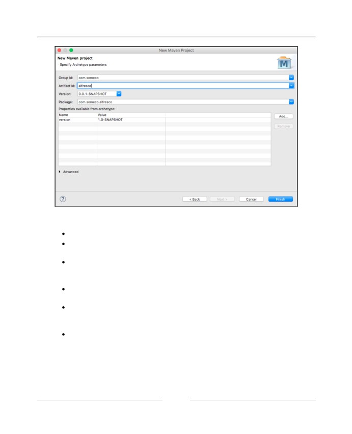
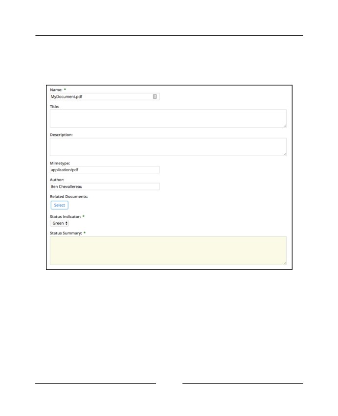
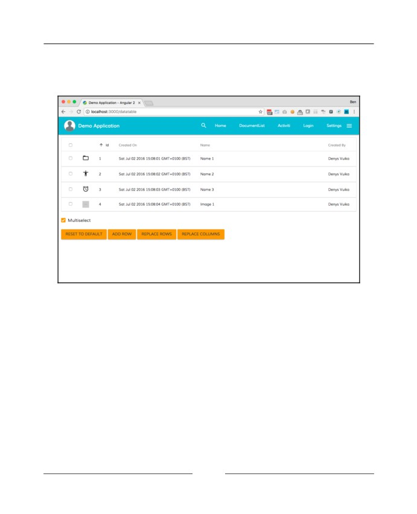
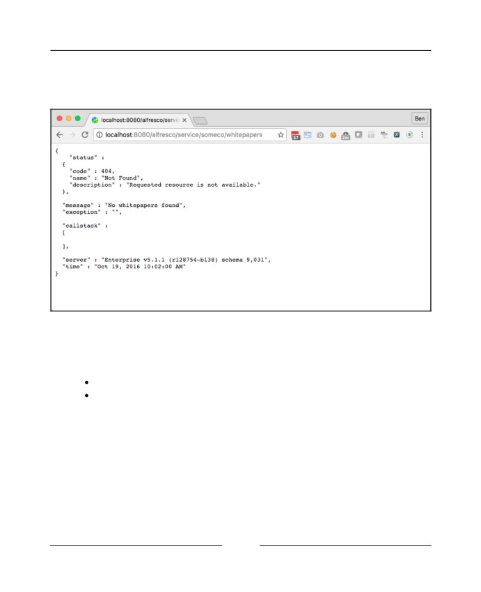
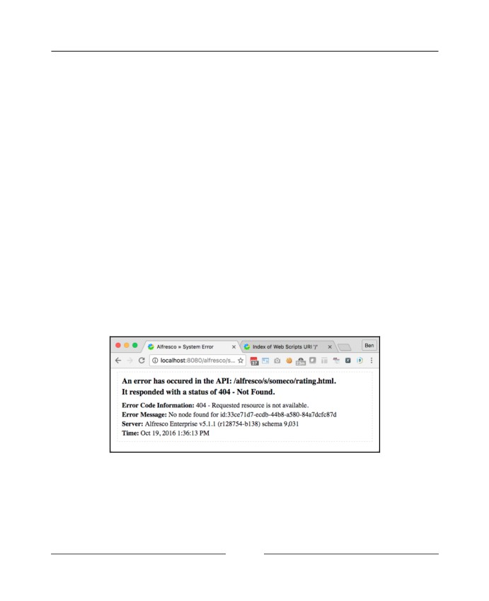
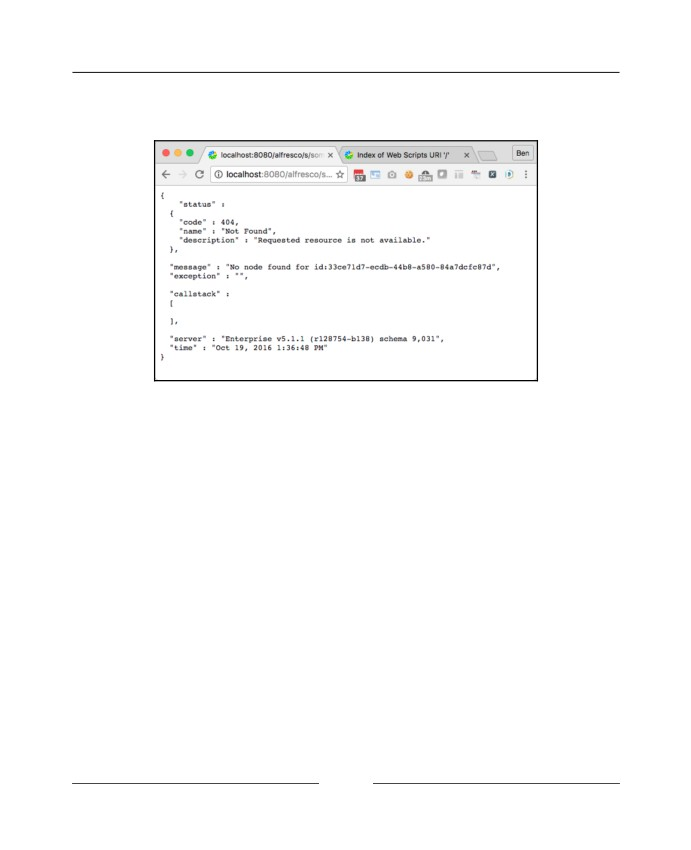
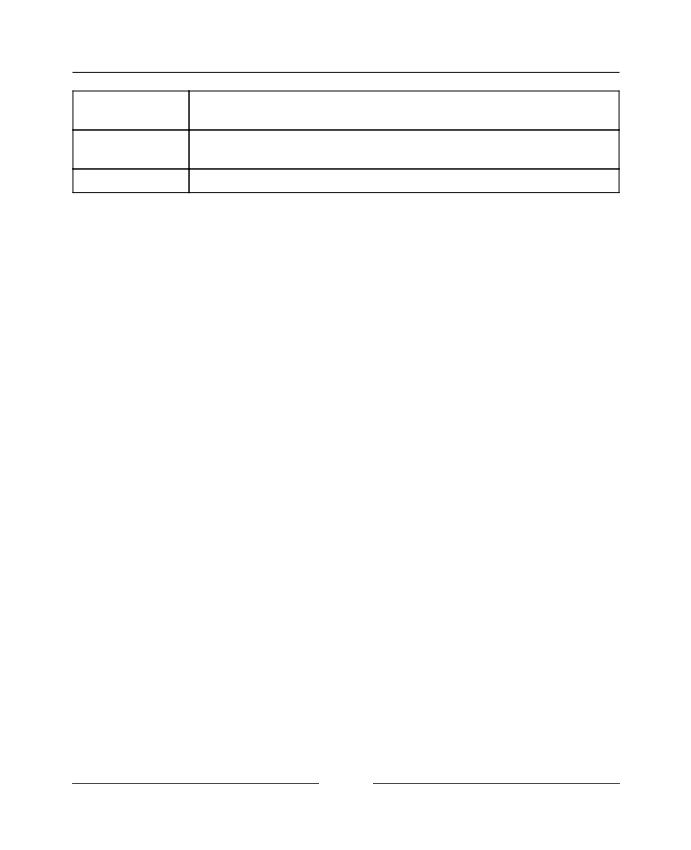
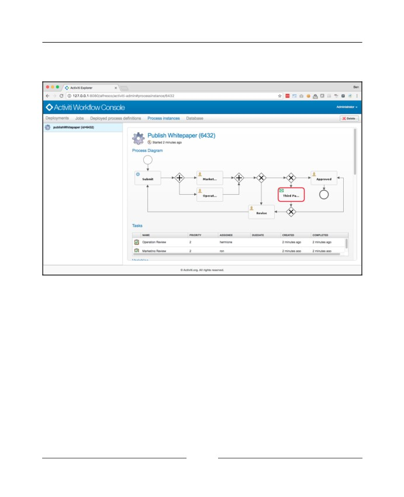
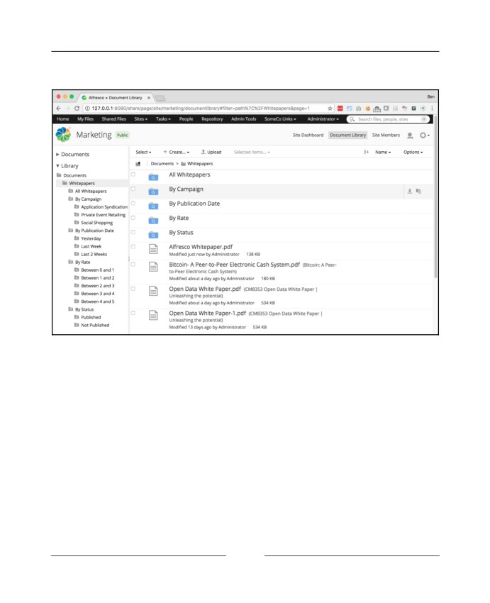
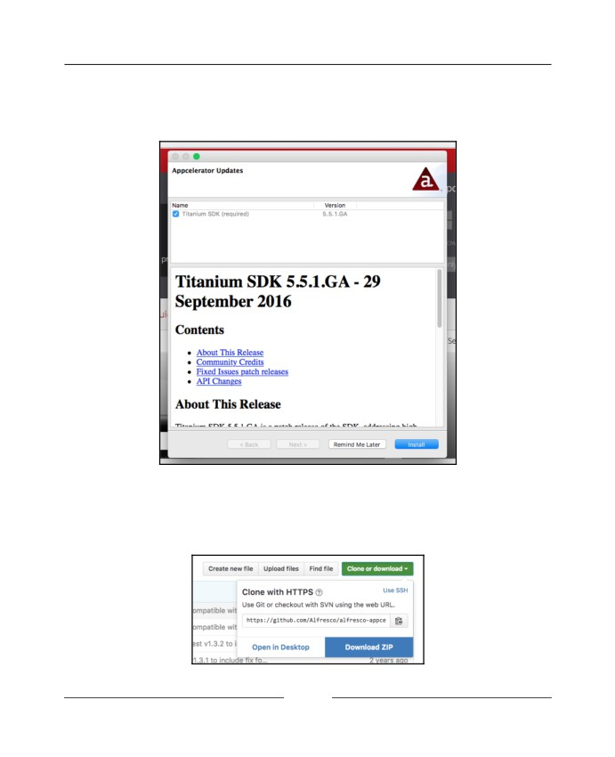

Alfresco One 5.x Developer’s
Guide
Second Edition
Discover what it means to be an expert developer by
exploring the latest features available to you in Alfresco One
5.x
Benjamin Chevallereau
Jeff Potts
BIRMINGHAM - MUMBAI
Alfresco One 5.x Developer’s Guide
Second Edition
Copyright © 2017 Packt Publishing
All rights reserved. No part of this book may be reproduced, stored in a retrieval system, or
transmitted in any form or by any means, without the prior written permission of the
publisher, except in the case of brief quotations embedded in critical articles or reviews.
Every effort has been made in the preparation of this book to ensure the accuracy of the
information presented. However, the information contained in this book is sold without
warranty, either express or implied. Neither the authors, nor Packt Publishing, and its
dealers and distributors will be held liable for any damages caused or alleged to be caused
directly or indirectly by this book.
Packt Publishing has endeavored to provide trademark information about all of the
companies and products mentioned in this book by the appropriate use of capitals.
However, Packt Publishing cannot guarantee the accuracy of this information.
First published: October 2008
Second edition: February 2017
Production reference: 1220217
Published by Packt Publishing Ltd.
Livery Place
35 Livery Street
Birmingham
B3 2PB, UK.
ISBN 978-1-78712-816-3
Credits
Authors
Copy Editor
Benjamin Chevallereau
Safis Editing
Jeff Potts
Reviewer
Project Coordinator
Bindu Wavell
Ritika Manoj
Commissioning Editor
Proofreader
Amarabha Banerjee
Safis Editing
Acquisition Editor
Indexer
Shweta Pant
Tejal Daruwale Soni
Content Development Editor
Graphics
Aditi Gour
Jason Monteiro
Technical Editor
Production Coordinator
Anushree Arun Tendulkar
Melwyn Dsa
About the Authors
Benjamin Chevallereau is a French software architect, based in London, who has been
working on Alfresco projects for the last 8 years and Ephesoft projects for the last 3 years.
He implemented solutions for small companies and global organizations in different
domains such as transport, finance, and government.
He has worked for different Alfresco-recognized partners in France, the UK, and USA,
including Armedia LLC, Zaizi, Michelin / Wipro, and BlueXML. He is also one of the
committers and PMC members of the Apache CMIS Chemistry project.
Jeff Potts is the founder of Metaversant Group, Inc., a consulting firm focused on content
management, search, and workflow. Jeff brings over 20 years of Enterprise Content
Management implementation experience to organizations of all sizes including the Fortune
500. Throughout his consulting career he has worked on a number of projects for clients
across the media and entertainment, airline, consumer packaged goods, and retail sectors.
Jeff began working with and blogging about Alfresco in November of 2005. In 2006 and
2007, he published a series of Alfresco tutorials and published them on his blog,
ecmarchitect.com . That work, together with other Community activity in Alfresco's forum,
Wiki site, and JIRA earned him Alfresco's 2007 Community Contributor of the Year Award.
In the past, Mr. Potts has worked for Alfresco Software, Inc. as Chief Community Officer,
Optaros as Senior Practice Director, and Hitachi Consulting as Vice President where he ran
the ECM practice.
About the Reviewer
Bindu Wavell is the chief architect at Zia Consulting. He has been doing enterprise system
integration consulting for the past 24 years. At Zia, Bindu provides guidance and mentoring
around Alfresco architecture and design in addition to working hands on with customers.
He develops processes and technologies to streamline onboarding new developers, delivers
trainings for customer developers and provides support for implementations and delivered
projects.
I would like to thank the whole team at Zia for providing an amazing environment for
learning, discovery and excellence. I’d also like to thank everyone at Alfresco for delivering
such a great content management platform and for continuing to focus on being the best in
the industry.
For support files and downloads related to your book, please visit www.PacktPub.com .
Did you know that Packt offers eBook versions of every book published, with PDF and
ePub files available? You can upgrade to the eBook version at www.PacktPub.com and as a
print book customer, you are entitled to a discount on the eBook copy. Get in touch with us
at service@packtpub.com for more details.
At www.PacktPub.com , you can also read a collection of free technical articles, sign up for a
range of free newsletters and receive exclusive discounts and offers on Packt books and
eBooks.
Get the most in-demand software skills with Mapt. Mapt gives you full access to all Packt
books and video courses, as well as industry-leading tools to help you plan your personal
development and advance your career.
Why subscribe?
Fully searchable across every book published by Packt
Copy and paste, print, and bookmark content
On demand and accessible via a web browser
Customer Feedback
Thanks for purchasing this Packt book. At Packt, quality is at the heart of our editorial
process. To help us improve, please leave us an honest review on this book's Amazon page
If you'd like to join our team of regular reviewers, you can e-mail us at
customerreviews@packtpub.com. We award our regular reviewers with free eBooks and
videos in exchange for their valuable feedback. Help us be relentless in improving our
products!
Table of Contents
Preface
1
Chapter 1: The Alfresco Platform
8
Alfresco in the real world
8
Basic document management
9
Web content management
12
Content authoring tools
12
Separation of presentation from content
13
Systematic publication or deployment
14
Alfresco WCM example
14
Custom content-centric applications
14
Example used throughout this book
16
Alfresco architecture
18
High-level architecture
19
Add-ons
20
Open source components
20
Major standards and protocols supported
22
Customizing Alfresco
23
Basic customization
23
Dashlets
24
Custom site configuration
26
Rules and actions
27
Simple workflow
27
Advanced customization
28
Examples of advanced customizations
28
Extend the content model
28
Perform automatic operations on content
29
Customize Alfresco Share
29
Create a RESTful API
29
Streamline complex business processes with advanced workflows
30
Integrate with other systems
30
Dusting off your toolbox
30
Understanding Alfresco's editions
31
Significant feature differences
32
What's used in this book
32
Summary
33
Chapter 2: Getting Started with Alfresco
34
Introduction to the Alfresco SDK
35
Maven archetypes
35
Install prerequisites
36
Spring Loaded
36
JDK
37
Maven
38
Install STS
39
Create your first application
41
Rapid application development
41
Traditional approach
47
Install Alfresco
50
Download Alfresco
51
Create your virtual machine
51
Deploy your modules
58
Check that your modules are installed
60
Extending Alfresco
61
Understanding the extension mechanism
61
Standard Java web application files
62
Framework files
62
Spring configuration files
62
Alfresco configuration files
63
Solution-specific files
64
Avoid Modifying Alfresco Code and Configuration
65
Troubleshooting
65
Log4j
66
Step-by-step - debugging from within Eclipse
66
Node browser
70
Starting over
72
Summary
73
Chapter 3: Working with Content Models
74
Defining SomeCo's content model
74
Step-by-step - starting the custom content model with custom types
74
Types
78
Properties and property types
79
Constraints
80
Step-by-step - adding properties to types
80
Step-by-step - relating types with associations
82
Associations
83
Step-by-step - adding aspects to the content model
84
Aspects
86
Step-by-step - finishing up the model
87
Manage property indexing
89
[ ii ]
Modeling summary
90
Custom behavior
91
Modeling best practices
92
Out-of-the-box models
94
Configuring the UI
95
Step-by-step - configure Share forms
95
Step-by-step - adding types and aspects to Alfresco Share dropdowns
98
Step-by-step - externalizing display labels
103
Setting up additional locales
105
Step-by-step - adding properties and types to advanced search
105
Working with content programmatically
108
Step-by-step - creating content with JavaScript
108
Knowing when to save documents
110
Using JavaScript for batch manipulation
110
Writing content to the content property
110
Creating content with CMIS
111
Step-by-step - run CmisClientClass to create content
113
Creating associations
114
Searching for content
115
Deleting content
117
Model manager
118
Summary
119
Chapter 4: Handling Content Automatically with Actions, Behaviors,
Transformers, and Extractors
120
Encapsulating content operations in actions
120
Step-by-step - creating a basic action
121
Hiding the action from end users
127
Creating actions that require user-specified parameters
127
Step-by-step - creating an action configurable in Alfresco Share
128
Specifying parameters when code executes an action
138
Binding logic to custom types with behaviors
139
Step-by-step - writing a simple behavior in Java
140
Binding to multiple types/aspects
144
Frequency
144
Figuring out to which policies to bind
144
Step-by-step - writing a simple behavior in JavaScript
146
Binding behavior to child types
148
Step-by-step - writing a user ratings calculator
148
Step-by-step - testing the new rating behavior
154
Handling deleted ratings
156
[ iii ]
Extracting metadata from files
159
Customizing metadata extractors
159
Step-by-step - customizing the metadata mapping
159
Overriding the default mapping
165
Leveraging out-of-the-box metadata extractors
165
Transforming content from one format to another
166
Step-by-step - writing a custom transformer
167
Summary
170
Chapter 5: Customizing Alfresco Share
171
Knowing when to customize Alfresco Share and when to write your
own
172
Adding new menu items
173
Step-by-step - adding a simple menu item
173
Adding new action items
178
Step-by-step - adding an action item to set the web flag
178
Restricting the action item by permission
182
Writing action evaluators to show/hide UI actions
182
Step-by-step - evaluating whether or not to show the set web flag
actions
183
Changing how Share renders forms
186
Step-by-step - using a text area field
187
Step-by-step - changing the Status field on the Details page to display
as a Stoplight indicator
190
Overriding and customizing components
193
How to use indicators
193
Step-by-step - creating indicators for the status indicator
193
How to create metadata template
195
Step-by-step - create a metadata template for Operations document
196
Creating custom dialogs
198
Step-by-step - creating a dialog to publish Whitepapers
199
Creating custom dashlets
201
Step-by-step - creating a dashlet listing Whitepapers
205
Step-by-step - adding filters to your Dashlet
208
Create custom pages
218
Step-by-step - create a new page to list all Webable documents
218
Summary
229
Chapter 6: Creating an Angular Application
230
Understanding the framework
231
[ iv ]
Components
231
Prepare your environments
232
Step-by-step - creating the new virtual machine
235
Creating your first JavaScript application
238
Step-by-step - develop your first custom UI using the JavaScript API
240
Creating your first Angular web application
247
Step-by-step - installing all prerequisites
248
Step-by-step - creating your first Angular application
249
Step-by-step - running the Alfresco demo shell
258
Summary
262
Chapter 7: Exposing Content through a RESTful API with Web Scripts
263
Introducing the Web Script Framework
263
Step-by-step - Hello World web script
265
What just happened?
266
Following the Model-View-Controller pattern
266
Adding controller logic
267
Configuring the Web Script Framework
268
Specifying the HTTP method
268
Specifying arguments
269
Specifying the response format
269
Deploying web scripts
270
Building solutions with the Web Script Framework
271
Planning the SomeCo whitepapers and ratings API
272
Retrieving data with web scripts
274
Step-by-step - writing a web script to list whitepapers
275
Debugging
283
Fast facts
285
Organizing web scripts
286
Overriding web scripts
286
Choosing a URL
287
Choosing between the repository and the classpath
287
Step-by-step - retrieving the rating for a whitepaper
288
Specifying optional arguments
291
Handling errors
292
Writing Java-backed web scripts
295
Step-by-step - writing a Java-backed web script to handle ratings posts
295
Using the correct ID for Web Script Beans
303
Using both Java and JavaScript for controller logic
304
Wiring a web script to UI widgets
304
[ v ]
Step-by-step - using a widget to post ratings
305
Implementing the delete ratings link
308
Adding the web script calls to SomeCo's whitepaper web page
309
Making other types of content rateable
311
Dealing with the cross-domain scripting limitation
311
Handling form data
311
Step-by-step - implementing a form-based Hello World
312
Step-by-step - using file upload in a multipart request
313
Advanced web scripts
316
Dealing with web script authentication
317
Controlling web script cache
318
Summary
319
Chapter 8: Advanced Workflow
320
What is a workflow?
321
Workflow options
322
Roll your own
323
Standalone engines
323
Embedded workflow engines
323
Creating process definitions
324
Step-by-step - creating a Hello World process definition
325
Using the Activiti graphical process designer
328
Step-by-Step - using Activiti process designer to create processes
330
Tokens
335
Node types
335
Versioning process definitions
336
Using alternative deployment methods
336
Wiring a process to the Alfresco UI
337
Step-by-step - grabbing the Hello World argument from the user
338
Understanding workflow-specific content models
347
Assigning tasks to users and groups
348
Step-by-step - creating the initial Whitepaper submission workflow
350
Controlling what actions can be taken from the Task Management
dialog
360
Enabling the Workflow Initiator to Select Users and Groups
361
Step-by-step - use dynamic user assignment
362
Adding Logic to Workflows with Listeners and Process Variables
365
Storing Data in Process Variables
365
Step-by-step - adding logic to the Whitepaper submission workflow
367
Getting access to the content in the workflow
370
Using multi-instances
370
[ vi ]
Using the Activiti API
372
Step-by-step - implementing third-party review
373
Making the third-party review more robust
388
Using timers
389
Step-by-step - adding a timer to the third-party review
389
Debugging workflows
392
Comparing Alfresco workflow options
393
Summary
394
Chapter 9: Amazing Extensions
396
Configure and use the search manager
396
Configure and use the Smart Folders
401
Step-by-step - create your own Smart Folder template
409
Alfresco mobile
416
Step-by-step - import and run the Alfresco Sample UI
418
Step-by-step - create SomeCo mobile application
427
Summary
434
Chapter 10: Security
435
Authenticating and synchronizing with LDAP
435
Step-by-step - setting up a local OpenLDAP server
436
Step-by-step - configuring Alfresco to authenticate against LDAP
442
Step-by-step - configuring chaining
446
Setting up Single Sign-On (SSO)
447
Step-by-step - implementing SSO
448
Logging Out
465
Step-by-step - configuring CAS to use LDAP for authentication
465
Working with security services
472
Securing the admin user
472
Granting additional users admin rights
472
Creating users and Groups Programmatically
474
Step-by-step - creating users and groups through the Java services
477
Understanding permission definitions
483
Permission groups
484
Permissions
486
Permission sets
486
Step-by-step - setting up a publisher custom role
487
Global Permissions
494
Mapping Permissions to Methods
494
Summary
495
Index
497
[ vii ]
Preface
Alfresco is the leading open source platform for Enterprise Content Management. The
evolution of the product has been quite impressive during the last 10 years. The first edition
of this book has been published in 2008, and after 8 years, it really needed an update. This
new book will give you some insights on the most advanced capabilities of the Alfresco
platform. This book takes you through the process of customizing and extending the
Alfresco engine, the out-of-the-box user interface Alfresco Share that will suit most of your
requirements in terms of document collaboration. It uses a fictitious professional services
company called "SomeCo" as an example. SomeCo has decided to roll out Alfresco across
the enterprise. Your job is to take advantage of Alfresco's extension mechanism, workflow
engine, and various APIs and SDKs to meet the requirements from SomeCo's various
departments. Although many customizations can be made by editing XML and properties
files, this book is focused on developers. That might mean writing Java code against the
Alfresco API to implement an action or a behavior, maybe creating some server-side
JavaScript to use as the controller of a RESTful web script, or perhaps implementing custom
business logic in an advanced workflow. The point is that all but the most basic
implementations of any ECM platform require code to be written. The goal of this book is to
help you identify patterns, techniques, and specific steps that you can use to become
productive on the platform more quickly. By the end of this book, you will have stepped
through every aspect of the Alfresco platform. You will have performed the same types of
customizations and extensions found in typical Alfresco implementations. You’ll have
discovered the Mobile Alfresco SDK and creates your own mobile application. Finally,
you’ll get a preview of the latest Alfresco Development Framework (ADF) based on
Angular. Most importantly, when someone comes to you and asks, "How would you do
this in Alfresco?", you'll have at least one answer and maybe even some source code to go
with it.
What this book covers
Chapter 1, The Alfresco Platform, is for people new to the Alfresco platform. It walks you
through the capabilities of Alfresco and gives some examples of the types of solutions that
can be built on the platform. You'll also learn what tools and skills are required to
implement Alfresco-based solutions.
Preface
Chapter 2, Getting Started with Alfresco, is about getting your development environment set
up. Like preparing for a home improvement project, this is the trip to the hardware store to
get the tools and supplies you'll need to get the job done. Throughout the book, you will be
building and deploying changes. So just as in any software development project, it pays to
get that process working up front. You'll also learn about the debugging tools that are
available to you. The chapter includes a short and simple customization example to test out
your setup.
Chapter 3, Working with Content Models, starts where all Alfresco projects should begin:
defining the content model. You'll learn how to define the content model as well as how to
expose the model to Alfresco Share. Once you've got it in place, you'll write some Java code
that utilizes the CMIS API to test out the model. This will also be your first taste of the
JavaScript API. The exercises set up the initial content model for SomeCo.
Chapter 4, Handling Content Automatically with Actions, Behaviors, Transformers, and
Extractors, begins to show you the power of the repository by exposing you to some of the
mechanisms or hooks that can be used to perform "hands off" operations on content. You'll
learn about actions, behaviors, transformers, and metadata extractors. The exercises include
implementing a rule action for SomeCo's Human Resources department to help manage HR
policies, writing a custom behavior to calculate user ratings, and writing a custom metadata
extractor to make Microsoft Project files indexable by SolR.
Chapter 5, Customizing Alfresco Share, takes you through Alfresco Share customizations.
First, it establishes whether or not you should be customizing the user interface at all. Once
that's out of the way, you learn how to add new menu or action items, how to create your
own custom metadata template, how to develop new pages and dashlets, and how to define
new dialogs to gather information from a user.
Chapter 6, Creating an Angular Application, shows you how to use the new Alfresco
Development Framework (ADF) released in 2016. First, you start by discovering the new
JavaScript library that you could include in any of your web applications. Then, you
discover the new user interface implemented in AngularJS, and test all available current
components. At the time of writing, this framework is only an early release and is not
suitable for production. However, we are convinced that this framework will become an
important component for any Alfresco developer.
Chapter 7, Exposing Content through a RESTful API with Web Scripts, focuses on the web
script framework. Web scripts are an important part of the platform because they allow you
to expose the repository through a RESTful API. The exercises in this chapter are about
creating a set of URLs that can be called from the frontend web site to retrieve and persist
user ratings of objects in the repository.
[ 2 ]
Preface
Chapter 8, Advanced Workflows, is about the embedded Activiti workflow engine, how it
works and how to define your own workflows, including how to implement your own
business logic. The chapter includes a comparison between the capabilities of Alfresco's
simple workflow and advanced workflow so that you can decide which one is appropriate
for your needs. By the end of the chapter, you will have built a workflow that SomeCo will
use to review and approve Whitepapers for external publication.
Chapter 9, Amazing Extensions, shows you one of the most amazing extensions including
the use of facets configured with the search manager. Then, you discover what are smart
folders and how to use them. After, you create your own template for SomeCo
Whitepapers. Finally, you even create your own mobile application connected to your
Alfresco instance.
Chapter 10, Security, covers a variety of security-related topics. You'll learn how to define
your own custom roles, and how to create users and groups with the API. Although not
strictly developer-centric, you'll also learn how to configure Alfresco to authenticate and
synchronize with an LDAP directory and how to implement Single Sign-On (SSO) between
Alfresco and other web resources.
What you need for this book
To work through the examples in this book, you will need:
Alfresco. Preferably Enterprise, but Community should work, except for some
advanced chapters. The examples have been tested on Alfresco from 5.1
Spring Tool Suite (STS)
Apache Maven
Vagrant (to create your virtual machines)
Appcelerator (to create your mobile application)
There are other tools or libraries that you will need for certain exercises, which will be
mentioned as necessary.
[ 3 ]
Preface
Who this book is for
This book will be most useful to developers who are writing code to customize Alfresco for
their organization or who are creating custom applications that sit on top of Alfresco.
This book is for Java developers, and you will get most from the book if you already work
with Java, but you need not have prior experience on Alfresco. Although Alfresco makes
heavy use of open source frameworks such as Spring, Hibernate, no prior experience using
these is assumed or necessary.
Conventions
In this book, you will find a number of styles of text that distinguish between different
kinds of information. Here are some examples of these styles, and an explanation of their
meaning.
Code words in text are shown as follows: "Let's clarify what's an AMP file or package. An
AMP file is a .zip file with the .amp extension."
A block of code will be set as follows:
{
"rating": {
"average": 1.923,
"count": 13
}
}
When we wish to draw your attention to a particular part of a code block, the relevant lines
or items will be made bold:
enableLookups="false"
disableUploadTimeout="true"
acceptCount="100"
scheme="https"
secure="true"
clientAuth="false"
sslProtocol="TLS"
keystoreFile="/root/.keystore"
keystorePass="changeit"
Any command-line input and output is written as follows:
service alfresco start
[ 4 ]
Preface
New terms and important words are shown in bold. Words that you see on the screen, for
example, in menus or dialog boxes, appear in the text like this: "When users log in to
Alfresco, the first thing that is usually displayed is the My Dashboard section."
Warnings or important notes appear in a box like this.
Tips and tricks appear like this.
Reader feedback
Feedback from our readers is always welcome. Let us know what you think about this
book-what you liked or disliked. Reader feedback is important for us as it helps us develop
titles that you will really get the most out of. To send us general feedback, simply e-
mail feedback@packtpub.com, and mention the book's title in the subject of your
message. If there is a topic that you have expertise in and you are interested in either
Customer support
Now that you are the proud owner of a Packt book, we have a number of things to help you
to get the most from your purchase.
Downloading the example code
You can download the example code files for this book from your account at http://www.p
om/support and register to have the files e-mailed directly to you.
You can download the code files by following these steps:
1. Log in or register to our website using your e-mail address and password.
2. Hover the mouse pointer on the SUPPORT tab at the top.
3. Click on Code Downloads & Errata.
4. Enter the name of the book in the Search box.
[ 5 ]
Preface
5. Select the book for which you're looking to download the code files.
6. Choose from the drop-down menu where you purchased this book from.
7. Click on Code Download.
Once the file is downloaded, please make sure that you unzip or extract the folder using the
latest version of:
WinRAR / 7-Zip for Windows
Zipeg / iZip / UnRarX for Mac
7-Zip / PeaZip for Linux
also have other code bundles from our rich catalog of books and videos available at https
Downloading the color images of this book
We also provide you with a PDF file that has color images of the screenshots/diagrams used
in this book. The color images will help you better understand the changes in the output.
Errata
Although we have taken every care to ensure the accuracy of our content, mistakes do
happen. If you find a mistake in one of our books-maybe a mistake in the text or the code-
we would be grateful if you could report this to us. By doing so, you can save other readers
from frustration and help us improve subsequent versions of this book. If you find any
your book, clicking on the Errata Submission Form link, and entering the details of your
errata. Once your errata are verified, your submission will be accepted and the errata will
be uploaded to our website or added to any list of existing errata under the Errata section of
that title.
t/support and enter the name of the book in the search field. The required information will
appear under the Errata section.
[ 6 ]
Preface
Piracy
Piracy of copyrighted material on the Internet is an ongoing problem across all media. At
Packt, we take the protection of our copyright and licenses very seriously. If you come
across any illegal copies of our works in any form on the Internet, please provide us with
the location address or website name immediately so that we can pursue a remedy.
Please contact us at copyright@packtpub.com with a link to the suspected pirated
material.
We appreciate your help in protecting our authors and our ability to bring you valuable
content.
Questions
If you have a problem with any aspect of this book, you can contact us
at questions@packtpub.com, and we will do our best to address the problem.
[ 7 ]
1
The Alfresco Platform
This chapter introduces the Alfresco platform and answers the question, “What can I do with
this thing?” A few examples will be provided to help answer this question from the solving
business problems perspective. The chapter then skims over basic configuration and
customization before introducing the advanced customization concepts covered throughout
the book. The chapter concludes with a brief discussion on the different Alfresco editions
that are available.
In this chapter, we will go through the following points:
Examples of practical solutions built on Alfresco
High-level components of the Alfresco platform
Examples of the types of customizations that you will likely perform as a part of
your implementation
Technologies you will use to extend the platform
Alfresco in the real world
Alfresco will tell you that the product is a platform for enterprise content management
(ECM). But ECM is a somewhat nebulous and nefarious term. What does it really mean? It
depends on who is saying it. ECM vendors usually use it as an umbrella term to describe a
collection of content-centric technologies as follows:
Document management (DM): This is used for capturing, organizing, and
sharing binary files. These files are typically produced from office-productivity
software, but the scope of the files being managed is unlimited.
The Alfresco Platform
Web content management (WCM): This is used for managing files and content
specifically intended to be delivered to the Web. The key theme of WCM is to
reduce the “web developer” bottleneck and empower non-technical content
owners to publish their own content.
Digital asset management (DAM): This is used for managing graphics, video,
and audio. You can think of this as DM with added functionality specific to the
needs of working with rich media such as thumbnailing, transcoding, and
editing. Like WCM, the intent is to streamline the production process.
Records management(RM): This is used for managing content as a legal record.
Like DAM, RM starts with DM and adds functionality specific to the world of RM
such as retention policies, records plans, and audit trails.
Knowledge management(KM): This is used for capturing knowledge from
employees or customers and providing it in a form that others can use.
Case management(CM): This is used managing information related to a case,
such as an insurance claim, an investigation, or personnel processing.
Imaging : This includes capturing, tagging, and routing images of documents
from scanners.
Most people will also include collaboration, search, and occasionally, portals as well.
Practitioners have a different perspective. They will say that ECM is less about the
technology and more about how you capture, organize, and share information across the
entire enterprise. For them, the how is more important than the what.
What's important to know from an Alfresco perspective is that Alfresco is a platform for
doing all these things.
So rather than worrying about a concise definition of ECM, let's look at a few examples to
illustrate how clients are using Alfresco today, particularly in Alfresco's sweet spots such as
DM and WCM.
Basic document management
Alfresco started its life as a document management repository with some basic services for
document management. Alfresco focused on this smart area initially for two reasons. First,
it allowed Alfresco to establish a strong foundation and then build upon that foundation by
expanding into other areas of ECM. Second, there is a huge market for systems that can
manage unstructured content (aka “documents”).
[ 9 ]
The Alfresco Platform
The market is so big because document management is a problem for everyone. All
companies generate files that benefit from the kind of features document management
provides such as check-in/check-out, versioning, metadata, security, full-text search, and
workflow.
Examples of classic document management are often found in insurance, manufacturing,
packaged goods, or other companies with large research and development divisions. As
you can imagine, companies such as these deal with thousands of documents every day.
The documents are in a variety of formats and languages, and are created and leveraged by
many different types of stakeholders from various parts of the company.
The critical functionality required for basic document management includes things such as:
Easy integration with authoring tools: If users can't get documents into and out
of the repository easily, user adoption will suffer. This means users must be able
to open and save documents to the repository from applications such as
Microsoft Office, Microsoft Windows Explorer, and e-mail.
Security: Many documents, particularly legal documents and anything around
new product development, are very sensitive. Employees must be able to log in
with their normal username and password, and see only the documents they
have access to.
Library services: This is a grouping of foundational document management
functionality that includes check-in/check-out, versioning, metadata, and search.
The ability to offer these library services is one of the things that sets a document
repository apart from a plain filesystem.
Workflow: Quite literally, workflow describes the “flow of work” or business
process related to a document. Requirements vary widely in this area and not
everyone will leverage workflows right away. Workflows can be used to
streamline and automate manual business processes by letting the document
management system keep track of who needs to do what to a document at any
particular time.
Scalability/Reliability: The system needs to scale in order to support several
hundred or more users and hundreds of thousands or even millions of
documents with some percentage of growth each year. Because the repository
holds content that's critical to the business, it needs to be highly available.
[ 10 ]
The Alfresco Platform
Customizable user interface: Alfresco is split into two web applications. The first
one contains only the core engine capabilities that are required for all Alfresco
installation. The second one is the out-of-the-box Alfresco Share client made for
generic document management, which may be appropriate in many cases. Most
clients will want to make at least some customizations to the web client to help
increase productivity and improve user adoption. It's possible as well to develop
your own frontend from scratch.
The following diagram shows an example of high-level architecture to understand how
basic document management might be implemented:
The diagram shows a single instance of Alfresco authenticating against a Directory Server
(such as LDAP). Some content managers are using Alfresco Share via HTTP/S, while others
are using Windows Explorer, Microsoft Office, and other thick clients to work with content
via one or more protocols such as CIFS, WebDAV, FTP, or SMTP. As noted in the diagram,
Alfresco stores metadata in a relational database and the actual content files on the
filesystem.
[ 11 ]
The Alfresco Platform
Most of the techniques for customizing Alfresco for DM solutions apply to other ECM
solutions such as WCM, RM, Imaging, and DAM. Of course, there are business concepts
and technical implementation details specific to each that make them unique, but the details
provided in this book apply to all because the specialized solutions are built as extensions to
the core Alfresco repository. This books dedicates an entire chapter, Chapter 9, Amazing
Extensions, to some very famous extensions as Alfresco Mobile and Alfresco Analytics.
Web content management
On the surface, WCM is very similar to document management. In both cases, content
owners store files in a repository. Often, the content is assigned metadata, secured, indexed
for search, and routed through a workflow. The most obvious difference between DM and
WCM is that the content being managed is meant specifically to be published on a website
or as part of a web application. Beyond that high-level distinction, there are several other
differences that make WCM worthy of separate discussion. These include:
Content authoring tools used to create content
Separation of presentation from content
Systematic publication or deployment of content
Let's briefly look at each of these.
Content authoring tools
The majority of document management solutions deal with files generated by an office
suite. Of course, there are exceptions such as various types of graphics files, CAD/CAM
drawing formats, and other specialized tools. But mostly, the files are generated by a small
number of different tools and an even smaller number of different software vendors.
In the case of WCM, there is a wide variety of tools involved from text editors to integrated
development environments (IDEs) to graphics programs with multiple vendors in each
category. This means the WCM solution needs to be very flexible in the way it integrates
with authoring tools. The alternative, which is forcing authors to give up their favorite tools
in favor of a standard, can be a management nightmare.
[ 12 ]
The Alfresco Platform
Separation of presentation from content
WCM does not require the separation between content's appearance on the web site and its
storage. But many implementations take advantage of this principle because it makes
redesigning the site easier, facilitates multichannel publishing, and enables people to author
content without web skills.
To understand why this is so, think about a website that has its content and presentation of
that content merged together. When it is time to redesign the site, you have to touch every
single web page because every page contains presentation markup. Similarly, content
authoring is limited to people with technical skills. Otherwise, there is a risk that the
content owner (for example, the person writing a press release or a job posting) will
inadvertently clobber the page design.
One way to address this is to separate the content (the press release copy) from the
presentation of that content. A common way to do that is to store the content as
presentation-independent XML. The XML can then be transformed into any presentation
that's needed. A redesign is as simple as changing the presentation in a single place, and
then regenerating all of the pages.
The impact of separating content from presentation is three-fold. First, assuming the content
consumers aren't interested in reading raw XML, something has to be responsible for
transforming the content. Depending on the implementation, it may be up to the WCM
system or a frontend web application.
Second, in the case of static content, any change in the underlying content has to trigger a
transformation so that the presentation will be up-to-date, keeping in mind that there may
be more than one file affected by the change. For example, data from a job posting appears
in the job posting detail as well as the list of job postings. If the posting and the job posting
index are both static, the list has to be regenerated whenever the job posting changes.
Third, content authors lose the benefit of WYSIWYG (What You See Is What You Get)
content authoring because the content doesn't immediately look the way it will as soon as it
is published to the web site. The WCM system, then, has to be able to let content authors
preview the content as they author it, preferably in the context of the entire site.
[ 13 ]
The Alfresco Platform
Systematic publication or deployment
A document management system is a lot like a relational database in the sense that it is
typically an authoritative, centralized repository. There are exceptions, but for the most
part, content resides in the repository and is retrieved by the systems and applications that
need it. On the other hand, a WCM system often faces a publication or deployment
challenge. Files go into the repository, but must be delivered somewhere to be consumed.
This might happen on a schedule, at the request of a user, as part of a workflow, or all of the
above. Granted, some websites retrieve their content dynamically; but most sites have at
least a subset of content that should be statically delivered to a web server.
Alfresco WCM example
Let's look at an example of a basic corporate website. Most companies have a mix of About
Us content that probably doesn't change very often, Press releases or News sections that
might get updated daily, and maybe some document-based content such as marketing
slicks, product information sheets, technical specifications, and so on. There's also some
content that is used to build the site such as HTML, XML, JavaScript, Flash, CSS, and image
files.
It is likely that there are several different teams with several different skill sets, all
collaborating to produce the site. In this example, suppose the About Us and News pages
come from the marketing team, the site is built by the web team and the document-based
content can come from many organizations within the company.
Alfresco WCM sits on top of the core Alfresco product to provide additional WCM-specific
functionality. An important distinction between Alfresco WCM and other open source
content management systems (CMS) is that Alfresco is a decoupled CMS while something
such as Drupal is a coupled CMS. This means that Alfresco manages the website but does not
concern itself with presentation unlike Drupal, which is both a repository and a
presentation framework. This doesn't mean that Alfresco can only manage static sites. You
can easily query the repository in any number of ways. It just means it is up to you to
provide the frontend from the ground up.
Custom content-centric applications
Content-centric applications are those in which the primary purpose of the application is to
process, produce, archive, collaborate on, or manage unstructured or semi-structured
content.
[ 14 ]
The Alfresco Platform
The Alfresco Share client is an example of a content-centric application, although it is meant
for a very general, all-purpose use case. When solutions are very close to basic document
management, Alfresco Share can be customized as previously discussed. At some point, it
makes more sense to build a separate custom application with Alfresco as the backend
repository for that application.
Consider the sales process within a company, for example. Sales people create proposals.
Those proposals are usually routed internally for review and approval, and then are
delivered to the client. If the client accepts the proposal, a contract is drawn up and the
product is delivered. The out-of-the-box Alfresco Share could be used to manage these
documents, assign metadata, manage the review process through workflows, and make it
all searchable. But the sales team might be even more productive if it used a purpose-built
user interface. For this solution, a frontend built on top of NodeJS and Angular, a custom
Spring web application, or even a custom mobile application might be a good option.
Alfresco would provide the document management services. The frontend would talk to
Alfresco via CMIS or RESTful services.
Another example is using Alfresco in a digitization project. More and more companies are
trying to reduce the use of paper-based process for many different reasons. Alfresco can be
integrated with various scanning solutions as Ephesoft via CMIS, or Kofax via the connector
supported by Alfresco. Documents can be ingested and processed by the scanning solution
and exported to Alfresco. Alfresco will be responsible to store, index and secure the scanned
documents. Using the integrated Activiti framework, Alfresco can automatically start a
process depending of the document type. If an invoice has been scanned, Alfresco will start
a review process for the financial team. If it's a job application, Alfresco will start a new
process for the HR team to track the different stages of this application.
As discussed previously, Alfresco provides two out-of-the-box web applications. The first
one is the Alfresco repository engine. The first one provides only administration capabilities
from a user interface point of view. The second one is the default web interface Alfresco
Share. Many clients appreciate this separation because it gives them complete freedom with
regard to how they build the frontend. Depending of your use case, you may want to use
the standard Alfresco Share user interface; or including some customizations; or even build
the frontend from scratch.
Alfresco Share provides many different options if you need customizations. The basic level
is to configure some forms and pages to display your custom metadata. If you need further
customization, you may want to customize an existing Dashlet or to develop a new one to
add on the user or site dashboard. You may need to create custom actions in the use
interface. If it's not enough, it's even possible to create new pages within Alfresco Share
reusing the entire UI framework. Finally, if it's not sufficient, Alfresco can be integrated to
any frontend using CMIS or REST API.
[ 15 ]
The Alfresco Platform
We'll see in one of the following chapters how Alfresco created tools to generate Angular
applications from scratch:
The openness of the Alfresco repository, particularly its ability to be easily exposed as a set
of services, makes Alfresco an ideal platform for content-centric applications. As the
examples have shown, custom content-centric web applications use Alfresco as the
backend. As a result, they have complete flexibility in frontend technology choices from
portals to lower-level frameworks to no framework at all.
Example used throughout this book
In this book, we'll assume we are rolling out Alfresco throughout a consulting firm.
Professional services firms make great examples because they tend to generate a variety of
different documents. The other reason is that document and content management is usually
a big challenge, which is the core to the business. But the examples should be applicable to
any business that generates a significant amount of documents.
The example firm, SomeCo, wants to leverage document and content management
throughout the organization to make it easier to find important information, streamline
certain business processes, and secure sensitive documents.
[ 16 ]
The Alfresco Platform
SomeCo's company organization is pretty standard. It consists of operations, sales, human
resources, marketing, and finance/legal. Examples of the different types of content each
department is concerned with are shown in the following table:
Department
Example document types
Format and process notes
Finance/legal
Client proposals for
• Microsoft Word and Adobe PDF.
project work
• Several iterations between the firm and the
Statements of work
client before a final version is completed.
Master services
• Some documents may require internal review
agreements
and approval.
Non-disclosure
agreements
Marketing
Case studies
• Microsoft Word, Microsoft PowerPoint,
Whitepapers
Adobe PDF, and Adobe Flash.
Marketing plans
• Mostly single-author content.
Marketing
• Some content may come from third parties.
slicks/promotional
• Some content may need to be published on
material
the website.
Human
Job postings
• Microsoft Word, Adobe PDF, and HTML.
resources
Resumes
• Single-author content with consumers being
Interview feedback
spread throughout the company.
Offer letters
• Some content formats are unpredictable
Employee profiles
(such as resumes). Some are very standard and
/Biographies
could be templatized (such as offer letters).
Project reviews
• With the exception of job postings, none of
Annual reviews
this content should go near the Web.
• Some content needs strict internal
permissions.
Sales
Forecast
• Microsoft Excel and Microsoft PowerPoint.
Presentations
• Some business process and automated
Proformas
document-handling possibilities such as
forecast.
• Searchability of presentations is important.
Operations
Methodology
• All Microsoft Office formats.
Utilization reports
• Some opportunity for integration into
Status reports
enterprise systems such as time tracking and
project management.
[ 17 ]
The Alfresco Platform
Examples throughout the rest of the book will show how Alfresco can be implemented and
customized to meet the needs of the various organizations within SomeCo. During a real
implementation, time would be spent gathering requirements, selecting the appropriate
components to integrate with the solution, finalizing architecture, and structuring the
project. There are plenty of other books and resources that discuss how to roll out content
management across an enterprise and others that cover project methodologies. So none of
that will be covered here.
Alfresco architecture
Many of Alfresco's competitors (particularly in the closed-source space) have sprawling
footprints composed of multiple, sometimes competing, technologies that have been
acquired and integrated over time. Some have undergone massive infrastructure overhauls
over the years, resulting in bizarre vestigial tails of sorts. Luckily, Alfresco doesn't suffer
from these traits. On the contrary, Alfresco's architecture shows the following
characteristics:
It is relatively straightforward
It is built with state-of-the-art frameworks and open source components
It supports several important content management and related standards
Let's look at each of these characteristics, starting with a high-level look at the Alfresco
architecture.
[ 18 ]
The Alfresco Platform
High-level architecture
The following diagram shows Alfresco's high-level architecture. By the time you finish this
book, you'll be intimately familiar with just about every box in the diagram:
The important takeaways at this point are as follows:
There are many ways to get content into or out of the repository, whether that's
via the protocols (for example CIFS on the diagram) or the APIs on the left.
Alfresco runs as a web application within a servlet container. From Alfresco 5.x,
this web application doesn't provide anymore a user interface for end users. It
includes only an administration console. If you need a user interface, you'll need
to deploy the Alfresco Share web application (in the same container or not) and
an extension package in the Alfresco web application to provide all web scripts
required by Alfresco Share. You can as well implement your own user interface
on top of your Alfresco repository.
Customizations and extensions run as part of the Alfresco repository or Share
web application. An extension mechanism separates customizations from the
core product to keep the path clear for future upgrades.
[ 19 ]
The Alfresco Platform
Metadata resides in a relational database. In a typical Alfresco installation,
content files are usually stored in a different server than Alfresco itself (as
compared to filesystem). Solr indexes needs to be located in the system as the Solr
web application that can reside in a dedicated server too.
Add-ons
The add-ons are pieces of functionality not found in the core Alfresco distribution. If you
are working with the binary distribution, it means you'll have additional files to download
and install on top of the base Alfresco or Share installation.
Add-ons are provided by Alfresco, third-party software vendors, and members of the
Alfresco community such as partners and customers. Alfresco makes several add-on
modules available such as Records Management, Google Docs, Office Services or Kofax
integration. Members of the Alfresco community create and share add-on modules via the
purpose. At the time of writing, this website contains 444 different add-ons compatible with
Alfresco Enterprise and/or Community.
Open source components
One of the reasons Alfresco has been able to create a viable offering so quickly is because it
didn't start from scratch. The Alfresco engineers assembled the product from many finer-
grained open source components. Why does this matter? First, instead of reinventing the
wheel, they used proven components. This saved them time, but it also resulted in a more
robust, more standard-based product. Second, it eases the transition for people new to the
platform. If a developer already knows Spring, for example, many of the customization
concepts are going to be familiar. Alfresco uses Surf, a Spring framework extension for
building or extending MVC applications. And besides, as a developer, wouldn't you rather
invest your time and effort in learning standard development frameworks rather than
proprietary development kits?
[ 20 ]
The Alfresco Platform
The following table lists some of the major open source components used to build Alfresco:
Open source component
Use in Alfresco
Full-text and metadata search
Database persistence
Web script framework views, custom
views in the web client, web client
dashlets, email templates
Web script framework controllers, server-
side JavaScript, actions
Scheduling of asynchronous processes
Security (authorization), roles, and
permissions
Web services
Conversion of office documents into PDF
Transformation of XSL:FO into PDF
Metadata extraction from Microsoft
Office files
Advanced workflow
Image file manipulation
Image file manipulation
Does this mean you have to be an expert in all open source components used to build
Alfresco to successfully implement and customize the product? Not at all! Developers
looking to contribute significant product enhancements to Alfresco or those making major,
deep customizations to the product may require experience with a particular component,
depending on exactly what they are trying to do. Everyone else will be able to customize
and extend Alfresco using basic Java and web application development skills.
[ 21 ]
The Alfresco Platform
Major standards and protocols supported
Software vendors love buzz words. As new acronyms climb the hype cycle, vendors
scramble to figure out how they can at least appear to support the standard or protocol so
that the prospective clients can check that box on the Request for proposal (RFP).
Commercial open source vendors are still software vendors and thus are no less guilty of
this practice. But because open source software is developed in the open by a community of
developers, its compliance to standards tends to be more genuine. It makes more sense for
an open source project to implement a standard than to go off in some new direction
because it saves time. It promotes interoperability with other open source projects, and
stays true to what open source is all about-freedom and choice.
Here, are the significant standards and protocols Alfresco supports:
Standard/protocol
Comment
HTTP
The main protocol used to access Alfresco content
repository via for example the Alfresco REST APIs.
CMIS
CMIS is a standard allowing information sharing
between different content management systems. Alfresco
supports the version 1.0. and 1.1 of the CMIS standard.
FTP
Content can be contributed to the repository via FTP.
WebDAV
WebDAV is an HTTP-based protocol commonly
supported by content management vendors. It is one
way to make the repository look like a file system.
CIFS
CIFS allows the repository to be mounted as a shared
drive by other machines. As opposed to WebDAV,
systems (and people) can't tell the difference between an
Alfresco repository mounted as a shared drive through
CIFS and a traditional file server.
IMAP
IMAP protocol is used by any modern email clients.
Directly from your client, you can connect to your
Alfresco repository.
SMTP
It is possible to email content into the repository
(InboundSMTP). A folder can be dedicated as an email
target.
SPP
Enables Alfresco to act as a Microsoft SharePoint Server.
Allows Microsoft Office users to access documents
within the Alfresco repository.
[ 22 ]
The Alfresco Platform
Alfresco Office Services
Using Alfresco Office Services (AOS), you can access
your documents directly via all Microsoft Office
software. AOS replaces and improves the Microsoft
SharePoint protocol available in the previous versions.
SOAP
The Alfresco Web Services API uses SOAP-based web
services.
OpenSearch
Alfresco repositories can be configured as an
OpenSearch data source, which allows Alfresco to
participate in federated search queries.
XSLT, XSL:FO
Web form data can be transformed using XSL 1.0.
LDAP
Alfresco can authenticate against an LDAP directory or a
Microsoft Active Directory server.
Customizing Alfresco
Alfresco offers a significant amount of functionality out of the box, but most implementers
will customize it in some way. At a high level, the types of customizations typically done
during an implementation can be divided into basic customizations and advanced
customizations.
Basic customization
Many Alfresco customizations can be done without writing a single line of code. Some may
be done even by end users through Alfresco Share. Others might require editing a
properties file or an XML file. Let's look at some of them briefly here so that you can get an
idea of what you don't have to code. Other customizations will be introduced in the
Chapter 9, Amazing Extensions.
[ 23 ]
The Alfresco Platform
Dashlets
When users log in to Alfresco, the first thing that is usually displayed is the My Dashboard
section. The dashboard is a user-configurable layout that contains dashlets. (If you are
familiar with portals, think portal page and portlet). Users choose the layout of the dashboard
(number of columns) as well as the specific dashlets they want displayed in each column.
There are a number of dashlets available out of the box, or you can develop your own and
add them to the user-selectable list. Examples of out of the box dashlets include workflow-
related dashlet such as My Tasks as well as content-related dashlets such as My
Documents, My Sites or My Activities:
[ 24 ]
The Alfresco Platform
and available from Alfresco 4.2.Some of these existing dashlets allows you some
configuration. Here are some examples:
RSS Feed: By simply configuring the RSS Feed URL, it will display automatically
the RSS items. The following screenshot shows a dashlet configured to display
the latest tweets by PacktPub
Saved Search: This dashlet runs a specific search each time the dashboard is
loaded:
[ 25 ]
The Alfresco Platform
Web View: This dashlet is used to display any website:
Obviously, developing custom dashlets is probably not something you'd let your business
users do; but it is still considered a basic customization. It can be complex to develop new
dashlet depending if you need to develop new web script for example.
Custom site configuration
The first concept that you'll discover using Alfresco Share is the concept of site. It's a secured
area in the repository where a team, a project or a suborganization can share and manage
any kind of contents, including documents of course. A site includes multiple pages,
depending mainly of the type of content. Alfresco Share provides the following by default:
A document library page
A calendar page
A Wiki page
A forum page
A data-list page
A links page
A blog page
In each site, you can configure and select only what is needed by the users.
Each Alfresco Share site contains as well a dedicated dashboard that you can entirely
customize with all out-of-the-box dashlets already provided.
[ 26 ]
The Alfresco Platform
Rules and actions
A rule is something that says, “When a piece of content is created, updated, or deleted, check these
conditions. If these conditions are met, take these actions”. Conditions may check whether a piece
of content is a particular mime type, or a specific content type. They may also check
whether a piece of content has a specific aspect applied, or whether the content's name
property matches a particular pattern. Rules can be defined on any folder in the repository.
Child folders can inherit rules from their parent.
Rule actions are repeatable operations that enable us to do things similar to those that can
be done using JavaScript or Java. Out-of-the-box actions include things such as check-in
content, check-out content, move an item to another folder, specialize the type of the
content, add an aspect to the content, transform content from one format to another, and so
on.
Configuring folders to run rule actions is something non-technical users can do through
Alfresco Share. In Chapter 4, Handling Content Automatically with Actions, Behaviors,
Transformers, and Extractors, you'll learn how to write your own custom rule actions using
the Alfresco API.
Simple workflow
Alfresco has two options for implementing workflow: simple workflow or advanced
workflow. The good thing about simple workflows is that end users can configure them as
needed without any technical skills or developer support.
Here's how it works. A user creates a rule to add simple workflow to a document when it is
placed in the folder. When an item enters a folder with this type of rule applied, it will have
additional UI action items available. The rule to specify the user actions and flow of the
content between folders is configured in the repository action. When the step is invoked, the
content can be copied or moved to another folder. It's also possible to add complexity to a
simple workflow by creating rules for other folders and passing content around from
location to location. For example, there might be folders called Draft, In Review, and
Approved. The state of a document is determined by the folder in which it resides.
Simple workflows have obvious limitations:
Workflows are limited to serial processes. Content can only move forward or
backward, one step at a time.
Content can only be in only one simple workflow state at a given time.
Content must change physical locations to reflect a change in state.
[ 27 ]
The Alfresco Platform
There is no opportunity for capturing (and acting on) process-related metadata.
Tasks can't be assigned to individuals or groups. (Of course, you could limit
folders to specific individuals or groups through permissions, which would have
a similar effect to a task assignment. But you wouldn't be able to easily pull a list
of tasks for a specific user across all simple workflows).
Other than creating additional rules and actions for the folders used in a simple
workflow, there is no way to add logic for decisions or other more complex
constructs. If you need to implement specific behavior depending of the state,
you have to implement additional action and rule attached to each folder.
Advanced customization
The basic configuration and customizations show that there is quite a lot of tweaking and
tailoring that can happen before a developer gets involved. This is a good thing. It means a
good chunk of the customization requirements can be dealt with quickly. In the case of
simple workflows, they can be delegated to the end users altogether! Hopefully, this leaves
more time for the more advanced (and more interesting) customizations required for a
successful implementation.
Examples of advanced customizations
The advanced customizations are the customizations that are likely to require code. They
are the focus of the book. To give you an idea of what's possible (and in an effort to provide
an appetizer before the main meal is served), let's go over some of the areas of advanced
customization.
Extend the content model
Alfresco's out-of-the-box content model can be extended to define your own content types,
content aspects, content metadata (properties), and relationships (associations). The out-of-
the-box model is very generic, and defines only a minimal subset of the metadata that will
probably need to be captured with the content.
For example, SomeCo might want to capture different metadata for its marketing
documents than for its HR documents. Or maybe there is a set of metadata that doesn't
belong to any one content type in particular, but should rather be grouped together in an
aspect and attached to objects as needed. These and other content modeling concepts will be
covered in Chapter 3, Working with Content Models.
[ 28 ]
The Alfresco Platform
Perform automatic operations on content
There are several hooks or places where you can insert logic or take action to handle content
automatically. These include rule actions, behaviors, content transformers, and metadata
extractors. Rule actions have already been discussed. Behaviors are like actions but instead
of being something that an end user can invoke on any piece of content, behaviors are
tightly bound to their content type or aspect. Content transformers, as the name suggests,
transform content from one format to another. Metadata extractors inspect content as it is
added to the repository, and pull out data to store in the content object's properties. These
tools for handling content automatically will all be covered in Chapter 4, Handling Content
Automatically with Actions, Behaviors, Transformers, and Extractors.
Customize Alfresco Share
Chapter 5, Customizing Alfresco Share, covers Share customization. Just about everything in
the Share web application can be tweaked. In the document library, it's possible to
configure the view of a content, or the edit form depending of the content type. It's possible
as well to define a template renderer that changes the default view in the document list.
Alfresco Share provides as well different views that you can customize, or even create new
ones. And if you want more, you can even create your own page from scratch.
Create a RESTful API
Web scripts are one of the more exciting additions to the Alfresco architecture. The reason is
that RESTful services are typically much easier to work with using scripting languages and
AJAX toolkits than SOAP-based services, because they are invoked through plain old URLs.
The web script framework, based on the Model-View-Control (MVC) pattern, allows you
to build your own RESTful API to the repository. It will be covered in detail in Chapter 7,
Exposing Content through a RESTful API with Web Scripts, but the high-level summary is that
URLs get mapped to a controller implemented as JavaScript or Java. The controller
performs whatever logic is needed, then forwards the request to the view. The view is
implemented as a FreeMarker template. The template could return anything from markup
to XML to JSON. RESTful services via web scripts are the preferred way to integrate with
the Alfresco repository.
[ 29 ]
The Alfresco Platform
Streamline complex business processes with advanced
workflows
Advanced workflows provide a way to automate complex business processes. Alfresco's
advanced workflows are executed by the embedded Activiti engine, which is a very
powerful and popular open source workflow engine.
Rather than basic workflows, which are end-user configurable and limited to serial
processes, advanced workflows offer the power of parallel flows, the ability to add logic to
the process via JavaScript and Java, and much more.
A handful of advanced workflows are available out of the box. These are most useful as
starting points for your own custom advanced workflows. Exactly how it has to be done
will be covered in Chapter 8, Advanced Workflows.
Integrate with other systems
Most of the coding and configuration discussed so far can be divided into two parts:
Customizations made to the core Alfresco repository
Customizations made to Alfresco Share
There is a third bucket to be considered, which is coding and configuration related to
integrating Alfresco with other solutions. Maybe Alfresco needs to authenticate against an
LDAP directory. Maybe a portal will get its content from Alfresco, or perhaps some other
third-party application needs to share content with Alfresco. Chapter 9, Amazing
Extensions, discusses how to handle security and integration.
Dusting off your toolbox
Looking across both the basic and advanced customizations provides some idea about the
extensibility of the platform. A commonly asked question at this point in the architecture
discussion is, Does Alfresco have an API? Actually, it has several. Let's look at what APIs are
available and where they are used. This should also give you some idea as to the tools and
skills you'll need to have in your toolbox as you embark on your own projects.
[ 30 ]
The Alfresco Platform
The following table shows the APIs available and where they are used:
Alfresco API
Where Used
Comments
Foundation
Rule actions, behaviors, Java-
As the name suggests, this is the core
API
based web scripts, web client
Alfresco API.
customizations, Activiti,
standalone applications that
embed the Alfresco repository.
Alfresco One
Web and non-web applications
The Alfresco One API was introduced
API
that need remote access to the
with Alfresco 4.x, and is also present in
repository.
the public cloud version of Alfresco. It
provides the main remote API, and is the
recommended API for developing remote
client applications.
CMIS API
Web and non-web applications
CMIS provides a standardized set of
that need remote access to the
common services for working with
repository.
content repositories. Alfresco provides an
implementation of CMIS Web service and
RESTful bindings.
FreeMarker
Custom views, mail templates,
FreeMarker is an open source templating
API
web script view logic.
engine.
Web script
Web and non-web applications
More of a framework than an API, web
framework
that need to use REST to interact
scripts implement a MVC pattern that
with the repository.
relies on the JavaScript, FreeMarker, and
Foundation APIs.
As the list of APIs shows, knowing Java will be the key to just about any successful
customization effort. FreeMarker and JavaScript are important, but are easily picked up
using Alfresco's code and online resources as references.
Understanding Alfresco's editions
Alfresco has three editions of its ECM products: Alfresco One, Alfresco in the Cloud, and
Alfresco Community Edition. We won't describe the other BPM products offered by
Alfresco, because they are not in the scope of this book.
[ 31 ]
The Alfresco Platform
Alfresco One is the package installable on premise supported by Alfresco. It provides
hybrid capabilities with selective content-sync to the included SaaS Alfresco in the Cloud.
Alfresco One provides as well different modules including content encryption, records
management, analytics, and media management.
Alfresco in the cloud offers almost all out-of-the-box features provided by Alfresco Share
without on-premises installation. It provides full mobile access and workflow for document
review and approval. This product is well suited for smaller teams with multiple offices or
branches that don't want to manage servers and don't require the full customization, extra
modules or integrations offered by Alfresco One. This product can be used as well in a
hybrid mode. Only documents that need to be shared with the outside world can be
published into Alfresco Cloud. Content can be configured to synchronize between Alfresco
Cloud and on premise Alfresco installations.
Alfresco community is intended for developers and technical enthusiasts who want the
power of Alfresco in non-critical environments. However, some big organizations use
Alfresco community in production. Be aware that Alfresco won't provide any support for
this product. In terms of features, Alfresco community is usually the first product to receive
the new features to allow the community to test. However, some features are provided only
by Alfresco One including the administration console, the content encryption or the Activiti
console.
Significant feature differences
At the time of this writing, the latest supported release from Alfresco is Alfresco One 5.1.
The latest community release is Alfresco Community 201605 (for May 2016).
What's used in this book
The vast majority of examples used in this book will work on both the Enterprise and
Community editions (5.1 and 201605, respectively). Where a specific release is required, it
will be noted wherever possible.
[ 32 ]
The Alfresco Platform
Summary
Hopefully, this chapter has given you several ideas about how Alfresco can be used to
implement DM, WCM, and custom content-centric applications by walking through
examples of each. The details may still be fuzzy, but the goal was to introduce the major
components and capabilities of the Alfresco platform.
In this chapter, we discovered in which kind of use case Alfresco is a good fit. The potential
and flexibility of Alfresco can be used to solve a variety of different content-related business
problems. Then, we introduced the different configuration points that you can use in your
organization without writing one line of code. Even if Alfresco provides you a lot of
capabilities, we'll discover in the rest of the book how it can be customized and extended
based on the fictitious consulting firm that we created called SomeCo. Next we covered the
major open source components included in Alfresco, and the different protocols and
standards that can be used to integrate Alfresco in your ecosystem.
[ 33 ]
2
Getting Started with Alfresco
Before you can customize Alfresco, you need to get your development environment in
order. In this chapter, you'll learn how to install the software development kit (SDK), how
to build and deploy customizations, helpful debugging tips, and the cleanest and quickest
way to reset your Alfresco sandbox. The chapter includes an example that shows how to
package and deploy some extremely basic customizations just to get your feet wet.
Specifically, you are going to learn:
How to install Alfresco on your environment
How to install and configure the software on which the SDK depends
How to extend Alfresco without modifying the Alfresco source code or
configuration
How to package and deploy your customizations
How to use the Eclipse debugger and log4j to troubleshoot problems
How to start clean for testing or debugging purposes
This book will help you how to install Alfresco on your local by creating a virtual machine
to host Alfresco. There are a lot of options to achieve this goal. In this chapter, we'll use
Vagrant and VirtualBox.
It may seem odd to talk about deployment before you've learned how to create something
worth deploying, but these techniques will be used in all subsequent chapters. So you might
as well get everything set up and tested now so that you don't have to deal with it later.
Getting Started with Alfresco
Introduction to the Alfresco SDK
Alfresco is providing its SDK as a Maven based development kit. It provides a quick and
easy approach to develop your own Alfresco extensions. You can use this SDK in any
integrated development environment (IDE), and even in the console. However, we'll use
Spring Tool Suite (STS) in this chapter. With this SDK you can develop, package, test, run,
document and release your Alfresco extension project. It is important to note that while
previous versions of the Alfresco SDK were based around Ant, the latest versions of the
SDK are based on Maven.
The Alfresco SDK includes three different Maven archetypes described below. These
archetypes aim to provide a standardized approach to development, release, and
deployment of Alfresco extensions.
Maven archetypes
There are three Maven archetypes that can be used to generate Alfresco extension projects.
The following project types, and archetypes, are available:
Alfresco Repository AMP: This archetype is used to create extensions for the
Alfresco repository web application (alfresco.war) in the form of Alfresco
Module Packages (AMP).
Alfresco Share AMP: This archetype is used to create extensions for the Alfresco
Share web application (share.war) in the form of AMPs.
Alfresco all-in-one (AIO): This archetype is used to generate a project including
an Alfresco and a Share module.It allows as well to run the full Alfresco platform
embedded with all minimal components without installing anything like Solr.
However, it doesn't include ImageMagick, LibreOffice.
Let's clarify what's an AMP file or package. An AMP file is a .zip file with the .amp
extension. The default structure of AMP files is specified by Alfresco. They contain files that
are overlaid on either the alfresco.war or share.war using the module management
tool (MMT). By default, the structure of an AMP file is not exactly the same as the structure
of the WAR file, a file called file-mapping.properties can be placed in the root of the
AMP to instruct MMT how to map files into the target WAR file. Additionally, a file called
module.properties is placed in the root of the AMP file, this file includes the module
name, version and dependency information. Alfresco is moving towards standard JAR
packaging. This will be the default packaging format with the Alfresco SDK 3.0. AMP files
can be used to package custom templates, custom models, web scripts, UI customizations,
and can be used to implement extensive additions to the Alfresco functionality.
[ 35 ]
Getting Started with Alfresco
Alfresco, itself, uses the AMP to package and provides extensions to their customers. The
typical example is records management. Alfresco provides two different AMP files, one for
the repository engine (that will be deployed in the alfresco.war web application), the
other one for web client (that will be deployed in the share.war web application). We'll see
later how to package and deploy your custom module.
Before starting, be aware that there is a dependency between the version of your Alfresco
instance and the SDK instance:
You should use Alfresco SDK 2.2.x if you use Alfresco 5.1+ (which will be our
case in this book)
You should use Alfresco SDK 2.1.x if you use Alfresco 5.0+ but not 5.1+
For earlier version of Alfresco, we recommend to check the compatibility matrix in the
Alfresco documentation
Install prerequisites
In the following sections, we'll discover how to install all prerequisites required to develop
and package your customizations.
Spring Loaded
Spring Loaded is a JVM agent for reloading class file changes whilst a JVM is running. The
Alfresco SDK's rapid application development (RAD) features uses Spring Loaded to see
the effect of the change directly in a running Alfresco-Tomcat-JVM instance without having
to rebuild JARs, AMPs, and WARs and redeploying them, saving you loads of time.
However, at the time of writing, the Alfresco documentation states that Spring Loaded
Spring Loaded to JRebel.
You just need to download the JAR file and save it somewhere on your environment from
this URL:
At the time of writing, the latest version is 1.2.5. Save the file
springloaded-1.2.5.RELEASE.jar in your home directory.
[ 36 ]
Getting Started with Alfresco
JDK
As explained, the Alfresco SDK is based on Maven which requires a JDK. This section
explains you how to check that Oracle JDK 1.8 is installed, or install it if it's not the case.
To check if you have the right JDK installed on your environment, open a command console
and type the following command:
javac -version
You'll see a message like this one if it's properly installed:
javac 1.8.0_45
If you get a message like Command not found, you need to follow the steps given here.
Otherwise, you are good to jump to the following section:
1. If you need to install or to upgrade your JDK, the first step is to download it from
the Oracle JDK website
d then follow the Oracle instructions. When it's completed, recheck the version of
the Java compiler as explained. If you get the right version, you can check also
your Java runtime version by typing:
java -version
2. You should see a message like:
java version "1.8.0_45"
Java(TM) SE Runtime Environment (build 1.8.0_45-b14)
Java HotSpot(TM) 64-Bit Server VM (build 25.45-b02, mixed mode)
3. When the JDK is installed, you need to be sure that the environment variable
JAVA_HOME is properly set. Use a method suitable for your system. On Mac OS X
and Linux system, just type the following command:
env | grep JAVA_HOME
4. You should see a message like this one on Mac OS X systems:
JAVA_HOME=/Library/Java/JavaVirtualMachines
/jdk1.8.0_45.jdk/Contents/Home
5. If it's not the case, check the documentation of your system to set this
environment variable.
[ 37 ]
Getting Started with Alfresco
Maven
Of course, we need to install Maven to be able to use the Alfresco SDK. Maybe you already
installed it on your system.
1. To check, just type the following command:
mvn --version
2. If you get an error or a Command not found message, you need to install Maven
on your system. Be aware that you'll need to update your Maven installation if
your version is less than 3.2.5. To install Maven, download it from the Apache
the platform-specific installation instructions provided by Maven. When
everything will be installed properly, the preceding command will return a
message as follows:
Apache Maven 3.3.3 (7994120775791599e205a5524ec3e0dfe41d4a06;
2015-04-22T12:57:37+01:00)
Maven home: /opt/local/share/java/maven3
Java version: 1.8.0_45, vendor: Oracle Corporation
Java home: /Library/Java/JavaVirtualMachines/
jdk1.8.0_45.jdk/Contents/Home/jre
Default locale: en_US, platform encoding: UTF-8
OS name: "mac os x", version: "10.11.5", arch: "x86_64",
family: "mac"
As you can see, I have the version 3.3.3 installed on my system, and it's
connected to the JDK 8 installed previously.
3. The next step is to be sure that environment variables are properly configured,
following the same procedure as JAVA_HOME. Use the following command on
Mac OS X and Linux system:
env | grepM2_HOME
env | grepMAVEN_OPTS
And you should see these messages:
M2_HOME=/opt/local/share/java/maven3
MAVEN_OPTS=-Xms2048M -Xmx2048M
-javaagent:/Users/john/springloaded-1.2.5.RELEASE.jar
-noverify
[ 38 ]
Getting Started with Alfresco
4. If it's not the case, check the documentation of your system to set this
environment variable.
Be aware that the Alfresco SDK will use Alfresco Community Edition
artifacts by default. If you want to use Alfresco One (Enterprise) artifacts,
you'll need to require access to the Alfresco Private Repository. When you
have received a username and a password from Alfresco, you must add your
credentials to the Maven configuration. This is usually done by adding an
entry to the settings.xml file, located in your .m2 directory. Check the
Maven documentation to identify where should be located this folder in your
system. For Linux and Mac OS X that will most likely be ~/.m2. When you
have located this file, just add the following section:
<server>
<id>alfresco-private-repository</id>
<username>username</username>
<password>password</password>
</server>
Install STS
Obviously, you can use any software development tool to create an Alfresco module. You
can even use the Windows Notepad, but I wish you good luck. In this book, we'll use
Spring Tool Suite (STS) based on Eclipse. Because Alfresco is based on the Spring
framework, STS seems to be the best tool to develop.
download the version depending of your system. If you are working on Windows, you'll
download a ZIP file. Otherwise, you'll download a TAR.GZ file.
When you have downloaded the file, you just need to unzip it. The first time that STS is
loaded, you'll need to select a workspace:
[ 39 ]
Getting Started with Alfresco
Then, we'll configure the Maven Central repository in STS. Open the STS Preferences
window, and open Maven | Archetypes. Then, click on the button Add Remote Catalog….:
[ 40 ]
Getting Started with Alfresco
add a description. By clicking on the Verify… button, you can see that this catalog contains
19779 archetypes. Validate by clicking on Add.
And that's it. You are now ready to create your first Alfresco application.
Create your first application
We'll first discover how we can use the Maven SDK and RAD to quickly create your own
application. Even if we'll explore this option, we won't use it in the rest of the book. We'll
use a more traditional approach that you'll be able to re-use in your own Alfresco projects.
Rapid application development
In this section, we'll take a small detour to talk about rapid application development. As
explained before, Alfresco SDK provides three different archetypes. One of them is called
the Alfresco AIO archetype. Using this archetype, you can easily implement all your
customization in a unique STS project and run the full Alfresco platform. It means that you
don't need to install Alfresco on your system and it provides a perfect starting point for full-
blown Alfresco projects where the final artifacts should be the customized alfresco.war
and share.war.
[ 41 ]
Getting Started with Alfresco
In a typical project, you want to develop a reusable module that should be distributed
independently. To achieve this goal, we'll discover in the next sections how to install
Alfresco on a CentOS system and create modules for Alfresco and Share.
To create your first RAD project, click on File | New | Maven Project. On this screen, let's
keep the default configuration and click on Next >:
[ 42 ]
Getting Started with Alfresco
In the next window, limit the list archetypes by typing org.alfresco in the Filter field.
Only three archetypes will be visible. In this book, we'll use the archetype alfresco-
allinone-archetype. You can specify enterprise in the Profiles field, if you plan to use
Alfresco Enterprise. If you don't, just leave it empty:
In the next screen, provide all information required to create your artifact and click on the
button Finish:
Group Id: com.someco
Artifcat Id: alfresco
[ 43 ]

Getting Started with Alfresco
When the creation is completed, you should be able to see seven different projects:
alfresco: This project is the parent project containing all six other projects.
alfresco-repo-amp: This is a repository AMP project, demonstrating sample
project structure and demo component loading
repo: This is an alfresco.war aggregator project, overlaying the standard
Alfresco WAR with the alfresco-repo-amp and any other AMPs and JARs that
have been included as dependencies and configured in the overlay
alfresco-share-amp: This is a Share AMP project, demonstrating sample
project structure and demo Aikau page
share: A share.war aggregator project, overlaying the standard Share WAR
with the alfresco-share-amp and any other AMPs and JARs that have been
included as dependencies and configured in the overlay
solr-config: This project brings in the Apache Solr4 configuration files
[ 44 ]
Getting Started with Alfresco
runner: A Tomcat plus H2 runner, capable of running the custom
alfresco.war, custom share.war, and solr4.war for demo/integration-
testing purposes
We are not going to explain how to customize Alfresco. We are just going to run Alfresco
directly from STS (you can do it as well using a command-line tool):
1. Click on Run | Run Configurations…
2. Right click on the left-menu item called Maven Build and click on New.
3. Select the base directory as the project alfresco.
4. Specify the name Run Alfresco.
5. Specify the goals clean install.
6. But more importantly, specify the profile run.
[ 45 ]
Getting Started with Alfresco
7. Finally, click on the Run button and Maven will package, deploy and run a
Tomcat instance:
If you get an out-of-memory error when Alfresco is starting, you may
need to configure some JVM memory parameters to Maven. One way is to
open the Environment tab, and create a new variable called MAVEN_OPTS
and use the following value:
-Xmx1024M -XX:MaxPermSize=512m
[ 46 ]
Getting Started with Alfresco
When it's completed (and be patient because the process can be long for the very first time),
page. On this page, you'll be able to open Alfresco, Share, Solr or the new REST API
explorer:
Alfresco is now running the Community edition. You can open Alfresco Share, log in using
the credentials admin / admin and play will all out-of-the-box features.If you want to run
the Enterprise edition, use the profile run, enterprise, instead of run. If you have an Alfresco
license, you can add it to the following folder path:
alfresco | repo | src | main | resources | alfresco | extension | license
Traditional approach
As explained, you can use the AIO archetype for prototyping or if you need to provide
WAR files for deployment, or start a new project. However, if you need to develop an add-
on or reusable component that you want to distribute independently, the two other
archetypes will need to be used. Let's start by deleting the previous project to avoid any
confusion, or switch to another workspace if you want to keep both options in your system.
[ 47 ]
Getting Started with Alfresco
Following exactly the same approach as used before, we are going to generate two projects:
Repository project:
Select the artifact: alfresco-amp-archetype
Group Id: com.someco
Artifact Id: repo
Share project:
Select the artifact: share-amp-archetype
Group Id: com.someco
Artifact Id: share
When it's done, you should have two projects in your workspaces:
[ 48 ]
Getting Started with Alfresco
The run profile doesn't exist in these archetypes. Instead, these two archetypes includes a
profile called amp-to-war. The first step that we need to do is to create the two Maven
configurations by following the steps explained before:
1.
Click on Run | Run Configurations…
2.
Right click on the left-menu item called Maven Build and click on New.
Name: Run Alfresco.
Base directory: Click on the Workspace… button and select the repo
project.
Goals: clean install.
Profiles: amp-to-war.
Click on Apply.
3.
Right click on the left-menu item called MavenBuild and click on New.
Name: Run Share.
Base directory: Click on the Workspace… button and select the share
project.
Goals: clean install.
Profiles: amp-to-war.
Because we don't want to run Share on the same Tomcat port, we need
to change it. Open the tab JRE, and provide the following VM
argument:
-Dmaven.tomcat.port=8181
Click on Apply.
If you execute these two configurations, the Alfresco repository will run on the port 8080
authenticate.
By default, it will be the Community edition. Following the same principles as the AIO
artifact, you just need to add the profile enterprise to your list of profiles in the Maven
configurations.
[ 49 ]
Getting Started with Alfresco
Now, we want to package our modules. In this case, I prefer to create two new Maven
configurations:
1. Click on Run | Run Configurations…
2. Right click on the left-menu item called Maven Build and click on New
Name: Package Alfresco Module
Base directory: Click on the Workspace… button and select the repo
project
Goals: clean package
Click on Apply
3. Right click on the left-menu item called Maven Build and click on New
Name: PackageShare Module
Base directory: Click on the Workspace… button and select the share
project
Goals: clean package
Click on Apply
Now, you just need to run these two Maven configurations to generate the two AMP
modules in:
/repo/target/repo-1.0-SNAPSHOT.amp
/share/target/share-1.0-SNAPSHOT.amp
Now, we need to figure out what to do with these AMP modules.
Install Alfresco
The goal of this book is to give you an entire prospective on developing an Alfresco project.
The easy way is to use the AIO archetype that bundles Alfresco. However, it probably won't
be the best option in this book. We want to show you as well how to install Alfresco from
scratch. Most developers don't work on the same operating system as the one where
Alfresco will be installed. Depending of your organization, some developers may develop
on a Windows system, a Mac OS system or a Linux system. It may create some issues
depending of the project. It's why we'll use virtual machines to test our development.
[ 50 ]
Getting Started with Alfresco
Download Alfresco
Alfresco provides different installers. In this book, we want to install both Alfresco and
Share, so we'll use the Alfresco One installer. If you need to install only Alfresco or Share,
you could use the Alfresco One platform or Alfresco Share installer. Depending of the
version that you want to install, you are not following the same steps:
If you want to install the Community version:
Open the following URL:
Download the Linux edition
At the time of writing, the file of the current version is called
alfresco-community-installer-201605-linux-x64.bin
If you want to install the Enterprise version, be aware that you'll need an access
to the support Alfresco system, and you'll need an Alfresco license:
Authenticate using the credentials provided by Alfresco
Open the DOWNLOADS tab
Click on the current version Alfresco One 5.1.1
Click on the link to download the Linux installer: 5.1.1
Alfresco One Linux 64 bit installer
The name of the downloaded file will be: alfresco-one-
installer-5.1.1-linux-x64.bin
Create your virtual machine
In this section, we'll use Vagrant and VirtualBox to replicate a real deployment
environment. It's not the purpose of this book to explain deeply how these two tools work.
Vagrant is a software that creates and configures virtual development environments. It can
connect to different virtualization tool, but VirtualBox is free, available on every major
platform, and has built-in support in Vagrant. To be able to follow the next steps, you'll
virtualization method that you are used to.
[ 51 ]
Getting Started with Alfresco
Create a file called Vagrantfile and add this text:
Vagrant.configure(2) do |config|
config.vm.box = "box-cutter/centos72"
# Redirect Tomcat Port
config.vm.network "forwarded_port", guest: 8080, host: 8080
# Redirect JPDA Debugging Port
config.vm.network "forwarded_port", guest: 8000, host: 8000
# Redirect Custom NodeJS port
config.vm.network "forwarded_port", guest: 9000, host: 9000
config.vm.provider "virtualbox" do |v|
v.memory = 4096
v.cpus = 1
end
end
This Vagrant configuration file specifies that we'll create a new virtual machine based on
Cent OS 7 with one virtual CPU and 4 GB of memory. This file contains as well a port
forwarding rule to allow us to access the Alfresco repository UI and the Alfresco Share UI
from the host system. It forwards as well the port 8000 that we'll use to do some JPDA
debugging. The port 9000 is as well forwarded and will be used in the Chapter 6, Creating
an Angular Application.
The next step is to create the virtual machine:
1. Open a command-line tool.
2. Go to the folder containing the Vagrant file.
3. Type vagrant up. This command will download the image of Cent OS 7 and
we'll create the VM in VirtualBox.
4. When it's completed, the VM is available and you can login using SSH by typing
vagrant ssh.
You are now logged in to your VM and ready to install Alfresco.
The first step is to transfer the previously downloaded installer into the VM:
By using SCP:
The virtual machine is listening on the port 2222 for SSH. You can use the
scp command by typing:
scp -P 2222 alfresco-one-installer-5.1.1.4-linux-x64
.binvagrant@localhost:/tmp
[ 52 ]
Getting Started with Alfresco
The password for the vagrant user is vagrant.
By using a FTP client. We'll use FileZilla as example:
Start FileZilla.
Create a new connection:
Host: localhost
Port: 2222
Protocol: SFTP - SSH File Transfer Protocol
Logon Type: Normal
User: vagrant
Password: vagrant
Click on Connect.
Then, you just need to drag and drop files between your system
and the virtual machine.
The following installation notes are based on the Enterprise version of Alfresco. But the
steps are exactly the same for the Community version. You just need to use the Community
installer file name, instead of the Enterprise one:
[ 53 ]
Getting Started with Alfresco
Now, we are ready to install Alfresco. We could install Alfresco using the root user.
However, for security reasons, it's recommended to install Alfresco with another user. The
downside of doing that is that Alfresco won't install the service for you, so we'll need it to
do it manually:
1. Create the alfresco group :
sudo groupadd alfresco
2. Create the alfresco user:
sudo adduser-m -g alfresco alfresco
3. Define a password for the alfresco user:
sudo passwd alfresco
4. Add the vagrant user to the alfresco group too:
sudo usermod -a -G alfresco vagrant
5. Create the folder where we'll install Alfresco and give access to our newly created
user:
sudo mkdir /opt/alfresco
sudo chown alfresco:alfresco /opt/alfresco/
6. Install some dependencies not bundled in the Alfresco installer:
sudo yum -y install fontconfiglibSMlibICElibXrenderlibXext
cups-libs libGLU
7. Create the Alfresco service file /etc/init.d/alfresco (by using vi, or nano if
you installed it) and add the following content:
#!/bin/sh
RETVAL=0
start () {
/opt/alfresco/alfresco.sh start "$2"
RETVAL=$?
if [ -d "/var/lock/subsys" ]&& [ `id -u` = 0 ] &&
[ $RETVAL -eq 0 ] ; then
touch /var/lock/subsys/alfresco
fi
[ 54 ]
Getting Started with Alfresco
}
stop () {
/opt/alfresco/alfresco.sh stop "$2"
RETVAL=$?
}
case "$1" in
start)
start "$@"
;;
stop)
stop "$@"
;;
restart)
stop "$@"
start "$@"
;;
*)
/opt/alfresco/alfresco.sh "$@"
RETVAL=$?
esac
exit $RETVAL
8. Make this script executable:
sudo chmod +x /etc/init.d/alfresco
9. Authenticate as alfresco:
sudo su alfresco
10. Make the installer executable:
chmod +x /tmp/alfresco-one-installer-5.1.1.4-linux-x64.bin
Start the installation:
/tmp/alfresco-one-installer-5.1.1.4-linux-x64.bin
First, let's select English as installation language:
Language Selection
Please select the installation language
[1] English
[2] French
[ 55 ]
Getting Started with Alfresco
[3] Spanish
[4] Italian
[5] German
[6] Japanese
[7] Dutch
[8] Russian
[9] Simplified Chinese
[10] Norwegian
[11] Brazilian Portuguese
Please choose an option [1] : 1
Accept the license (if you install the Enterprise version):
Read the following License Agreement.
You must accept the terms of this
agreement before continuing with the installation.
Press [Enter] to continue:
[...]
Do you accept this license? [y/n]: y
The next step is to select the installation type: Easy or Advanced. To simplify
we'll select the Easy installation type. It will install all required components
including Java, LibreOffice, ImageMagick, PostgreSQL:
Installation Type
[1] Easy - Install using the default configuration.
[2] Advanced - Configure server ports and service properties.:
Choose optional components to install.
Please choose an option [1] :1
Specify that you want to install Alfresco in the /opt/alfresco folder:
Installation Folder
Choose a folder to install Alfresco One.
Select a folder: [/home/alfresco/alfresco-one]:/opt/alfresco
Specify the admin password. By default, it's recommended to use the same
password as the username:
Admin Password
Specify a password for the Alfresco administrator account.
Admin Password: admin
Repeat Password: admin
[ 56 ]
Getting Started with Alfresco
You may receive a warning that the environment is not optimal because there are
not enough resources. This is not critical, because it's just a development
environment:
Warning
This environment is not configured optimally for Alfresco -
review this list before continuing.
While these issues won't prevent Alfresco from functioning,
some product features might not be available,
or the system might not perform optimally.
Not enough CPUs (cores) available
(2+): 1
Not enough system RAM available
(4.0GB+): 3.70GB
SMTP TCP port in use: 25
Press [Enter] to continue:
We are now ready to start the installation:
Setup is now ready to begin installing
Alfresco One on your computer.
Do you want to continue? [Y/n]: Y
---------------------------------------------------------------
Please wait while Setup installs Alfresco One on your computer.
Installing
0% ______________ 50% ______________ 100%
#########################################
Finally, we don't want to read the Readme file:
Setup has finished installing Alfresco One on your computer.
View Readme File [Y/n]: n
And we don't want to start Alfresco right now:
Launch Alfresco One[Y/n]: n
[ 57 ]
Getting Started with Alfresco
Be aware that Alfresco provides a Day Zero configuration guide that will
help to check and to improve your Alfresco configuration for a production
Deploy your modules
Before starting Alfresco, we want to deploy our new AMP modules in our virtual machines.
Using your favorite method:
Transfer repo-1.0-SNAPSHOT.amp to /opt/alfresco/amps
Transfer share-1.0-SNAPSHOT.amp to /opt/alfresco/amps_share
The next step is to apply the AMP module to the alfresco.war and share.war files.
Alfresco provides a tool called Module Management Tool (MMT). The MMT program,
alfresco-mmt.jar, supports the following:
Installation of AMP files including upgrades to later versions
Uninstallation of installed modules
Listing of currently installed module
This file is deployed in the bin directory of the Alfresco installation. In the same folder,
Alfresco provides another program called apply_amps.sh on a Linux system. This
executable script used the MMT tool to install AMP module to WAR files.
Open the bin folder:
cd /opt/alfresco/bin
Apply the AMP modules:
./apply_amps.sh
When it's installed, you can just start Alfresco:
service alfresco start
You can track the startup of Alfresco by typing the following command:
less+F/opt/alfresco/tomcat/logs/catalina.out
[ 58 ]
Getting Started with Alfresco
You should see the following message that confirms that your Alfresco module is properly
installed:
INFO [repo.module.ModuleServiceImpl] [localhost-startStop-1]
Installing module 'repo' version 1.0-SNAPSHOT
When Alfresco is started, you should see the message:
INFO: Server startup in 136101 ms
admin/admin:
The two modules that we just installed contains already some example of customization.
For example, there is a new web script deployed in Alfresco. To test it, just opens the URL
box where you need to authenticate with the admin username):
[ 59 ]
Getting Started with Alfresco
The Share module contains as well some customization. For example, it includes a new
Aikau page. To test it, just open the URL
page where you need to authenticate with the admin username):
Check that your modules are installed
Alfresco Enterprise provides different way to check that your modules are installed
properly. As shown previously, we can use the log file to check that the repository module
is installed. As well, if you use the Enterprise edition, you can open the following URL
mary and in bottom right corner, you should see the list of installed modules:
[ 60 ]
Getting Started with Alfresco
Alfresco Share provides as well a page to check the list of installed modules. You just need
to open the following URL
http://127.0.0.1:8080/share/page/console/admin-console/module-package:
Extending Alfresco
Alfresco provides an extension mechanism that keeps customizations separate from the files
that are a part of the Alfresco distribution. It is important to keep your customizations
separate from Alfresco's in order to help streamline future upgrades and to simplify
troubleshooting.
Understanding the extension mechanism
When you implement Alfresco, you will inevitably identify things you want to tweak and
potentially define an entirely new functionality that you would like to add to the platform.
Because Alfresco is based on the Spring framework, you'll use the same approach with your
own customizations. You will extend the existing or write new Spring beans, Java classes,
Freemarker templates, and other files. The custom files are deployed as a part of the
Alfresco or Share web application. The trick is to override or extend Alfresco with your own
code, while keeping those extensions and customizations separate from the Alfresco core.
[ 61 ]
Getting Started with Alfresco
This means you have to know what goes where and the answer to that depends on what's
being extended.
When implementing your solution, you are likely to create or customize one or more of the
following types of files:
Standard Java web application files
Framework files (Spring beans and their associated configuration files)
Alfresco configuration files (properties files and XML files)
Solution-specific files (content models, business process definitions, web scripts,
JavaScript, and Freemarker templates)
Let's look at how each of these areas is extended.
Standard Java web application files
Given that you probably have experience developing Java web applications, there is not
much need to go into detail here. The Java classes you develop as a part of your
customization will go into a JAR file. The JAR file will reside in the WEB-INF | lib folder of
the Alfresco or Share web application. By default, the name of the JAR files is the same
name as the AMP module.
Framework files
Alfresco makes heavy use of the Spring Framework and can be used for plenty of
customizations. You'll discover in the next sections some customization that you can do.
Spring configuration files
Spring configuration files always end in -context.xml. That's how Spring knows to read
them when the application starts up. Each repository module contains a file called module-
context.xml. This is used to load the Spring configuration for the module. Usually, this
context file loads other specific context models. If you open the file
repo|src|main|amp|config|alfresco|module|repo|module-context.xml, you can
notice that it loads three additional context files located in the sub-directory context. It
allows to have one context file per component:
bootstrap-context.xml that loads the two content models already defined
service-context.xml that create the custom Java service
webscript-context.xml that create the Java back-end webscript
[ 62 ]
Getting Started with Alfresco
Let's look at an example. Here's the Alfresco Spring bean that's used to tell Alfresco to load
the default custom content models already existing in our module:
<bean id="repo.dictionaryBootstrap" parent="dictionaryModelBootstrap"
depends-on="dictionaryBootstrap">
<property name="models">
<list>
<value>alfresco/module/${project.artifactId}
/model/content-model.xml</value>
<value>alfresco/module/${project.artifactId}
/model/workflow-model.xml</value>
</list>
</property>
</bean>
In the Share module, it's slightly different. The Share module contains a file called share-
slingshot-application-context.xml that resides in the folder
share|src|main|amp|config|alfresco|web-extension. Right now, this file is only
used to load new messages”
<bean id="share.resources"
class="org.springframework.extensions.surf.util.ResourceBundleBootstrapComp
onent">
<property name="resourceBundles">
<list>
<value>alfresco.web-extension.messages.share</value>
</list>
</property>
</bean>
Alfresco configuration files
Not all configurations are handled through standard frameworks such as Spring. Some
configuration changes are made using properties files or Alfresco configuration XML. For
example, the most commonly customized properties file is alfresco-
global.properties. In the file located in <TOMCAT_HOME>|shared|classes, you can
find things such as the username and password used to connect to the underlying relational
database, the database driver, and the data directory file path. There are sample properties
in the file called alfresco-global.properties.sample located in the same directory.
[ 63 ]
Getting Started with Alfresco
The full out of the box repository.properties file resides in the JAR file called
alfresco-repository-5.1.1.jar located in
<TOMCAT_HOME>|webapps|alfresco|WEB-INF|lib. To override any of the properties in
that file, add custom values to a file called alfresco-global.properties in the
<TOMCAT_HOME>|shared|classesdirectory or directly in the file included in the repo
module in the directory repo|src|main|amp|config|alfresco|module|repo.
Solution-specific files
There are several types of files that, conceptually, sit on top of the Alfresco platform as a
part of the solution you are implementing with Alfresco. These include files such as content
models, business process definitions, web scripts, server-side JavaScript, and FreeMarker
templates. Alfresco ships several of these with the product in the Alfresco repository and
the Share web applications. Some are purely meant to be used as examples, while others are
functional pieces of the platform. With the exception of content models that can import and
extend Alfresco's out of the box content models, there is no need to extend these files
directly. Instead, your custom versions of these types of files will sit alongside Alfresco's.
These files can live on the file system or in the repository. When they reside on the file
system, they need to be on the classpath. So they should be placed in the alfresco|extension
directory. When stored in the repository, each type of file has a designated folder within the
|Company Home|Data Dictionary folder.
For example, suppose you write a JavaScript file to implement the business logic for an
action. Ignoring the details on actions for the moment, you can choose to store that
JavaScript file either on the file system, perhaps in a directory called scripts in the
alfresco|extension directory, or in the repository within the Scripts folder under Data
Dictionary.
Business process definitions can live on the file system and in the repository, but they can
also be deployed directly to the Activiti engine. This will be discussed in the Advanced
Workflow chapter.
[ 64 ]
Getting Started with Alfresco
Avoid Modifying Alfresco Code and Configuration
It may be tempting to make changes directly to the Alfresco web application. Avoid this
temptation at all costs. “But this is open source,” you may say, “Why can't I change it if I
want to?”. Yes, it is open source and, yes, you can change it to your heart's content. It will be
up to you to figure out whether a problem is in your code or Alfresco's. You will also have
to devote more time to upgrades than you would have, had you kept your customizations
separate from Alfresco's code.
There are three situations when, try as you might, you may have to touch Alfresco's files.
First, you may identify a bug in the Alfresco source as well as a fix. In this situation, the best
thing to do is to put the fix in place as a temporary measure, file a JIRA ticket, and attach the
fix to the ticket. Alfresco will confirm the bug and implement the fix (sometimes using your
code unchanged and sometimes with its own). Enterprise customers can usually get a patch
right away. Community users may have to run on their own fix until the problem is
resolved in a future build.
The second situation is that sometimes (and this is increasingly rare) there may be a
configuration change or customization that cannot be implemented through the standard
extension mechanism. This is really no different than the previous scenario. If this happens,
treat it like a bug. Make the change then file a ticket. Alfresco's intent is for the product to be
extensible without the need to change the core installation, so anything less than that is a
bug.
The third situation is that you might identify a product enhancement that cannot be
implemented without modifying the source. In this case, it is a very good idea to talk to
Alfresco (either your representative or via the forums) before you start coding, particularly
if it is a big change. They might already be working on the same enhancement. Or, they
might be able to gauge demand for the enhancement as well as provide implementation
advice. If this enhancement is critical to your solution but no one else is interested in it,
you'll have a hard decision to make because it may be a long time before the enhancement
gets incorporated into the product. Moving forward without Alfresco's commitment to
incorporate the enhancement into the product could mean supporting your own fork of the
Alfresco source for the foreseeable future.
Troubleshooting
There are three primary troubleshooting tools you will become intimately familiar with:
Log4j, your favorite Java debugger, and the Alfresco Node Browser. There are other, less-
frequently used tools and techniques that will be discussed when the time is right.
[ 65 ]
Getting Started with Alfresco
Log4j
Most of you are already familiar with this common logging tool, so not a lot of discussion is
needed. For everyone else, here are the basics. The verbosity of the log output, the specific
classes being logged, and other logging settings are controlled by Log4J property file:
If you are looking at a temporary change, you can update the file custom-
log4j.properties in the directory
<TOMCAT_HOME>|shared|classes|alfresco|extension.
Don't forget the JMX option. The JMX interface allows to access Alfresco
Enterprise via a standard JMX console that supports JMX Remoting (JSR-160). It's
a very useful tool to perform on-demand change at runtime without needing to
restart the server.
If you are looking for a more permanent configuration, you can use the
log4j.properties file located in your module in
repo|src|main|amp|config|alfresco|module|repo.
For example, if you are testing out some server-side JavaScript, you might want to change
the JavaScript-related logger from error to debug like this:
log4j.logger.org.alfresco.repo.jscript=DEBUG
If you want to add your own logger for one of your own Java classes, add a new logger to
the end of the file like this:
log4j.logger.com.someco=DEBUG
Then, within your class, call the logger's methods like this:
public class SetWebFlag extends ActionExecuterAbstractBase {
private static Logger logger = Logger.getLogger(SetWebFlag.class);
@Override
protected void executeImpl(Action action, NodeRefactionedUponNodeRef) {
if (logger.isDebugEnabled()) logger.debug("Inside executeImpl");
The call to DebugEnabled() isn't required, but it may help a bit with performance.
Step-by-step - debugging from within Eclipse
Like Log4j, stepping through the source code of a web application with a remote debugger
will be familiar to many readers. Just in case it is new to you, this section walks you through
the setup when using STS as your IDE and Alfresco running in a your virtual machine.
[ 66 ]
Getting Started with Alfresco
At a high level, what you are going to do is tell Tomcat to send debug information to a
specific port. Then, you will tell STS to listen for that information using the same port. This
setup will let you set breakpoints in the source code (both yours and Alfresco's), which will
get tripped when the JVM processes a statement that has a breakpoint set.
Follow these steps to set this up:
1. In Tomcat's startup script located in
/opt/alfresco/tomcat/bin/startup.sh, change the last line that invokes
Catalina to include jpda. On Linux, this looks like:
exec "$PRGDIR"/"$EXECUTABLE" jpda start "$@"
2. Start Alfresco.
3. In STS, go to the Debug Configuration dialog and create a new Remote Java
Application. Browse to the project you want to debug. Take the defaults for
everything else:
4. Click Debug.
[ 67 ]
Getting Started with Alfresco
You are now ready to debug. If you want to try this out on your own, try setting a
breakpoint in the HelloWorld webscript. You can navigate to it in STS by going to the repo
project, the source folder src|main|java, in the com.someco.repo.demoamp package.
Once you've found the executeImpl method in the HelloWorldWebScript Java source,
double-click the left margin to set a breakpoint. The checkmark that appears as part of the
breakpoint indicates that this breakpoint is enabled and the class is loaded:
[ 68 ]
Getting Started with Alfresco
Now open the HelloWorld webscript URL
launch the Debugger perspective. You can then step through the source line by line using
the bouncing arrow icons or click the green arrow to continue to the next breakpoint:
If you run Alfresco directly from Maven, you can use the command
mvnDebug to start Alfresco in DEBUG mode automatically:
[ 69 ]
Getting Started with Alfresco
Node browser
The Alfresco Node Browser is accessible via Alfresco or Share. If you want to use the one
embedded in Alfresco (be aware that it's available only in the enterprise version):
Click on Alfresco Administration Console (admin only)
In the left menu, click on Support Tools|Node Browser
[ 70 ]
Getting Started with Alfresco
If you want to use the one embedded in Alfresco Share:
In the top menu, click on Admin Tools
In the left menu, click on Tools|Node Browser
The Node Browser lets you navigate through the low-level representation of the repository.
Even if you'll use mainly use the store workspace://SpacesStore, you'll be able to
discover the other available stores. This browser displays useful information about each
node such as its path, unique ID, node reference, type, list of aspects and properties. If you
have an issue on a node, this will be THE tool that you'll need to investigate.
Besides being able to navigate the hierarchy, the Node Browser also provides a search box.
If you know a node's reference, you can go right to it using the Node Browser's search tool.
The search box is also handy for testing out Lucene, Xpath, CMIS SQL-like queries (and
many more…).
[ 71 ]
Getting Started with Alfresco
Starting over
During development, it is quite common to have to start with a fresh repository. Usually
this is because you've made a significant change to the model, and you'd rather blow
everything away than clean up inconsistencies. The Alfresco repository is made up of three
parts: the metadata stored in the relational database, the binary files stored on the file
system and the Solr indexes. To clear out the repository, you have to clear out all three. If
you delete the data directory but not the database, you will see a bunch of data integrity
problems because the binary files that the database knows about are no longer there. Be
sure that Alfresco is stopped.
Let's start by the database:
1. Start PostgreSQL: service alfresco start postgresql
2. Recreate the database:
/opt/alfresco/postgresql/bin/psql -U postgres
Password for user postgres: admin
postgres=#DROP DATABASE alfresco;
postgres=#CREATE DATABASE alfresco WITH OWNER alfresco;
postgres=# \q
3. Then, let's delete the binary folders:
rm -rf/opt/alfresco/alf_data/contentstore/*
rm -rf/opt/alfresco/alf_data/contentstore.deleted/*
4. And finally, the Solr indexes:
rm -rf/opt/alfresco/alf_data/solr4/*
You can now restart Alfresco and your instance should be the same as a fresh installation.
If you run Alfresco directly from Maven, you can use the purge profile.
Just type mvn clean -Ppurge and it will delete the database, the content
stores, the index files and the log files:
[ 72 ]
Getting Started with Alfresco
Summary
This chapter was about getting your development environment ready to go, providing an
overview of how the platform is extended, and understanding the debugging tools that are
available. Specifically, you learned what is the Alfresco Maven SDK and which archetypes
are available. We discovered how to install STS, and all-prerequisites to be able to use the
Alfresco archetypes. Then, we did our first steps extending Alfresco without modifying
Alfresco's source code or configuration. You learned the specific extension technique to use
depending on the type of file being customized.
We learnt what to do when things inevitably go wrong. Familiar techniques such as log4j
and remote debugging are available, just as they would be with any web application. In
addition, the Node Browser can be a useful tool for inspecting the underlying data structure
or testing out search queries.
And we terminated the chapter by understanding how to start clean for testing or
debugging purposes. You learned that dropping and recreating the database as well as
clearing out the data directory followed by a Tomcat restart will always give you a
sparkling new repository to work with.
[ 73 ]
3
Working with Content Models
From setting up the initial content model to programmatically creating, searching for, and
deleting content, how you work with the content in a content management system is a
foundational concept upon which the rest of the solution is built. In this chapter, you'll
learn:
What a repository is and how it is structured
How to make the underlying content model relevant to your business problem by
extending Alfresco's out of the box model with your own content types
What practices are the best for creating your own content models
How to configure Alfresco Share to expose your custom content model via the
user interface
How to interact with the repository via the CMIS and JavaScript APIs
Defining SomeCo's content model
Recall from Chapter 1, The Alfresco Platform, that SomeCo is rolling out Alfresco across the
organization. Each department has its own type of content to work with and different
requirements for how it works with that content. SomeCo could just start uploading content
into Alfresco. That would be better than nothing, but it doesn't take advantage of the full
power of the platform, and makes for a really boring (and short) book. SomeCo would be
better off formalizing the different types of content it works with by extending the Alfresco
content model to make it SomeCo-specific.
Working with Content Models
Step-by-step - starting the custom content model
with custom types
Let's start small and build the model up over successive examples. First, let's create a
custom content type for Whitepapers, which are a type of marketing document. This is
going to involve creating a content model file, which is expressed as XML, and then telling
Alfresco where to find it using a Spring bean configuration file. The Alfresco repository
Maven archetype already includes a custom content model. We are just going to re-use it.
Be aware that Alfresco provides as well a Model Manger that allows you
to create a custom content model (and the relevant forms) directly from
Alfresco Share. However, we want to explain you in this book the
underlying concepts of a content model, so we'll create the XML content
model file manually. You can find more information about the Model
Manager on this page:
To start the content model, follow these steps:
1. Edit the file bootstrap-context.xml located in repo | src | main | amp |
config | alfresco | module | repo | context. A custom model context file is
a Spring bean configuration file. Spring bean configuration files were also
discussed in Chapter 2, Getting Started with Alfresco. Remove the reference to the
file content-model.xml, and replace it by scModel.xml. Your file should
contain:
<?xml version='1.0' encoding='UTF-8'?>
<!DOCTYPE beans PUBLIC '-//SPRING//DTD BEAN//EN'
<beans>
<!-- Registration of new models -->
<bean id="repo.dictionaryBootstrap"
parent="dictionaryModelBootstrap"
depends-on="dictionaryBootstrap">
<property name="models">
<list>
<value>
alfresco/module/${project.artifactId}
/model/scModel.xml
</value>
<value>
alfresco/module/${project.artifactId}
/model/workflow-model.xml
[ 75 ]
Working with Content Models
</value>
</list>
</property>
</bean>
</beans>
2.
Create a model file that implements the custom content model. We'll create it in
the same folder as existing ones, that is repo | src | main | amp | config |
alfresco | module | repo | model. Create a new XML file in the model
directory called scModel.xml (this name matches the value specified in the
bootstrap-context.xml file). The sample file called content-model.xml can
be kept in the same folder. This one won't be loaded because it's not listed in the
bean that we created previously.
3.
Add the following XML that is used to describe the model, import other models
that this model extends, and declare the model's namespace:
<?xml version="1.0" encoding="UTF-8"?>
<!-- Definition of new Model -->
<model name="sc:somecomodel"
<!-- Optional meta-data about the model -->
<description>Someco Model</description>
<author>Optaros</author>
<version>1.0</version>
<!-- Imports are required to allow references to
definitions in other models -->
<imports>
<!-- Import Alfresco Dictionary Definitions -->
/dictionary/1.0" prefix="d" />
<!-- Import Alfresco Content Domain Model Definitions -->
/content/1.0" prefix="cm" />
</imports>
<!-- Introduction of new namespaces defined by this model -->
<namespaces>
/content/1.0" prefix="sc" />
</namespaces>
[ 76 ]
Working with Content Models
4. Next, add the types. A whitepaper is a type of marketing document that, in turn,
is only one of several types of content SomeCo deals with. It's a hierarchy
(summarized in next diagram). That hierarchy will be reflected in the model.
Creating a base content type for a company is a really common and
recommended pattern. Add this XML to the model file below the namespaces
element:
<types>
<!-- Enterprise-wide generic document type -->
<type name="sc:doc">
<title>Someco Document</title>
<parent>cm:content</parent>
</type>
<type name="sc:marketingDoc">
<title>Someco Marketing Document</title>
<parent>sc:doc</parent>
</type>
<type name="sc:whitepaper">
<title>Someco Whitepaper</title>
<parent>sc:marketingDoc</parent>
</type>
</types>
5. Be sure to close the model tag so the XML is valid.
</model>
6. Now, we need to package our module using Maven as explained in the previous
chapter. If you want to package it quickly, you can skip the tests for the moment.
You just need to run the following command: mvn clean package -
DskipTests=true. When you created your file repo-1.0-SNAPSHOT.amp, you
can move it to your virtual machine (using FileZilla for example).
Before deploying on your virtual machine or any server, it's quite common
that developers wants to run and to test their code in their local machine
first. As explained in the previous chapter, you just need to use the profile
amp-to-war
e-repo-amp.html ) or just use the run.sh or run.bat file that will do it for
you.
[ 77 ]
Working with Content Models
7. Stop Alfresco.
service alfresco stop
8. The final step is to deploy the changes and then restart Tomcat so that Alfresco
will load the custom model. Copy the amp file repo-1.0-SNAPSHOT.amp to the
folder /opt/alfresco-one/amps. Execute the bash script that install the AMP
file.
sh /opt/alfresco-one/bin/apply_amps.sh
9. Restart Tomcat.
service alfresco start
Watch the log during the restart. You should see no errors related to loading the custom
model. If there is a problem, the message usually looks something like Could not import
bootstrap model.
With this change in place, the repository is now capable of telling the difference between a
generic piece of content and SomeCo-specific pieces of content such as marketing
documents and whitepapers.
You can easily check that your module is properly installed in your Alfresco repository, just
open your browser on the following URL
http://localhost:8080/alfresco/s/api/dictionary. This webscript lists all aspects
and type definitions available in your repository. You'll find that the JSON object returns
the following three types: sc:doc, sc:whitepaper, and sc:marketingDoc. You can as well use
the following URL that will show you only the types defined in the SomeCo content model:
Types
Types are like types or classes in programming languages. They can be used to model
business objects, they have properties, and they can inherit from a parent type. “Content”,
“Person”, and “Folder” are three important types defined out of the box. Examples include
things such as “Expense Report”, “Medical Record”, “Movie”, “Song”, and “Comment”.
[ 78 ]
Working with Content Models
Did you notice the names of the types you created in the example? Names are made unique
across the repository by using a namespace specific to the model. The namespace has an
abbreviation. The model you created for SomeCo defines a custom model, which declares a
Any type defined as a part of the model will have a name prefixed with sc:. Using
namespaces in this way helps to prevent name collisions when content models are shared
across repositories.
Properties and property types
Properties are pieces of metadata associated with a particular class, both type and aspect are
classes. In the following example, the property is the marketing campaign. The properties of
a SomeCo Expense Report might include things such as “Employee Name”, “Date
submitted”, “Project”, “Client”, “Expense Report Number”, “Total amount”, and “Currency”.
The Expense Report might also include a “content” property to hold the actual expense
report file (maybe it is a PDF or an Excel spreadsheet, for example).
You may be wondering about the sc:whitepaper type. Will we need to
do anything special to make sure whitepapers can be tied to campaigns as
well? Nope! In Alfresco, content types inherit the properties of their
parent. The sc:whitepaper type will automatically have an
sc:campaign property. In fact, it will have all sorts of properties inherited
from its ancestor types. The file name, content property, and creation date
are three important examples.
Property types (or data types) describe the fundamental types of data the repository will
use to store properties. The data type of the sc:campaign property is d:text. Other
examples include things such as dates (d:date and d:datetime), floats (d:float),
booleans (d:boolean), and content that is the property type of the property used to store
content in a node. Because these data types literally are fundamental, they are pretty much
the same for everyone. So they are defined for you out of the box.
[ 79 ]
Working with Content Models
Constraints
Constraints can optionally be used to restrict the values that Alfresco will store in a
property. In the following example, the sc:campaign property uses a LIST constraint.
There are three other types of constraints available: REGEX, MINMAX, and LENGTH.
REGEX is used to make sure that a property value matches a regular expression pattern.
MINMAX provides a numeric range for a property value. LENGTH sets a restriction on the
length of a string.
Constraints can be defined once and reused across a model. For example, out of the box,
Alfresco makes available a constraint named cm:filename that defines a regular
expression constraint for file names. If a property in a custom type needs to restrict values
to those matching the filename pattern, the custom model doesn't have to define the
constraint again. It simply refers to the cm:filename constraint.
Step-by-step - adding properties to types
The Marketing department thinks in terms of marketing campaigns. In fact, they want to be
able to search by a specific campaign and find all of the content tied to a particular
campaign. Not to hurt the Marketing team's feelings, but the HR, Sales, and Operations
teams couldn't care less about campaigns.
You are going to address this by adding a property to the sc:marketingDoc type to
capture the marketing campaigns the document is related to. You could make this property
a text field. But letting users enter a campaign as free-form text is a recipe for disaster if you
care about getting valid search results later because of the potential for misspelling the
campaign name. Plus, SomeCo wants to let each document be associated with multiple
campaigns, which compounds the free-form text entry problem. So, for this particular
property it makes sense to constrain its values to a list of valid campaigns.
In a traditional use case, the list of campaigns may change quite a lot. So,
using a list constraint won't be the best solution in this case. But we'll keep
it like that in this book for an education purpose. A traditional list
constraint would be a list of countries or regions per example. However,
you can make your LIST constraint dynamic. You can create a Java class
that inherits the Alfresco Java class
org.alfresco.repo.dictionary.constraint.ListOfValuesConst
raint and you could connect to a database to retrieve the list of active
campaigns.
[ 80 ]
Working with Content Models
To allow the Marketing team to tag a piece of content with one or more campaigns selected
from a list of valid campaign names, update the model by following these steps:
1. Edit the scModel.xml file in
repo|src|main|amp|config|alfresco|module|repo|model. Replace the
sc:marketingDoc type definition with the following:
<type name="sc:marketingDoc">
<title>Someco Marketing Document</title>
<parent>sc:doc</parent>
<properties>
<property name="sc:campaign">
<type>d:text</type>
<multiple>true</multiple>
<constraints>
<constraint ref="sc:campaignList" />
</constraints>
</property>
</properties>
</type>
2. Now, define the campaign list constraint. Between the namespaces and types
elements, add a new constraints element as follows (Be careful, the order that
you define elements in the content model is very important:
<constraints>
<constraint name="sc:campaignList" type="LIST">
<parameter name="allowedValues">
<list>
<value>Application Syndication</value>
<value>Private Event Retailing</value>
<value>Social Shopping</value>
</list>
</parameter>
</constraint>
</constraints>
3. Save the model file.
4. Stop Alfresco.
5. Package and move the module to your virtual Machine.
6. Deploy and restart Tomcat.
[ 81 ]
Working with Content Models
Here's an important note about the content model schema that may save
you some time: Order matters. For example, if a type has both properties
and associations, properties go first. If you get the order wrong, Alfresco
won't be able to parse your model. There is an XML Schema file that
declares the syntax for a content model XML file. It is called
modelSchema.xsd, and it's packaged in the alfresco-
repository-5.x.jar file (in the directory alfresco | model) that resides
in the Alfresco web application under WEB-INF|lib.
Again, Tomcat should start cleanly with no complaints about the content model. You can
use the two following URLs:
To validate that the property has been added to the type:
To validate that the constraint is properly defined:
operty/sc_campaign
Step-by-step - relating types with associations
SomeCo has a generic need to be able to identify documents that relate to each other for any
reason. A Whitepaper might be tied to a solution offering data sheet, for example. Or maybe
a project proposal the Legal department has should be related to the project plan the
Operations team is managing. These relationships are called associations.
Let's update the model file to include a related-documents association in the sc:doc type so
that any SomeCo document can be related to any other.
To add assocations to the model, follow these steps:
1. Edit the scModel.xml file.
2. Add the following associations element to the sc:doc type. Notice that the
target of the association must be an sc:doc or one of its child types. The
association is not mandatory, and there may be more than one related document:
<type name="sc:doc">
<title>Someco Document</title>
<parent>cm:content</parent>
<associations>
<association name="sc:relatedDocuments">
<title>Related Documents</title>
<source>
[ 82 ]
Working with Content Models
<mandatory>false</mandatory>
<many>true</many>
</source>
<target>
<class>sc:doc</class>
<mandatory>false</mandatory>
<many>true</many>
</target>
</association>
</associations>
</type>
3. Save the model file.
4. Stop Alfresco.
5. Package and move the module to your virtual machine.
6. Deploy and restart Tomcat.
When you restart, watch the log for errors related to the content model. If everything is
clean, keep going. You can as well use the following URL to check that your association is
properly defined:
Associations
Associations define relationships between types. Without associations, models would be
full of types with properties that store “pointers” to other pieces of content. Going back to
the expense report example, suppose each expense is stored as an individual object. In
addition to an Expense Report type, there would also be an Expense type. In this example,
associations can be used to tell Alfresco about the relationship between an Expense Report
and one or more Expenses.
In the sc:relatedDocuments association you just defined, note that both the source and
target class of the association is sc:doc. That's because SomeCo wants to associate
documents with each other regardless of content type. Defining the association at the
sc:doc level allows any instance of sc:doc or its children to be associated with zero or
more instances of sc:doc or its children. It also assumes that SomeCo is using sc:doc or
children of that type for all of its content. Content stored as the more generic cm:content
type would not be able to be the target of an sc:relatedDocuments association.
[ 83 ]
Working with Content Models
Associations come in two flavors: Peer Associations and Child Associations. (Note that
Alfresco refers to Peer Associations simply as “Associations”, but that's confusing. So the
book will use the “Peer” distinction.) Peer Associations are just that-they define a
relationship between two objects, but neither is subordinate to the other. Child
Associations, on the other hand, are used when the target of the association (or child)
should not exist when the source (or parent) goes away. This works like a cascaded delete
in a relational database: Delete the parent and the child goes away.
An out-of-the-box association that's easy to relate to is cm:contains. The cm:contains
association defines a Child Association between folders (cm:folder) and all other objects
(instances of sys:base or its child types). So, for example, a folder named
HumanResources (an instance of cm:folder) would have a cm:contains association
between itself and all of its immediate children. The children could be instances of custom
types like Resume, Policy, or Performance Review. If you delete a folder, the folder's
children are also deleted.
Another example might be a “Whitepaper” and its “Related Documents”. Suppose that
SomeCo publishes Whitepapers on its web site. The Whitepaper might be related to other
documents such as product marketing materials or other research. If the relationship
between the Whitepaper and its related documents is formalized, it can be shown in the
user interface. To implement this, as part of the Whitepaper content type, you'd define a
Peer Association. You could use sys:base as the target type to allow any piece of content
in the repository to be associated with a Whitepaper, or you could restrict the association to
a specific type. In this case, because it uses a Peer association, related documents don't get
deleted when the Whitepaper gets deleted. You can imagine the headaches that would
cause if that weren't the case!
Step-by-step - adding aspects to the content
model
SomeCo wants to track the client name and, optionally, the project name for pieces of client-
related content. But any piece of content in the repository might be client-related. Proposals
and Status Reports are both project-related, but the two will be in different parts of the
model (one is a type of legal document while the other is a type of operations document).
Whether a piece of content is client-related or not, it transcends department-almost
anything can be client-related. The grouping of properties that need to be tracked for
content that is client-related is called an aspect.
[ 84 ]
Working with Content Models
Here's another example. SomeCo would like to selectively pull content from the repository
to show on its web site. Again, any piece of content could be published on the site. So an
indication of whether or not a piece of content is “webable” should be captured in an aspect.
Specifically, content that needs to be shown on the web site needs to have a flag that
indicates the content is “active” and a date when the content was set to active. These will be
the aspect's properties.
Let's modify the content model to include these two aspects. To add the client-related and
webable aspects to the content model, follow these steps:
1. Edit the scModel.xml file.
2. Add a new aspects element after the closing types tag to contain the new
aspects. Add one aspect element to define the client-related aspect and another
to define the web-related aspect. You'll notice that the syntax for the aspect
element is identical to the type element:
<aspects>
<aspect name="sc:webable">
<title>SomecoWebable</title>
<properties>
<property name="sc:published">
<type>d:date</type>
</property>
<property name="sc:isActive">
<type>d:boolean</type>
<default>false</default>
</property>
</properties>
</aspect>
<aspect name="sc:clientRelated">
<title>Someco Client Metadata</title>
<properties>
<property name="sc:clientName">
<type>d:text</type>
<mandatory>true</mandatory>
</property>
<property name="sc:projectName">
<type>d:text</type>
<mandatory>false</mandatory>
</property>
</properties>
</aspect>
</aspects>
3. Save the model file.
[ 85 ]
Working with Content Models
4. Stop Alfresco.
5. Package and move the module to your virtual machine.
6. Deploy and restart Tomcat.
Alfresco should start cleanly without making any model-related complaints. Using the two
following URLs, you can check that the aspect have been created properly:
ated
Aspects
To appreciate aspects, first consider how inheritance works and its implications on the
content model. Suppose that SomeCo only wants to display a subset of the repository's
content on the web site. (In fact, this is the case. The SomeCo write-up in Chapter 1, The
Alfresco Platform, said that, except for job postings, HR content shouldn't go near the public
web.) In the recent example, webable content needs to have a flag that indicates whether or
not it is “active”, and a date that indicates when it became active.
Without aspects, there would only be two options to model these properties. The first
option would be to put the properties on sc:doc, the root object. All child content types
would inherit from this root type, thus making the properties available everywhere. The
second option would be to individually define the two properties only in the content types
that will be published to the portal.
Neither of these is a great option. In the first option, there would be properties in each and
every piece of content in the repository that may or may not ultimately be used. This can
lead to performance and maintenance problems. The second option too isn't much better for
several reasons. First, it assumes that the content types to be published to the portal are
known when you design the model. Second, it opens up the possibility that the same type
of metadata might get defined differently across content types. Third, it doesn't provide an
easy way to encapsulate behavior or business logic that might be tied to the published date.
Finally, property names must be unique across the model. So you'd have to modify the
names of the properties in every type in which they were used, otherwise it would be a
serious pain later when you try to run queries across types.
As you already know, the best option is to use aspects. Aspects allow “cross-cutting” of the
content model with properties and associations by attaching them to content types (or even
specific instances of content at runtime rather than design time) when and where they are
needed.
[ 86 ]
Working with Content Models
In this case, SomeCo's webable aspect will be added to any piece of content that needs to be
displayed on the web site, regardless of type.
Another nice thing about aspects is that they give you a way to have multiple inheritances.
As you saw in the model, types can only inherit from a single parent. But you can add as
many aspects to a type or object instance as you need.
Step-by-step - finishing up the model
Let's finish up the model by doing two things: First, the remaining departments need
content types added to them. Second, there is an out of the box aspect that needs to be
applied to all the content. It's called generalclassifiable. It allows content to be
categorized. SomeCo wants all of its content to be classifiable as soon as it hits the
repository. To make that happen, you need to define the aspect as mandatory. Because
SomeCo wants it across the board, you can do it on the root type sc:doc, and have it trickle
down to all of SomeCo's types.
To add the remaining departmental content types as well as make the
generalclassifiable aspect mandatory, follow these steps:
1. Edit the scModel.xml file.
2. Add the the following types:
<type name="sc:hrDoc">
<title>Someco HR Document</title>
<parent>sc:doc</parent>
</type>
<type name="sc:salesDoc">
<title>Someco Sales Document</title>
<parent>sc:doc</parent>
</type>
<type name="sc:opsDoc">
<title>Someco Operations Document</title>
<parent>sc:doc</parent>
</type>
<type name="sc:legalDoc">
<title>Someco Legal Document</title>
<parent>sc:doc</parent>
</type>
[ 87 ]
Working with Content Models
3. Modify the sc:doc type to include cm:generalclassifiable as a mandatory
aspect. Note that you can add as many mandatory aspects as you need:
<type name="sc:doc">
<title>Someco Document</title>
<parent>cm:content</parent>
<associations>
<association name="sc:relatedDocuments">
<title>Related Documents</title>
<source>
<mandatory>false</mandatory>
<many>true</many>
</source>
<target>
<class>sc:doc</class>
<mandatory>false</mandatory>
<many>true</many>
</target>
</association>
</associations>
<mandatory-aspects>
<aspect>cm:generalclassifiable</aspect>
</mandatory-aspects>
</type>
4. Save the model file.
5. Stop Alfresco.
6. Package and move the module to your virtual machine.
7. Deploy and restart Tomcat.
Watch the log for content model-related errors. If everything starts up cleanly, you are
ready to move on. You can check that everything is properly defined by opening this URL
of examples, you'll configure Alfresco Share so that you can work with your new model.
[ 88 ]
Working with Content Models
Manage property indexing
Directly in your content model, you can specify how your properties will be indexed by
Solr. Below each property, you can add an index element like this one (that contains the
default value):
<index enabled='true'>
<atomic>true</atomic>
<stored>false</stored>
<tokenised>true</tokenised>
</index>
Here is the list of possible configuration:
Change the enabled attribute to false to do not index this specific property. It
means that you won't be able to search on it.
Change the atomic property depending if you want properties to be indexed as
part of the transaction commit (true), or indexed in the background (false). For
example, the properties using typed:content are indexed in the background
because some transformations need to be done before indexing.
Change the stored property if you want to store the property value in the index.
This property should never be changed in production. Set it to false only for
debugging purposes.
Change the tokenised property to control how values are tokenized in the
index. If you use true, the string value will be tokenized before indexing. If you
use false, the string value will be indexed as it is. If you use both, both forms will
be used.
Configuring the indexing of your properties can be very useful and improve your system
greatly. Just be very careful and sure to understand the consequences before deploying a
change in production.
[ 89 ]
Working with Content Models
Modeling summary
A content model describes the data being stored in the repository. The content model is
critical. Without it, Alfresco would be little more than a file system. Here is a list of key
information that the content model provides Alfresco:
Fundamental data types and how those data types should persist to the database.
For example, without a content model, Alfresco wouldn't know the difference
between a string and a date.
Higher order data types such as “content” and “folder” as well as custom content
types such as “SomeCo Standard Operating Procedure” or “SomeCo Sales
Contract”.
Out-of-the-box aspects such as “auditable” and “classifiable” as well as SomeCo-
specific aspects such as “rateable” or “client-related”.
Properties (or metadata) specific to each content type.
Constraints placed on properties (such as property values that must match a
certain pattern or property values that must come from a specific list of possible
values).
Relationships or “associations” between content types.
Alfresco content models are built using the following small set of building blocks:
Types
Properties
Property Types
Constraints
Associations
Aspects
When planning your Alfresco implementation, it may make sense to diagram the proposed
content model just as you would a data model in a traditional web application.
[ 90 ]
Working with Content Models
The content model implemented in the examples could be diagrammed as follows:
The Appendix contains similar diagrams for the out of the box content models for your
reference.
Custom behavior
You may find that your custom aspect or custom type needs to have behavior or business
logic associated with it. For example, every time an Expense Report is checked in, you
might want to recalculate the total by iterating through the associated Expenses. One option
would be to incorporate this logic into actions and rules in your Alfresco repository. But
some behaviors are so fundamental to the aspect or type that they should really be “bound”
to the aspect or type, and invoked any time Alfresco works with those objects.
[ 91 ]
Working with Content Models
Behavior really gets out of the realm of modeling and into “handling content automatically”,
which is the subject of Chapter 4, Handling Content Automatically with Actions, Behaviors,
Transformers, and Extractors. For now, just realize that associating business logic with your
custom aspects and types (or overriding out of the box behavior) is possible.
Modeling best practices
Now that you know the building blocks of a content model, it makes sense to consider some
best practices. Here are the top ten:
1.
Don't change Alfresco's out of the box content model. If you can possibly avoid it, do
not change Alfresco's out of the box content model. Instead, extend it with your
own custom content model. If requirements call for several different types of
content to be stored in the repository, create a content type for each one that
extends from cm:content or from an enterprise-wide root content type.
2.
Consider implementing an enterprise-wide root type. Although the need for a
common ancestor type is lessened through the use of aspects, it still might be a
good idea to define an enterprise-wide root content type such as sc:doc from
which all other content types in the repository inherit, if for no other reason, than
it gives content managers a “catch-all” type to use when no other type will do.In
the case that Alfresco is being deployed across multiple departments, it's possible
to add a department-wide root type that extends from the enterprise-wide root
type.
3.
Be conservative early on by adding only what you know you need. A corollary to that is
to be prepared to blow away the repository multiple times, until the content
model stabilizes. Once you get content in the repository (that implements the
types in your model), making model additions is easy, but subtractions aren't. A
good practice is just to keep it in your content model file and add a comment
saying that this property, type or aspect is deprecated. By following this practice,
you are sure that Alfresco won't complain about “integrity errors” and may make
content inaccessible when the content's type or properties don't match the content
model definition.
4.
Take advantage of aspects. In addition to the potential performance and overhead
savings through the use of aspects, aspects promote reuse across the model, the
business logic, and the presentation layer. When working on your model, you
may find that two or more content types have properties in common such as
sc:webable and sc:clientRelated. Ask yourself if those properties are being
used to describe some higher-level characteristic common across the types that
might be modeled better as an aspect.
[ 92 ]
Working with Content Models
5.
It may make sense to define aspect or types that have no properties or associations. You
may find yourself defining a type that gets everything it needs through either
inheritance from a parent type or from an aspect (or both). In the SomeCo model
sc:marketingDoc is the only type with a property. You might ask yourself if the
empty type is really necessary. It should at least be considered. It might be worth
it, just to distinguish the content from other types of content for search purposes,
for example. Or, while you might not have any specialized properties or
associations for the content type, you could have specialized behavior that's only
applicable to instances of the content type.
6.
Remember that folders are types too. Like everything else in the repository, folders
are instances of types, which means they can be extended. Content that “contains”
other content is common. In the earlier expense report example, one way to keep
track of the expenses associated with an expense report would be to model the
expense report as a sub-type of cm:folder.
7.
Don't be afraid to have more than one content model XML file. When it is time to
implement your model, keep this in mind: It might make sense to segment your
models into multiple namespaces and multiple XML files. Names should be
descriptive. Don't deploy a model file called customModel.xml or
myModel.xml.
8.
Implement a Java interface that corresponds to each custom content model you define.
Within each content model Java class, define constants that correspond to model
namespaces, type names, property names, aspect names, and so on. You'll find
yourself referring to the qualified name (Qname, for short) of types, properties,
and aspects quite often; so it helps to have constants defined in an intuitive way.
The constants should be QName objects except in cases where the Web Services
API needs to leverage them. The Web Services API doesn't have the QName class,
so there will need to be a string representation of the names as well in that case.
You can find an example for the default Alfesco content model here:
9.
Use the source! The out of the box content model is a great example of what's
possible. The
has some particularly useful examples. In the next section you'll learn where the
model files live and what's in each. So you'll know where to look later when you
say to yourself, “Surely, the folks at Alfresco have done this before”.
This last point is important enough to spend a little more time on. The next section
discusses the out of the box models in additional detail.
[ 93 ]
Working with Content Models
Out-of-the-box models
The Alfresco source code is an indispensable reference tool that you should always have
ready along with the documentation, wiki, forums, and Jira. The out of the box content
model files are written in XML and get deployed with the Alfresco engine. They can be
found in the alfresco-repository-5.x.jar and alfresco-data-model-5.x.jar
files deployed in the alfresco.war file in |WEB-INF|lib. You'll need to unzip the JAR file
to be able to see all content models in the sub-directory alfresco|model. The following table
describes several of the model files that can be found in the directory:
File
Namespaces*
Prefix
Imports
Description
dictionaryModel.xml
model|dictionary|1.0
d
None
Fundamental data types
used in all other models
like text, int, Boolean,
datetime, and content. This
is the only model
packaged in alfresco-data-
model-5.x.jar.
systemModel.xml
model|system|1.0
sys
d
System-level objects like
system|registry|1.0
reg
base, store root, and
system|modules|1.0
module
reference.
contentModel.xml
model|content|1.0
cm
d
Types and aspects
model|rendition|1.0
rn
sys
extended most often by
EXIF|exif|1.0
exif
your models like Content,
Audio|audio|1.0
audio
Folder, Versionable, and
WebDAV|webdav|1.0
webdav
Auditable.
bpmModel.xml
model|bpm|1.0
bpm
d
Advanced workflow
sys
types like task and
cm
startTask. Extend these
usr
when writing your own
custom advanced
workflows.
siteModel.xml
model|site|1.0
st
d
Types and aspects related
model|sitecustomproperty|1.0
stcp
cm
to collaboration sites
sys
[ 94 ]
Working with Content Models
forumModel.xml
model|forum|1.0
fm
d
Types and aspects related
cm
to adding discussion
threads to objects like
forum, topic, and post
The table lists the most often referenced models. Alfresco also includes four other model
files related to the calendar, blog, datalist, links pages. It contains as well some models to
manage external integration with Facebook, Twitter, FlickR or Youtube. And many others…
In addition to the model files, the modelSchema.xsd file can be a good reference. It is
located in alfresco|model in the alfresco-data-model-5.x.jar file. As the name
suggests, it defines the XML vocabulary Alfresco content model XML files must adhere to.
Configuring the UI
Now that the model is defined, you could begin using it right away by writing code against
one of Alfresco's APIs that creates instances of your custom types, adds aspects, and so on.
In practice, it is usually a good idea to do just that to make sure the model behaves as you
expect. But you'd probably like to log in to Alfresco Share to see the fruits of your labor
from the last section, so let's discuss what it takes to make that happen. By the end of this
discussion, you will be able to use Alfresco Share to work with the SomeCo-specific content
model to do things such as these:
Display and update custom properties and associations
Create instances of SomeCo-specific content types
Configure actions that involve SomeCo types and aspects
Use Advanced Search to query with SomeCo-specific parameters
Configuring the UI to expose the custom content model involves overriding and extending
Alfresco's out of the box Share configuration. To do this, you'll use different extension
points provided by Alfresco Share.
Step-by-step - configure Share forms
When a user opens the details page of a content stored as one of the custom types or with
one of the custom aspects attached, the property sheet should show the custom properties.
If there are associations, those should be shown as well:
[ 95 ]
Working with Content Models
In order to configure the properties sheet to show custom properties and associations,
follow these steps:
1. In the share Eclipse project, create a new XML file called share-config-
custom.xml in the directory share | src | main | resources | META-INF |
share-config-custom.xml. Populate it with an empty alfresco-config
element. You'll add child elements to it in the subsequent steps.
<alfresco-config>
</alfresco-config>
2. To display properties to property sheets, use the aspect evaluator for aspects
and the node-type evaluator for content types. SomeCo has two aspects that
need to be added to the properties sheet: sc:webable and sc:clientRelated.
For sc:webable, add the following config element to share-config-
custom.xml as a child of alfresco-config:
<configevaluator="aspect"condition="sc:webable">
<forms>
<form>
<field-visibility>
<show id="sc:published"/>
<show id="sc:isActive"/>
</field-visibility>
<appearance>
<field id="sc:isActive"read-only="true"/>
</appearance>
</form>
[ 96 ]
Working with Content Models
</forms>
</config>
3.
Add the config element to show the properties for the clientRelated aspect
on your own.
4.
Add the following to display the relatedDocuments association for SomeCo
documents and Marketing documents:
<config evaluator="node-type" condition="sc:doc">
<forms>
<form>
<field-visibility>
<show id="cm:name" />
<show id="cm:title" force="true" />
<show id="cm:description" force="true" />
<show id="mimetype" />
<show id="cm:author" force="true" />
<show id="size" for-mode="view" />
<show id="cm:creator" for-mode="view" />
<show id="cm:created" for-mode="view" />
<show id="cm:modifier" for-mode="view" />
<show id="cm:modified" for-mode="view" />
<show id="sc:relatedDocuments" />
</field-visibility>
</form>
</forms>
</config>
<config evaluator="node-type" condition="sc:marketingDoc">
<forms>
<form>
<field-visibility>
<show id="cm:name" />
<show id="cm:title" force="true" />
<show id="cm:description" force="true" />
<show id="mimetype" />
<show id="cm:author" force="true" />
<show id="size" for-mode="view" />
<show id="cm:creator" for-mode="view" />
<show id="cm:created" for-mode="view" />
<show id="cm:modifier" for-mode="view" />
<show id="cm:modified" for-mode="view" />
<show id="sc:campaign" />
<show id="sc:relatedDocuments" />
</field-visibility>
</form>
</forms>
</config>
[ 97 ]
Working with Content Models
5. Do the same by yourself to create the same configuration for the Whitepaper
documents using the Marketing document as example.
6. Do the same by yourself to create the same configuration for the HR, Sales,
Operations and Legal documents using the SomeCo document as example.
7. Save the file.
Unfortunately, you don't have an easy way to test your new configuration yet. We need to
follow the next section to be able to specialize a content.
In the previous code, the read-only attribute on the field element for
sc:isActive prevents users from editing the property. It does not,
however, prevent the property from being set through scripts or API calls.
In this case, SomeCo wants it to be “read-only”, so that it can be set
through other means such as by actions or during an approval step in a
workflow.
Step-by-step - adding types and aspects to
Alfresco Share dropdowns
When a user uploads a document in Alfresco, it uses the default type cm:content.
However, it's possible to change or to specialize the type through Alfresco Share. As well,
when you want to configure a rule on a folder, you may want to apply it only on documents
using specific content types or aspects. In the create rule screen, the dropdown list will
include automatically your custom types.
Just as you did for custom properties and associations in the previous example, you have to
override Alfresco Share configuration to get custom types and aspects to show up.
To add custom types and aspects to the appropriate dropdowns, follow these steps:
1. Edit share-config-custom.xml.
2. To add content types to the list of available types in the change type dialog, use
the string-compare evaluator and the DocumentLibrarycondition.
<config evaluator="string-compare"
condition="DocumentLibrary" replace="true">
</config>
[ 98 ]
Working with Content Models
3. As you can see below, the list of valid child types depends of the parent type.
Add the following inside the config element:
<types>
<type name="cm:content">
<subtype name="smf:smartFolderTemplate" />
<subtype name="sc:doc" />
<subtype name="sc:marketingDoc" />
<subtype name="sc:whitepaper" />
<subtype name="sc:hrDoc" />
<subtype name="sc:salesDoc" />
<subtype name="sc:opsDoc" />
<subtype name="sc:legalDoc" />
</type>
<type name="sc:doc">
<subtype name="sc:marketingDoc" />
<subtype name="sc:whitepaper" />
<subtype name="sc:hrDoc" />
<subtype name="sc:salesDoc" />
<subtype name="sc:opsDoc" />
<subtype name="sc:legalDoc" />
</type>
<type name="cm:folder">
</type>
<type name="trx:transferTarget">
<subtype name="trx:fileTransferTarget" />
</type>
</types>
4. To add aspects to the list of available aspects in the manage aspects dialog, use
the same config element, just add the following after </types> (note that the
addable and removable tags are empty, it means that we'll use the same list as the
visible tag. It allows to avoid duplication):
<aspects>
<visible>
<aspect name="cm:generalclassifiable" />
<aspect name="cm:complianceable" />
<aspect name="cm:dublincore" />
<aspect name="cm:effectivity" />
<aspect name="cm:summarizable" />
<aspect name="cm:versionable" />
<aspect name="cm:templatable" />
<aspect name="cm:emailed" />
[ 99 ]
Working with Content Models
<aspect name="emailserver:aliasable" />
<aspect name="cm:taggable" />
<aspect name="app:inlineeditable" />
<aspect name="cm:geographic" />
<aspect name="exif:exif" />
<aspect name="audio:audio" />
<aspect name="cm:indexControl" />
<aspect name="dp:restrictable" />
<aspect name="smf:customConfigSmartFolder" />
<aspect name="smf:systemConfigSmartFolder" />
<aspect name="sc:webable" />
<aspect name="sc:clientRelated" />
</visible>
<addable></addable>
<removeable></removeable>
</aspects>
5. Save the share-config-custom.xml file.
6. Stop Alfresco.
7. Package and move the module to your virtual machine. (As usual, feel free to run
first the project from your machine using Maven to test.)
8. Deploy and restart Tomcat.
Now, let's finally test our configuration. You should be able to log in to Alfresco Share and
upload a document. Open the details page of this document by clicking on the document
name, and click on the Change Type action in the right toolbar. You should see this dialog:
[ 100 ]
Working with Content Models
Select sc:doc and validate. Automatically, the panel Properties on the right side is updated
and should display your custom association:
If you edit the properties, you'll be able to populate your association. Remember that you
can only create association with sc:doc documents. If you want to test this feature, we
recommend you to create multiple files and change the type to all of them to be able to test
the association. Click on the Change Type action, and the new list of types should be
shorter:
Select sc:whitepaper. Automatically, the panel Properties on the right side is updated and
should display your custom property related to the campaign:
[ 101 ]
Working with Content Models
By clicking on the Edit Properties button, you should see a component that lets you choose
the associated campaigns.
To test the aspect-related changes, click on the Manage Aspects action. At the bottom of the
list, you should see the two SomeCo aspects:
[ 102 ]
Working with Content Models
Select the two SomeCo aspects, and check the Properties panel. You should see four new
properties displayed.
To test the changes related to rules, click on Manage Rules action on a folder and create a
new one. If you want to use the type as criteria, you can use the SomeCo types:
You can use as well the aspect as criteria:
Finally, you can check that you can use the SomeCo content types if you want to specialize a
content in the Perform Action section. You can use as well the SomeCo aspects in the Add
Aspect and Remove Aspect action.
[ 103 ]
Working with Content Models
Step-by-step - externalizing display labels
Note that some labels show the technical name. For example, the Properties panel displays
properly the association by displaying Related Documents. However, it doesn't display
properly the campaign property. The first reason is that we used the tag title on the
association, and not on the campaign property. We could populate directly all titles in the
content model. But a better practice is to externalize the string so that the interface can be
localized if needed.
1. In the share Eclipse project, edit the file share.properties located in the
directory share | src | main | amp | config | alfresco | web-extension |
message. Add the following properties:
type.sc_doc=Someco Document
type.sc_marketingDoc=Someco Marketing Document
type.sc_whitepaper=Someco Whitepaper
type.sc_hrDoc=Someco HR Document
type.sc_salesDoc=Someco Sales Document
type.sc_opsDoc=Someco Operations Document
type.sc_legalDoc=Someco Legal Document
aspect.sc_webable=SomecoWebable
aspect.sc_clientRelated=Someco Client Metadata
2. In the repo Eclipse project, create the file scModel.properties in the directory
repo | src | main | amp | config | alfresco | module | repo | messages.
Add the following properties:
sc_somecomodel.type.sc_doc.title=Someco Document
sc_somecomodel.type.sc_marketingDoc.title=Someco Marketing Document
sc_somecomodel.type.sc_whitepaper.title=SomecoWhitepaper
sc_somecomodel.type.sc_hrDoc.title=Someco HR Document
sc_somecomodel.type.sc_salesDoc.title=Someco Sales Document
sc_somecomodel.type.sc_opsDoc.title=Someco Operations Document
sc_somecomodel.type.sc_legalDoc.title=Someco Legal Document
sc_somecomodel.aspect.sc_webable.title=SomecoWebable
sc_somecomodel.aspect.sc_clientRelated.title=Someco Client Metadata
sc_somecomodel.association.sc_relatedDocuments.title=Related
Documents
sc_somecomodel.property.sc_campaign.title=Campaign
sc_somecomodel.property.sc_published.title=Published date
sc_somecomodel.property.sc_isActive.title=Active?
sc_somecomodel.property.sc_clientName.title=Client Name
sc_somecomodel.property.sc_projectName.title=Project Name
[ 104 ]
Working with Content Models
3. In the repo Eclipse project, locate the file bootstrap-context.xml in the
directory repo | src | main | amp | config | alfresco | module | repo |
context. Update the dictionary bootstrap by adding a new property:
<property name="labels">
<list>
<value>alfresco/module/${project.artifactId}
/messages/scModel</value>
</list>
</property>
4. Save these different files.
5. Stop Alfresco.
6. Package and move the modules to your virtual machine.
7. Deploy and restart Tomcat.
8. If you follow the same steps as explained in the previous step-by-step instructions,
you should notice that all type, aspect and property titles are properly displayed.
Setting up additional locales
The whole point in externalizing the labels is that Alfresco Share can be localized to
multiple languages. If you want to create a set of labels for a specific locale, you would
create a file in the same directory called scModel_[locale].properties with the same
keys and their localized values. For the share project, it's the same step. You need to create a
file in the same directory called share_[locale].properties with the same keys and
their localized values. Of course [locale] is just a placeholder for the locale identifier you are
working one. If you want to create a message file containing the French values, the
filenames will be scModel_fr.properties and share_fr.properties.
Step-by-step - adding properties and types to
advanced search
When a user runs an advanced search, he or she should be able to restrict search results to
instances of custom types and/or content with specific values for the properties of custom
types. As before, this involves modifying share-config-custom.xml.
[ 105 ]
Working with Content Models
To add custom properties and types to the advanced search dialog, follow these steps:
1. First, we need to create a search form for each custom content type. Create a new
config element with the model-type evaluator and the condition equals to the
content type. Follow this template for the marketing document and whitepaper:
<config evaluator="model-type" condition="sc:marketingDoc">
<forms>
<form id="search">
<field-visibility>
<show id="cm:name" />
<show id="cm:title" force="true" />
<show id="cm:description" force="true" />
<show id="mimetype" />
<show id="cm:modifier" for-mode="view" />
<show id="cm:modified" for-mode="view" />
<show id="sc:campaign" />
<show id="sc:relatedDocuments" />
</field-visibility>
</form>
</forms>
</config>
2. Then, use the following templates for the other content types:
<config evaluator="model-type" condition="sc:hrDoc">
<forms>
<form>
<field-visibility>
<show id="cm:name" />
<show id="cm:title" force="true" />
<show id="cm:description" force="true" />
<show id="mimetype" />
<show id="cm:author" force="true" />
<show id="size" for-mode="view" />
<show id="cm:creator" for-mode="view" />
<show id="cm:created" for-mode="view" />
<show id="cm:modifier" for-mode="view" />
<show id="cm:modified" for-mode="view" />
<show id="sc:relatedDocuments" />
</field-visibility>
</form>
</forms>
</config>
[ 106 ]
Working with Content Models
3. Finally, we need to enable these new search forms. In the same file, create a new
config element using the string-compare evaluator and the
AdvancedSearchcondition:
<config evaluator="string-compare" condition="AdvancedSearch">
<advanced-search>
<forms>
<form labelId="type.sc_doc"
descriptionId="search.form.label.sc_doc">
sc:doc</form>
<form labelId="type.sc_marketingDoc"
descriptionId="search.form.label.sc_marketingDoc">
sc:marketingDoc</form>
<form labelId="type.sc_whitepaper"
descriptionId="search.form.label.sc_whitepaper">
sc:whitepaper</form>
<form labelId="type.sc_hrDoc"
descriptionId="search.form.label.sc_hrDoc">
sc:hrDoc</form>
<form labelId="type.sc_salesDoc"
descriptionId="search.form.label.sc_salesDoc">
sc:salesDoc</form>
<form labelId="type.sc_opsDoc"
descriptionId="search.form.label.sc_opsDoc">
sc:opsDoc</form>
<form labelId="type.sc_legalDoc"
descriptionId="search.form.label.sc_legalDoc">
sc:legalDoc</form>
</forms>
</advanced-search>
</config>
4. Save the share-config-custom.xml file.
5. Stop Alfresco.
6. Package and move the module to your virtual Machine.
7. Deploy and restart Tomcat.
8. To test out this change, log in to Alfresco Share and go to Advanced Search. The
SomeCo types should be listed in the Look For dropdown.
[ 107 ]
Working with Content Models
Working with content programmatically
Now the repository has a custom model and that model has been exposed to Alfresco Share.
For simple document management solutions, this may be enough. But often, code will also
be required as a part of your implementation. It might be code in a web application that
needs to work with the repository, code that implements custom behavior for custom
content types, code that implements Alfresco Share customizations, or code that
implements a controller for a web script.
As mentioned in Chapter 1, The Alfresco Platform, there are several APIs available
depending on what you want to do. Let's learn how to use code to create content, create
associations between content, search for content, and delete content. You'll see a JavaScript
example, several examples using the CMIS API with Java.
[ 108 ]
Working with Content Models
Step-by-step - creating content with JavaScript
The first example shows how to specialize some content and add aspects to that content
using JavaScript. To specialize content, add aspects, and set properties using JavaScript,
follow these steps:
1. Create a new file in repo|src|scripts called createWhitepaper.js.
2. Set up some variables you'll use later in the script. The document variable is a
root object that is available when the script is executed against a document.
var contentType = "whitepaper";
var contentName = "wp-";
var timestamp = new Date().getTime();
var extension = document.name.substr(document
.name.lastIndexOf('.') + 1);
3. Write code that will specialize the uploaded document.
document.specializeType("sc:" + contentType);
4. Add a statement that uses the ScriptNode API to add the sc:webable aspect.
document.addAspect("sc:webable");
5. Add code to set some properties. These properties include out of the box
properties such as cm:name as well as SomeCo-specific properties. Notice the
contentName and timestamp variables are being concatenated to make sure the
name is unique on successive runs.
document.properties["cm:name"] = contentName
+ " (" + timestamp + ")." + extension;
document.properties["sc:isActive"] = true;
document.properties["sc:published"] = new Date("07/31/2016");
6. Call save to persist the changes.
document.save();
7. Test the script by uploading it to the repository and then running it against a
folder. Using Alfresco Share, upload the file to the Data Dictionary/Scripts
folder.
8. Create a new site called Marketing, open the Document Library, create a new
folder called Whitepapers.
[ 109 ]
Working with Content Models
9. On this newly created folder, click on Manage Rules, Create Rules:
Name: Create a new whitepaper
When: Items are created or enter this folder
If: Content of type of sub-type is Content
Perform Action: Execute script createWhitepaper.js
10. Click on Create. Open the directory Whitepapers, and upload a new document.
The new document has been specialized to become a whitepaper. The name should be
changed automatically, and you should notice the additional properties added to the
document. Later in the book, you'll add a new UI action that makes executing scripts even
easier.
Knowing when to save documents
Method calls that affect a node's properties require save to persist the changes. If in this
example we were only adding an aspect, we wouldn't have to save the document because
the change is persisted immediately.
Using JavaScript for batch manipulation
During projects you will often find that you need to perform batch operations on nodes in
the repository. You might want to execute an action against all documents in all subfolders
starting at a given path, for example. JavaScript is a quick way to perform such mass
operations and doesn't require code to be compiled and packaged. Be aware that if you
write such a script and run it on an important volume of documents in one shot, all of your
changes will happen in a single transaction. This can be bad for performance of the script
and can adversely affect index tracking.
Writing content to the content property
Properties store data about a node. The terms “metadata” and “attributes” are synonymous
with “properties”.
Content refers to the main unit of data being managed by the system-a file. A PDF file, for
example, is a piece of content. Plain-text data such as XML, HTML, or JavaScript are also
examples of content.
[ 110 ]
Working with Content Models
Content is stored as a property on the node. In Alfresco, the content is really stored on the
file system, but as developers using the API, we don't care about where the content is
physically stored. We could have created a whitepaper from scratch and populate the
content of the document directly using Javascript.
Creating content with CMIS
JavaScript is fast to develop and very succinct, but it must run on the Alfresco server. CMIS
API is one option to consider when you want to run code on a different machine than the
Alfresco server. CMIS stands for Content Management Interoperability Services and has
been created to improve the interoperability with different ECM solutions.
Let's do another example in this section. We'll try to create a Marketing document in
Alfresco using the Java CMIS API. We'll create a new Maven project for this example.
1. An overview of the steps involved is: create a new Maven project, and add the
CMIS dependency.
2. Authenticate to start a session.
3. Locate the document library and the marketing folder.
4. Create the Marketing folder if you didn't do it yet.
5. Create the new node with content.
of samples. First, let's create our new Maven project in STS. This time, we won't select any
archetype. Don't forget to check Create a simple project (skip archetype selection):
Group Id: com.someco
Artifact Id: cmis
Click on Finish.
Then, let's open the pom.xml file and select the tab Dependencies. Click on Add…. Provide
the following information:
Group Id: org.apache.chemistry.opencmis
Artifcat Id: chemistry-opencmis-client-impl
Version: 0.13.0
[ 111 ]
Working with Content Models
That's it! We are ready to develop using CMIS. Create the Java
classcom.someco.CmisClient with a main method. The first thing that we need to do is
to create a session to Alfresco:
SessionFactory factory = SessionFactoryImpl.newInstance();
Map<String, String> parameter = new HashMap<String, String>();
parameter.put(SessionParameter.USER, "admin");
parameter.put(SessionParameter.PASSWORD, "admin");
parameter.put(SessionParameter.ATOMPUB_URL,
");
parameter.put(SessionParameter.BINDING_TYPE, BindingType.ATOMPUB.value());
parameter.put(SessionParameter.REPOSITORY_ID, "-default-");
Session session = factory.createSession(parameter);
Then, locate the document library folder of the Marketing Site that we created previously:
String path = "/Sites/marketing/documentLibrary";
Folder documentLibrary = (Folder) session.getObjectByPath(path);
In the document library, we try to locate the Marketing folder:
Folder marketingFolder = null;
for (CmisObjectchild :documentLibrary.getChildren()) {
if ("Marketing".equals(child.getName())) {
marketingFolder = (Folder) child;
}
}
We have to consider that this folder may not exist. So, we need to create it on the fly:
// create the marketing folder if needed
if (marketingFolder == null) {
Map<String, Object> properties = new HashMap<String, Object>();
properties.put(PropertyIds.NAME, "Marketing");
properties.put(PropertyIds.OBJECT_TYPE_ID, "cmis:folder");
marketingFolder = documentLibrary.createFolder(properties);
}
[ 112 ]
Working with Content Models
Now, we are now ready to prepare the creation of our new document. The first step is to
prepare the required properties:
// prepare properties
String filename = "My new whitepaper.txt";
Map<String, Object> properties = new HashMap<String, Object>();
properties.put(PropertyIds.NAME, filename);
properties.put(PropertyIds.OBJECT_TYPE_ID, "D:sc:marketingDoc");
Then, we can prepare the content. In this sample, we'll create a text file:
// prepare content
String content = "Hello World!";
String mimetype = "text/plain; charset=UTF-8";
byte[] contentBytes = content.getBytes("UTF-8");
ByteArrayInputStream stream = new ByteArrayInputStream(contentBytes);
ContentStreamcontentStream =
session.getObjectFactory().createContentStream(filename,
contentBytes.length, mimetype, stream);
Finally, we are ready to create the document:
// create the document
Document marketingDocument = marketingFolder.createDocument(properties,
contentStream, VersioningState.MAJOR);
Of course, you'll need to import all dependencies in your Java class. STS provides you a
way of doing it quickly by clicking on Source|Organize Imports.
Step-by-step - run CmisClientClass to create content
To run the CmisTest class to create some content, follow these steps:
1. Right click on the project cmis.
2. Click on Run As, Java Application.
[ 113 ]
Working with Content Models
If everything is successful, you should be able to login to Alfresco Share, and locate your
newly created document in the Marketing folder.
Creating associations
Now let's switch back to the CMIS API and look at how to create a related-documents
association between two documents.
We'll just update the existing Java code that we wrote previously. The only missing
information is the document that we want to create an association with. To achieve that,
we'll look for a document in the Whitepapers folder.
Following the same principles that we used to locate the Marketing folder, we can retrieve
all children of the document library and look for the right folder. In this case, we assume
that this folder exists.
Folder whitepaperFolder = null;
for (CmisObjectchild :documentLibrary.getChildren()) {
if ("Whitepapers".equals(child.getName())) {
whitepaperFolder = (Folder) child;
}
}
[ 114 ]
Working with Content Models
Then, we need to look for any whitepaper in this folder:
// look for a whitepaper
Document whitepaper = null;
for (CmisObjectchild :whitepaperFolder.getChildren()) {
if (child.getType().getId().equals("D:sc:whitepaper"))
whitepaper = (Document) child;
}
And finally, you can create the association:
properties = new HashMap<String, Object>();
properties.put(PropertyIds.NAME, "a new relationship");
properties.put(PropertyIds.OBJECT_TYPE_ID, "R:sc:relatedDocuments");
properties.put(PropertyIds.SOURCE_ID, marketingDocument.getId());
properties.put(PropertyIds.TARGET_ID, whitepaper.getId());
session.createRelationship(properties);
Re-execute the Java class. Before, you need to delete the file manually from Share. If you
don't do it, you'll have an error indicating that a file already exists with the same name in
the Marketing folder. If it's executed successfully, you'll be able that our marketing
document is associated to one of the whitepaper that we created before. Alternatively, the
Node Browser that is available in the Administration Console is a handy way to view
associations.
Searching for content
Now that you have some content in the repository, you can test out the CMIS Search API. In
this example, we'll look for all SomeCo documents available in the repository. And for each
document, we'll display all properties available on each document.
We are going to encapsulate this into a new function:
private static void searchDocuments(Session session) {
}
Then, we need to query Alfresco:
ItemIterable<QueryResult> results = session.query("SELECT * FROM sc:doc",
false);
[ 115 ]
Working with Content Models
Finally, we just have to browse the list of results:
for (QueryResulthit : results) {
for (PropertyData<?>property :hit.getProperties()) {
String queryName = property.getQueryName();
Object value = property.getFirstValue();
System.out.println(queryName + ": " + value);
}
System.out.println("--------------------------------------");
}
In my repository, I have three documents, including 1 white papers and one marketing
document. Here is an example of document:
alfcmis:nodeRef: workspace://SpacesStore/978751b1-7cc7-4be6-
aed9-2ff33f438df6
cmis:isImmutable: false
cmis:versionLabel: 1.0
cmis:objectTypeId: D:sc:whitepaper
cmis:description: null
cmis:createdBy: admin
cmis:checkinComment: null
cmis:creationDate: java.util.GregorianCalendar[...]
cmis:isMajorVersion: true
cmis:contentStreamFileName: wp- (1471536191073).pdf
cmis:name: wp- (1471536191073).pdf
cmis:isLatestVersion: true
cmis:lastModificationDate: java.util.GregorianCalendar[...]
cmis:contentStreamLength: 141120
cmis:objectId: 978751b1-7cc7-4be6-aed9-2ff33f438df6;1.0
cmis:lastModifiedBy: admin
cmis:secondaryObjectTypeIds: P:rn:renditioned
cmis:contentStreamId: store://2016/8/18/16/3/31dcb9be-4e50-4221-
b8d5-77deb3b044ac.bin
cmis:contentStreamMimeType: application/pdf
cmis:baseTypeId: cmis:document
cmis:changeToken: null
cmis:isPrivateWorkingCopy: false
cmis:versionSeriesCheckedOutBy: null
cmis:isVersionSeriesCheckedOut: false
cmis:versionSeriesId: 978751b1-7cc7-4be6-aed9-2ff33f438df6
cmis:isLatestMajorVersion: true
cmis:versionSeriesCheckedOutId: null
--------------------------------------
[ 116 ]
Working with Content Models
Deleting content
Now it is time to clean up after yourself by deleting content from the repository. In this
sample, we'll delete all documents in the Marketing folder. Like that, you'll be able to
execute a full cycle:
1. Create a new marketing document.
2. Confirm that it's created using the search API.
3. Delete the document created in the step 1.
We are going to encapsulate this into a new function:
private static void deleteDocuments(Session session) {
}
As previously, we need to look for the document library of the Marketing site:
String path = "/Sites/marketing/documentLibrary";
Folder documentLibrary = (Folder) session.getObjectByPath(path);
Then, we need to locate the Marketing folder:
Folder marketingFolder = null;
for (CmisObjectchild :documentLibrary.getChildren()) {
if ("Marketing".equals(child.getName())) {
marketingFolder = (Folder) child;
}
}
Finally, we delete all children in this folder:
if (marketingFolder != null) {
for (CmisObjectchild :marketingFolder.getChildren()) {
session.delete(child);
}
}
Note that this code deletes every matching object in the marketing folder.
You would definitely want to think twice and cut once if you were running
this code on a production repository!
[ 117 ]
Working with Content Models
Model manager
Alfresco provides an interactive tool to design your own custom model. It allows you to
add custom types, aspects, and properties. On top of that, you can use the same tool to
design the different forms for your content types and aspects. Open Alfresco Share and
login as administrator, click on Admin Tools, click on Model Manager.
We are not going to discover how to use this tool but you'll notice that it follows exactly
what we did to create our custom model manually. You could argue that it would have
been easier to use this tool, instead of creating all these XML and properties file. However, I
think that it's always important to really understand how it's configured and implemented
from a pure technical point of view. Moreover, this tool doesn't cover all possibilities. For
example, it's not possible to create association or child-association using this tool.
I would recommend this tool if you are looking for implementing a quick demonstration.
But I don't think that it's the ideal tool for a real project, that you'll need to package and
deploy in different environments. I recommend you to take a look and make your own
opinion of it. Be aware that you can use the Model Manager first, then export the Alfresco
content model and Share form configuration. You can refine these files manually after.
[ 118 ]
Working with Content Models
Summary
This chapter was about customizing Alfresco's content model, configuring Alfresco Share to
allow end users to work with the custom content model via the user interface, and using the
CMIS API to create, search, update, and delete objects in the repository. Let's recap what we
specifically learned.
The Alfresco repository is a hierarchical collection of nodes.
The Alfresco content model defines the data types of nodes and properties, and the
relationships between nodes.
Extending the content model to make it relevant to your business problem involves creating
an XML file to describe the model, then telling Alfresco about it through a Spring bean
configuration file.
The fundamental building blocks used to define the content model include: Types, Aspects,
Properties, and Associations.
Best practices for creating your own content models include using aspects for re-usability,
considering the use of a root content type, and leveraging the out of the box content model
as a reference.
Configuring Alfresco Share to expose your custom content model via the user interface
involves overriding configuration elements in the dedicated XML configuration file.
There are several options for interacting with the repository with code. Examples in this
chapter included the CMIS API and the JavaScript API.
[ 119 ]
4
Handling Content Automatically
with Actions, Behaviors,
Transformers, and Extractors
Alfresco provides several types of hooks that can be used to perform interesting operations
on content. Whether an operation is triggered by an end user, as is the case with Actions
(sometimes called “Rule Actions“), or is handled automatically with Behaviors,
Transformers, or Extractors. This chapter is about leveraging what is already available out
of the box and, more importantly, how to develop your own when what is available doesn't
meet your needs.
By the end of this chapter, you will know how to:
Create your own actions using Java
Bind Java- and JavaScript-based behavior to types and aspects
Configure and extend metadata extractors
Write custom content transformers
Encapsulating content operations in actions
As you might suspect, a repository action is a piece of code that can be executed against a
piece of content. Actions are discrete units of work. Then, you have Share action
representing an action that you can do in Alfresco Share. Some of the out-of-the-box Share
actions are Edit Online, Upload New Version, Edit Properties, Move to…, Copy to…,
Start Workflow, or Delete Document.
Handling Content Automatically with Actions, Behaviors, Transformers, and Extractors
Most of the out-of-the-box Share actions are not linked directly to a repository action, most
of them are linked to the Alfresco repository via webscripts. In this chapter, we will focus
only on repository actions, and rules that can be configured in the UI and allow you to
execute repository actions based on some criteria. Share actions will be covered in Chapter
5, Customizing Alfresco Share.
In the last chapter, SomeCo created some metadata related to publishing Whitepapers on
the Web. The sc:webable aspect included a flag to identify whether or not a piece of content
should show up on the Web as well as a published date that captures when the flag was set.
The sc:isActive flag was configured to be read-only, so SomeCo needs a way to set that flag.
They might want to do it automatically when content is added to a folder, they might want
to set it during a step in a workflow, or through a link in one of Alfresco Share menu. By
using an action, you can write the code once and call it from all of those places.
Step-by-step - creating a basic action
At its most basic, a custom rule action requires three things:
An action executer class.
A Spring bean configuration file.
A properties file to externalize action-related strings (this one is not required per
se but is highly recommended)
Let's create an action to add the sc:webable aspect to a document, and set its isActive flag
and publish date. By the end of these steps you will have an action that can be executed by
an end user, a step in a workflow (and anywhere else Alfresco JavaScript can run), or a link
in the user interface. Follow these steps:
1. The first class to create is SomeCoModel. This class will contain all Alfresco
QName properties represented in our XML content model. Usually, you create
this class at the same time you create the XML content model. Create a new class
in your repo | src | main | java directory called
com.someco.repo.common.SomeCoModel. Then, define the prefix and the
model URI.
public final static String SOMECO_MODEL_PREFIX= "sc";
public final static String SOMECO_MODEL_URI =
[ 121 ]
Handling Content Automatically with Actions, Behaviors, Transformers, and Extractors
2. Then, add all QName properties for the content types:
public final static QName TYPE_DOC =
QName.createQName(SOMECO_MODEL_URI, "doc");
public final static QName TYPE_MARKETINGDOC =
QName.createQName(SOMECO_MODEL_URI, "marketingDoc");
public final static QName TYPE_WHITEPAPER =
QName.createQName(SOMECO_MODEL_URI, "whitepaper");
public final static QName TYPE_HRDOC =
QName.createQName(SOMECO_MODEL_URI, "hrDoc");
public final static QName TYPE_SALESDOC =
QName.createQName(SOMECO_MODEL_URI, "salesDoc");
public final static QName TYPE_HRPOLICY =
QName.createQName(SOMECO_MODEL_URI, "hrPolicy");
public final static QName TYPE_LEGALDOC =
QName.createQName(SOMECO_MODEL_URI, "legalDoc");
3. Then, add all QName properties for the aspects:
public final static QName ASPECT_WEBABLE =
QName.createQName(SOMECO_MODEL_URI, "webable");
public final static QName ASPECT_CLIENTRELATED =
QName.createQName(SOMECO_MODEL_URI, "clientRelated");
4. Then, add all QName properties for the properties and the association:
public final static QName PROP_CAMPAIGN =
QName.createQName(SOMECO_MODEL_URI, "campaign");
public final static QName PROP_PUBLISHED =
QName.createQName(SOMECO_MODEL_URI, "published");
public final static QName PROP_ISACTIVE =
QName.createQName(SOMECO_MODEL_URI, "isActive");
public final static QName PROP_CLIENTNAME =
QName.createQName(SOMECO_MODEL_URI, "clientName");
public final static QName PROP_PROJECTNAME =
QName.createQName(SOMECO_MODEL_URI, "projectName");
public final static QName ASSOC_RELATEDOCUMENTS =
QName.createQName(SOMECO_MODEL_URI, "relatedDocuments");
5. You are probably fluent in Java, and you know that you need to import some
Java references. So far, you need only one reference:
import org.alfresco.service.namespace.QName;
[ 122 ]
Handling Content Automatically with Actions, Behaviors, Transformers, and Extractors
6. Then, we are ready to create the Java class representing the action. Create a new
class in your repo | src | main | java directory called
com.someco.repo.action.executer.SetWebFlag. The class extends
ActionExecuterAbstractBase, which means there are two methods that need
to be implemented: executeImpl and addParameterDefinitions. The
skeleton of your Java class should look like:
package com.someco.repo.action.executer;
import java.util.List;
import org.alfresco.repo.action
.executer.ActionExecuterAbstractBase;
import org.alfresco.service.cmr.action.Action;
import org.alfresco.service.cmr.action.ParameterDefinition;
import org.alfresco.service.cmr.repository.NodeRef;
public class SetWebFlag
extends ActionExecuterAbstractBase {
@Override
protected void
executeImpl(Action action, NodeRef actionedUponNodeRef) {
}
@Override
protected void
addParameterDefinitions(List<ParameterDefinition>
paramList) {
}
}
7. First, let's start by defining the static variable representing the only parameter:
public final static String PARAM_ACTIVE = "active";
8. Start implementing the executeImpl method. We could add a first check if the
node exists or not, but to minimize our code in this exercise, we'll assume that the
node exists. This code expects a parameter containing the flag indicating how the
isActive property should be set. For now, the parameter is optional. So if it is
null, default it to true.
boolean activeFlag = true;
if (action.getParameterValue(PARAM_ACTIVE) != null)
activeFlag = (Boolean) action.getParameterValue(PARAM_ACTIVE);
[ 123 ]
Handling Content Automatically with Actions, Behaviors, Transformers, and Extractors
9. Setting the properties appropriately is a two-step process. First, grab the current
properties from the node. (The nodeService is a dependency that will get set
through a Spring bean configuration. The corresponding variable is created in the
step 15.)
Map<QName, Serializable> properties =
nodeService.getProperties(actionedUponNodeRef);
10. Then add the new property value to the properties map.
properties.put( SomeCoModel.PROP_ISACTIVE, activeFlag);
11. If the activeFlag is being set to true, set the published date property to the
current date.
if (activeFlag) {
properties.put( SomeCoModel.PROP_PUBLISHED, new Date());
}
12. Next, check for the aspect. If the aspect has already been added, just set the
properties. Otherwise, it needs to be added. The aspect can be added and the
properties can be set in one step.
// if the aspect has already been added, set the properties
if (nodeService.hasAspect(actionedUponNodeRef,
SomeCoModel.ASPECT_WEBABLE)) {
nodeService.setProperties(actionedUponNodeRef, properties);
} else {
// otherwise, add the aspect and set the properties
nodeService.addAspect(actionedUponNodeRef,
SomeCoModel.ASPECT_WEBABLE, properties);
13. Save the class.
14. Now implement the addParameterDefinitions method. This method defines
the parameters our action uses. The method is implemented as follows.
paramList.add(new ParameterDefinitionImpl(PARAM_ACTIVE,
DataTypeDefinition.BOOLEAN,
false,
getParamDisplayLabel(PARAM_ACTIVE)));
[ 124 ]
Handling Content Automatically with Actions, Behaviors, Transformers, and Extractors
15. The last step is to create the local variable for the nodeService and the
associated setter method. The fastest way to do this is to simply add the local
variable and then use STS to generate the setter methods. The class also has a
couple of constants, shown below, to make it easier for others to work with the
action class.
protected NodeService nodeService;
public final static String NAME = "set-web-flag";
16. Here is all references that you'll need to add:
import java.io.Serializable;
import java.util.Date;
import java.util.List;
import java.util.Map;
import org.alfresco.repo.action.ParameterDefinitionImpl;
import org.alfresco.repo.action.executer.ActionExecuterAbstractBase;
import org.alfresco.service.cmr.action.Action;
import org.alfresco.service.cmr.action.ParameterDefinition;
import org.alfresco.service.cmr.dictionary.DataTypeDefinition;
import org.alfresco.service.cmr.repository.NodeRef;
import org.alfresco.service.cmr.repository.NodeService;
import org.alfresco.service.namespace.QName;
import com.someco.repo.common.SomeCoModel;
17. Save the class.
18. Now write a Spring bean configuration file. Call it action-context.xml and
save it in the directory repo | src | main | amp | config | alfresco | module
| repo | context. The content of the config file is shown here:
<?xml version='1.0' encoding='UTF-8'?>
<!DOCTYPE beans PUBLIC '-//SPRING//DTD BEAN//EN'
<beans>
<bean id="set-web-flag"
class="com.someco.repo.action.executer.SetWebFlag"
parent="action-executer">
<property name="nodeService" ref="NodeService" />
<property name="publicAction">
<value>true</value>
</property>
</bean>
<bean id="someco.actionResourceBundles"
[ 125 ]
Handling Content Automatically with Actions, Behaviors, Transformers, and Extractors
class="org.alfresco.i18n.ResourceBundleBootstrapComponent">
<property name="resourceBundles">
<list>
<value>
alfresco.module.${project.artifactId}
.messages.action-config
</value>
</list>
</property>
</bean>
</beans>
19. Then, edit the file module-context.xml located in the repo | src | main | amp
| config | alfresco | module | repo directory. You just need to add the
following import:
<import resource="classpath:alfresco/module
/${project.artifactId}/context/action-context.xml" />
20. Create the I18N properties file action-config.properties that will contain
the different labels in the repo | src | main | amp | config | alfresco |
module | repo | message directory. Be careful to follow the naming convention
that you'll easily understand:
<ACTION NAME>.title=...
<ACTION NAME>.decription=...
<ACTION NAME>.<PARAMETER NAME>.display-label=...
In our case, we'll have:
set-web-flag.title=Sets the SC Web Flag
set-web-flag.decription=This will add the sc:webable aspect
and set the isActive flag.
set-web-flag.active.display-label=Active?
21. Stop Alfresco.
22. Package and move the module to your virtual machine.
23. Deploy and restart Tomcat.
[ 126 ]
Handling Content Automatically with Actions, Behaviors, Transformers, and Extractors
if you try to create a rule on a folder, you should see your new action:
When the rule will be applied to the documents moved or uploaded into this folder, the
aspects and properties will be properly set. At this stage, you can't execute this action by
just clicking on a Share action. We'll cover that in the following chapter.
Hiding the action from end users
The publicAction parameter in the actions Spring bean configuration (action-
context.xml) tells Alfresco whether or not to include the action in the dropdown list. For
now, the flag is set to true. In the next chapter, you'll learn how to trigger the action from a
UI action link. You will be able to make the UI Action Link hide or disappear based on logic
(such as whether or not the current user is a member of a particular group). At that point,
you'll set the flag to false to keep end users from running the action via the Manage
Rulesscreen.
Creating actions that require user-specified
parameters
In the previous example, an end user does not need to specify any parameters for the action
to run successfully. But some actions can be reused much more broadly if they are set up to
allow an end user to specify parameters.
[ 127 ]
Handling Content Automatically with Actions, Behaviors, Transformers, and Extractors
For example, imagine that SomeCo's Human Resources department wants to store HR
policies in the repository. Suppose they have a three-folder system for keeping track of
Draft, Active, and Archive policies. Policies often replace or supersede existing policies.
The HR department would like to tag a draft policy with the policy it replaces (a policy
sitting in the Active folder). The HR Department will move policies from the Draft folder to
the Active folder. When the draft policy is moved into the Active folder, the policy it
replaces should automatically move from the Active folder to the Archive folder:
The code that moves the old policy from the Active folder into the Archive folder can be
implemented as an action. The action can be called by a rule that fires when a document is
added to a folder. The action's job is to figure out whether or not the incoming document is
replacing another document in the same folder. If it is, the action needs to move the
replaced document to a target folder. In this case, the target folder is the Archive folder.
Without letting the user set the parameter, the target folder would have to be hardcoded.
Instead, you'll create this action with a parameter so that if the target folder ever changes
(from Archive to Old Policies, for example), or if someone else wants to use the action with
their own set of folders, it won't require a code change.
Step-by-step - creating an action configurable in
Alfresco Share
Before starting, think about similar code that might already exist within Alfresco that you
could leverage for the new action. Alfresco is open source. So it would be a shame to ignore
the source and end up recreating a functionality that already exists. Plus, following the
same pattern to implement our customization will make it easier for someone to support
and share our code with others.
It turns out that there is already an out-of-the-box Move action. The out-of-the-box Move
action moves the node against which the action is running to a target folder specified as a
parameter. The difference between Alfresco's Move action and the new custom action is
that the node that needs to be moved isn't the node the action is running against; it's the
node containing the old policy.
[ 128 ]
Handling Content Automatically with Actions, Behaviors, Transformers, and Extractors
The action can get to the old policy because the new policy document has a replaces
relationship with the old policy document. So the action will look to see if the newly arrived
document has a replaces relationship. If it does, it will grab the target of that relationship (the
document being replaced) and move it to the target folder.
The previous example consisted of an Action Executer class, its Spring bean configuration
file, and a properties file. To create an action that accepts parameters, you will be creating a
UI to set the destination folder, which requires the same ingredients as a basic action.
To create a new action that accesses parameters, follow these steps:
1. There isn't anything in the SomeCo model related to HR policies. So update repo
| src | main | amp | config | alfresco | module | repo | model |
scModel.xml with a new type called sc:hrPolicy that is a child of sc:hrDoc:
<type name="sc:hrPolicy">
<title>Someco HR Policy</title>
<parent>sc:hrDoc</parent>
</type>
2. Alfresco has a cm:replaceable aspect available out of the box that will work
perfectly for this. All HR policies are replaceable. So make the aspect a
mandatory aspect of the new type by adding the following immediately after the
parent element of the sc:hrPolicy type:
<mandatory-aspects>
<aspect>cm:replaceable</aspect>
</mandatory-aspects>
3. Although the aspect is available out of the box, it isn't configured to show in the
UI by default. So add the following to share-config-custom.xml:
<config evaluator="aspect" condition="cm:replaceable">
<forms>
<form>
<field-visibility>
<show id="cm:replaces" />
</field-visibility>
</form>
</forms>
</config>
[ 129 ]
Handling Content Automatically with Actions, Behaviors, Transformers, and Extractors
4. Don't forget to add cm:replaceable to the list of visible aspects in the same file.
And configure the list of types to make available our new type sc:hrPolicy.
5. Don't forget to add the new type sc:hrPolicy to the list of valid childtypes for
cm:content, sc:doc and sc:hrDoc in theshare-config-custom.xml file.
6. And of course, update the Java class SomeCoModel by adding a reference for our
new type:
public final static QName TYPE_HRPOLICY =
QName.createQName(SOMECO_MODEL_URI, "hrPolicy");
7. Open the share.properties file in the share project and add this line:
aspect.cm_replaceable=Replaceable aspect
8. Before we start the Java code, let's update the scModel.properties by adding the
I18N display label:
sc_somecomodel.type.sc_hrPolicy.title=Someco HR Policy
9. That's all for the model-related changes. Now let's work on the action executer
class. Create your Java class into repo|src|man|java and call it
com.someco.repo.action.executer.MoveReplacedActionExecuter. The
class extends ActionExecuterAbstractBase, which means we need to
implement the two same methods as previously: executeImpl and
addParameterDefinitions. Just as in the previous example, the heavy lifting is
done in the executeImpl method. You should have something like that:
package com.someco.repo.action.executer;
import java.util.List;
import
org.alfresco.repo.action.executer.ActionExecuterAbstractBase;
import org.alfresco.service.cmr.action.Action;
import org.alfresco.service.cmr.action.ParameterDefinition;
import org.alfresco.service.cmr.repository.NodeRef;
public class MoveReplacedActionExecuter extends
ActionExecuterAbstractBase {
@Override
protected void executeImpl(Action ruleAction,
NodeRef actionedUponNodeRef) {
}
[ 130 ]
Handling Content Automatically with Actions, Behaviors, Transformers, and Extractors
@Override
protected void
addParameterDefinitions(List<ParameterDefinition> paramList) {
}
}
10. It's the first time that we are going to define a logger in this book. Of course, it's
highly recommended to define loggers in all Java code. Add the following
logger in your class:
private static Logger logger =
Logger.getLogger(MoveReplacedActionExecuter.class);
11. Then define the static variable representing the only parameter:
public static final String PARAM_DESTINATION_FOLDER =
"destination-folder";
12. Let's start by implementing the executeImpl method. The first thing to do is to
create the QName object for the replaces association, and check if some
association are defined on the current object:
QName assocReplacesQname = QName.createQName(
NamespaceService.CONTENT_MODEL_1_0_URI, "replaces");
List<AssociationRef> assocRefs = nodeService.getTargetAssocs(
actionedUponNodeRef, assocReplacesQname);
if (!assocRefs.isEmpty()) {
[...]
}
13. Then, in the if statement, we need to browse all associated items:
NodeRef destinationParent = (NodeRef)
ruleAction.getParameterValue(PARAM_DESTINATION_FOLDER);
for (AssociationRef assocNode : assocRefs) {
try {
[...]
} catch (Exception e) {
logger.error("Error moving the document: " +
assocNode.getTargetRef());
}
}
[ 131 ]
Handling Content Automatically with Actions, Behaviors, Transformers, and Extractors
14. Finally, we need to process each association:
NodeRef replacedDocument = assocNode.getTargetRef();
if (nodeService.exists(replacedDocument) == true) {
fileFolderService.move(replacedDocument,
destinationParent, null);
15. We need to define the parameter to specify the destination folder:
protected void
addParameterDefinitions(List<ParameterDefinition> paramList) {
paramList.add(
new ParameterDefinitionImpl(PARAM_DESTINATION_FOLDER,
DataTypeDefinition.NODE_REF,
true,
getParamDisplayLabel(PARAM_DESTINATION_FOLDER)));
}
16. Don't forget to define the few constants and variables that we need:
private NodeService nodeService;
private FileFolderService fileFolderService;
public static final String NAME = "move-replaced";
17. By your own, use STS to generate the required setters for the two Alfresco Java
services that we need and the different required imports.
18. That's it for the Java code. Now it is time to tie it all together with the appropriate
Spring bean configuration and properties files. Declare the action executer class
and point to the resource bundle. Edit the file action-context.xml. Add the
following:
<bean id="move-replaced"
class="com.someco.repo.action.executer.MoveReplacedActionExecuter"
parent="action-executer">
<property name="nodeService" ref="NodeService" />
<property name="fileFolderService" ref="FileFolderService" />
</bean>
19. Update action-config.properties with:
move-replaced.title= Move replaced document to folder
move-replaced.description=
This will move the target node of a replaces
association to a specified folder.
[ 132 ]
Handling Content Automatically with Actions, Behaviors, Transformers, and Extractors
20. We completed everything for the repo project. Now, let's switch to the Alfresco
Share configuration. Unfortunately, Alfresco Share is not really easy to configure
in this case. We'll need to override some files provided by Alfresco Share. The
first thing is to create the Javascript file that will handle the displaying of the rule
in the Manage Rules screen. Create the file someco-action.js in the directory
share|src|main|amp|web|js|someco. We are not going to explain step by step
how to create this file, but only focus on important steps. The goal is to create a
new Javascript object SomeCo.RuleConfigActionCustom that will replace the
default object. To achieve that, we'll extend the Alfresco Javascript object that
contains all rules:
YAHOO.extend(SomeCo.RuleConfigActionCustom,
Alfresco.RuleConfigAction,
{
customisations : {
[...]
}
});
21. Then, we'll add the rule for our new rule, and we'll use the Move action as
example:
MoveReplaced : {
text : function(configDef, ruleConfig, configEl) {
this._getParamDef(configDef, "destination-folder")._type =
"path";
return configDef;
},
edit : function(configDef, ruleConfig, configEl) {
this._hideParameters(configDef.parameterDefinitions);
configDef.parameterDefinitions.splice(0, 0, {
type : "arca:destination-dialog-button",
displayLabel : this.msg("label.to"),
_buttonLabel : this.msg("button.select-folder"),
_destinationParam : "destination-folder"
});
return configDef;
}
}
[ 133 ]
Handling Content Automatically with Actions, Behaviors, Transformers, and Extractors
22. Now, we need to override Alfresco to specify with Javascript object should be
instantiated for the Manage Rules screen. Create the directory
share|src|main|amp|web|WEB-INF|classes|alfresco|site-
webscripts|org|alfresco|components|rules|config. Then, copy the file rule-
config-action.get.config.xml from Alfresco share (located in WEB-
INF|classes|alfresco|site-webscripts|org|alfresco|rules|config) in this
directory. The first change that we need to do is to change the component that
should be used:
<component>SomeCo.RuleConfigActionCustom</component>
23. Then, we need to match the MoveReplaced customization object defined in
Javascript, and the move-replaced action defined in Alfresco. Just add the
following line in the customise tag:
<action name="move-replaced">MoveReplaced</action>
24. There is one last change to do in Alfresco Share. We need to be sure that our
Javascript file will be properly loaded in the Manage Rules screen. Copy the file
rule-edit.get.html.ftland rule-details.get.html.ftlfrom Alfresco share in the
directory share|src|main|amp|web|WEB-INF|classes|alfresco|site-
webscripts|org|alfresco|components|rules. In each file, identify the markup tag
with the idequals to jsand add the dependency as shown below:
<@markup id="js">
<#-- JavaScript Dependencies -->
[...]
<@script src="${url.context}/res/js/someco
/someco-action.js" group="rules"/>
[...]
</@>
25. Stop Alfresco.
26. Package and move the modules to your virtual machine.
27. Deploy and restart Tomcat. Note that from now on, when you call the
apply_amps.sh script to install the AMP modules, you'll need to add the option “-
force”. It's because we override some Alfresco configuration files.
[ 134 ]
Handling Content Automatically with Actions, Behaviors, Transformers, and Extractors
You have just created a new type, sc:hrPolicy, which has a mandatory cm:replaces
aspect. That means that HR policies can point to other policies in the repository that they
will replace once approved. You can also now configure the custom Move Replaced action
against a folder. When setting up the action, the web client will allow the user to specify a
target folder for the replaced document.
To set up a test, follow these steps:
1. Log in to Alfresco.
2. Create a new site called Human Resources. In the Document Library, create a
folder called Policies.
3. Within Policies, create folders for Draft, Approved, and Archived.
[ 135 ]
Handling Content Automatically with Actions, Behaviors, Transformers, and Extractors
4. Create a rule on the Policies folder that specializes all documents to Someco HR
Policy and that should apply to subfolders.
5. Upload a document in the Approved folder that will represent an existing
policy, and another document in the Draft folder that will represent the new
policy. Edit the replaces property of the new policy to point to the Existing
Policy document.
[ 136 ]
Handling Content Automatically with Actions, Behaviors, Transformers, and Extractors
6. Create an inbound rule in the Approved folder that runs the Move Replaced
action:
[ 137 ]
Handling Content Automatically with Actions, Behaviors, Transformers, and Extractors
7. Now move the New Policy document into the Approved folder. The action
should automatically trigger, moving the Existing Policy into the Archived
folder:
Specifying parameters when code executes an
action
In this example, the end user is specifying the destination folder when the action is
configured through Alfresco Share. Parameters can also be specified when executing actions
from Java and JavaScript. For example, here is a JavaScript snippet that invokes the
addfeatures action to add an aspect. The addfeatures action takes one parameter, which
is the name of the aspect to add:
var aspectName = "sc:clientRelated";
var addAspectAction = actions.create("add-features");
addAspectAction.parameters["aspect-name"] = aspectName;
addAspectAction.execute(document);
[ 138 ]
Handling Content Automatically with Actions, Behaviors, Transformers, and Extractors
Executing actions from code is very common, especially when you need to run an action
against a number of documents at once. Suppose SomeCo's HR department was already
using Alfresco and you are just coming up with this “Move Replaced” idea. You would
need to add the cm:replaces aspect to all existing HR policies. You could write JavaScript
similar to the snippet above that would execute the addfeatures action against all of the
results in a search query to save you the trouble of doing it manually for each existing
document.
Be aware that actions are usually executed synchronously. It means that they will be
executed in the same transaction. But it's possible to execute an action asynchronously.
Binding logic to custom types with
behaviors
So far, you've seen how to write code that works with custom content types, properties,
aspects, and associations. But the code wasn't tightly coupled to the objects on which it
operated. With an action, the business logic is triggered by something-an item in the user
interface, a schedule, or a workflow-rather than being bound to the content type or aspect.
As you know, a repository action is a piece of code that can be performed against a node.
You don't have one good way of implementing your project. Some argue that the best place
to develop your business logic is within repository actions. It's a good approach because it
means that you can trigger your action using a rule, via a webscript, or via a Javascript
code. I'll go a bit further and I'd say that a repository action should never contain business
logic. All the business logic should be encapsulated in a Java service that is called by a
repository action, or a webscript. It allows to share and re-use your business logic in your
project. In this case, the Java service needs to do some check before executing any code like
checking if the content type of the node is the right one.
But there are times when you want code to be tightly coupled to a content type because you
need to be sure it gets executed, rather than leaving it up to a rule on a folder that triggers
an action or a workflow that does the same. Fortunately, Alfresco provides just such a
mechanism; it's called behaviors.
[ 139 ]
Handling Content Automatically with Actions, Behaviors, Transformers, and Extractors
Step-by-step - writing a simple behavior in Java
Suppose you want to execute some code every time something happens to a particular type
of node. You could write a rule action to do this and then configure a folder to execute the
action. But what if the content you want to hook this code to is scattered across the
repository? What you need is a behavior. Let us create a simple behavior that binds itself to
a few different policies so you can see when a behavior is triggered based on what's
happening to the content. To create this simple behavior, you'll need:
A Java class to implement the behavior
A Spring bean configuration file to configure the behavior
A type to bind the behavior to
A modified log4j.properties file to see debug messages
By the end of these steps, you'll be able to see the policies that get fired when you create,
read, update, and delete content.
To create the policy logger behavior, follow these steps:
1. Create a new Java class in repo|src|main|java called
com.someco.repo.behavior.PolicyLogger.
2. You're going to bind your behavior to the OnCreateNode, OnContentRead,
OnContentUpdate, OnUpdateNode, and OnDeleteNode event policies. So the
class needs to implement the appropriate interfaces as follows:
public class PolicyLogger
implements ContentServicePolicies.OnContentUpdatePolicy,
ContentServicePolicies.OnContentReadPolicy,
NodeServicePolicies.OnCreateNodePolicy,
NodeServicePolicies.OnUpdateNodePolicy,
NodeServicePolicies.OnDeleteNodePolicy {
[ 140 ]
Handling Content Automatically with Actions, Behaviors, Transformers, and Extractors
3. Next, set up some local variables. You'll need a logger to log messages when the
policies are fired, Behavior objects (note the British spelling in the code), and a
PolicyComponent bean:
private Logger logger = Logger.getLogger(PolicyLogger.class);
// Behaviours
private Behaviour onContentRead;
private Behaviour onContentUpdate;
private Behaviour onCreateNode;
private Behaviour onUpdateNode;
private Behaviour onDeleteNode;
// Dependencies
private PolicyComponent policyComponent;
4. Create an init method that creates the behaviors:
public void init() {
if (logger.isDebugEnabled())
logger.debug("Initializing policy logger behaviour");
// Create behaviours
this.onContentRead = new JavaBehaviour(this,
OnContentReadPolicy.QNAME.getLocalName(),
NotificationFrequency.TRANSACTION_COMMIT);
this.onContentUpdate = new JavaBehaviour(this,
OnContentUpdatePolicy.QNAME.getLocalName(),
NotificationFrequency.TRANSACTION_COMMIT);
this.onCreateNode = new JavaBehaviour(this,
OnCreateNodePolicy.QNAME.getLocalName(),
NotificationFrequency.TRANSACTION_COMMIT);
this.onUpdateNode = new JavaBehaviour(this,
OnUpdateNodePolicy.QNAME.getLocalName(),
NotificationFrequency.TRANSACTION_COMMIT);
this.onDeleteNode = new JavaBehaviour(this,
OnDeleteNodePolicy.QNAME.getLocalName(),
NotificationFrequency.TRANSACTION_COMMIT);
}
5. Then, bind the behaviors to Alfresco's policies for the SomeCo HR Policy type (it
could be any type, but use this one for this example) by adding the following
code to the init method:
// Bind behaviours to node policies
this.policyComponent.bindClassBehaviour(
OnContentReadPolicy.QNAME,
SomeCoModel.TYPE_HRPOLICY,
this.onContentRead);
this.policyComponent.bindClassBehaviour(
[ 141 ]
Handling Content Automatically with Actions, Behaviors, Transformers, and Extractors
OnContentUpdatePolicy.QNAME,
SomeCoModel.TYPE_HRPOLICY,
this.onContentUpdate);
this.policyComponent.bindClassBehaviour(
OnCreateNodePolicy.QNAME,
SomeCoModel.TYPE_HRPOLICY,
this.onCreateNode);
this.policyComponent.bindClassBehaviour(
OnUpdateNodePolicy.QNAME,
SomeCoModel.TYPE_HRPOLICY,
this.onUpdateNode);
this.policyComponent.bindClassBehaviour(
OnDeleteNodePolicy.QNAME,
SomeCoModel.TYPE_HRPOLICY,
this.onDeleteNode);
6.
Now implement the behaviors. In this case, you're just going to log a message:
@Override
public void onContentUpdate(NodeRef nodeRef, boolean flag) {
if (logger.isDebugEnabled())
logger.debug("Content update policy fired");
}
@Override
public void onContentRead(NodeRef nodeRef) {
if (logger.isDebugEnabled())
logger.debug("Content read policy fired");
}
@Override
public void onUpdateNode(NodeRef nodeRef) {
if (logger.isDebugEnabled())
logger.debug("Node update policy fired");
}
@Override
public void onCreateNode(ChildAssociationRef childAssocRef) {
if (logger.isDebugEnabled())
logger.debug("Node create policy fired");
}
@Override
public void onDeleteNode(ChildAssociationRef childAssocRef,
boolean isNodeArchived) {
if (logger.isDebugEnabled())
logger.debug("Node delete policy fired");
}
[ 142 ]
Handling Content Automatically with Actions, Behaviors, Transformers, and Extractors
7. Create a setter method for the PolicyComponent dependency and add all import
statements (a quick way to do that? Ctrl + Shift + O)
public void setPolicyComponent(
PolicyComponent policyComponent) {
this.policyComponent = policyComponent;
}
8. That's all for the Java class. Create a new Spring bean configuration file in
repo|src|main|amp|config|alfresco|module|repo|context called behavior-
context.xml. Add the following to register the new bean:
<?xml version='1.0' encoding='UTF-8'?>
<!DOCTYPE beans PUBLIC '-//SPRING//DTD BEAN//EN'
<beans>
<bean id="policyLogger"
class="com.someco.repo.behavior.PolicyLogger"
init-method="init">
<property name="policyComponent"
ref="policyComponent" />
</bean>
</beans>
9. Update your module-context.xml by adding:
<import resource="classpath:alfresco
/module/${project.artifactId}/context
/behavior-context.xml" />
10. Confirm that your log4j.properties file (located in
repo|src|main|amp|config|alfresco|module|repo) has:
log4j.logger.com.someco=DEBUG
11. Now deploy, restart, and test. When the server starts up, you should see:
DEBUG [repo.behavior.PolicyLogger]
[localhost-startStop-1] Initializing policy logger behaviour
Notice that you've bound the behavior to the HR Policy type. That means the behavior code
will get executed any time Alfresco takes an action against an instance of the type that
matches one of the policies you've bound to. To see this in action, log in to Alfresco and
create, update, and delete a couple of HR Policies. Watch the Tomcat log as you do so.
You'll see that those policies get fired multiple times during a typical transaction.
[ 143 ]
Handling Content Automatically with Actions, Behaviors, Transformers, and Extractors
Binding to multiple types/aspects
In this example, we bound only to the HR Policy type. But there is nothing specific to any
particular type in the class you just wrote. If you had behavior logic that was common to
multiple content types or aspects, you could bind them to this behavior as well. For
example, add the following to the init method:
this.policyComponent.bindClassBehaviour(
OnContentReadPolicy.QNAME,
SomeCoModel.ASPECT_CLIENTRELATED,
this.onContentRead);
Now in addition to Operations Document instances, the onContentRead behavior code
will fire when reading any content of any type that has SomeCo's client-related aspect.
As a best practice, you should only do this when the behavior is truly common. If you had
behavior unique to Operations Documents and the client-related aspect, those should be
broken into two different classes.
Frequency
Notice that the constructor included a frequency argument. This declares how often your
behavior should be triggered. In the PolicyLogger example, you specified
TRANSACTION_COMMIT. The other two choices are FIRST_EVENT and
EVERY_EVENT.
Figuring out to which policies to bind
There are many out of the box policies to which your behavior can be bound. To find out
what's available, you need to look only as far as the Javadoc. The latest Javadoc is always
available at
http://dev.alfresco.com/resource/docs/java/overview-summary.html.
[ 144 ]
Handling Content Automatically with Actions, Behaviors, Transformers, and Extractors
To make it easier to read the table, the inner interface that follows the pattern of <method-
name>Policy is omitted. For example, the onContentUpdate method is a method of the
inner interface OnContentUpdatePolicy:
Interface
Method
org.alfresco.repo.content.ContentServicePolicies
onContentUpdate
onContentRead
OnContentPropertyUpdate
org.alfresco.repo.copy.CopyServicePolicies
onCopyNode
onCopyComplete
beforeCopyPolicy
org.alfresco.repo.node.NodeServicePolicies
beforeCreateStore
onCreateStore
beforeCreateNode
onCreateNode
onMoveNode
beforeUpdateNode
onUpdateNode
onUpdateProperties
beforeDeleteNode
onDeleteNode
beforeAddAspect
onAddAspect
beforeRemoveAspect
onRemoveAspect
onCreateAssociation
beforeDeleteAssociation
onDeleteAssociation
onCreateChildAssociation
beforeDeleteChildAssociation
onDeleteChildAssociation
beforeArchiveNode
beforeMoveNode
beforeSetNodeType
onSetNodeType
onRestoreNode
[ 145 ]
Handling Content Automatically with Actions, Behaviors, Transformers, and Extractors
org.alfresco.repo.version.VersionServicePolicies
beforeCreateVersion
afterCreateVersion
onCreateVersion
calculateVersionLabel
afterVersionRevert
onRevertVersion
org.alfresco.repo.coci.CheckOutCheckInServicePolicies
beforeCancelCheckOut
onCancelCheckOut
beforeCheckIn
onCheckIn
beforeCheckOut
onCheckOut
Note that there are some other less common available policies in Alfresco.
Use the Javadoc if you are interested by all policies
Step-by-step - writing a simple behavior in
JavaScript
You've seen how to implement a simple behavior in Java. But what if you wanted to
implement the behavior using JavaScript instead? Behaviors can be implemented in
JavaScript and bound to policies through Spring. Let's create an additional behavior using
JavaScript; and we'll bind to the same content type.
The ingredients are the same as in the Java example, except that we'll be creating a
JavaScript file instead of a Java class. This involves:
1. Creating a server-side JavaScript file that implements the behavior.
2. Creating a Spring bean to bind the JavaScript-based behavior to the appropriate
policies.
3. Modifying log4j.properties to set the server-side JavaScript log level to
DEBUG.
[ 146 ]
Handling Content Automatically with Actions, Behaviors, Transformers, and Extractors
To create a JavaScript version of the PolicyLogger, do the following:
1. In your Eclipse project, create a scripts directory under the repo | src | main
amp | config | alfresco | extension folder, and add a file called
onUpdateNode.js with the following content:
var scriptFailed = false;
// Check the arguments
if (behaviour.args == null) {
logger.log("The args have not been set.");
scriptFailed = true;
} else {
if (behaviour.args.length == 1) {
var actedOnNode = behaviour.args[0];
logger.log("You just updated:" + actedOnNode.name);
} else {
logger.log("The number of arguments is incorrect.");
scriptFailed = true;
}
}
2. Edit the behavior-context.xml file. Java behaviors bind themselves to
policies. JavaScript behaviors, on the other hand, use the Spring bean
configuration to bind to policies. Add the following bean to the file:
<bean id="onUpdateHrPolicy"
class="org.alfresco.repo.policy
.registration.ClassPolicyRegistration"
parent="policyRegistration">
<property name="policyName">
</property>
<property name="className">
/content/1.0}hrPolicy</value>
</property>
<property name="behaviour">
<bean class="org.alfresco.repo.jscript
.ScriptBehaviour" parent="scriptBehaviour">
<property name="location">
<bean class="org.alfresco.repo
.jscript.ClasspathScriptLocation">
<constructor-arg>
<value>alfresco/extension
/scripts/onUpdateNode.js</value>
[ 147 ]
Handling Content Automatically with Actions, Behaviors, Transformers, and Extractors
</constructor-arg>
</bean>
</property>
</bean>
</property>
</bean>
3. Edit thelog4j.properties file (located in
repo|src|main|amp|config|alfresco|module|repo). Set
log4j.logger.org.alfresco.repo.jscript.ScriptLogger to DEBUG.
4. Now deploy and test.
To test the JavaScript behavior, create a new HR Policy and watch the log. You should see
multiple JavaScript logger messages.
Binding behavior to child types
In this example, you bound the onUpdateNode.js to the onUpdateNodepolicy of the
SomeCo HR Policy type. Remember that HR policy is a child of HR Doc. So what will
happen if you bind the policy to the HR Document content type? Children inherit the
behaviors of their parents.
Step-by-step - writing a user ratings calculator
So far, the behaviors you've written have just written log messages, which isn't terribly
exciting. SomeCo's Marketing department has a requirement to consider, though.
Marketing wants to let website users rate Whitepapers on a scale of one to five. They then
want to show the average rating for a given Whitepaper. Once this is in place, they'll be able
to call their website 2.0, which will be a big win for everybody.
You're reading an Alfresco book, so let's assume the decision has been made to persist those
ratings to Alfresco, though in real life that may or may not be the best thing to do (it might
make more sense to store ratings and other user-generated content in a database).
A new type, sc:rating, will be created to store an individual rating. A new aspect,
sc:rateable, will be created to attach to Whitepapers to identify them as something that
can be rated and to store the summary statistics for the Whitepaper. Ratings will be
associated with Whitepapers through child associations. That way, if the Whitepaper goes
away, so will the ratings, which is what we want.
[ 148 ]
Handling Content Automatically with Actions, Behaviors, Transformers, and Extractors
A Whitepaper's rating needs to be recalculated either when a new rating is created or when
a rating is deleted. One possibility would be to bind the behavior to the NodeService
policy's onCreateChildAssociation and onDeleteChildAssociation methods for the
Whitepaper node. But that would mean the behavior would constantly be inspecting the
association type to see if it needs to take any action because there could be other child
associations besides ratings. Instead, the behavior will be bound to the rating node's
onCreateNode and onDeleteNode policies. Any time a ratings node is created, the
behavior will re-calculate the Whitepaper's summary statistics.
Here is what you're going to need to do:
1. Extend the SomeCo model with a rateable aspect and a rating type (and perform
all of the UI configuration steps that go with it).
2. Write the custom behavior class and bind it to the appropriate policies.
3. Configure a Spring bean to initialize the behavior class and pass in any
dependencies.
4. Build, deploy, restart, and test. In a later chapter, you'll work on the frontend that
will create ratings via web scripts. In this example, you'll create some server-side
JavaScript to create a few ratings to test out the behavior.
Let's get started. To create a behavior class that calculates the average rating across child
rating objects, follow these steps:
1. Edit the scModel.xml in
repo|src|main|amp|config|alfresco|module|repo|model. Add the new rating
type:
<type name="sc:rating">
<title>Someco Rating</title>
<parent>sys:base</parent>
<properties>
<property name="sc:rating">
<type>d:int</type>
<mandatory>true</mandatory>
</property>
<property name="sc:rater">
<type>d:text</type>
<mandatory>true</mandatory>
</property>
</properties>
</type>
[ 149 ]
Handling Content Automatically with Actions, Behaviors, Transformers, and Extractors
Note that sc:rating inherits from sys:base. That's because there won't
be any content stored in a rating object; it only has properties. This is
sometimes called a “content-less object”.
2.
Now add the sc:rateable aspect. The rateable aspect has one property to store
the average rating, one to store the number of ratings, and one to store the sum of
the ratings. The aspect also defines the child association that keeps track of the
content's related ratings:
<aspect name="sc:rateable">
<title>Someco Rateable</title>
<properties>
<property name="sc:averageRating">
<type>d:double</type>
<mandatory>false</mandatory>
</property>
<property name="sc:totalRating">
<type>d:int</type>
<mandatory>false</mandatory>
</property>
<property name="sc:ratingCount">
<type>d:int</type>
<mandatory>false</mandatory>
</property>
</properties>
<associations>
<child-association name="sc:ratings">
<title>Rating</title>
<source>
<mandatory>false</mandatory>
<many>true</many>
</source>
<target>
<class>sc:rating</class>
<mandatory>false</mandatory>
<many>true</many>
</target>
</child-association>
</associations>
</aspect>
[ 150 ]
Handling Content Automatically with Actions, Behaviors, Transformers, and Extractors
3. In the list of imports, don't forget to add the system definition model:
prefix="sys" />
4. Save and close the scModel.xml file.
5. Edit share-config-custom.xml in share|src|main|resources|META-INF.
The rateable properties and associations need to show up on property sheets for
objects with the aspect. So add the following:
<config evaluator="aspect" condition="sc:rateable">
<forms>
<form>
<field-visibility>
<show id="sc:averageRating" read-only="true" />
<show id="sc:ratings" />
</field-visibility>
</form>
</forms>
</config>
6. The rateable aspect needs to show up on the add aspect list. So add the rateable
aspect to the list of visible aspects in share-config-custom.xml.
7. Update the scModel.properties file in the repo project by adding:
sc_somecomodel.aspect.sc_rateable.title=Someco Rateable
sc_somecomodel.property.sc_averageRating.title=Average Rating
sc_somecomodel.property.sc_totalRating.title=Total Rating
sc_somecomodel.property.sc_ratingCount.title=# of Rating
sc_somecomodel.association.sc_ratings.title=Ratings
8. Update the share.properties file in the share project by adding:
aspect.sc_rateable=Someco Rateable
9. Modify com.someco.repo.common.SomeCoModel to include new constants for
the type, aspect, properties, and association that we just added to the model:
public final static QName TYPE_RATING =
QName.createQName(SOMECO_MODEL_URI, "rating");
public final static QName ASPECT_RATEABLE =
QName.createQName(SOMECO_MODEL_URI, "rateable");
public final static QName PROP_RATING =
QName.createQName(SOMECO_MODEL_URI, "rating");
public final static QName PROP_AVERAGERATING =
QName.createQName(SOMECO_MODEL_URI, "averageRating");
[ 151 ]
Handling Content Automatically with Actions, Behaviors, Transformers, and Extractors
public final static QName PROP_TOTALRATING =
QName.createQName(SOMECO_MODEL_URI, "totalRating");
public final static QName PROP_RATINGCOUNT =
QName.createQName(SOMECO_MODEL_URI, "ratingCount");
public final static QName ASSOC_RATINGS =
QName.createQName(SOMECO_MODEL_URI, "ratings");
10. Create a new class called com.someco.behavior.Rating. Let's worry about
how to handle new ratings first and deletions later. Given that, the class
declaration is:
public class Rating
implements NodeServicePolicies.OnCreateNodePolicy {
11. The class has two dependencies that Spring will take care of. One is the
NodeService, which will be used to produce the summary statistics, and the
other is the PolicyComponent, which is used to bind the behavior to the policies.
Add the two local class variables for the dependencies as well as one for the
onCreateNode behavior:
// Dependencies
private NodeService nodeService;
private PolicyComponent policyComponent;
// Behaviours
private Behaviour onCreateNode;
12. Add the init method to create and bind the behaviors:
public void init() {
this.onCreateNode = new JavaBehaviour(this,
OnCreateNodePolicy.QNAME.getLocalName(),
NotificationFrequency.TRANSACTION_COMMIT);
this.policyComponent.bindClassBehaviour(
OnCreateNodePolicy.QNAME,
SomeCoModel.TYPE_RATING,
this.onCreateNode);
}
13. In the onCreateNode behavior method, call a method that knows what to do
when ratings are added:
@Override
public void onCreateNode(ChildAssociationRef childAssocRef) {
addRating(childAssocRef);
}
[ 152 ]
Handling Content Automatically with Actions, Behaviors, Transformers, and Extractors
14.
Add the addRating method. It grabs the running total and rating count from the
parent, adds the rating to the total, increments the count, and computes the new
average:
public void addRating(ChildAssociationRef childAssocRef) {
// get the parent node
NodeRef parentRef = childAssocRef.getParentRef();
NodeRef childRef = childAssocRef.getChildRef();
Integer total =
(Integer) nodeService.getProperty(parentRef,
SomeCoModel.PROP_TOTALRATING);
if (total == null)
total = 0;
Integer count =
(Integer) nodeService.getProperty(parentRef,
SomeCoModel.PROP_RATINGCOUNT);
if (count == null)
count = 0;
Integer rating =
(Integer) nodeService.getProperty(childRef,
SomeCoModel.PROP_RATING);
if (rating == null)
rating = 0;
Double average = 0d;
total = total + rating;
count = count + 1;
average = total / new Double(count);
// store the average on the parent node
nodeService.setProperty(parentRef,
SomeCoModel.PROP_AVERAGERATING, average);
nodeService.setProperty(parentRef,
SomeCoModel.PROP_TOTALRATING, total);
nodeService.setProperty(parentRef,
SomeCoModel.PROP_RATINGCOUNT, count);
}
[ 153 ]
Handling Content Automatically with Actions, Behaviors, Transformers, and Extractors
15. Add the setters for the NodeService and PolicyComponents:
public void setNodeService(NodeService nodeService) {
this.nodeService = nodeService;
}
public void setPolicyComponent(
PolicyComponent policyComponent) {
this.policyComponent = policyComponent;
}
16. Configure the behavior class as a Spring bean. Edit behavior-context.xml in
therepo project. Add the following bean:
<bean id="ratingBehaviour"
class="com.someco.repo.behavior.Rating"
init-method="init">
<property name="nodeService" ref="nodeService" />
<property name="policyComponent" ref="policyComponent" />
</bean>
17. Deploy, restart, and test.
Step-by-step - testing the new rating behavior
In the previous chapter, you used Java to test out the model by writing code against the
CMIS API. This time, create server-side JavaScript you can use any time you need to create
some test rating nodes for a piece of content. To do that, follow these steps:
1. Create a new Javascript file named addTestRating.js in the repo | src |
scripts directory (create this folder if it does not exist yet) with the following
content:
// add the aspect to this document if it needs it
if (document.hasAspect("sc:rateable")) {
logger.log("Document already as aspect");
} else {
logger.log("Adding rateable aspect");
document.addAspect("sc:rateable");
}
// randomly pick a num b/w 1 and 5 inclusive
var ratingValue = Math.floor(Math.random() * 5) + 1;
var props = new Array(2);
props["sc:rating"] = ratingValue;
props["sc:rater"] = person.properties.userName;
// create a new ratings node and set its properties
[ 154 ]
Handling Content Automatically with Actions, Behaviors, Transformers, and Extractors
var ratingsNode = document.createNode("rating"
+ new Date().getTime(),
"sc:rating", props, "sc:ratings");
ratingsNode.save();
logger.log("Ratings node saved.");
2. Log in to the Alfresco Share and upload this Javascript file in Data Dictionary
| Scripts.
3. Open the Marketing site, click on Document Library, create a new folder called
Test Rating, create a new rule on this folder:
Name: Execute addTestRating.js
When: Items are created or enter this folder; Items are updated
Perform Action: Execute Script addTestRating.js
4. When the rule is created, upload a document in this newly created folder.
Automatically, you should see that a new rating has been added automatically:
5. On the same document, just upload a new version, and a new rating should be
added:
[ 155 ]
Handling Content Automatically with Actions, Behaviors, Transformers, and Extractors
Every time you create a new version, a new rating (with a random value) will be created as
a child node of that content. If you look at the properties, the average rating should be
updated too.
The default out of the box display for associations is simply a list of paths to the associated
content. That's not helpful, in this case, if you want to see an individual rating value. Right
now, the easiest way is to use the node browser.
Handling deleted ratings
If you edit the properties, you'll notice that each rating has a remove icon. If you delete a
rating, the rating will go away. But you didn't bind onDeleteNode to a behavior, so the
average will not get recalculated. Let's see how we can fix that.
To handle deleted ratings, you're going to edit com.someco.repo.behavior.Rating to
add a new behavior for onDeleteNode that will call a method to recalculate the rating stats.
Follow these steps:
1. First, the class now needs to implement the OnDeleteNodePolicy, so update the
class declaration:
public class Rating
implements NodeServicePolicies.OnDeleteNodePolicy,
NodeServicePolicies.OnCreateNodePolicy {
[ 156 ]
Handling Content Automatically with Actions, Behaviors, Transformers, and Extractors
2. Update the init method with the appropriate logic to instantiate and bind the
onDeleteNode behavior:
this.onDeleteNode = new JavaBehaviour(this,
OnDeleteNodePolicy.QNAME.getLocalName(),
NotificationFrequency.TRANSACTION_COMMIT);
this.policyComponent.bindClassBehaviour(
OnDeleteNodePolicy.QNAME,
SomeCoModel.TYPE_RATING, this.onDeleteNode);
3. Add the onDeleteNode method. The method calls a method used to recalculate
the rating statistics:
@Override
public void onDeleteNode(ChildAssociationRef childAssocRef,
boolean isNodeArchived) {
if (childAssocRef != null &&
nodeService.exists(childAssocRef.getParentRef()))
recalculateAverage(childAssocRef.getParentRef());
}
4. Finally, implement the recalculateAverage method. The method knows how
to iterate over a node's children to calculate the total rating, rating count, and
average. The reason why it can't use a running total approach like addRating is
that by this point, the rating has already been deleted:
public void recalculateAverage(NodeRef parentRef) {
if (logger.isDebugEnabled())
logger.debug("Inside recalculateAverage");
// check the parent to make sure it has the right aspect
if (nodeService.hasAspect(parentRef,
SomeCoModel.ASPECT_RATEABLE)) {
// continue, this is what we want
} else {
if (logger.isDebugEnabled())
logger.debug("Rating's parent didn't have rateable aspect.");
return;
}
// get the parent node's children
List<ChildAssociationRef> children = nodeService
.getChildAssocs(parentRef);
Double average = 0d;
int total = 0;
// This actually happens when the last rating is deleted
if (children.size() == 0) {
// No children so no work to do
if (logger.isDebugEnabled())
[ 157 ]
Handling Content Automatically with Actions, Behaviors, Transformers, and Extractors
logger.debug("No children found");
} else {
// iterate through the children to compute the total
for (ChildAssociationRef child : children) {
if (nodeService.getType(child.getChildRef())
.equals(SomeCoModel.TYPE_RATING)) {
int rating = (Integer) nodeService.getProperty(
child.getChildRef(), SomeCoModel.PROP_RATING);
total += rating;
}
}
// compute the average
average = total / (children.size() / 1.0d);
if (logger.isDebugEnabled())
logger.debug("Computed average:" + average);
}
// store the average on the parent node
nodeService.setProperty(parentRef,
SomeCoModel.PROP_AVERAGERATING, average);
nodeService.setProperty(parentRef,
SomeCoModel.PROP_TOTALRATING, total);
nodeService.setProperty(parentRef,
SomeCoModel.PROP_RATINGCOUNT, children.size());
if (logger.isDebugEnabled())
logger.debug("Property set");
}
5. Don't forget to define the few constants and variables that we need:
private static Logger logger =
Logger.getLogger(Rating.class);
private Behaviour onDeleteNode;
6. Now save, deploy, restart, and test.
To summarize, each time that you delete a rating from Alfresco Share, it will recalculate the
average rating. However, we configured a rule on the same folder that create a random
rating each time that the document is updated. It means that, even if you delete all ratings
from the edit form, a new rating will be automatically added.
[ 158 ]
Handling Content Automatically with Actions, Behaviors, Transformers, and Extractors
Extracting metadata from files
Many authoring tools provide a mechanism for capturing metadata within the authoring
tool user interface. If certain pieces of metadata are already stored as part of the file, why
force content contributors to re-key the metadata when they add the content to the
repository? Alfresco can use metadata extractors to inspect the file, extract the metadata,
and save the metadata in the node's properties.
A metadata extractor is a Java class configured as a Spring bean that either gets called when
content is created in the repository, or when the extractor is invoked by a rule action.
Alfresco knows which extractor to use for a given piece of content because metadata
extractors declare the MIME types they support.
Metadata extractors have a default mapping that identifies which pieces of file metadata
should be stored in which node properties. The property mapping can be overridden by
pointing to a custom mapping in the Spring bean configuration.
Customizing metadata extractors
SomeCo would like to set the sc:clientName property with the value of the keywords
property in Word files. Alfresco already provides extractors for Word. The Word extractor
knows how to retrieve the keywords from a Word file, but it is not mapped by default.
Step-by-step - customizing the metadata mapping
Let's customize the metadata mapping for the Office extractor so that when SomeCo adds
Office documents to the repository, the keywords property gets stored in the
sc:clientName property. This is just a matter of overriding the default mapping file. To
do that, follow these steps:
1. Create a new Spring context file in
src|main|amp|config|alfresco|module|repo|context within the repo project
called extractor-context.xml.
[ 159 ]
Handling Content Automatically with Actions, Behaviors, Transformers, and Extractors
2. Then, edit theextractor-context.xml file that overrides the out-of-the-box
extracter.Poi bean, and points to a custom mapping file:
<?xml version='1.0' encoding='UTF-8'?>
<!DOCTYPE beans PUBLIC '-//SPRING//DTD BEAN//EN'
<beans>
<bean id="extracter.Poi"
class="org.alfresco.repo.content.metadata.PoiMetadataExtracter"
parent="baseMetadataExtracter">
<property name="inheritDefaultMapping">
<value>false</value>
</property>
<property name="mappingProperties">
<bean class="org.springframework.beans
.factory.config.PropertiesFactoryBean">
<property name="location">
<value>classpath:alfresco
/module/${project.artifactId}
/extractor-mappings.properties</value>
</property>
</bean>
</property>
</bean>
</beans>
3. As usual when we create a new Spring context file, we need to reference it in
your module-context.xml file. You should be able to do it by your own now.
4. Create a new file in the src | main | amp | config | alfresco | module
directory called extractor-mappings.properties. The custom mapping just
needs to specify what to do with the keywords. The namespace for the property's
content model also has to be declared. The entire contents of the properties file
look like this:
author=cm:author
title=cm:title
description=cm:description
created=cm:created
Keywords=sc:clientName
[ 160 ]
Handling Content Automatically with Actions, Behaviors, Transformers, and Extractors
5. Sometimes, it may be tricky to know which extractor will be used by Alfresco. In
my test, I'll use a *.docx document, and so I know that the POIExtractor will
be used. To have more details, add these two lines to your log4j.properties
(located in repo | src | main | amp | config | alfresco | module | repo):
log4j.logger.org.alfresco.repo.content
.metadata=DEBUG log4j.logger.org.alfresco.repo.content
.metadata.AbstractMappingMetadataExtracter=DEBUG
6. Deploy the change and restart Tomcat.
Now set up a test. When a document is added to SomeCo's Sales folder, three things need to
happen: The document needs to be specialized to sc:salesDoc, the sc:clientRelated
aspect needs to be added, and the metadata needs to get extracted. This is not completely
true; you don't really need to add the aspect manually. The default behavior when you set a
property from an aspect on a node via the Java API is that the aspect is added
automatically. However, it makes your rule cleaner and makes more sense to add the aspect
manually. One way to make sure that happens is to set up an inbound rule on the Sales
folder. Let's do it:
1. Log in to Alfresco Share, and create a new site called Sales.
2. In the Document Library, create a new folder called Public Document.
3. Create a new rule on this newly created folder:
Name: Create Public Sales Document
When: Items are created or enter this folder
4. If all criteria are met:
Content of type or sub-type is Content
[ 161 ]
Handling Content Automatically with Actions, Behaviors, Transformers, and Extractors
5. Perform Action:
1. Specialise Type to Someco Sales Document
2. Add Aspect Someco Client Metadata
3. Extract common metadata fields
6. Save the rule.
[ 162 ]
Handling Content Automatically with Actions, Behaviors, Transformers, and Extractors
7. Create a test Microsoft Office document. (You can use OpenOffice. Just save the
file as one of the Microsoft Office formats). Use File, Properties to set the
Keywords with a client name. Save the file.
8. Add the file to the Public Document folder. In the properties panel, the Client
Name property should default to the value you set using Office:
[ 163 ]
Handling Content Automatically with Actions, Behaviors, Transformers, and Extractors
You can notice that the list of keywords appears in the Description and Client Name fields.
The main reason is because Apache Tika populates the description automatically in this
case (you can notice that in your log files by inspecting the Raw Properties generated by
the extractor). To avoid this use case, we just need to edit the file extractor-
mappings.properties and change the description mapping:
description=
If it doesn't work, it's probably because you are not customizing the right extractor. If you
added the two lines in your log4j.properties, you should notice the following
messages. The important message is the Get returning one that shows which extractor
that will be used.
DEBUG [content.metadata.MetadataExtracterRegistry] [http-apr-8080-exec-4]
Get extractors for application/vnd.openxmlformats-
officedocument.wordprocessingml.document
DEBUG [content.metadata.MetadataExtracterRegistry] [http-apr-8080-exec-4]
Finding extractors for application/vnd.openxmlformats-
officedocument.wordprocessingml.document
DEBUG [content.metadata.MetadataExtracterRegistry] [http-apr-8080-exec-4]
Find supported:
extracter.TikaAuto
DEBUG [content.metadata.MetadataExtracterRegistry] [http-apr-8080-exec-4]
Find unsupported: extracter.PDFBox
DEBUG [content.metadata.MetadataExtracterRegistry] [http-apr-8080-exec-4]
Find supported:
extracter.Poi
DEBUG [content.metadata.MetadataExtracterRegistry] [http-apr-8080-exec-4]
Find unsupported: extracter.Office
DEBUG [content.metadata.MetadataExtracterRegistry] [http-apr-8080-exec-4]
Find unsupported: extracter.Mail
DEBUG [content.metadata.MetadataExtracterRegistry] [http-apr-8080-exec-4]
Find unsupported: extracter.Html
DEBUG [content.metadata.MetadataExtracterRegistry] [http-apr-8080-exec-4]
Find unsupported: extracter.OpenDocument
DEBUG [content.metadata.MetadataExtracterRegistry] [http-apr-8080-exec-4]
Find unsupported: extracter.DWG
DEBUG [content.metadata.MetadataExtracterRegistry] [http-apr-8080-exec-4]
Find unsupported: extracter.RFC822
DEBUG [content.metadata.MetadataExtracterRegistry] [http-apr-8080-exec-4]
Find unsupported: extracter.MP3
DEBUG [content.metadata.MetadataExtracterRegistry] [http-apr-8080-exec-4]
Find unsupported: extracter.Audio
DEBUG [content.metadata.MetadataExtracterRegistry] [http-apr-8080-exec-4]
Find unsupported: extracter.OpenOffice
DEBUG [content.metadata.MetadataExtracterRegistry] [http-apr-8080-exec-4]
Find unsupported: extracter.JodConverter
DEBUG [content.metadata.MetadataExtracterRegistry] [http-apr-8080-exec-4]
Find returning:
[ 164 ]
Handling Content Automatically with Actions, Behaviors, Transformers, and Extractors
[org.alfresco.repo.content.metadata.TikaAutoMetadataExtracter@1b50ea6c,
org.alfresco.repo.content.metadata.PoiMetadataExtracter@3cf4021c]
DEBUG [content.metadata.MetadataExtracterRegistry] [http-apr-8080-exec-4]
Get supported:
extracter.TikaAuto
DEBUG [content.metadata.MetadataExtracterRegistry] [http-apr-8080-exec-4]
Get supported:
extracter.Poi
DEBUG [content.metadata.MetadataExtracterRegistry] [http-apr-8080-exec-4]
Get returning:
extracter.Poi
If metadata extraction is automatic, you may be wondering why we explicitly invoked it as
part of the rule. It's a workaround for a little timing problem. Without the rule to explicitly
invoke metadata extraction, Alfresco will perform the metadata extraction on its own
because it recognizes the MIME type and it knows it has a metadata extractor configured
for that MIME type. The problem is that it performs the metadata extraction before it has
added the aspect. So in Alfresco Share, the clientName property doesn't default to the
extracted metadata as you've specified. Using a rule to explicitly invoke the extraction
forces Alfresco to add the aspect, then set the property. A side effect to this workaround is
that the extractor gets invoked twice-once by Alfresco when the document is initially
created, and a second time when the rule is fired.
Overriding the default mapping
Note that in this case, in the extractor POI Spring bean, inheritDefaultMapping, is set to
false. This means that we redefine the entire mapping, that we can find in alfresco |
metadata | PoiMetadataExtracter.properties packaged in the alfresco-
repository-5.x.jar.
Leveraging out-of-the-box metadata extractors
There are several metadata extractors configured out of the box. These include:
Microsoft Office, OpenOffice.org, and Adobe PDF: These extract summary
information such as author, title, subject, and created date
HTML: This extracts author, title, and description from META tags
MP3: This extracts song, album, artist, year, track number, and several other
fields from ID3 tags
XML: This extracts Strings from XML using XPath expressions
Mail: This extracts typical email information like sent date, originator or subject
line.
[ 165 ]
Handling Content Automatically with Actions, Behaviors, Transformers, and Extractors
When you add a piece of content matching any of these types to the repository, Alfresco
invokes the metadata extractor and populates the node's properties as specified in the
extractor's default mapping file.
A complete list of the out of the box metadata extractors, their class names, bean IDs, and
the out of the box properties they extract is provided in the Appendix.
Transforming content from one format to
another
A content transformer is used to transform content from one format to another. Content
transformers are implemented as a Java class configured as a Spring bean. Alfresco finds the
appropriate transformer based on source and target MIME type. There are two important
use cases for transformers. The first is when an end user triggers a transformation, usually
through an action. The most well-known out of the box example is converting Microsoft
Office documents to PDF. Other out of the box transformers include:
HTML-to-text
Microsoft Excel-to-CSV
Microsoft Word-to-text
PDF-to-text
Images-to-Images
See the Appendix for further details on the out of the box transformers.
The second key transformer use case involves the Solr full-text search engine. Solr indexes
content when it is added to the repository. But the Alfresco Tracker code embedded in Solr
only understands plain text. The Solr process sends queries every 15 seconds by default to
Alfresco to get all changes in the Alfresco repository. After a binary file is added to the
repository and need to be indexed in Solr, Alfresco looks for a transformer that can convert
the file to plain text. The plain text is then sent back to Solr. If there is a content type that
Alfresco doesn't know how to full-text index out of the box, the trick is to write a content
transformer for it and you're in business.
[ 166 ]
Handling Content Automatically with Actions, Behaviors, Transformers, and Extractors
Step-by-step - writing a custom transformer
SomeCo works a lot with Microsoft Project files. The project files have task and resource
information that would be useful to search against. But Alfresco doesn't have a content
transformer that deals with Microsoft Project files, so out of the box Microsoft Project files
aren't full-text indexed. In order to rectify that situation, you're going to have to write a
custom transformer that converts Microsoft Project files to plain text.
Content transformers extend AbstractContentTransformer2, which implements the
ContentTransformer interface. At a minimum, all that is required for a custom content
transformer is to implement twomethods. The transformInternal() method is used to
actually perform the transformation. The isTransformable() method is used to specify if
the transformer supports or not the transformation. Obviously, you'll also need an API that
knows how to read the source format.
So, to do this task you'll need to:
1. Write a custom class that extends AbstractContentTransformer2.
2. Configure a Spring bean to declare the new transformer.
3. Tell Alfresco about the Microsoft Project MIME type.
To write a custom content transformer that uses MPXJ to convert Microsoft Project files to
plain text, follow these steps:
1. Create a new class in repo | src | main | java called
com.someco.repo.transformer.ProjectToPlainText that extends
AbstractContentTransformer2.
2. Open your Maven pom.xml file in the repo project and add the following
dependency:
<dependency>
<groupId>net.sf.mpxj</groupId>
<artifactId>mpxj</artifactId>
<version>5.3.1</version>
</dependency>
[ 167 ]
Handling Content Automatically with Actions, Behaviors, Transformers, and Extractors
3. Lets's start by the isTransformable() method to specify that we can transform
from MSProject files to plain text files.
public boolean isTransformable(
String sourceMimetype,
String targetMimetype,
TransformationOptions options) {
if ("application/vnd.ms-project"
.equalsIgnoreCase(sourceMimetype)
&& MimetypeMap.MIMETYPE_TEXT_PLAIN
.equalsIgnoreCase(targetMimetype))
return true;
return false;
}
4. Next is the transformInternal() method. It does the bulk of the work,
although the MPXJ library does the heavy lifting. The method uses the MPXJ
library to iterate through the tasks and writes out the task information:
@Override
protected void transformInternal(
ContentReader reader,
ContentWriter writer,
TransformationOptions options) throws Exception {
Writer out = new BufferedWriter(
new OutputStreamWriter(writer.getContentOutputStream()));
ProjectFile mpp = new MPPReader().read(
reader.getContentInputStream());
ProjectProperties projectHeader = mpp.getProjectProperties();
List<Task> listAllTasks = mpp.getAllTasks();
List<Resource> listAllResources = mpp.getAllResources();
out.write(projectHeader.getProjectTitle());
for (Task task : listAllTasks) {
out.write("ID:" + task.getID());
out.write(" TASK:" + task.getName());
if (task.getNotes() != null)
out.write(" NOTES:" + task.getNotes());
if (task.getContact() != null)
out.write(" CONTACT:" + task.getContact());
out.write("\r\n");
}
for (Resource resource : listAllResources) {
out.write("RESOURCE:" + resource.getName());
if (resource.getEmailAddress() != null)
out.write(" EMAIL:" + resource.getEmailAddress());
[ 168 ]
Handling Content Automatically with Actions, Behaviors, Transformers, and Extractors
if (resource.getNotes() != null)
out.write(" NOTES:" + resource.getNotes());
out.write("\r\n");
}
out.flush();
if (out != null) {
out.close();
}
}
The labels that get output in all caps (“NOTES”, “CONTACT”, and so on)
don't do anything special. In fact, they add unnecessarily to the index. But
if you actually want to try to read this output, it helps to have some
markers in there. In a production implementation, it is probably best to
leave them out.
5. That's all for the class. Now create a file in
repo|src|main|amp|config|alfresco|module|repo|context called
transformer-context.xml with the following:
<?xml version='1.0' encoding='UTF-8'?>
<!DOCTYPE beans PUBLIC '-//SPRING//DTD BEAN//EN'
<beans>
</beans>
6. The bean to add declares the new transformer. The ID follows the Alfresco
convention of starting with “transformer.”:
<bean id="transformer.MSProject"
class="com.someco.repo.transformer.ProjectToPlainText"
parent="baseContentTransformer" />
7. Update the module-context.xml file in your repo project to include your newly
Spring bean context file as usual.
8. Now, we need to define the supported MIME types. Edit the file alfresco-
global.properties located in repo | src | main | amp | config | alfresco
| module by adding these lines (be extremely careful, Alfresco is following strong
rule to define the property names):
content.transformer.MSProject.priority=100
content.transformer.MSProject.extensions.mpp.txt.supported=true
[ 169 ]
Handling Content Automatically with Actions, Behaviors, Transformers, and Extractors
9. Deploy, restart, and test.
To see what's going on with the out of the box content transformers, set
log4j.logger.org.alfresco.repo.content.transform.Transfor
merDebug and
log4j.logger.org.alfresco.repo.content.transform equals to
DEBUG.
To test the new content transformer, add a Microsoft Project file anywhere in the repository,
then do a search for a piece of text contained within the file, but not in the file name. The
test should return the Microsoft Project file. This would not have been possible prior to
deploying the custom Microsoft Project-to-Plain Text content transformer. Another option is
to create a rule that transform all Microsoft Project files to text files. Using this method, you
can review exactly what Alfresco generates and indexes.
If you want to test, you can find a sample MS Project file in repo|resources
Summary
This chapter covered four different ways in which you can automatically process content as
it is created, read, updated, and deleted. Specifically, you learned how to:
Write custom actions both with and without action parameters, as well as how to
invoke actions from JavaScript
Bind logic to custom types using behaviors, including the logic that has a deal
with the fact that it may have to wait until an existing transaction completes
Extract metadata from binary files to reduce the amount of re-keying content
contributors have to do when adding content to the repository
Transform content from one format to another to facilitate full-text searching, or
to simply provide a way for users to generate additional output formats from the
same piece of content
When planning your own Alfresco implementations and Alfresco-based solutions, it is
important to keep these hooks in mind. This is because the more code that can be moved
into these areas, the more flexible and end-user configurable your solution will be.
[ 170 ]
5
Customizing Alfresco Share
Alfresco Share is an all-purpose user interface for general document management. As such,
it may not be specific enough for the solution you are trying to implement. Or, you may
have the opposite problem-too many choices can confuse the users. The good news is that
Alfresco Share is easily configurable and can be extended.
By the end of this chapter, you will know how to:
Add new action items to the Alfresco Share
Show/hide menu items based on things such as permissions or arbitrary logic
Create custom metadata template to change how Alfresco Share shows repository
data
Create custom dialogs to gather information from a user
Create new pages into Alfresco Share
Create new dashlets into Alfresco Share
Assess whether the solution you are building should be based on a custom
version of Alfresco Share or would be more appropriate as a custom application
It is important to note that with the 4.2 release (and expanded with the 5.1
release), Alfresco introduced a new UI framework called Aikau.
There is always more than one option to implement something in Alfresco Share. Today, if
you want to create a page or a dashlet, you have two main options: Aikau or Surf. This book
will cover mainly the use of the Surf framework. The main reason is that Surf is a
framework on the market for quite a while, and you'll find a lot of examples about it online.
If you want to look for Aikau tutorials, Alfresco is providing as well a lot of information
Customizing Alfresco Share
Knowing when to customize Alfresco Share
and when to write your own
Before you set off on that big Alfresco Share customization project you've been dreaming of,
it is important to ask yourself if the Alfresco Share is the right place for your
customizations. The key consideration is how closely does your solution resemble the
generic “document management” use case? If the answer is that it is quite close such that the
list of substantial customizations is fairly small, then proceed. SomeCo's internal rollout is a
good example of this. So far, everything SomeCo is looking to do with Alfresco has been
about managing documents. The customizations have been small tweaks aimed at
streamlining certain tasks for the end users.
However, if your solution is radically different from document management or is composed
of several significant customizations, you should think twice about customizing Share.
Instead, consider building a custom application loosely coupled to the repository through
services. Here's why:
At some point, it takes longer to customize Share to meet the requirements than it
would have to build a custom solution on top of the repository. Solutions that
stray too far from the “document management” use case end up wasting a lot of
development effort removing or hiding Alfresco's out of the box features.
Numerous and/or significant customizations present a heavy maintenance and
upgrade burden, even when you stick to Alfresco's extension mechanism. As the
number and complexity of the customizations increase, make sure what's left of
the web client after you've customized it still adds enough value to compensate
for the costs and overhead.
If your solution could work without Alfresco Share, why lock yourself in? An n-
tier solution leveraging Alfresco to provide “content as a service” will be much
more flexible in the long run.
Alfresco controls the future direction of Share. You can certainly influence
Alfresco's product road map to a much greater extent than you can with
proprietary vendors. But Alfresco, the commercial software company, still has
ultimate control over Alfresco, the product. If you make significant investments
in a solution based on a customized Share, you are risking future migration costs
if and when Alfresco decides to change how Share is built.
[ 172 ]
Customizing Alfresco Share
All of this can be summarized with the old adage, “Use the right tool for the right job“. If the
customizations you are making seem natural and in line with how Share is “supposed” to be
used, you are using the right tool for the right job. If, however, you are constantly “fighting”
with Share features or metaphors, you may be pushing Share beyond what it was originally
intended for. This may cause issues for you down the line.
Adding new menu items
Probably the simplest form of UI customization is adding new menu item in the header. In
our use case, we'll add external URL.
Step-by-step - adding a simple menu item
Suppose SomeCo wanted to add a set of links to the Alfresco user interface. In this case,
Alfresco Share is using the Aikauto display the header of the page. If you want to modify it,
you'll need to use Aikau (and not Surf). To know where Aikau is used in Alfresco Share,
you can check the following page
Aikau use in Share.
Let's discover a bit more about Aikau. The main goal of the Aikau framework is to provide
a library of widgets that can be re-used and assembled into a web application. Aikau won't
replace Alfresco Share, but will be used more and more to move from its original Surf
implementation. The main objectives of Aikau are:
Maximize code re-use
Build user interfaces faster
Simplify greatly the customization of page
Don't believe that Aikau and Surf are completely decoupled. For example, an Aikau page is
based on the Surf framework but it makes the composition of the page easier than pure Surf
pages. However, as explained in the previous section, this book will mainly cover the Surf
framework. If you are more interested by Aikau, the Alfresco documentation explains how
to create menus, pages, dashlets and widgets using the Aikau framework on this page
[ 173 ]
Customizing Alfresco Share
Before starting the development, let's dig in the Surf Extension process which is the
preferred way to customize Alfresco Share. If you open the Alfresco Share deployed web
application, and if you look at the folder WEB-INF|classes|alfresco, you should find a lot
of files ending by -config.xml, such as share-config.xml. These files contain configuration
that are loaded into a Spring bean and used by Alfresco Share to define many aspects of its
behavior. If you want to change this behavior, you won't update this file directly in the web
application. You'll create a file called share-config-custom.xml that we'll introduce later in
this chapter. This file will override the default configuration. Unfortunately, there is no easy
way to modify this file if you don't have access to the server. Moreover, it's not really easy
to split the configuration in different unites, name them, and version them. It's why Alfresco
Share integrates the concept of Spring Surf Extension Modules. They enable dynamic control
of the Share configuration at runtime. These modules can be deployed and un-deployed
without restarting the server (but it will need a server restart if you install a new
module).Instead of having everything in one long share-config-custom.xml file,
configuration can now be named and kept in different modules so it is easy for an
Administrator to deploy and un-deploy different configuration settings at runtime. We'll
start by creating a new extension module file.
1. First, we need to create an Aikau extension module file. Create a new file called
someco-header.xml in the directory where all extensions are defined
src|main|amp|config|alfresco|web-extension|site-data|extensions located in
the share project.
<extension>
<modules>
<module>
<id> Add SomeCo links to header</id>
<version>1.0</version>
<auto-deploy>true</auto-deploy>
<customizations>
<customization>
<targetPackageRoot>org.alfresco.share.header</targetPackageRoot>
<sourcePackageRoot>com.someco.header</sourcePackageRoot>
</customization>
</customizations>
</module>
</modules>
</extension>
2. As you can see, we configured the module to auto deploy. It means that you
won't have to deploy it manually using the following page
http://localhost:8080/share/page/modules/deploy.
[ 174 ]
Customizing Alfresco Share
3. If you check the customizations section, we ask Share to look for customizations
in the folder com|someco|header, when awebscript located in the folder
org|alfresco|share|header is called. What does it really mean? If you open the
Share web application, and look into the folder WEB-INF|classes|alfresco|site-
webscripts|org|alfresco|share|header, you'll find files starting by share-header.
These files represent a web script that is called to render the Share header. What
we need to do is to customize this webscript. To summarize, this extension
mechanism is used to extend any webscriptin Alfresco Share. So, you can hook
into the model object and modify it. Don't worry if it's not clear, it will be clarified
in the following steps.
4. Then, we need to create the directories com|someco|header (related to the tag
sourcePackageRoot in the previous step) in the folder
src|main|amp|config|alfresco|web-extension|site-webscripts. As you can see,
we are using the web-extension folder that is used to extend Alfresco Share. And
the sub-folder site-webscripts because we want to override the default header
webscript in Alfresco Share (we are mimicking the structure in the Share web
application). Then, create the web script controller called share-header.get.js in
this newly created folder. We just need to override the controller, and we want to
keep all other artifacts unchanged. The first step is to retrieve the object
representing the menu bar:
var headerMenu = widgetUtils.findObject(model.jsonModel, "id",
"HEADER_APP_MENU_BAR");
if (headerMenu != null) {
[...]
}
5. You have different way to find the widget id HEADER_APP_MENU_BAR. The first
way is to look at the source code. If you look at the file WEB-
INF|classes|alfresco|site-
webscripts|org|alfresco|share|header|share-header.get.js in the
Share web application, you should find two important information. The first one
is that the list of widgets is computed by a function called getHeaderModel not
present in this file.
{
id: "SHARE_VERTICAL_LAYOUT",
name: "alfresco/layout/VerticalWidgets",
config:
{
widgets: getHeaderModel()
}
}
[ 175 ]
Customizing Alfresco Share
6. And at the top of the file, you can see that an external Javascript file is imported:
<import resource="classpath:/alfresco/site-webscripts
/org/alfresco/share/imports/share-header.lib.js">
7. If you open the file listed above WEB-INF|classes|alfresco|site-
webscripts|org|alfresco|share|imports|share-header.lib.js, you
can find the function getHeaderModel, that contains a variable called
headerModel, and you can finally see the following widget:
{
id: "HEADER_APP_MENU_BAR",
name: "alfresco/header/AlfMenuBar",
align: "left",
config: {
widgets: headerMenus.appItems
}
}
8. Another option is to use the debugger mode of your browser, and you should
find the widgetId on the HTML tag:
<div class="alfresco-menus-AlfMenuBar"
data-dojo-attach-point="containerNode"
id="HEADER_APP_MENU_BAR"
widgetid="HEADER_APP_MENU_BAR">
</div>
9. Then, we can define our new dropdown including three links:
headerMenu.config.widgets.push({
id : "HEADER_SOMECO_LINKS",
name : "alfresco/header/AlfMenuBarPopup",
config : {
id : "HEADER_SOMECO_LINKS",
label : "SomeCo Links",
widgets : [ {
id : "HEADER_SOMECO_LINKS_GROUP",
name : "alfresco/menus/AlfMenuGroup",
config : {
widgets : [ {
id : "HEADER_SOMECO_LINKS_CORPORATE",
name : "alfresco/header/AlfMenuItem",
config : {
label : "Corporate Website",
[ 176 ]
Customizing Alfresco Share
targetUrlType : "FULL_PATH",
targetUrlLocation : "NEW"
}
}, {
id : "HEADER_SOMECO_LINKS_SEARCHENGINE",
name : "alfresco/header/AlfMenuItem",
config : {
label : "Google",
targetUrlType : "FULL_PATH",
targetUrlLocation : "NEW"
}
}, {
id : "HEADER_SOMECO_LINKS_DOCUMENTATION",
name : "alfresco/header/AlfMenuItem",
config : {
label : "Alfresco Documentation",
targetUrlType : "FULL_PATH",
targetUrlLocation : "NEW"
}
} ]
}
} ]
}
});
10. All that we do in this step is to extend a JSON model that we retrieved in the
previous step using the object widgetUtils. Our JSON object is first defining a
menu bar popup (alfresco/header/AlfMenuBarPopup), that contains a menu
group (alfresco/menus/AlfMenuGroup), that contains itself three menu items
(alfresco/header/AlfMenuItem). You may wonder which properties you can use
on each item. You can look at the Alfresco Share source code to find the
inspiration. But, you can look at the Aikau Widgets documentation
11. Deploy, restart, and test.
You should now be able to log in and see the different links in the header:
[ 177 ]
Customizing Alfresco Share
Adding new action items
In the previous example, we just added some generic links in the header but there was no
repository action behind that. In the previous chapter, we created some repository actions
and we had to use some tricks to be able to test them. And now, in this section, we'll explain
how to add a UI action related to the web flag on documents.
Step-by-step - adding an action item to set the
web flag
Recall that a subset of SomeCo's Whitepapers will be available on the Web. Whitepapers
that need to be published to the Web are identified by the sc:webable aspect, which
contains an isActive flag. SomeCo employees can add or remove a Whitepaper to or from
the Web by setting the flag to true or false. But SomeCo doesn't want just anybody to be
able to set that flag. Alfresco doesn't have field-level security out of the box. So how can this
be implemented?
One way to do this is to configure the property to be read-only in the interface and then use
two actions, available only to the people who need it, to enable or disable this flag.
Let's do just that and let's start by Alfresco Share. All following changes will be done in the
share project.
1. First, we need to create a new config element in the share-config-
custom.xml file (located in share|src|main|resources|META-INF)with the
condition attribute equals to DocLibActions:
<config evaluator="string-compare" condition="DocLibActions">
<actions>
[...]
</actions>
</config>
We could have packaged that in a Surf Extension Module to be able to
enable/disable these actions. And it's highly recommended to do it in a
real life project. But to keep this section short and simple enough, we'll
define directly the configuration in this file. However, if you want to
create an extension instead. Just move the config element from the share-
config-custom.xml file, to a new XML file that you'll store in
src|main|amp|config|alfresco|web-extension|site-data|extensions.
<extension>
<modules>
<module>
[ 178 ]
Customizing Alfresco Share
<id>Add SomeCo Document Library Actions</id>
<version>1.0</version>
<auto-deploy>true</auto-deploy>
<configurations>
<config evaluator="string-compare"
condition="DocLibActions">
<actions>
[...]
</actions>
</config>
</configurations>
</module>
</modules>
</extension>
2. Then, we define the two actions using the type javascript. Other type exists like
link or pagelink. Using the out-of-the-box Javascript handler
onActionSimpleRepoAction, we just need to provide the identifier of the action
within Alfresco. If we need to collect parameters from the user, we'll need to use
the handler onActionFormDialog.
<action id="someco-web-enable" type="javascript" label="actions.someco-web-
enable" icon="someco-web-enable">
<param name="function">onActionSimpleRepoAction</param>
<param name="action">set-web-flag</param>
<param name="active">true</param>
<param name="successMessage">message.web-flag.enabled</param>
<param name="failureMessage">message.web-flag.failure</param>
</action>
<action id="someco-web-disable" type="javascript" label="actions.someco-
web-disable" icon="someco-web-disable">
<param name="function">onActionSimpleRepoAction</param>
<param name="action">set-web-flag</param>
<param name="active">false</param>
<param name="successMessage">message.web-flag.disabled</param>
<param name="failureMessage">message.web-flag.failure</param>
</action>
[ 179 ]
Customizing Alfresco Share
4. In the same config element, define that you want to display these two actions in
the browse and details pages:
<actionGroups>
<actionGroup id="document-browse">
<action index="400" id="someco-web-enable" />
<action index="400" id="someco-web-disable" />
</actionGroup>
<actionGroup id="document-details">
<action index="400" id="someco-web-enable" />
<action index="400" id="someco-web-disable" />
</actionGroup>
</actionGroups>
5. The index property is used to order the list of actions. If you look at the
corresponding config element in the file WEB-INF|classes|alfresco|share-
documentlibrary-config.xml, you'll see the index of all out-of-the-box
actions.
6. Edit the file share.properties to define the different messages:
actions.someco-web-enable=SC Enable Web Flag
actions.someco-web-disable=SC Disable Web Flag
message.web-flag.enabled=Successfully enabled the SomeCo active flag
message.web-flag.disabled=Successfully disabled the SomeCo active flag
message.web-flag.failure=Error setting the SomeCo Web Flag
7. The two first lines defines the name of the action in Alfresco Share. The naming
convention is easy to guess; it looks like that:
actions.<ACTIONID>=...
8. For the three last lines, we just re-use the keys that we defined in the step 2.
9. The last step is to add the icons. Create the directory
components|documentlibrary|actions(to deploy our icons in the same
folder as all other Alfresco Share ones) within the folder src|main|amp|web.
Within this folder, create two icons called someco-web-enable-16.png and someco-
web-disable-16.png.Be careful about the filename. As you easily understand, the
filename must follow this convention:
<ACTIONID>-16.png
10. These icons have to be 16px square icons.
11. Deploy, restart, and test.
[ 180 ]
Customizing Alfresco Share
To test this, log in to Alfresco Share. On both the list of actions in the document list page
and the details page, you should see the two new actions. By clicking on it, the sc:active tag
should be updated automatically.
On the following screenshot, you can see how actions are displayed on the document detail
page.
You can notice that these two actions are available to everyone and to all documents in the
Alfresco repository. In the next section, we'll create some evaluator to display only these
actions in relevant cases.
[ 181 ]
Customizing Alfresco Share
Restricting the action item by permission
For the next steps, you'll need to use another user than admin. By default, Alfresco contains
another user called abeecher but is disabled by default. Use the Admin Tools section to re-
enable abeecher and pick your own password. If you login using this new username, you
can search for the Marketing site (if you keep the default visibility Public) and join it. This
user becomes Consumer of the site and has only read-only permissions on documents. If
you try to click on the two action items created previously, you should get an error. It's
because thisuser has not been granted at least “write” permission on the test Whitepaper.
For each action item in the actions tag, add the following permission configuration:
<permissions>
<permission allow="true">Write</permission>
</permissions>
If you re-deploy, you'll notice that the user abeecher can't see anymore these two actions,
but they are still visible for the admin user.
The permission elements that are part of the action's definition in share-
config-custom.xml can use any of the permission groups Alfresco
knows about. In this case you specified Write, which is a lower-level
permission group. But you could also specify one of the higher-level
groups such as Coordinator if it makes sense to do so for your solution.
See the Appendix for information on the out of the box permission groups.
Writing action evaluators to show/hide UI
actions
In the previous example, you set up two action items to enable and disable the isActive
flag for a webable piece of content. The actions only show up if a user has the appropriate
permissions. But what if SomeCo wants to give several different people or groups Write
permission, but only wants a subset of those folks to be able to publish documents to the
Web? Not only that, but isn't it a bit sloppy to show the Enable link when the isActive
flag is already set to True (and Disable when it is already set to False)?
[ 182 ]
Customizing Alfresco Share
Both of these issues are easily addressed using Spring beans and out-of-the-box Alfresco
Share evaluators. Evaluators are used to control if an action item should be displayed or
not. If you don't find what you need in the standard evaluators, you can as well create your
Step-by-step - evaluating whether or not to show
the set web flag actions
SomeCo wants to create a group called “SomeCo'sPublisher” and populate it with the
people and groups allowed to click the Enable and Disable Actions created in the previous
example. Additionally, if the flag is set to True, the Enable Action should not be displayed.
If the flag is set to False, the Disable Action should not be displayed. Finally, these actions
should be available only for Whitepapers having the sc:webable aspect.
To make this happen, you are going to create someevaluators represented as Spring beans.
And then you'll use them in the file share-config-custom.xml.
Follow these steps:
1. Edit the file share-slingshot-application-context.xmlin the directory
src|main|amp|config|alfresco|web-extension. This file contains all Spring beans
evaluator. Add our first evaluator that checks if the user is member of the group
SomecoPublisher.
<bean id="evaluator.doclib.action.isSomecoPublisher"
parent="evaluator.doclib.action.groupMembership">
<property name="groups">
<list>
<value>GROUP_SomecoPublisher</value>
</list>
</property>
</bean>
2. For the identifier of the bean, you are free to use the one that you want. But it's
good to keep the same rules and starts them by evaluator.doclib.action if
it's an evaluator for an action. About the parent field, you can't guess it but you
[ 183 ]
Customizing Alfresco Share
3. Add the evaluator that checks the content type:
<bean id="evaluator.doclib.action.isSomecoWhitepaper"
parent="evaluator.doclib.action.nodeType">
<property name="types">
<list>
<value>sc:whitepaper</value>
</list>
</property>
</bean>
4. Add the evaluator that checks the aspect:
<bean id="evaluator.doclib.action.isSomecoWebable"
parent="evaluator.doclib.action.hasAspect">
<property name="aspects">
<list>
<value>sc:webable</value>
</list>
</property>
</bean>
5. Finally, we need to create the two evaluators that checks if the whitepaper is
active or not. To simplify, we'll create the first evaluator that checks if the
property sc:isActive is equal to true. The second evaluator will simply be the
negation of the first one.
<bean id="evaluator.doclib.action.isSomecoWebActive"
parent="evaluator.doclib.metadata.value">
<property name="accessor" value="node.properties.sc:isActive" />
<property name="comparator">
<bean
class="org.alfresco.web.evaluator.StringEqualsComparator">
<property name="value" value="true" />
</bean>
</property>
</bean>
<bean id="evaluator.doclib.action.isSomecoWebInactive"
parent="evaluator.doclib.action.isSomecoWebActive">
<property name="negateOutput" value="true" />
</bean>
[ 184 ]
Customizing Alfresco Share
6. We just defined all atomic evaluators that we need. We just need to combine
them to properly displays the actions. For the action SC Enable Web Flag, we
want to enable this action on whitepapers having the sc:webable aspect that are
not active yet for SomeCo's publisher. And we want all conditions fulfilled:
<bean id="evaluator.doclib.action.isSomecoPublishable"
parent="evaluator.doclib.action.chainedMatchAll">
<property name="evaluators">
<list>
<ref bean="evaluator.doclib.action.isSomecoPublisher" />
<ref bean="evaluator.doclib.action.isSomecoWhitepaper" />
<ref bean="evaluator.doclib.action.isSomecoWebable" />
<ref bean="evaluator.doclib.action.isSomecoWebInactive" />
</list>
</property>
</bean>
7. For the action SC Disable Web Flag, we just need the same conditions except
that the action will be available on active documents:
<bean id="evaluator.doclib.action.isSomecoUnpublishable"
parent="evaluator.doclib.action.chainedMatchAll">
<property name="evaluators">
<list>
<ref bean="evaluator.doclib.action.isSomecoPublisher" />
<ref bean="evaluator.doclib.action.isSomecoWhitepaper" />
<ref bean="evaluator.doclib.action.isSomecoWebable" />
<ref bean="evaluator.doclib.action.isSomecoWebActive" />
</list>
</property>
</bean>
8. We are ready to re-use our evaluators in our Share configuration. Edit the file
share-config-custom.xml and update the two actions that we already defined
previously:
<action id="someco-web-enable" type="javascript" label="actions.someco-web-
enable" icon="someco-web-enable">
[...]
<evaluator>
evaluator.doclib.action.isSomecoPublishable
</evaluator>
</action>
<action id="someco-web-disable" type="javascript" label="actions.someco-
web-disable" icon="someco-web-disable">
[...]
<evaluator>
[ 185 ]
Customizing Alfresco Share
evaluator.doclib.action.isSomecoUnpublishable
</evaluator>
</action>
9. Deploy, restart, and test.
To test the new evaluator classes, log in as either admin or test user, and confirm that you
cannot see either action. That means the group check is working because admin doesn't yet
belong to the “Publisher” group. Once you've confirmed that the group check is functional,
you can create a group called “SomecoPublishers” using the group identifier
“SomecoPublisher” and assign both admin and your test user to the group. Only one action
should be available, depending on the presence of the webable aspect and the value of the
isActive flag. Note that you may need to re-login to be sure that the group evaluator is
working as expected.
Now you have a relatively secure way to control who can make a document publishable on
SomeCo's website. It's only relatively secure because anyone with write access can still
change that flag through the API. We could change our Java code in our repository action to
add more checks and avoid this kind of issues.
In addition to letting us secure the property, it gives publishers a quick way to set the
publish status. They don't even have to edit the details. They can simply click on menu
items.
From a support perspective, it is also pretty clean:
If someone decides that they want to be able to set the flag from a different place
in the UI, the existing UI action can be mapped to a different action group.
If SomeCo wants to change who can set the flag, they can simply add or remove
users and groups to and from the “Publisher” group.
If the logic ever needs to change (suppose SomeCo wants to start tracking the
date a piece of content was disabled for the Web instead of tracking only the
publish date, for example), the code lives in one place: inside the rule action. The
UI actions wouldn't have to be touched.
Changing how Share renders forms
The majority of the forms configuration are located in the share-config-custom.xml file.
Alfresco provides form controls for most of the data types, but sometimes you want to
customize it. A form control is implemented as a Freemarker template.
[ 186 ]
Customizing Alfresco Share
Let's look at a couple of basic examples that can at least get you pointed in the right
direction. Suppose that SomeCo's Operations department wants to track status reports in
Alfresco. Status reports will be written as documents and uploaded to the Operations space.
Two properties will help the Operations team get a feel for the project's status:
statusSummary will be a text property meant to capture a couple of sentences
summarizing the status report, and statusIndicator will be a single-value select box
consisting of color-coded statuses that are Red, Yellow, or Green.
Rather than creating a “status report” type, you will model the two status-related properties
as part of a “status-able” aspect that will be applied as mandatory aspect on operational
documents.
You've done enough modeling and Share wiring by this point to know what to do if these
were the only requirements. So let's make it interesting. First, the standard text field that
Alfresco uses to edit text properties isn't going to be very usable for typing a two-sentence
summary. Second, the head of the Operations team is a very visual person. He or she
doesn't want to see the words Red, Yellow, or Green to know a project's status, but wants
to see a traffic light icon with the appropriate light lit up.
Both of these can be addressed through XML and Freemarkerchanges. In the case of the text
area, Alfresco has provided a text area form control that accepts row and column
arguments. You just need to configure the web client to use it. To display a traffic light
depending on a property value, you'll need to create a new form control and then tell the
web client to use it.
Step-by-step - using a text area field
SomeCo wants to track a status summary and a status indicator for its project status reports.
They want the statusSummary property to be edited with a text area that is 50-columns
wide and 5-rows tall. This will involve:
1. Updating the model with a new status-able aspect that contains the status
summary and status indicator properties
2. Updating share-config-custom.xml with configuration settings that show the
new aspect in the appropriate menus and identifying a new form control to use
for the summary property
[ 187 ]
Customizing Alfresco Share
To make this happen, follow these steps:
1. Edit repo|src|main|amp|config|alfresco|module|repo|model|scModel.xml.
Add a new aspect as follows.
<aspect name="sc:statusable">
<title>Someco Status Tracking</title>
<properties>
<property name="sc:statusIndicator">
<type>d:text</type>
<mandatory>true</mandatory>
<default>Green</default>
<constraints>
<constraint ref="sc:statusIndicatorList" />
</constraints>
</property>
<property name="sc:statusSummary">
<type>d:text</type>
<mandatory>true</mandatory>
</property>
</properties>
</aspect>
2. The aspect refers to the LIST constraint that defines the possible values for the
status indicator. Add the constraint definition to the existing constraints
element.
<constraint name="sc:statusIndicatorList" type="LIST">
<parameter name="allowedValues">
<list>
<value>Green</value>
<value>Yellow</value>
<value>Red</value>
</list>
</parameter>
</constraint>
3. Then the define our new aspect as mandatory aspect on our Operations
document:
<type name="sc:opsDoc">
<title>Someco Operations Document</title>
<parent>sc:doc</parent>
<mandatory-aspects>
<aspect>sc:statusable</aspect>
</mandatory-aspects>
</type>
[ 188 ]
Customizing Alfresco Share
4. Save and close the model file.
5. Update the scModel.properties properties to add the I18N messages:
sc_somecomodel.aspect.sc_statusable.title=Someco Status Tracking
sc_somecomodel.property.sc_statusIndicator.title=Status Indicator
sc_somecomodel.property.sc_statusSummary.title=Status Summary
6. Edit the fileshare-config-custom.xml located in the share project and find the
config element with the evaluator attribute equals to node-type, and the
condition attribute to sc:opsDoc. Add the two new fields in the list of visible
fields. And, let's add an appearance element to specify that we want to use the
text area form control for the status summary.
<config evaluator="node-type" condition="sc:opsDoc">
<forms>
<form>
<field-visibility>
[...]
<show id="sc:statusIndicator" />
<show id="sc:statusSummary" />
</field-visibility>
<appearance>
<field id="sc:statusSummary">
<control
template="/org/alfresco/components/form/controls/textarea.ftl">
<control-param name="rows">5</control-param>
<control-param name="columns">50</control-param>
</control>
</field>
</appearance>
</form>
</forms>
</config>
7. You can find all control forms in your deployed Share web application in the
folder WEB-INF|classes|alfresco|site-
webscripts|org|alfresco|components|form|controls. For more details on how to
8. Edit the share.properties file to externalize the aspect label.
aspect.sc_statusable=Someco Status Tracking
9. Package, deploy, restart, and test. Don't forget that you need to deploy both
Alfresco and Share.
[ 189 ]

Customizing Alfresco Share
To test this change, you first need to create a new site called Operations.Then, you need to
add a document to the Document Library and change the type to Someco Operations
Document type. When you edit the properties, you should see that a text area of the size
you specified is used for the Summary:
Step-by-step - changing the Status field on the
Details page to display as a Stoplight indicator
SomeCo wants to show a graphical representation of the status indicator. Alfresco is using
the standard components for displaying and editing the status indicator property. The edit
is fine the way it is, but the display needs to change to show a traffic light. This involves:
[ 190 ]
Customizing Alfresco Share
Updating share-config-custom.xml to specify the form control for the status
indicator field
Writing a new Freemarker file to implement the custom form control
Finding or creating some traffic light icons
Ready? Let's get started. Follow these steps:
1. Edit the file share-config-custom.xml to specify that you want to use a custom
template form control. We'll update the same config element as the previous
section. We just need to add a new sub-element in the appearance element.
<field id="sc:statusIndicator">
<control
template="/com/someco/components/form/controls/trafficlight.ftl">
<control-param name="otpions">Green,Yellow,Red</control-param>
</control>
</field>
2. This was the easy part! Now, we need to create the form control. Locate the
directory src|main|amp|config|alfresco|web-extension|site-webscripts in the
share project. Create the sub-directory com|someco|components|form|controls
if it doesn't exist yet. We are not going to start from the scratch. We'll duplicate
the selectone.ftl form control existing in the share web application (if you don't
remember, this file is stored in the folder WEB-INF|classes|alfresco|site-
webscripts|org|alfresco|components|form|controls). Just copy this file
in your project and rename it to trafficlight.ftl.
3. You can notice that the form control manages the view and edit mode within the
same file. In our case, we don't want to change the edit mode. We just want to
display a traffic light in the view mode. Search for the following line:
<span class="viewmode-value">${valueToShow?html}</span>
4. And replace it by:
<span class="viewmode-value">
<#if valueToShow == "Red">
<imgsrc="${url.context}/res/components/form/images/trafficlight-
red-32.png"
<#elseifvalueToShow == "Yellow">
<imgsrc="${url.context}/res/components/form/images/trafficlight-
yellow-32.png"
<#else>
<imgsrc="${url.context}/res/components/form/images/trafficlight-
green-32.png"
[ 191 ]
Customizing Alfresco Share
</#if>
</span>
5. The last step is to copy the traffic light images from the source code provided
with this chapter into your share project under
src|main|amp|web|components|form|images. We deploy these images to this
folder, because we want to deploy in the folder components|form|images when
the AMP module will be installed.
6. Deploy, restart, and test.
To test this, go take a look at the properties of the document you used to test the Status and
Summary in the previous example. Now, instead of a boring text string, the status is shown
using a visually striking traffic light metaphor:
If you edit the properties, Alfresco should use its default list-constrained, single-value text
field component, which is a drop-down selection list.
It is important to note that if you go back and remove the constraints from your model and
try your test again, the component will still work. Of course, if the string you set for your
status doesn't match any of the three colors, you won't see any traffic light.
[ 192 ]
Customizing Alfresco Share
Overriding and customizing components
You should now have a basic idea of how you can tweak forms and form controls. If you
wanted to do something more complex-say for example you don't like the out of the box
multi-value select behavior-you can override it. The steps are similar to what you've seen so
far.
How to use indicators
The manager that asked to use traffic lights to have a quick understanding of the status
complained that he/she has to click on each document to be able to see the status. To be
more efficient, it seems that the indicator should be displayed directly in the document list.
Hopefully, Alfresco provides the concept of indicators. A content in Alfresco can have one
or more indicators and are used to reflect certain states. This will involve:
1. Create three evaluators to be able to differentiate the different states
2. Create three indicators for each possible state.
Step-by-step - creating indicators for the status
indicator
1. The first step is to create indicators, as we do for the actions. Update the file
share-slingshot-application-context.xml where you already created all indicators.
We need to create one evaluator for each color of the traffic light:
<bean id="evaluator.doclib.action.statusIsGreen"
parent="evaluator.doclib.metadata.value">
<property name="accessor" value="node.properties.sc:statusIndicator" />
<property name="comparator">
<bean class="org.alfresco.web.evaluator.StringEqualsComparator">
<property name="value" value="Green" />
</bean>
</property>
</bean>
<bean id="evaluator.doclib.action.statusIsYellow"
parent="evaluator.doclib.metadata.value">
<property name="accessor" value="node.properties.sc:statusIndicator" />
<property name="comparator">
<bean class="org.alfresco.web.evaluator.StringEqualsComparator">
<property name="value" value="Yellow" />
[ 193 ]
Customizing Alfresco Share
</bean>
</property>
</bean>
<bean id="evaluator.doclib.action.statusIsRed"
parent="evaluator.doclib.metadata.value">
<property name="accessor" value="node.properties.sc:statusIndicator" />
<property name="comparator">
<bean class="org.alfresco.web.evaluator.StringEqualsComparator">
<property name="value" value="Red" />
</bean>
</property>
</bean>
2. That's it. Now, we can update the same file as usual, share-config-
custom.xml. Locate the config element with the condition attribute equals to
DocumentLibrary and add these evaluators as sub-element.
<indicators>
<indicator id="trafficlight-red" index="100">
<evaluator>evaluator.doclib.action.statusIsRed</evaluator>
</indicator>
<indicator id="trafficlight-yellow" index="110">
<evaluator>evaluator.doclib.action.statusIsYellow</evaluator>
</indicator>
<indicator id="trafficlight-green" index="120">
<evaluator>evaluator.doclib.action.statusIsGreen</evaluator>
</indicator>
</indicators>
As you'll easily understand, the index field is used to prioritize the displaying order of the
indicators.
Remember that all our Share customizations are implemented in the same share-config-
custom.xml but you can easily make an extension module as described in the first examples
of this chapter.
1. The last step is to copy the traffic light images from the source code provided
with this chapter into your share project under
src|main|amp|web|components|documentlibrary|indicators. By looking at
the filenames, you'll easily guess the naming convention:
<INDICATOR ID>-16.png
<INDICATOR ID>-32.png
[ 194 ]
Customizing Alfresco Share
Why do we need a 16px and 32px square icons? Because, depending of the
view that you select in Alfresco Share, it won't use the same icon size.
2. Deploy, restart, and test.
Now, you should be able to see a small traffic light next to each SomeCo
Operation Document in the Document Library:
How to create metadata template
You just received a call from the same manager that works with the Operations document.
The indicator is very useful; you can have a quick overview of the status of all documents.
However, when the status is Red, the only way to get the status summary is to open the
document details page. It would be very helpful if we can see the status summary directly
in the document list. And this manger is proposing that we replace the documentation field,
by the sc:statusSummaryfield. Hopefully again, Alfresco provides the concept of metadata
template. You can define the list of metadata that you want to display depending of the
content type.
[ 195 ]
Customizing Alfresco Share
Step-by-step - create a metadata template for
Operations document
This configuration may be the easiest one in this book. We decided that we'll remove the
description line and we'll replace it with the status summary. We are lucky, we already
created the evaluator used to identify if the document is an Operation document.
1. This time, we are going to create an extension module to show you how it's
possible. Just a reminder that we always have two ways to package Share
customizations: (1) Integrate that to the module Share configuration file; (2)
Create an extension module. Locate the directory
src|main|amp|config|alfresco|web-extension|site-data|extensions in your
share project. Create a file called someco-metadata-template.xml in this
directory. And let's define our extension:
<extension>
<modules>
<module>
<id>SomeCo Document Metadata Template</id>
<version>1.0</version>
<auto-deploy>true</auto-deploy>
<configurations>
<config evaluator="string-compare"
condition="DocumentLibrary">
<metadata-templates>
</metadata-templates>
</config>
</configurations>
</module>
</modules>
</extension>
2. We don't want to start from scratch, we just want to tweak the default template.
Let's retrieve this template. Open the file share-documentlibrary-
config.xml located in WEB-INF|classes|alfresco of the share web application.
In this file, you should find a template element with the id attribute equals to
default. Copy this template within the element metadata-templates. You don't
want to override the default template, so you want to change the template id to
somecoOperationalDocument.
<template id="somecoOperationalDocument">
[...]
</template>
[ 196 ]
Customizing Alfresco Share
3. The next step is to provide an evaluator to identify only Operation Document.
We can re-use the evaluator that we created previously.
<template id="somecoOperationalDocument">
<evaluator>evaluator.doclib.action.isSomecoOperatonDoc</evaluator>
[...]
</template>
4. And finally, we want to replace the line that contains the description. We are
going to replace the line with the index attribute equals to 20 by the following
line.
<line index="20" id="statusSummary"
view="detailed">{sc_statusSummaryproperty.sc_statusSummary}</line>
It may be a bit obscure at this point. The sc_statusSummary will be mapped
to our custom model, and the following label is mapped to a property that
we define just below in the I18N file.
5. The last step is to create the label for this new line. Open the share.properties
file and add the following line.
property.sc_statusSummary=Status Summary
6. Deploy, restart, and test.
[ 197 ]
Customizing Alfresco Share
If you refresh your document list, and be sure to be in the Detailed View, you should be
able to see the status summary for all Operational documents:
Creating custom dialogs
For the moment, the manager handling operational documents seems pretty satisfied by the
solution that we implemented. We can work and satisfy another manager. If you remember
our work on Whitepapers, we create two actions to enable and disable the Web flag. Each
UI action calls the same action that we defined in the repository. Moreover, when we enable
the Web flag, we update automatically the publish date with the current date. We want to
improve this behavior. We want to be able to set the Web flag to true and to specify when
should be the publish date. This feature will be very useful to plan the publication of the
Whitepapers.
[ 198 ]
Customizing Alfresco Share
In this section, we'll:
Update the Alfresco action to receive the publication date as parameter;
Create a new form in Alfresco Share with an input field for the publication date;
Update the action definition in Alfresco Share to use the new form.
Step-by-step - creating a dialog to publish
Whitepapers
To develop the custom dialog, follow these steps:
1. First, we'll work on the existing Java class representing our action called
SetWebFlagin therepo project. Update the method
addParameterDefinitions and add the following line:
paramList.add(new ParameterDefinitionImpl(
PARAM_PUBLISHED, DataTypeDefinition.DATE, false,
getParamDisplayLabel(PARAM_PUBLISHED)));
2. Add the following variable at the top of your class:
3. public final static String PARAM_PUBLISHED = “published”;
4. Let's change how we populate the publication date. Locate the following
statement in the executeImpl method:
if (activeFlag) {
properties.put(SomeCoModel.PROP_PUBLISHED, new Date());
}
5. And replace it by:
if (activeFlag) {
Date published = new Date();
if (action.getParameterValue(PARAM_PUBLISHED) != null)
published = (Date) action.getParameterValue(PARAM_PUBLISHED);
properties.put(SomeCoModel.PROP_PUBLISHED, published);
} else {
properties.put(SomeCoModel.PROP_PUBLISHED, null);
}
[ 199 ]
Customizing Alfresco Share
6. We are done with Alfresco. We can configure Alfresco Share. Open the file share-
config-custom.xml located in the share project. Find the action tag with the id
attribute equals to someco-web-enable. First, let's replace the function that will be
used:
<param name="function">onActionSimpleRepoAction</param>
By:
<param name="function">onActionFormDialog</param>
7. Then, update the properties referencing the action:
<param name="action">set-web-flag</param>
<param name="active">false</param>
8. By:
<param name="itemKind">action</param>
<param name="itemId">set-web-flag</param>
<param name="destination">{node.nodeRef}</param>
<param name="mode">create</param>
10. Then, we are going to define the form that we'll be used of this action. Add the
following config element that configures that we just want to see the published
property in the form:
<config evaluator="string-compare"
condition="set-web-flag">
<forms>
<form>
<field-visibility>
<show id="published" />
</field-visibility>
<appearance>
<field id="published"
label-id="property.sc_published"
mandatory="true">
<control
template="/org/alfresco/components/form/controls/date.ftl" />
</field>
</appearance>
</form>
</forms>
</config>
[ 200 ]
Customizing Alfresco Share
11. Add the following I18N message to the share.properties file:
property.sc_published=Published
12. Deploy, restart and test.
After a successful restart, if you click on the action SC Enable Web Flag, you should see a
new dialog. And you should be able to input the publication date:
Input the publication the date and clicking OK will execute the against the whitepaper and
will set all properties:
Creating custom dashlets
Alfresco Share includes two special pages called Dashboard, which contains windows
(think Portlets) of content called Dashlets. In the current version, most of these Dashlets are
Spring Surf Dashlets. As I explained in the introduction, Alfresco Share provides two
platforms or technologies to accomplish that: Surf and Aikau. But we'll use only Surf in this
book (except for the menu customization because it's implemented using Aikau and we
don't have other options).
[ 201 ]
Customizing Alfresco Share
As explained above, Alfresco provides two dashboard: user and site dashboard. Each
dashboard can be customized by selecting a layout and add only the relevant dashlets. The
user dashboard is customizable by each user, and the site dashboard available for each site
is customizable by all Site managers.
The following list displays all available dashlets by default in Alfresco.
Name
Description
User and/or Site
Dashboard
My Activities
Tracks the most recent activities in your sites.
User Dashboard
My Meeting
Displays all Meeting Workspace sit<ie>e</ie>s
User Dashboard
Workspaces
that you belong to (Meeting Workspaces are
created in Microsoft Outlook)
My Document
Displays all Document Workspace sites that you
User Dashboard
Workspaces
belong to (Document Workspaces are created in
Microsoft Word)
My Tasks
Displays your tasks.
User Dashboard
Alfresco Add-ons
Displays the Newest Add-ons feed from the
User & Site
RSS Feed
Alfresco Add-ons website by default.
Dashboard
Saved Search
Displays the results of a pre-configured search.
User & Site
Dashboard
[ 202 ]
Customizing Alfresco Share
Content I'm Editing
Displays the last three library items, blog posts
User Dashboard
(drafts, not published posts), wiki pages, and
discussion forum posts that you
edited User
Shows a summary of your personal details.
User Dashboard
Dashboard My
Profile
My Discussions
Shows the most recent topics created in the
User & Site
discussion forums of your sites.
Dashboard
Site Search
Lets you search all the sites you belong to.
User & Site
Dashboard
My Documents
Tracks your content in all site libraries.
User Dashboard
My Sites
Lists the sites you belong to.
User Dashboard
My Calendar
Displays upcoming events scheduled for your
User Dashboard
sites
RSS Feed
Displays the Alfresco website feed by default.
User & Site
Dashboard
Web View
Displays the website of your choice.
User & Site
Dashboard
Site Calendar
Lists the upcoming events scheduled in this
Site Dashboard
site's calendar.
Image Preview
Displays a thumbnail of all images stored in the
Site Dashboard
site's library.
Site Data Lists
Lists this site's data lists.
Site Dashboard
Site Profile
Displays a summary of the site details.
Site Dashboard
Site Members
Displays the current members of this site (to a
Site Dashboard
maximum of 100 members) and their assigned
roles.
Site Activities
Tracks the most recent activities performed in
Site Dashboard
this site such as content additions, edits, and
deletions, as well as changes in site membership.
Site Links
Displays the web links compiled by site users.
Site Dashboard
Site Contributor
Displays a breakdown of all site members
Site Dashboard
Breakdown
contributing content to the site's library.
[ 203 ]
Customizing Alfresco Share
Site Content
Lists the library content that has been added or
Site Dashboard
edited in the past seven days.
Site File Type
Displays a detailed breakdown of all files stored
Site Dashboard
Breakdown
in the site's library.
Site Notice
Displays a custom message posted by a site
Site Dashboard
manager.
Wiki
Displays a selected page from the site wiki.
Site Dashboard
But sometimes, you need to implement your own dashlets that can be added to the user or
site dashboard. For the moment, we want to create a dashlet that displays all whitepaper
available in the repository. We want to make it available in any dashboard. For the moment,
we'll display only basic information about the whitepapers, and no custom properties that
we defined. The following picture illustrates the different connections:
In our use case, we implemented the call to the Alfresco repository webscript to get a list of
whitepaper in JSON format directly in the controller of the dashlet.
[ 204 ]
Customizing Alfresco Share
Step-by-step - creating a dashlet listing
Whitepapers
To develop the dashlet, follow these steps:
1. In the share project, locate the folder src|main|amp|config|alfresco|web-
extension and create the following directory site-
webscripts|com|someco|components|dashlets. The first step is to create the file
whitepaper.get.desc.xml that will describe the dashlet. Notice that we use the
family dashlet (instead of site-dashlet or user-dashlet) to be able to use it
on all dashboards.
<webscript>
<shortname>List of whitepapers</shortname>
<description>Display all available whitepapers</description>
<family>dashlet</family>
<url>/components/dashlets/whitepaper</url>
</webscript>
2. Then, create the Javascript controller whitepaper.get.js in the same directory
that queries the Search API provided by Alfresco. We'll use the content type to be
able to get all whitepapers. Then we'll populate the model object.
function main() {
var query = "TYPE:sc\\:whitepaper"
var result = remote.call("/slingshot/search?term=" +
encodeURIComponent(query));
if (result.status == 200) {
model.items = JSON.parse(result).items;
}
}
main();
Let's discover a bit this code. First, you can see the use of the object remote
that allows you to make REST calls. In our case, we use it to send a search
query and retrieve the items returned. Them we save the returned items in
the model object that is passed to the Freemarker template for displaying.
[ 205 ]
Customizing Alfresco Share
3. In the same directory, we'll create the Freemarker template
whitepaper.get.html.ftl that will generate the HTML content. First, we need to
declare the CSS dependency:
<@markup id="css">
<@link rel="stylesheet" type="text/css"
href="${url.context}/res/components/dashlets/whitepaper.css"
group="dashlets"/>
</@>
We are just going to add one CSS rule to have a better displaying. Create the
file share|src|main|amp|web|components|dashlets|whitepaper.css and
just add the following code:
p.whitepaper {
padding-left: 5px;
}
You can find more information on the Freemarker syntax in the following
page:
4. Add the following code that will define the global structure of your dashlet. For
the moment, your dashlet don't display anything.
<@markup id="html">
<@uniqueIdDiv>
<#assign id = args.htmlid?html>
<#assign dashboardconfig=config.scoped['Dashboard']['dashboard']>
<div class="dashlet">
<div class="title">${msg("someco.whitepaper.dashletName")}</div>
<div id="${id}-whitepapers" class="body scrollableList" <#if
args.height??>style
="height: ${args.height?html}px;"</#if>>
</div>
</div>
</@>
</@>
5. Then, you are good to add the code that will generate the list of whitepapers. In
our case, we just want to display the name of each document with a link to be
able the details page of each document. Add the following code in the div
element with the class body.
<#list items as item>
[ 206 ]
Customizing Alfresco Share
<p valign="top" class="whitepaper">
<a href="${url.context}/page/site/${item.site.shortName}/document-
details?nodeRef=${item.nodeRef}">
${item.displayName}
</a>
</p>
</#list>
Be careful, the code above will work only if whitepapers are stored in Share
sites. If you store them somewhere else, you'll have an error.
6. Finally, create the I18N property file whitepaper.get.properties in the same
directory with the following line:
someco.whitepaper.dashletName=SomeCoWhitePaper List
7. Deploy, restart and test.
To be able to test, login to Alfresco Share and opens your dashboard or any site dashboard.
Click on the configuration icon in the top right corner, and select CustomizeDashboard.
Then, click on Add Dashlets and drag and drop the dashlet List of whitepapers into the
Column 1:
[ 207 ]
Customizing Alfresco Share
If you successfully added the dashlet, and you have some whitepapers already created in
your repository, you should be able to see the following documents. If you click on each
one, you should be able to open the details page of each document.
The Marketing manager is really happy to be able to find all whitepapers in the entire
repository so quickly. However, it will be very nice if we could filter between active and
inactive whitepapers. To accomplish that, we are going to refactor everything and re-use a
component already developed by Alfresco called Alfresco.component.SimpleDocList.
This component provides everything to display a list of documents based on filters.
Step-by-step - adding filters to your Dashlet
In this section, we'll update our dashlet to use the SimpleDocList component, and
implement two filters to display active and inactive whitepapers. To update the dashlet,
follow these steps:
1. Because we are going to re-use the Alfresco SimpleDocList component, we can
remove the whitepaper.css that we created previously or you can just empty it.
2. Open the directory src|main|amp|config|alfresco|web-extension|site-
webscriptsand locate the presentation web service that you developed previously
in site-webscripts|com|someco|components|dashlets. Then, create the XML
file whitepaper.get.config.xml that list all available filters.
<config>
<filters>
<filter type="active" />
<filter type="inactive" />
[ 208 ]
Customizing Alfresco Share
</filters>
</config>
3. In the same directory, update the I18N properties file whitepaper.get.properties
and add the two following lines.
filter.active=Active
filter.inactive=Inactive
4. In the same directory, we are going to update the Javascript controller
whitepaper.get.js. You can just remove everything in this file. First, we need to
import an Alfresco Javascript library that we'll use to retrieve the user
preferences.
<import
resource="classpath:/alfresco/templates/org/alfresco/import/alfresco-
util.js">
5. Then, we can implement the first method getFilters() that will be in charge of
retrieving all available filters from the XML file created in the step 2.
function getFilters()
{
var myConfig = new XML(config.script),
filters = []
for each (var xmlFilter in myConfig..filter)
{
if (xmlFilter.@evaluator.toString() === "" ||
runEvaluator(xmlFilter.@evaluator.toString()))
{
filters.push(
{
type: xmlFilter.@type.toString(),
parameters: xmlFilter.@parameters.toString()
});
}
}
return filters
}
6. Add the following line that defines where is located the dashlet on the
dashboard.
var regionId = args['region-id'];
[ 209 ]
Customizing Alfresco Share
7. Populate the model variable with the available filters and the user preferences.
We didn't talk about the model variable. You'll discover more on the chapter
dedicated to webscripts. To summarize, the model object is used to transmit
variable between the controller and the Freemarker template. You could ask why
do we need to get the user preferences. For example, if you selected inactive
whitepapers, and then leave the page, we want to display inactive reports the
next time that you open the same page. Append the following code to the
Javascript file:
model.preferences =
AlfrescoUtil.getPreferences("org.alfresco.share.whitepaper.dashlet." +
regionId);
model.filters = getFilters();
8. Then, add the main() method that we'll define our dashlet, and we need to create
as well a resizer object to allow users to change the size of the dashlet.
function main()
{
var whitepaper = {
id : "Whitepaper",
name : "Alfresco.dashlet.Whitepaper",
options : {
filter :model.preferences.filter != null ? model.preferences.filter :
"active",
regionId :regionId
}
};
var dashletResizer = {
id: "DashletResizer",
name: "Alfresco.widget.DashletResizer",
initArgs: [""" + args.htmlid + """, """ + instance.object.id + """],
useMessages: false
};
model.widgets = [whitepaper, dashletResizer];
}
You can find more information about the Alfresco Share client side Javascript API on this
page. Unfortunately, it has not been updated with the 5.x version, but it's a very good
[ 210 ]
Customizing Alfresco Share
Let's spend some time about the concept of widgets. In Alfresco Share, pages and dashlets
are mainly processed by webscripts. But when client side processing is required (like CSS or
Javascript), then we use the concept of widget. The Surf widgets use the YUI framework. In
our case above, we instantiate two widgets that will inherit out-of-the-box widgets available
in Alfresco Share. You'll see how to do that in the steps below.
1. Finally, add the very important following line:
main();
2. You just completed the Javascript controller. Let's switch to the Freemarker
template whitepaper.get.html.ftl located in the same directory. You can empty
this file too, and we can restart from scratch. Then, add the three following
dependencies to the CSS file (even if it's empty, let's keep it if we need it), the
Javascript file that will create the document list and finally the widget creation
that will trigger the display of the document list.
<@markup id="js">
<@script type="text/javascript" src="${url.context}/res/components
/dashlets/whitepaper.js" group="dashlets"/>
</@>
<@markup id="css">
<@link rel="stylesheet" type="text/css" href="${url.context}/res
/components/dashlets/whitepaper.css" group="dashlets"/>
</@>
<@markup id="widgets">
<@createWidgets group="dashlets"/>
</@>
If you want to know more about the template markup for widgets, you
[ 211 ]
Customizing Alfresco Share
3. Then, create the structure of the dashlet.
<@markup id="html">
<@uniqueIdDiv>
<#assign id = args.htmlid>
<#assign prefFilter = preferences.filter!"active">
<div class="dashlet whitepaper resizable yui-resize">
</div>
</@>
</@>
You may ask why we should implement this kind of HTML and re-using
these CSS classes. The best way to know what you need to use is to look at all
dashlets out-of-the-box already available in Alfresco Share. And for that, you
can check into the Share web application, in the folder WEB-
INF|classes|alfresco|site-webscripts|org|alfresco|components|dashlets.
4. Locate the div element with the class dashlet, and add the HTML code
representing the title.
<div class="title">${msg("someco.whitepaper.dashletName")}</div>
5. Then, append the HTML code that will display the list of filters. If you look
carefully, the Freemarker code iterates over the variable filters that we initialized
in the Javascript controller.
<div class="toolbar flat-button">
<div class="hidden">
<span class="align-left yui-button yui-menu-button" id="${id}-
filters">
<span class="first-child">
<button type="button" tabindex="0"></button>
</span>
</span>
<select id="${id}-filters-menu">
<#list filters as filter>
<option value="${filter.type?html}">${msg("filter." +
filter.type)}</option>
</#list>
</select>
<div class="clear"></div>
</div>
</div>
[ 212 ]
Customizing Alfresco Share
6. And finally, append the HTML code that will represent the body of the dashlet
that will contain the list of documents.
<div class="body scrollableList" <#if args.height??>style="height:
${args.height?html}px;"</#if>>
<div id="${id}-documents"></div>
</div>
7. The dashlet is ready. We just need to create the Javascript file whitepaper.js in
charge of the creation of the document list. This file should be in
share|src|main|amp|web|components|dashlets. First, we are going to create
the skeleton of the Javascript file.
(function() {
var Selector = YAHOO.util.Selector;
Alfresco.dashlet.Whitepaper = function Whitepaper_constructor(htmlId) {
return
Alfresco.dashlet.Whitepaper.superclass.constructor.call(this, htmlId);
};
YAHOO.extend(Alfresco.dashlet.Whitepaper,
Alfresco.component.SimpleDocList, {
[...]
});
})();
You may find this start a bit scaring. The easiest way to start your new
dashlet is usualy just to re-use an existing dashlet (following the same
process as the Freemarker template. All Javascript files used in the out-of-the-
box dashlets are located in components|dashlets in the Share web
application.
8. As you see in the previous code snippet, our dashlet extends the Alfresco
component SimpleDocList but we need to configure it. Insert the following code
in the YAHOO.extend statement.
PREFERENCES_WHITEPAPER_DASHLET : "",
PREFERENCES_WHITEPAPER_DASHLET_FILTER : "",
onReady : function Whitepaper_onReady() {
[...]
},
getParameters : function Whitepaper_getParameters() {
[...]
},
getWebscriptUrl : function Whitepaper_getWebscriptUrl() {
[...]
[ 213 ]
Customizing Alfresco Share
},
onFilterChange : function Whitepaper_onFilterChange(p_sType, p_aArgs) {
[...]
}
You can find more information about this Javascript component on this
9. Now, we are going to populate each method. Let's start by getWebscriptUrl(). We
are going to use the same webscript.
getWebscriptUrl : function Whitepaper_getWebscriptUrl() {
return Alfresco.constants.PROXY_URI + "slingshot/search";
}
You may wonder where comes from the variable
Alfresco.constants.PROXY_URI. This is one of the Javascript variable
that is always available on every page. These variables are defined in the
following freemarker file WEB-INF|classes|alfresco|site-
webscripts|org|alfresco|components|head|resources.get.html.f
tl in the Share web application. If you look at the source code of all Alfresco
Share pages, you'll notice that this variable is defined.
10. Then, we populate the getParameters() method that will be called each time
that the list of documents is loaded. We'll use the same query as previously, but
we'll add a new filter on the property sc:isActive.
getParameters : function Whitepaper_getParameters() {
var param = "term=";
var query = "+TYPE:sc\\:whitepaper";
if (this.widgets.filter.value == "inactive")
query += " +sc\\:isActive:false";
else
query += " +sc\\:isActive:true";
param += encodeURIComponent(query);
return param;
},
[ 214 ]
Customizing Alfresco Share
11. Then, we need to populate the method onFilterChange() that will update the
selected value, save the filter in the user preferences and reload the document list.
onFilterChange : function Whitepaper_onFilterChange(p_sType, p_aArgs) {
var menuItem = p_aArgs[1];
if (menuItem) {
this.widgets.filter.set("label", menuItem.cfg.getProperty("text") + " " +
Alfresco.constants.MENU_ARROW_SYMBOL);
this.widgets.filter.value = menuItem.value;
this.services.preferences.set(this.PREFERENCES_WHITEPAPER_DASHLET_FILTER,
this.widgets.filter.value);
this.reloadDataTable();
}
}
12. Finally, we'll work on the onReady() method which is the longest one. We'll go
step by step. First, we populate the two global variables.
this.PREFERENCES_WHITEPAPER_DASHLET =
this.services.preferences.getDashletId(this, "whitepaper");
this.PREFERENCES_WHITEPAPER_DASHLET_FILTER =
this.PREFERENCES_WHITEPAPER_DASHLET + ".filter";
13. Then, we create the dropdown filter.
this.widgets.filter = Alfresco.util.createYUIButton(this, "filters",
this.onFilterChange, {
type : "menu",
menu : "filters-menu",
lazyloadmenu : false
});
You can check the following documentation to have more information on
14. We retrieve the current filter, and we update the widget properties. Then, we
specify that we want to use the simple view mode of the document list.
var filter = this.options.filter;
filter = filter != null ? filter : "active";
this.widgets.filter.set("label", this.msg("filter." + filter) + " " +
Alfresco.constants.MENU_ARROW_SYMBOL);
this.widgets.filter.value = filter;
this.options.simpleView = true;
[ 215 ]
Customizing Alfresco Share
15. The toolbar is now created; we can remove the hidden CSS class to make it
visible.
Dom.removeClass(Selector.query(".toolbar div", this.id, true), "hidden");
16. Then, we can call the parent method in the SimpleDocList component that will
create the YUI2 datatable.
Alfresco.dashlet.Whitepaper.superclass.onReady.apply(this, arguments);
17. Unfortunately, the JSON returned by the Alfresco Search API doesn't match
what's expected by the SimpleDocList component. For example, the filename is
returned in a field called name, but the SimpleDocList component is expecting
it in the field fieldName. Some minor other changes need to be done is the
onReady function. To accomplish that, we'll bind the event
onDataReturnSetRows provided by the YUI2 DataTable component (this
DataTableYUI component is the one used by the SimpleDocList component).
var me = this,
dataTable = this.widgets.alfrescoDataTable.getDataTable(),
original_onDataReturnSetRows = dataTable.onDataReturnSetRows;
dataTable.onDataReturnSetRows = function
Whitepaper_onDataReturnSetRows(sRequest, oResponse, oPayload) {
if (oResponse.results&&oResponse.results.length> 0) {
for (var i = 0; i<oResponse.results.length; i++) {
oResponse.results[i].fileName = oResponse.results[i].name;
oResponse.results[i].location = {
site: oResponse.results[i].site.shortName,
siteTitle: oResponse.results[i].site.title
};
oResponse.results[i].permissions = {
userAccess: {
create: false
}
}
}
}
return original_onDataReturnSetRows.apply(this, arguments);
};
18. Deploy, package and test.
[ 216 ]
Customizing Alfresco Share
Login to Alfresco Share and check your dashboard, the new dashlet should be used
automatically. In the list of filters, you should be able to select Active or Inactive.
Automatically, the list of documents should be refreshed.
You can notice that we display more information now. We display the modified date, and
we can see in which site the document is stored.
Finally, if you select the filter Inactive and then change pages, reload the page, or close your
browser, the next time that the dashboard will be displayed, the last filter value should be
used.
When you start to implement a dashlet, always check if one of the Alfresco out-of-the-box
ones can't be used to meet your requirements. If it's not the case, you can take a look at
[ 217 ]
Customizing Alfresco Share
Create custom pages
You discovered in theChapter 2, Getting Started with Alfresco, that Alfresco Share is based
on the concept of pages. In each site, you can add or remove pages depending of the use of
this site. Alfresco Share already provides out-of-the-box pages like Document Library,
Calendar, Wiki, Discussions, Blog, Links or Data Lists. In the previous section, we
discovered how to create new dashlets to your different dashboards to be able to display
custom content. Sometimes, the use of dahslets is not sufficient, and you want to display
more information and more features. In this case, you need to create a new Surf page.
In this section, we'll:
Create a new page that you'll be able to add to any Share site;
Use the CMIS 1.1 API directly from Alfresco Share;
Create a simple Angular page to display all webable documents in a site.
Step-by-step - create a new page to list all
Webable documents
In this section, we'll create a new Surf page addable to any Share site where the users will
be able to list all webable documents in this site, and to filter quickly these documents. We'll
introduce the use of the Angular Javascript framework. We won't go into details on how or
why we use Angular. You'll get more information on this framework in the next chapter.
1. Let's start by the Surf page definition XML file. In the share project, locate the
directory src|main|amp|config|alfresco|web-extensions|site-data.
Create the sub-directory pages. In this directory, create the file someco-
webable.xml.
<?xml version='1.0' encoding='UTF-8'?>
<page>
<title>SomecoWebable Documents</title>
<title-id>page.someco.webable.title</title-id>
<description>List all documents with the Webable
aspect</description>
<description-id>page.someco.webable.description</description-id>
<template-instance>someco-webable</template-instance>
</page>
[ 218 ]
Customizing Alfresco Share
2. The template instance defined in this code has to match the filename listed in the
next step.
3. Then, in the same site-data directory. Create the sub-directory template-instances.
Create the template instance XML file someco-webable.xml that will define the
path of the Freemarker template file.
<?xml version='1.0' encoding='UTF-8'?>
<template-instance>
<template-type>com/someco/pages/webable</template-type>
</template-instance>
4. The template type in this case is the path where to find the Freemarker template
that will be used for rendering.
5. Locate the directory src|main|amp|config|alfresco|web-
extensions|site-webscripts. Create the sub-directory com|someco|pages.
Then, create the Freemarker file webable.ftl that will generate the page. Add the
following line that is the entry point to create a new Alfresco Share page:
<#include "/org/alfresco/include/alfresco-template.ftl" />
6. This Freemarker file (that you can find in the Share web application) will define
the global structure of the HTML page. In the steps 4, 5 and 6, we'll just add the
code that we want to add in the header, the body and the footer by using the
Freemarker macros templateHeader,templateBody andtemplateFooter.
7. Use the template-header macro provided by Alfresco and include three new
dependencies. The first one is the AngularJavascript framework; the second one
is the Javascript file in charge of initializing the page and the third one is the CSS
file that will use to make our page pretty.
<@templateHeader>
<script
src="//ajax.googleapis.com/ajax/libs/angularjs/1.5.6/angular.min.js"></scri
pt>
<script type="text/javascript" src="${url.context}/res/js/someco/page-
someco-webable.lib.js"></script>
<@link rel="stylesheet" type="text/css"
href="${url.context}/res/components/someco-webable/someco-webable.css"/>
</@>
[ 219 ]
Customizing Alfresco Share
8. Then, let's use another macro provided by Alfresco too to generate the body of
the page.
<@templateBody>
<@markup id="alf-hd">
<div id="alf-hd">
<@region scope="global" id="share-header" chromeless="true"/>
</div>
</@>
<@markup id="bd">
<div id="bd">
</div>
</@>
</@>
If you want to know more about templates and regions, you can look at
9. Finally, add the final macro that will generate the footer of the page.
<@templateFooter>
<@markup id="alf-ft">
<div id="alf-ft">
<@region id="footer" scope="global" />
</div>
</@>
</@>
10. If you check carefully your code, you should find a DIV element with the id
attribute equals to bd. This element will contain the HTML code of your page.
First, we need to add a new DIV element that will be managed by our Angular
application inside the DIV element with the id equals to bd.
<div ng-app="someco-webable" ng-init="init()" ng-
controller="SomecoWebableCtrl">
</div>
[ 220 ]
Customizing Alfresco Share
11. In this newly DIV element, we want to display a filter button to be able to select
active, inactive or any webable documents.
<br />
<div class="set">
<div class="set-bordered-panel">
<div class="set-bordered-panel-heading">Filter(s)</div>
<div class="set-bordered-panel-body">
<div id="filter-menu"></div>
<br />
</div>
</div>
</div>
12. Below the list of filters, we just want to display the list of documents in a TABLE
element containing one row per document. To accomplish that, we'll use the
Angular variable documents that we will populate later, and we'll use as well the
filter directive to be able to display only relevant documents.
<table>
<tr ng-repeat="doc in documents | filter:filter" class="document">
[...]
</tr>
</table>
13. For each document, the first cell will be the thumbnail the document, and we'll
reuse the same webscript used by Alfresco Share in the document library. We
want as well to make the image clickable that will redirect the user to the
document. Place the following code in the tr tag that we defined above.
<td>
<span class="thumbnail">
<a ng-
href="${url.context}/page/site/${(page.url.templateArgs.site!"")?url?js_str
ing}/document-details?nodeRef=workspace://SpacesStore/{{
doc.properties['d.cmis:objectId'].value.split(';')[0] }}">
<img id="workspace://SpacesStore/{{
doc.properties['d.cmis:objectId'].value.split(';')[0] }}" ng-
src="${url.context}/proxy/alfresco/api/node/workspace/SpacesStore/{{
doc.properties['d.cmis:objectId'].value.split(';')[0]
}}/content/thumbnails/doclib?c=queue&ph=true" >
</a>
</span>
</td>
[ 221 ]
Customizing Alfresco Share
14. The next and last cell will contain basic information like file name, version label,
last modifier and last modification date. If we display an active document, we
want to display the publication date, otherwise, we want display a message
informing that the document is not published.
<td>
<h3 class="filename">
<a ng-
href="${url.context}/page/site/${(page.url.templateArgs.site!"")?url?js_str
ing}/document-details?nodeRef=workspace://SpacesStore/{{
doc.properties['d.cmis:objectId'].value.split(';')[0] }}">
{{ doc.properties['d.cmis:name'].value }}
</a>
<span class="document-version">{{
doc.properties['d.cmis:versionLabel'].value }}</span>
</h3>
<div class="detail">
Last Modified on {{ doc.properties['d.cmis:lastModificationDate'].value
| date:'medium' }} By {{ doc.properties['d.cmis:lastModifiedBy'].value }}
</div>
<div class="detail">
<span ng-if="doc.properties['w.sc:published'].value">
Published on {{ doc.properties['w.sc:published'].value | date:'medium'
}}
</span>
<span ng-if="!doc.properties['w.sc:published'].value">
Not Published
</span>
</div>
</td>
15. Let's populate the I18N message property file share.properties located in
src|main|amp|config|alfresco|web-extensions|messages with the page
title and description.
page.someco.webable.title=SomecoWebable Documents
page.someco.webable.description=List all documents with the Webable aspect
[ 222 ]
Customizing Alfresco Share
16. We need to make our new page available in the list of available pages for each
site. Open the file share-config-custom.xml page located in
src|main|resources|META-INF. Add a new config element using the
evaluator string-compare and condition SitePages. We just copy the existing
config element from the file share-config.xml in the webappshare.war and we
add our new page.
<config evaluator="string-compare" condition="SitePages" replace="true">
<pages>
<page id="calendar">calendar</page>
<page id="wiki-page">wiki-page?title=Main_Page</page>
<page id="documentlibrary">documentlibrary</page>
<page id="discussions-topiclist">discussions-topiclist</page>
<page id="blog-postlist">blog-postlist</page>
<page id="links">links</page>
<page id="data-lists">data-lists</page>
<page id="someco-webable">someco-webable</page>
</pages>
</config>
17. Then, be sure to have a file named page-someco-webable-64.png in the folder
src|main|amp|web|components|images that will be used to represent our new
page. We are placing our image in the same folder used by Alfresco Share to store
images for pages.
18. Let's add some CSS rules in the file someco-webable.css that you'll need to create
in the directory src|main|amp|web|components|someco-webable.
.thumbnail {
cursor: pointer;
display: block;
height: 100px;
overflow: hidden;
position: relative;
width: 100px;
}
.document {
padding: 15px;
}
.detail {
clear: left;
line-height: 1.5em;
min-height: 1.5em;
padding-bottom: 0.2em;
padding-left: 20px;
}
[ 223 ]
Customizing Alfresco Share
.filename {
font-size: 131%;
font-weight: normal;
padding-bottom: 0.2em;
padding-left: 20px;
word-wrap: break-word;
}
19. The last missing piece is the Javascript file. In the directory
src|main|amp|web|js|someco. Create the file page-someco-webable.lib.js.
You could ask why we use the extension lib.js. The Alfresco Maven archetypes
are pre-configured to minify Javascript files. During this process, some variable
can be renamed to use shorter names. The problem is those changes are not
compatible with Angular. To avoid any issue, we just use the extension lib.js
because these files are not minified by Maven.First, let's create the Angular app.
var app = angular.module("someco-webable", []);
app.controller('SomecoWebableCtrl', SomecoWebableCtrl);
function SomecoWebableCtrl($scope) {
$scope.documents = [];
$scope.filter = {};
};
20. In the function SomecoWebableCtrl, create the init method and defined the url
variable. You can notice that we'll use CMIS 1.1 to query the repository.
$scope.init = function() {
var url = Alfresco.constants.URL_CONTEXT + "proxy/alfresco-api/-default-
/public/cmis/versions/1.1/browser";
url += "?cmisaction=query";
url += "&statement=" + encodeURIComponent("SELECT d.*, w.* FROM
cmis:document AS d JOIN sc:webable AS w ON d.cmis:objectId =
w.cmis:objectId WHERE CONTAINS(d, 'PATH:"/app:company_home/st:sites/cm:" +
Alfresco.constants.SITE + "//*"')");
}
21. After that the url variable is initialized, we need to query Alfresco and we'll save
the results in the the variable documents that is used in the Freemarker template.
Alfresco.util.Ajax.request({
method :Alfresco.util.Ajax.POST,
[ 224 ]
Customizing Alfresco Share
url :url,
successCallback : {
fn : function(response) {
$scope.documents = response.json.results;
$scope.$apply();
},
scope : this
},
failureMessage : "Error retrieving documents."
});
22. Finally, we need to add the following code in the init method to build the filters
button.
var filterMenu = [ {
text : "Active and Inactive",
value : "all",
onclick : {
fn :updateFilter
}
}, {
text : "Active",
value : "active",
onclick : {
fn :updateFilter
}
}, {
text : "Inactive",
value : "inactive",
onclick : {
fn :updateFilter
}
} ];
$scope.statusFilter = new YAHOO.widget.Button({
type : "menu",
label : "Active and Inactive",
name : "publishStatusSelect",
menu :filterMenu,
container : "filter-menu"
});
[ 225 ]
Customizing Alfresco Share
23. As you can see, I'm using a Yahoo UI button in this page. I'm doing that to be
sure that I use the same UI framework in the entire Share web application. Like
that, we are sure that the rendering of buttons is exactly the same in the entire
application.
24. As you can see above, each time that we click on a filter, we'll call the function
updateFilter. This filter will just populate the variable filter that is used in the
directive that lists documents. Place the following function after $scope.init.
function updateFilter(p_sType, p_aArgs, p_oItem) {
var sText = p_oItem.cfg.getProperty("text");
$scope.statusFilter.set("label", sText);
if (p_oItem.value == "all")
$scope.filter = {};
else if (p_oItem.value == "active")
$scope.filter = {
properties : {
"w.sc:isActive" : {
value : true
}
}
};
else if (p_oItem.value == "inactive")
$scope.filter = {
properties : {
"w.sc:isActive" : {
value : false
}
}
};
$scope.$apply();
}
25. Deploy, package and test.
[ 226 ]
Customizing Alfresco Share
To be able to test your new page, you need login and open a site where you are a Site
Manager.
1. Click on the steering wheel in top right corner, and click on Customize Site.
2. Then, you new page should be displayed in the list of Available Site Pages.
3. Drag and drop the page to the list of Current Site Pages. Feel free to click on
Rename, and give it the name that you prefer.
[ 227 ]
Customizing Alfresco Share
4. Click on OK, click on the name of the page in the top banner. You should be able
to see the filter and all documents with the aspect sc:webable.
5. If you click on the filter and select Active or Inactive, the lists of documents
should be refreshed to display only the relevant documents. You can re-apply the
same steps in another site, and the list of documents will contain only items
stored in the same Alfresco Share site.
[ 228 ]
Customizing Alfresco Share
Summary
In this chapter, you learned that the Alfresco Share is an all-purpose user interface for
general document management. It can be easily extended using approaches that range from
making XML configuration file changes to writing new Surf dashlets or pages.
Specifically, you learned how to:
Add new menu items to the top bar menu
Create new actions items using dialogs or not
Show/hide action items based on things such as permissions or arbitrary logic
Create custom metadata template to change how Share shows repository data
Implement indicators in Share to reflect a status or an information on documents
Create a new form control to interact differently with metadata
Assess whether the solution you are building should be based on a custom
version of Alfresco Share, or would be more appropriate as a custom application
We discovered in this chapter how you can configure and customize Alfresco Share for
your use case. In the next chapter, we'll discover more about the new Alfresco Development
Framework (ADF) to generate a full customized UI using Angular.
[ 229 ]
6
Creating an Angular Application
Depending on your use case, you may think that creating your own UI from scratch is what
you need. And you may be right! Thanks to Alfresco APIs, you have a lot of options. In this
chapter, we'll talk about the new Alfresco Development Framework (ADF) and how we
can create a new Angular application.
By the end of this chapter, you will know how to do the following:
Use the new Alfresco JavaScript library
Create a new Angular application using Yeoman
Discover all the out-of-the-box components provided by this framework
It is important to note that this chapter is based on the latest published version (at the time
of writing) of the Alfresco Developer Framework, that is, 1.0.1. This version is not suitable
for a production use. You may ask why it has been integrated into this book if we can't use
it. Well, this is because I'm deeply convinced that this framework is going to be used by a
very wide community. For this reason, I really believe that this book should give you the
basics on how to use it, and how it works. Also, I just want to emphasize that this
framework is only available on Alfresco Community, and from version 201606. The rest of
the book is based on Alfresco Enterprise 5.1.x, so we'll provide you with a virtual machine
and an installation script.
Creating an Angular Application
Understanding the framework
You may say “Oh, another way to create a UI integrated with Alfresco” and you are not
completely wrong. However, this new framework will simplify the decoupling between
Alfresco and the custom interface that you want to develop. Finding people with the
required skills to do Share application development may not be easy. This new framework
will help large companies to build better solutions by asking Alfresco experts to develop the
core of your ECM, and UI experts with Angular experience to focus only on the building of
application.
Components
This new framework is composed of four major components:
The first component is the Alfresco JavaScript API. We know that developers
spend a lot of time doing boilerplate code. The first main and basic example is to
deal with authentication. To increase the efficiency of developers, Alfresco
created a new JavaScript API not tied to any specific framework. You can use this
API in any JavaScript-based application.
The next component is a set of Angular components. They are based on the
previous Alfresco JavaScript API, and they are completely reusable NG2
components. NG2 refers to Angular version 2.
Another important component is an application generator that will help you
create a new application in seconds.
The final component is another generator to create custom component to
integrate in your application.
Don't worry if it's still confusing for the moment, we'll go through all these components in
the following section.
In summary, Alfresco provides four main ways to develop your own UI:
Share customizations
Angular applications (using the out-of-the-box NG2 components)
Any JavaScript framework (using the Alfresco JavaScript API)
Any application capable of using the CMIS protocol
[ 231 ]
Creating an Angular Application
Prepare your environments
As explained earlier, the current version of the ADF is only available on Alfresco
Community 201609 Early Access or newer (More details on this page
d ). We don't want you to spend too much time re-installing everything. To simplify this
chapter, we'll provide you with the following:
A Vagrant file to create a dedicated virtual machine
A bash script that will install and configure everything to be able to use the ADF
The code that we'll develop in the later sections will be loaded from a different web server
than the one Alfresco is running on. So we need to configure Alfresco to accept any request
that comes in. So, we'll need to enable CORS.
Then, we'll deploy a REST API explorer developed by Alfresco. It's not a required
component, but it will be very useful for your UI developers.
[ 232 ]
Creating an Angular Application
Before creating the virtual machine, we want to discuss and analyze the three files that you
are going to use and we provide you:
The Vagrant file, located in vms|vagrant-ch6, is very similar to the other one
that you used to install Alfresco Enterprise. You can see few differences:
We are going to redirect port 8080 corresponding to the default
Tomcat port, and port 9000, which will be used by the Node.JS
server that will be deployed in the same virtual machine:
# Redirect Tomcat Port
config.vm.network "forwarded_port", guest: 8080, host: 8080
And you'll also notice an additional line at the end of the Vagrant file. This line
asks Vagrant to execute the installation shell script that we are providing:
config.vm.provision "shell", path: "install-alfresco.sh"
The file called install-options.txt contains additional options that will be
used with the Alfresco installer. It allows us to run the installer without manual
interaction. In this file, we just specify that we want to run the installer in
unattended mode, and the admin user should be admin. You can find more
details about silent install on
mode=unattended
alfresco_admin_password=admin
The last file is the shell installations script called install-alfresco.sh. We are
not going to review it in detail, but we are going to analyze this file step-by-step:
1. First, we need to login as root and go to the /vagrant folder, which is the
default shared folder between the virtual machine and the host if you use
Vagrant:
sudo su -
cd /vagrant
2. We are now installing some Alfresco prerequisites and useful tools:
echo "Installing pre-requisites..."
yum -y install fontconfig libSM libICE libXrender libXext
cups-libs libGLU zip nano
[ 233 ]
Creating an Angular Application
3. Then, we are downloading Alfresco. Because we download the file from the
/vagrant folder, the file will be stored on your computer and not inside the
virtual machine. If you delete your virtual machine and recreate it, it won't
redownload the file:
if [ ! -f alfresco-community-installer-201612-linux-x64.bin ];
then
echo " Downloading... (801M)"
wget
/alfresco-community-installer-201612-linux-x64.bin
chmod +x alfresco-community-installer-201612-linux-x64.bin
else
echo " Installer already downloaded"
fi
4. The next step is to run the installer using the options file that we explained
previously (we are installing Alfresco using the root user in this case, it's not
something that you should do in production but it's acceptable in our case for a
development environment):
echo " Installing Alfresco..."
./alfresco-community-installer-201612-linux-x64.bin
--optionfile install-options.txt
5. When the installation is completed, we'll enable CORS. We are just going to
deploy a JAR file that will configure Alfresco to accept AJAX queries from other
domains:
echo " Enabling CORS..."
cd /opt/alfresco-community/modules/platform/
if [ ! -f enablecors-1.0.jar ];
then
/repositories/releases/content/org/alfresco
/enablecors/1.0/enablecors-1.0.jar
else
echo " The CORS module is already installed."
fi
[ 234 ]
Creating an Angular Application
6. We are almost done. The last piece is the installation of the API explorer. We are
just downloading version 1.1 from the Alfresco server and saving it in the
webapps folder:
echo " Installing API Explorer..."
cd /opt/alfresco-community/tomcat/webapps/
if [ ! -f api-explorer.war ];
then
echo " Downloading..."
/repositories/releases/content/org/alfresco
/api-explorer/1.4/api-explorer-1.4.war > api-explorer.war
else
echo " Webapp already installed"
fi
7. Finally, the last step is to start Alfresco:
echo " Starting Alfresco..."
service alfresco start
Be aware that this process can be quite long, depending on your Internet performance. On
my machine, it took up to twenty minutes the first time, including downloading the
Alfresco Community installer. You'll just need to be a bit patient.
Step-by-step - creating the new virtual machine
Follow these steps:
1. Download the ZIP file containing the code for this chapter, and unzip it.
2. Open a command-line console and go to the folder where you extracted the ZIP
file.
3. Go to the subfolder called vm|vagrant-ch6 that contains the Vagrant file that
we described above.
4. Be sure that your other virtual machine is suspended or shutdown.
[ 235 ]
Creating an Angular Application
5. Type the following command, which will create the virtual machine and install
Alfresco Community. Remind you that it can take a bit of time to complete the
process:
vagrant up
6. When it's completed, just wait few more minutes to let Alfresco start for the first
time, and then open http://127.0.0.1:8080/share/. You should see the
Alfresco Community login page:
[ 236 ]
Creating an Angular Application
7. You can also open the following URL and test the API explorer
http://127.0.0.1:8080/api-explorer/:
You can see in the top-right corner that you can enter the username and the password that
you want to use for the authentication. Also, you have a drop-down list that allows you to
select one of these APIs:
Core API
Search API
Authentication API
Discovery API
Workflow API
[ 237 ]
Creating an Angular Application
Now that we have our new virtual machine installed, you can do the following things:
Stop Alfresco
Transfer the two modules that we developed (the Alfresco AMP file and the
Share AMP file) into the virtual machine using FileZilla, SCP or your favorite tool
Install your custom AMP files in Alfresco using the same instructions as before
Restart Alfresco (you'll notice that your two modules are compatible with
Alfresco Enterprise and Community)
When Alfresco is restarted and contains your new module, you need to create some
documents to be able to test the Alfresco Development Framework:
1. Create a Marketing site.
2. Upload some documents that you'll transform to whitepapers.
3. Apply the Someco Webableaspect to those documents.
4. Create the group SomecoPublisher and add the user that you use to test as
member.
5. Publish some documents using the SC Enable Web Flag action.
Now everything is ready to create our own custom JavaScript application.
Creating your first JavaScript application
In this section, we'll cover how to create a very basic screen using the new JavaScript API.
The marketing chief wants us to develop a simple HTML page that displays all webable
documents available in the Alfresco repository. For each of them, we need to display the
name of the document, and the link to the Document Details page.
The Alfresco JavaScript API allows you to connect to the Alfresco API, and the Activiti
REST API. In this chapter, we'll use only the Alfresco API. It's the only required to display
webable documents. Let's quickly discover the available methods in this Alfresco JavaScript
API:
Authentication:
Login:
Can be done against Alfresco (referenced as ECM in the
documentation) and/or Activiti (referenced as BPM in the
documentation).
[ 238 ]
Creating an Angular Application
Can use a username and a password, or an already existing ticket.
This method is monitored by three different events corresponding
to success authentication, failed authentication, and logout:
Logout
isLoggedIn
Get tickets: To retrieve the Alfresco and/or Activiti tickets after
authentication
Alfresco-related API (or ECM-related API):
Get Node Information using a node identifier
Get Folder Children using a node identifier
Create Folder
Upload File (this method is monitored by five events: in progress,
successful upload, aborted upload, error during the upload, and
unauthorized upload)
Delete Node using a node identifier
Delete Node permanently using a node identifier
Get Thumbnail URL using a node identifier
Get Preview URL using a node identifier
Get Content URL using a node identifier
Custom Webscript Call to send a query to any API available in
Alfresco (out-of-the-box or custom)
We are not covering the Activiti-related API, but you can find all the details in the
You can see that most of the APIs require a node identifier, but we don't have this
information in our case (It's possible to use as well some special node identifier that are not
relevant in our case like -root-, -my- or -shared-). Because we want to do a search and
the JavaScript API don' provide a function to do that, we'll send a query to a webscript
provided by the Alfresco Repository. This webscript is the same as the one used by Alfresco
Share in the Advanced Search forms. To accomplish it, we'll use the custom webscript call
listed in the latest bullet of the preceding list.
[ 239 ]
Creating an Angular Application
Step-by-step - develop your first custom UI using
the JavaScript API
1. Open STS and create a new Dynamic Web Project. Click on Next:
[ 240 ]
Creating an Angular Application
2. Name your project webable-docs and click on Finish:
3. We need to download the JavaScript library and save it in our project. Open the
folder called dist. You should find a file called alfresco-js-api.js (you can
also find the minified version in the same folder). Click on this file, then on the
Download button.
[ 241 ]
Creating an Angular Application
4. Create the lib folder in the WebContent subfolder of your newly created project
and move the downloaded file in this folder.
5. Create a new file in the WebContent folder called index.html and add the basic
following HTML code for your page:
<!DOCTYPE html>
<html>
<head>
<title>Published documents</title>
</head>
<body>
</body>
</html>
6. Let's add a new reference in the head element for the Alfresco JavaScript API:
<script type="text/javascript" src="./lib/alfresco-js-api.js"
charset="utf-8"></script>
7. And, finally let's add another reference to another JavaScript file that will send
the query to Alfresco:
<script type="text/javascript" src="./index.js"
charset="utf-8"></script>
8. And now, we need to create the JavaScript index.js file in the WebContent
folder. Let's create the main structure first, that is, the authentication process.
We'll use the username admin, with its default password admin:
this.alfrescoJsApi = new AlfrescoApi();
this.alfrescoJsApi.login('admin', 'admin').then(function(data)
{
console.log('API called successfully Login ticket:' + data);
}, function(error) {
console.error(error);
});
9. In the then function, we are going to create the query object that will use with the
Search API to locate active whitepapers:
var q = {
"prop_sc_isActive" : "true",
"datatype" : "sc:whitepaper"
};
[ 242 ]
Creating an Angular Application
10. Then, we are going to use the JavaScript method that allows us to call any
webscript provided by Alfresco:
this.alfrescoJsApi.webScript.executeWebScript('GET',
'slingshot/search?query='
+ JSON.stringify(q) ).then(function(data) {
console.log('# of items received:' + data.numberFound);
var items = data.items;
}, function(error) {
console.error(error);
});
11. And finally, we are going to create a table, with one row per document. On each
row, we'll display the thumbnail, the document name with a link on the details
page, and a download link. Add the following code below the definition of the
variable items:
var html = "<table>";
for (var i = 0; i < items.length; i++) {
var item = items[i];
var nodeId =
item.nodeRef.substring(item.nodeRef.lastIndexOf('/') + 1);
html += "<tr>";
html += "<td><img src='"
+
this.alfrescoJsApi.content.getDocumentThumbnailUrl(nodeId)
+ "' ></td>";
html += "<td>";
html += "<a target='_blank'
href='/share/page/document-details?nodeRef="
+ item.nodeRef + "'>" + item.displayName + "</a><br/>"
html += "<a target='_blank' href='"
+ this.alfrescoJsApi.content.getContentUrl(nodeId)
+ "'>Download</a>"
html += "</td>";
html += "</tr>";
}
html += "</table>";
document.body.innerHTML += html;
[ 243 ]
Creating an Angular Application
12. Everything is ready. We can now package our mini project. To keep it simple, we
are just going to create a new Tomcat web application and deploy it in the same
Tomcat as Alfresco. Right-click on the webable-docs project and click on Export
| Export …. Select WAR file in the Web category:
[ 244 ]
Creating an Angular Application
13. Click on Browse to select the export destination, and click on Finish:
14. You are now ready to deploy your new web application into your virtual
machine using FileZilla or SCP. You don't need to shutdown your Tomcat
instance because it's configured in auto-deploy mode. Just drop your WAR file in
the /opt/alfresco-community/tomcat/webapps/folder.
15. If you track the Alfresco log file, you should see those lines that means that
Tomcat auto-deployed your WAR file:
Oct 09, 2016 7:01:46 PM org.apache.catalina.startup
.HostConfig deployWAR
INFO: Deploying web application
archive /opt/alfresco-community/tomcat/webapps
/webable-docs.war
Oct 09, 2016 7:01:46 PM org.apache.catalina.startup
[ 245 ]
Creating an Angular Application
.HostConfig deployWAR
INFO: Deployment of web application archive
/opt/alfresco-community/tomcat/webapps/webable-docs.war
has finished in 113 ms
16. Then, you can open your browser on
each document, you should see the thumbnail, the document name with a link to
the details page, and a Download link:
[ 246 ]
Creating an Angular Application
17. Feel free to create new whitepapers and enable them. The list should be
automatically updated. However, be aware that Alfresco, and more especially
Solr, needs few seconds to index your documents. Your newly uploaded
documents may appear only five or ten seconds after the upload.
You just created your first JavaScript application using the Alfresco JavaScript API. You
could have done the same using plain JavaScript or any other JavaScript framework
providing methods to send AJAX queries. The Alfresco JavaScript API is just helping you
by providing the basic mechanism required to build your own JavaScript application. It's
time to switch to Angular.
Creating your first Angular web application
Let's start by a quick overview of an Angular application. We won't go into the details of
the framework because it's not the purpose of this book. Angular is a framework for
building web applications in HTML and JavaScript. It consists of multiple libraries, some of
them core and other optional. You create an Angular application by writing HTML templates
with Angularized markup, writing component classes to manage those templates, adding
application logic in services, and boxing components and services in modules. Of course,
there is more to it than this, and you can read more on the Angular website,
Why Angular is so popular? From my point of view, the most relevant reasons are as
follows:
It's very easy to structure your code using the MVC (Model-View-Controller)
pattern
The two-way binding allows you to significantly reduce the amount of code to
keep the model and the view synchronized
The HTML and the JS code is very well decoupled, that allows to have designers
and developers to work in parallel on the same screens
Angular comes with all required libraries to build a complete data-based web
application; there's no need to manually install any other framework
[ 247 ]
Creating an Angular Application
On top of Angular and the Alfresco JavaScript API, Alfresco has created seven components
so far. This list is not closed; Alfresco will enrich it throughout the different versions. The
list of components is as follows:
ng2-alfresco-core: Core library used by the other components
ng2-alfresco-datatable: Simple Document List component
ng2-alfresco-documentlist: Advanced Document List component
ng2-alfresco-login: Login component
ng2-alfresco-search: Basic Search component
ng2-alfresco-upload: Upload component
ng2-alfresco-viewer: PDF previewer component using the library PDF.js
When we create our first application, you'll notice that all components are styled using a
To help you to start quickly, Alfresco has created an app generator based on Yeoman. It is a
generic scaffolding system allowing the creation of any kind of app. This generator will
create all the boilerplate code required for an Angular web application.
Step-by-step - installing all prerequisites
An Angular web application can be packaged and deployed in any container. Alfresco
decided to generate Node.JS application. To show that we can deploy in different servers
the Angular web application and Alfresco, we'll install the Angular application directly in
our computer. The following instructions should work on Mac OSX and UNIX systems. For
each step, we'll point you to the relevant documentation to get details about your specific
environment:
1. First, authenticate as root or Administrator
2. We need to install the latest Node.JS version in our system. (More details here:
command for OSX is as follows:
| sed -nE 's|.*>node-(.*)\.pkg</a>.*|\1|p')}.pkg" >
"$HOME/Downloads/node-latest.pkg" && sudo installer
-store -pkg "$HOME/Downloads/node-latest.pkg" -target "/"
[ 248 ]
Creating an Angular Application
3. Be sure that you use a Node.JS version higher than 5:
$> node -v
v6.7.0
4. Let's also check the npm version, which needs to be higher than 3:
$> npm -v
3.10.3
5. Then, we can install Yeoman:
npm install -g yo
6. And finally, install the Yeoman generator developed by Alfresco:
npm install -g generator-ng2-alfresco-app
Everything is now ready to create our first Angular application.
Step-by-step - creating your first Angular
application
The following section will describe how you can create your first application using the
application generator provided by Alfresco:
1. In STS, create a new General | Project called someco-app.
2. Open a command-line tool and go to the project folder that you just created in
STS.
3. Create the Angular application:
yo ng2-alfresco-app
[ 249 ]
Creating an Angular Application
4. You will have to reply if you want to help Yeoman by providing them with
information. Feel free to reply how you want:
5. Then, reply to each question:
What's the name of your App? someco-app
How would you describe the app? Someco Angular 2 Application
Author's Name: Anything that you want
Author's Email: Anything that you want
Author's Homepage: Anything that you want
Package keywords (comma to split): test,alfresco,someco
What is your Alfresco platform server URL?
GitHub username or organization: Anything that you want
[ 250 ]
Creating an Angular Application
Do you want include the User info component? Yes
Do you want include a drawer bar? Yes
Do you want include a search bar? Yes
Do you want include a Document List? Yes
Do you want include Activiti BPM components? Yes
Which license do you want to use? Apache 2.0
[ 251 ]
Creating an Angular Application
6. Then, it will generate all required files for our application. If files are not
generated, try to run the generator in DEBUG mode: DEBUG=yeoman:generator
yo ng2-alfresco-app
[ 252 ]
Creating an Angular Application
7. If you go back to STS, and refresh the project, you should see the entire folder
structure:
8. Now, let's install all dependencies (in the node_modules sub-folder) required by
our application:
npm install
[ 253 ]
Creating an Angular Application
9. We can start the application now:
npm start
10. A browser should automatically open at http://localhost:3000/:
[ 254 ]
Creating an Angular Application
11. Authenticate as admin/admin. The application will open the dashboard.
12. If you click on the DocumentList link in the top banner, it will show the folders
and documents stored in the site Sample: Web Site Design Project:
[ 255 ]
Creating an Angular Application
13. Click on the different Go to buttons and the list of documents will be directly
refreshed. You can notice that we can implement some custom UI actions. Feel
free as well to upload documents directly from this UI. You'll notice that you can
just drag and drop documents into the page to upload documents.
14. If you click on Activiti, you'll be redirected to the login page because we don't
have an Activiti server.
[ 256 ]
Creating an Angular Application
15. Finally, you can as well do some search in Alfresco. In the top banner, just type
ppt and type on Enter. You should find these documents:
You'll notice that this application is functional but very basic for the moment. You have to
keep in mind that the published version at the time of writing is only a way for Alfresco to
demonstrate what they will provide in the future release with this Application
Development Framework. I'm sure that you want to see a bit more. For that, you can re-use
a demo shell available in GitHub.
[ 257 ]
Creating an Angular Application
Step-by-step - running the Alfresco demo shell
We are going to download the demonstration project from GitHub, run it and explore the
additional components.
1. First, we assume that you have git installed on your computer.
2. Clone the GitHub repository of Alfresco Angular2 components:
git clone
3. Go to the folder that just been created by the git command, and you should find
a sub-folder called demo-shell-ng2:
$> cd alfresco-ng2-components/
$> ll
total 80
-rw-r--r--
1 ben
2380 Oct 10 17:49 INTRODUCTION.md
-rw-r--r--
1 ben
9724 Oct 10 17:49 LICENSE
-rw-r--r--
1 ben
4409 Oct 10 17:49 PREREQUISITES.md
-rw-r--r--
1 ben
4481 Oct 10 17:49 README.md
-rw-r--r--
1 ben
2852 Oct 10 17:49 appveyor.yml
drwxr-xr-x
6 ben
204 Oct 10 17:49 assets/
drwxr-xr-x
21 ben
714 Oct 10 17:49 demo-shell-ng2/
drwxr-xr-x
15 ben
510 Oct 10 17:49 ng2-components/
drwxr-xr-x
11 ben
374 Oct 10 17:49 scripts/
-rw-r--r--
1 ben
2554 Oct 10 17:49 tslint.json
4. Go to the demo-shell-ng2 folder and install all dependencies:
cd demo-shell-ng2/
npm install
[ 258 ]
Creating an Angular Application
5. Start the demo shell:
npm start
6. A browser should automatically open at http://0.0.0.0:3000/. It's very
similar to your application (except that it contains more components):
[ 259 ]

Creating an Angular Application
7. Login as admin, click on the list icon in the header next to the Settings link, click
on DataTable. It's a UI component that you can use to display items with
advanced features, such as multiselect:
8. In the same list, click on the Webscript link. This page is developed to
demonstrate that we can call any webscript provided by Alfresco, and we can
display the results without reloading the page. Update the first field with this
value:
sample/folder/Company%20Home/Sites/marketing/documentLibrary
[ 260 ]
Creating an Angular Application
9. It lists automatically the Whitepapers folder that you created using Alfresco
Share:
It's important to know that you can create your own custom components. Alfresco
implemented another generator that you can find out on this page
explain you on how to install the generator and how to use it. If you want to re-use one of
the components already developed by Alfresco, you can take a look at the following page
http://devproducts.alfresco.com/.
[ 261 ]
Creating an Angular Application
Summary
In this chapter, you learned about the new Alfresco Development Framework that Alfresco
is working on, including the new Angular2 components. By choice, we didn't cover the
topic of creating a new component, or customizing an existing component. As already
explained, this framework is not ready for a production use and is going to evolve very
quickly in the next few months. I didn't want to provide information that maybe very
quickly outdated.
Specifically, you learned how to do the following:
Create a dedicated virtual machine for this chapter
Create a new web project and deploy it in Tomcat using the Alfresco JavaScript
API
Configure your environment to create a new Alfresco Angular application
Install the demonstration Angular application developed by Alfresco
[ 262 ]
7
Exposing Content through a
RESTful API with Web Scripts
There are many ways to interact with the repository programmatically, one of which is via
web scripts. Then why devote an entire chapter to the Web Script Framework? Web scripts
allow you to define a REST API for the content in the Alfresco repository. REST stands for
Representational State Transfer. In a nutshell, REST describes an architectural style of
interaction based on simple URL-based requests and responses occurring over HTTP.
Rolling your own RESTful API offers a huge advantage in terms of flexibility and
implementation speed over other forms of web service, such as SOAP. Web scripts have
quickly become the preferred integration method between the frontend and an Alfresco
backend, particularly for portals and dynamic websites.
Specifically, in this chapter you will learn how to do the following:
Write web scripts that create, read, and delete data in the backend repository and
return responses in HTML, XML, and JSON
Use both JavaScript and Java to write controller logic
Make Asynchronous JavaScript (AJAX) calls to web scripts
Create a rating service that centralizes all logic related to creating rating nodes
Introducing the Web Script Framework
Content-centric applications are becoming more and more componentized. This trend is
turning traditional content management approaches inside out. Rather than having a single,
monolithic system responsible for all aspects of a content-centric web application, loosely
coupled subsystems are being integrated to create more agile solutions.
Exposing Content through a RESTful API with Web Scripts
This approach requires that your Content Management System (CMS) has a flexible and
lightweight interface. You don't want to be locked in to a presentation approach based on
the content repository you are working with. In fact, in some cases, you might have very
little control over the tools that will be used to talk to your CMS.
Consider the growing adoption of wikis and blogs within an Enterprise and the increasing
popularity of mash-ups both inside and outside the Enterprise. These trends are driving
implementations where the CMS is seen as a black-box component with the frontend (or
perhaps many different frontends) interacting with the CMS and other components via
REST. The shorthand way to refer to this is content-as-a-service.
Among open source ECMs, Alfresco is at the forefront of this trend, and the Web Script
Framework is a key enabler of the product in the content-as-a-service world. Historically,
there have been two approaches to interacting with Alfresco through services: SOAP-based
web services and do-it-yourself REST. The SOAP approach is almost dead, but the
implementation of your own RESTful API using Web Script is one of the preferred way to
implement a content-as-a-service approach with Alfresco. The other approach is to use the
CMIS API.
The Web Script Framework introduced in the 2.1 version essentially improves on the basic
idea that started with URL addressability. Think of a web script as a chunk of code that is
mapped to a human-readable URL. So, for example, a URL that returns expense reports that
are pending approval might look like this:
/alfresco/service/expenses/pending
While a URL that returns expenses that are pending approval for a specific user might look
like this:
/alfresco/service/expenses/pending/ben
In this URL, you could read the ben component of the URL as an implied argument. A
more explicit way to provide an argument would be like this:
/alfresco/service/expenses/pending?user=ben
You might choose to treat the pending component of the URL as an argument as well,
which tells the web script what status of expense reports to return. The point is that the
Web Script Framework leaves the structure of the URL and how (and if) your URL includes
arguments completely up to you.
[ 264 ]
Exposing Content through a RESTful API with Web Scripts
Step-by-step - Hello World web script
Despite the fact that your repo module already contains a basic web script, we are going to
create a new one from scratch. Let's implement the most basic web script possible: a
HelloWorld script that echoes back an argument. You'll need one descriptor and one
FreeMarker template. Do the following:
1. Log in to Alfresco Share.
2. Click on Repository in the top menu.
3. Navigate to Repository | Data Dictionary | Web Scripts.
4. Create an XML file called helloworld.get.desc.xml in the Web Scripts
Extensions folder with the following content:
<webscript>
<shortname>Hello World</shortname>
<description>Hello world web script</description>
<url>/someco/helloworld?name={nameArgument}</url>
</webscript>
5. Create a plain text file called helloworld.get.html.ftl with the following
content:
<html>
<body>
<p>Hello, ${args.name}!</p>
</body>
</html>
Refresh Web Scripts button. You may be prompted to login. Click the List Web
Scripts link-you should be able to find the web script you just defined.
7. Now point your browser to
en. You should see this:
Hello, Ben!
[ 265 ]
Exposing Content through a RESTful API with Web Scripts
You can notice that you have as well a folder called Web Scripts
Extensions in the Data Dictionary folder. The Web Scripts folder is
considered to store brand new web scripts, especially if you want to give a
chance to extend it in the future. While the Web Scripts Extensions
folder is used when you want to override a web script provided by
Alfresco or another add-on. But nothing forbids you to store your brand
new web scripts in the folder Web Scripts Extensions. What you need to
understand is the priority order used by Alfresco. The Web Scripts
Extensions folder will override the files in the Web Scripts folder, that will
override the file in the extension folder in the classpath, that will override
the file in the main Alfresco classpath. You can have more information on
this page
What just happened?
You invoked a URL in your web browser (specifically, you made a GET request over
HTTP). The Alfresco web application is configured to map all requests matching the pattern
/alfresco/service/* to the web script request dispatcher servlet. The servlet handed off
the request to the Web Script Runtime to process the web script. The Web Script Runtime
figured out which web script to execute by matching the remainder of the URL
(someco/helloworld?name=Ben) to the URL pattern you declared in the web script's
descriptor file, helloworld.get.desc.xml.
You didn't specify what kind of response you wanted from the web script, and the web
script descriptor didn't declare a default, so the framework assumed HTML would be
acceptable. It then used file naming convention to find a FreeMarker template to generate
an HTML response for this web script. The FreeMarker template formatted a response to
send back to the browser that included some HTML and the value of the name argument.
Following the Model-View-Controller pattern
The Web Script Framework makes it easy to follow the Model-View-Controller (MVC)
pattern. You don't have to be a hardcore disciple of the Gang of Four to appreciate the value
of the MVC pattern. In MVC, all business logic resides in the controller. It is completely
separated from the presentation or view. This makes it possible to have as many views as
you need without a big maintenance headache because the business logic isn't bundled
together with the view. It is centralized in the controller. There is a clear separation of
concerns.
[ 266 ]
Exposing Content through a RESTful API with Web Scripts
In Alfresco's Web Script Framework, the controller is server-side JavaScript, a Java Bean, or
both. The controller handles the request, performs any business logic that is needed,
populates the model with data, and then forwards the request to the view. The view is one
or more FreeMarker templates responsible for constructing a response in the appropriate
format. The model is essentially a data structure passed between the controller and the
view.
The mapping of URL to controller is done through an XML descriptor that is responsible for
declaring the URL pattern, whether the script requires a transaction or not, and the
authentication requirements for the script. The descriptor optionally describes arguments
that can be passed to the script, as well as the response formats that are available.
Adding controller logic
The Hello World example consisted of one FreeMarker template and one descriptor XML
file. The FreeMarker API is quite extensive, and many out-of-the-box examples rely solely
on FreeMarker for light logic processing as well as rendering a response. Ideally, however,
FreeMarker templates should be strictly focused on presentation. Logic, such as querying
the repository, creating or updating content, executing actions, and so on, should be
handled in the JavaScript or Java-based controller.
Try adding a simple controller to the Hello World example:
1. You should still be logged in to Alfresco Share.
2. Create a plain text file in Repository | DataDictionary | Web Scripts called
helloworld.get.js with the following content:
model.now = new Date();
3. Update your helloworld.get.html.ftl file with the following content:
<html>
<body>
<p>Hello, ${args.name}!</p>
<p><i>${now?datetime?string}</i></p>
</body>
</html>
Refresh Web Scripts button. This is required because you added a controller that
the web script runtime didn't know about.
[ 267 ]
Exposing Content through a RESTful API with Web Scripts
5. Now go to your web browser and enter the same URL from the first example,
which was
en. You should see this:
Hello, Ben!
Jan 15, 2017 4:06:05 PM
What's going on here is that the web script framework is executing the controller prior to
rendering a response with the FreeMarker template. In the controller, you can do anything
the Alfresco JavaScript API can do. In this case, you didn't leverage the JavaScript API at all.
You just put some data into the model object. The model variable is a root variable Alfresco
makes available to you to enable data sharing between the controller (JavaScript) and the
view (FreeMarker).
In subsequent examples, the controller will have more work to do, and in one case, you'll
use Java instead of JavaScript for the controller.
Configuring the Web Script Framework
The three most important settings for any web script are as follows:
The HTTP method used to make the request to the web script
The URL and any arguments the web script expects
The response formats the web script supports
The web script framework defines conventions that make it easy to configure these settings.
Specifying the HTTP method
In the Hello World example, notice that the file names for the descriptor and the
FreeMarker template include get. It tells the framework that when someone invokes the
web script with a GET, those descriptors and FreeMarker files are applied. By differentiating
the HTTP method (such as GET, POST, DELETE, and PUT), you can define multiple web
scripts that get invoked depending on the method used to make the request.
[ 268 ]
Exposing Content through a RESTful API with Web Scripts
Use the following to determine which HTTP method is appropriate for your web script:
GET: Retrieves the representation of a resource or a list of resources. The URI
should return the same resource no matter how many times it is called. Calling
this URI should have no effect on the repository. A GET usually doesn't require a
transaction.
POST: Creates a new resource. The server decides on that resource's URI.
PUT: Creates a new resource. But the client decides on the URI or updates an
existing resource. Like a GET, the URI should update the same resource no matter
how many times it is called.
DELETE: Deletes a resource, or stops a resource from being accessible.
Specifying arguments
Arguments are declared as part of the url element in the web script's descriptor XML.
There are two styles of arguments supported. The Hello World example used explicit
arguments-argument names and placeholders appear in the URL as part of the query string:
<url>/someco/helloworld?name={nameArgument}</url>
The other style is to use implicit arguments in which the arguments are incorporated into
components of the path:
<url>/someco/helloworld/{nameArgument}</url>
The Hello World example only had one argument, but you could add as many as you need.
Using the explicit style, each argument is separated with an ampersand. Make sure you
escape ampersands in a URL. Web script descriptors must always be valid XML:
<url>/helloworld?name={nameArgument}&secondArg={anotherArg}</url>
How you choose to structure your URLs is a matter of preference, consistency, and,
potentially, search engine friendliness (some search engines may have trouble indexing
URLs that include a query string).
Specifying the response format
The response formats are mapped to FreeMarker templates through naming conventions. In
the Hello World example, the FreeMarker template was named
helloworld.get.html.ftl. So, Alfresco interprets that to mean “This is the template to
use when someone asks for an HTML response for this web script.”
[ 269 ]
Exposing Content through a RESTful API with Web Scripts
One of the benefits of the MVC pattern is that you can have one set of controller logic with
as many different views as you need because the controller logic and view logic are cleanly
separated. For example, you could create a second FreeMarker template for the Hello World
example named helloworld.get.xml.ftl that looks like this:
<helloworld>
<message>Hello, ${args.name}!</message>
<foo>${foo}</foo>
</helloworld>
The response format can be specified via URL as an extension on the script ID, like this:
It could also be specified with an explicit format argument:
t=xml
If a format is not specified, the default format will be returned. The default response format
can be specified as part of the descriptor:
<format default="xml">any</format>
The content of the format element specifies the style in which the script expects the format
to be provided. In the example, any specifies that either option is accepted. So it can be sent
as extension (as used in the first example when you typed helloworld.xml) or as an
argument (as used in the second example when you typed ?format=xml).
If no default format is specified in the descriptor, Alfresco assumes a default of HTML.
Deploying web scripts
The descriptor, the JavaScript file, and the FreeMarker templates together make up the web
script. These files can reside either in the repository or on the classpath. If a web script uses
a Java Bean, the class must reside somewhere on the classpath. You can find in the
following page all locations where a web script can be stored:
Regardless of where they are deployed, updates can be picked up without an application
server restart. After deploying a new or updated script, go to
WebScripts button.
[ 270 ]
Exposing Content through a RESTful API with Web Scripts
Building solutions with the Web Script
Framework
Now that you understand the basics, you may already be thinking of different ways you
could leverage web scripts to build your own solutions. For example, you can use web
scripts to achieve the following:
Enable a frontend web application written in any language that understands
HTTP to retrieve repository data in XML, JSON, or any other format
Capture and persist user-contributed content/data
Interact with a business process (for example, an Activiti workflow) through non-
web client interfaces such as e-mail
Create ATOM or RSS feeds for repository content or business process data
Alfresco Share is integrated to the Alfresco Repository via web scripts. If you look at the list
of modules installed in your Alfresco repository using the Administration console
you can easily see the alfresco-share-services module, which contains the web scripts
required by Alfresco Share to run properly (Be aware that this module has been integrated
recently. Before the Alfresco Repository was including all web scripts even if you didn't
want to use Share following a more monolithic approach):
You may recall from prior chapters that SomeCo would like to publish whitepapers on its
website. In addition to making the whitepapers available on the Web, SomeCo wants to
provide a way for website users to rate the whitepapers and display the aggregated ratings
with each whitepaper. Earlier, you created a behavior that calculates the ratings summary.
Now you are going to make whitepapers and ratings available via REST.
[ 271 ]
Exposing Content through a RESTful API with Web Scripts
Planning the SomeCo whitepapers and
ratings API
Before diving into the examples, let's plan the new API at a high level. The following table
outlines the URLs, the HTTP methods, and the response formats for each:
URL
Method
Description
Response
formats
/someco/whitepapers
GET
Returns a
HTML,
list of
JSON
whitepapers
/someco/rating?id={id}
GET
Gets the
HTML,
average
JSON
rating for a
given
whitepaper
by passing
in the
whitepaper's
nodeId
/someco/rating?id={id}&rating={rating}&user={user}
POST
Creates a
HTML,
new rating
JSON
for the
specified
whitepaper
by passing
in a rating
value and
the user who
posted the
rating
/someco/rating?id={id}
DELETE
Deletes all
HTML
ratings for a
specified
whitepaper
[ 272 ]
Exposing Content through a RESTful API with Web Scripts
The API to create new ratings provides the option of passing the username
as argument. From a security point of view, this is not ideal because you
could provide any values. The ideal solution would be to retrieve the
username from the authentication used when the web script is called. To
simplify this chapter, we'll make unauthenticated queries to Alfresco. And
we'll discover more about authentication and SSO in the final chapter.
When this API is in place, frontend developers can incorporate whitepapers and user-
contributed ratings into the SomeCo website. The following screenshots show pages that
use the API you're going to build to query for whitepaper and ratings data. Don't be too
critical of my UI's capabilities:
[ 273 ]
Exposing Content through a RESTful API with Web Scripts
You can't tell from the screenshots, but the ratings widget (the row of five stars beneath
each whitepaper title) is read-only in this case. When the whitepaper title link is clicked, the
whitepaper detail is displayed as follows:
The Download link uses the standard Download URL to give the user direct access to the
content.
By the end of the chapter, you will be able to deploy this web page and have it interact with
your web scripts.
Retrieving data with web scripts
The first service that needs to be implemented retrieves the list of whitepapers enabled for
publication. The web script needs to return the list of whitepapers in two formats: HTML
and JSON. HTML will allow you to easily test the service and JSON will make it easy for
code on the frontend to process the list. This will require four files: one descriptor, one
JavaScript controller, and two FreeMarker templates-one for each format.
New to JSON? It stands for JavaScript Object Notation. It is a way to
describe JavaScript objects in plain text. The beauty of it is that it is
extremely easy to create and consume, and it isn't as verbose as XML. For
[ 274 ]
Exposing Content through a RESTful API with Web Scripts
Step-by-step - writing a web script to list
whitepapers
We are going to create all our web scripts in the classpath. By choosing this option, we just
package all our extensions in the same module that represent our solution. By just
deploying our AMP file, everything will be installed and you won't have to deploy files
manually in the repository. To create a web script that retrieves the list of whitepapers, do
the following:
1. First, in your Eclipse project, create the descriptor file in repo | src | main | amp
| config | alfresco | extension | templates | webscripts | com | someco |
whitepapers. Name it whitepapers.get.desc.xml and give it the following
content:
<webscript>
<shortname>Get all whitepapers</shortname>
<description>Returns a list of active whitepapers</description>
<url>/someco/whitepapers</url>
<!-- The 2 following lines are optional -->
<url>/someco/whitepapers.json</url>
<url>/someco/whitepapers.html</url>
<format default="json">extension</format>
<authentication runas="admin">guest</authentication>
<transaction>none</transaction>
</webscript>
Be aware that we don't follow the best practices in the definition of the
authentication mechanism. In this case, we define that you can call this web
script being authenticated as a guest, but all actions will be executed under
the username admin. The first issue is that you have to be sure that this
username exists in Alfresco and includes all expected permissions.
2. Next, you need a controller to execute the query to find the whitepapers. Create a
file in the same directory that you created the descriptor called
whitepapers.get.js. The first thing you're going to do is import the
rating.js JavaScript file. You're going to add a new function to that file in a
moment:
<import resource="classpath:alfresco/extension/scripts/rating.js">
[ 275 ]
Exposing Content through a RESTful API with Web Scripts
3. Now add code to execute a search for whitepapers. You can use a Lucene search
string that grabs every whitepaper object and has the isActive flag set to true:
var whitepapers = search.luceneSearch("+TYPE:"sc:whitepaper"
+@sc\\:isActive:true");
4. If no whitepapers are found, an error message needs to be returned. Otherwise,
build an array of whitepapers and store that array in the model:
if (whitepapers == null || whitepapers.length == 0) {
logger.log("No whitepapers found");
status.code = 404;
status.message = "No whitepapers found";
status.redirect = true;
} else {
var whitepaperInfo = new Array();
for (i = 0; i<whitepapers.length; i++) {
var whitepaper = new whitepaperEntry(whitepapers[i],
getRating(whitepapers[i]));
whitepaperInfo[i] = whitepaper;
}
model.whitepapers = whitepaperInfo;
}
function whitepaperEntry(whitepaper, rating) {
this.whitepaper = whitepaper;
this.rating = rating;
}
5. Save the JavaScript file.
6. The controller you just wrote imports a script called rating.js. Create this file,
repo | src | main | amp | config | alfresco | extension | scripts,
including the function called getRating, as shown here. The function is
responsible for retrieving the rating summary statistics for a given node:
function getRating(curNode, curUser) {
var rating = {};
rating.average = curNode.properties["sc:averageRating"];
rating.count = curNode.properties["sc:ratingCount"];
rating.user = getUserRating(curNode, curUser);
return rating;
}
[ 276 ]
Exposing Content through a RESTful API with Web Scripts
7. The getRating function calls getUserRating to see if a specified user has
already rated this whitepaper, and if so, retrieves the rating. Add the
getUserRating function to the same JavaScript file as follows:
function getUserRating(curNode, curUser) {
if (curUser == undefined || curUser== "") {
logger.log("User name was not passed in");
return 0;
}
var results = curNode.childrenByXPath("*//.[@sc:rater='"
+ curUser + "']");
if (results == undefined || results.length== 0) {
logger.log("No ratings found for this node for user: "
+ curUser);
return 0;
} else {
var rating = results[results.length-1]
/content/1.0}rating"];
if (rating == undefined) {
return 0;
} else {
return rating;
}
}
}
8. Save the JavaScript file.
9. As you saw in the Hello World example, one FreeMarker template is needed for
each response format. Let's create the HTML response template first. Create a
new file in repo | src | main | amp | config | alfresco | extension |
templates | webscripts | com | someco | whitepapers called
whitepapers.get.html.ftl. The HTML response is for debugging purposes,
so nothing fancy is needed. An HTML table showing the list of whitepapers will
do fine. First, set up a date format variable and then start the table:
<#assign datetimeformat="EEE, dd MMM yyyyHH:mm:sszzz">
<html>
<body>
<h3>Whitepapers</h3>
<table>
[ 277 ]
Exposing Content through a RESTful API with Web Scripts
10.
Now iterate over the array of whitepaperEntry objects to build the table:
<#list whitepapers as child>
<tr>
<td><b>Name</b></td>
<td>${child.whitepaper.properties.name}</td>
</tr>
<tr>
<td><b>Title</b></td>
<td>
<#if child.whitepaper.properties["cm:title"]?exists>
${child.whitepaper.properties["cm:title"]}
</#if>
</td>
</tr>
<tr>
<td><b>Link</b></td>
<td>
<a href="${url.context}
${child.whitepaper.url}?guest=true">
${url.context}${child.whitepaper.url}
</a>
</td>
</tr>
<tr>
<td><b>Type</b></td>
<td>${child.whitepaper. mimetype}</td>
</tr>
<tr>
<td><b>Size</b></td><td>${child.whitepaper.size} </td>
</tr>
<tr>
<td><b>Id</b></td>
<td>${child.whitepaper.id}</td>
</tr>
<tr>
<td><b>Description</b></td>
<td>
<p><#if child.whitepaper
.properties["cm:description"]?exists
&&child.whitepaper
.properties["cm:description"] != "">
${child. whitepaper.properties["cm:description"]}
</#if></p>
</td>
</tr>
<tr>
<td><b>Pub Date</b></td>
[ 278 ]
Exposing Content through a RESTful API with Web Scripts
<td>
${child.whitepaper.properties["cm:modified"]
?string(datetimeformat)}
</td>
</tr>
<tr>
<td>
<b><a href="${url.serviceContext}/someco/ rating.html
?id=${child.whitepaper.id}
&guest=true"> Rating</a></b>
</td>
<td>
<table>
<tr>
<td><b>Average</b></td>
<td>${child. rating.average!0}</td>
</tr>
<tr>
<td><b>Count</b></td>
<td>${child. rating.count!0}</td>
</tr>
<#if (child.rating.user> 0)>
<tr>
<td><b>User </b></td>
<td>${child.rating.user}</td>
</tr>
</#if>
</table>
</td>
</tr>
<#if !(child.whitepaper == whitepapers?last.whitepaper)>
<tr><td colspan="2" bgcolor="999999"> </td></tr>
</#if>
</#list>
</table>
</body>
</html>
11.
Save the HTML response template.
[ 279 ]
Exposing Content through a RESTful API with Web Scripts
12.
Now create the JSON response template. Create a file called
whitepapers.get.json.ftl in the directory in which you created the HTML
template. The overall logic is exactly the same, but the output format is in JSON
instead of HTML:
<#assign datetimeformat="EEE, dd MMM yyyyHH:mm:sszzz">
{"whitepapers" : [
<#list whitepapers as child>
{
"name" : "${child.whitepaper.properties.name}",
"title" : "<#if child.whitepaper.properties
["cm:title"]?exists>${child.whitepaper.properties
["cm:title"]?js_string}</#if>",
"link" : "${url.context}${child.whitepaper.url}",
"type" : "${child.whitepaper.mimetype}",
"size" : "${child.whitepaper.size}",
"id" : "${child.whitepaper.id}",
"description" : "<#if child.whitepaper.properties
["cm:description"]?exists &&child.whitepaper.properties
["cm:description"] != "">${child.whitepaper.properties
["cm:description"]?j_string}</#if>",
"pubDate" : "${child.whitepaper.properties
["cm:modified"]?string(datetimeformat)}",
"rating" : {
"average" : "${child.rating.average!0}",
"count" : "${child.rating.count!0}",
"user" : "${child.rating.user!""}"
}
}
<#if !(child.whitepaper == whitepapers?last.whitepaper)>,
</#if>
</#list>
]
}
13.
Save the JSON response template.
14.
Package, deploy, and restart Alfresco.
15.
Open the following link to see all your available web scripts:
/whitepapers.
[ 280 ]

Exposing Content through a RESTful API with Web Scripts
Now, let's test our first web script Open the following URL and let's see the result
get a JSON file letting me know that I don't have any whitepapers:
It's correct, I destroyed my virtual machine before starting this chapter. So, my Alfresco
repository is completely clean. Let's open Alfresco Share, create a new Marketing site, open
the Document Library, create a new folder called whitepapers, and create a rule that will
do the following:
Specialize any incoming document to Someco whitepaper
Add the SomecoWebable aspect
[ 281 ]
Exposing Content through a RESTful API with Web Scripts
Add the SomecoRateable aspect
Execute the addTestRating.js script:
It means that you'll need the addTestRating.js script already available in your
repository. If it's not the case, you can find it in repo|src|scripts and upload it to the
Repository | DataDictionary | Scripts folder. Let's upload some documents in the
whitepaper folder, and retry. Unfortunately, we have the same error, No whitepapers
found. If you remember, we are looking for Active whitepapers. Just click on the SC Web
Enable action to set the isActive flag to true. (Don't forget that your user needs to be
member of the SomecoPublisher group to have access to this action).
[ 282 ]
Exposing Content through a RESTful API with Web Scripts
Let's retry and I finally can see my whitepapers. But we are not done yet. Because the
descriptor specifies that this script requires Guest access or higher, you'll need to either log
in to Alfresco Share before running the script, authenticate with a valid user and password
when the basic authentication dialog is presented, or append ?guest=true to the URL. For
now, use the guest approach, which means the URL should look like this:
ue
If you forget the html, you'll get a JSON response because you set that as the default format
in the descriptor. If you use this URL, you'll notice that it finds the same list of whitepapers,
even if you are not authenticated. The reason is because we use the runAs parameter.
Basically, the code is executed as a particular Alfresco content repository user, regardless of
who initiated the web script.
If all goes well, you should see something similar to the following screenshot:
[ 283 ]
Exposing Content through a RESTful API with Web Scripts
Debugging
Did your web script work? If not, it's time to debug. If you remember, you already enabled
changed the logger level to DEBUG for the following logger:
log4j.logger.org.alfresco.repo.jscript
This means that you can see all the messages in the catalina.out file:
DEBUG [jscript.RhinoScriptProcessor.calls] [http-apr-8080-exec-9]
whitepapers.get.js Start
DEBUG [repo.jscript.Search] [http-apr-8080-exec-9]
query=+TYPE:"sc:whitepaper" +@sc\:isActive:true limit=none
DEBUG [repo.jscript.Search] [http-apr-8080-exec-9] query time: 23ms
DEBUG [repo.jscript.ScriptLogger] [http-apr-8080-exec-9] User name was not
passed in
DEBUG [repo.jscript.ScriptLogger] [http-apr-8080-exec-9] User name was not
passed in
DEBUG [jscript.RhinoScriptProcessor.calls] [http-apr-8080-exec-9]
whitepapers.get.js End 37 ms
Another tool you'll want to leverage is the web script list. You can use it to see whether
Alfresco knows about your script and the version of the scripts the runtime knows about.
The starting URL for the web script list is
http://localhost:8080/alfresco/service/index/. From there, you can see a list of
web scripts by package and by URL. You can also browse the configuration for a specific
web script. For example, you can go to
itepapers.get and Alfresco will dump the descriptor and all of the response templates.
The Node Browser can be helpful to debug problems as well. In this case, for example,
you're running a Lucene query in the JavaScript controller to find whitepapers. If the
controller doesn't find any whitepapers, even though you've created test data, try executing
the query in the Node browser. If it doesn't return results, there could be something wrong
with either your test data or the query syntax.
[ 284 ]
Exposing Content through a RESTful API with Web Scripts
Fast facts
The descriptor you created has multiple URL elements. There is one URL for each
format plus a URL without a format. Because the URLs differ only in format, it
isn't strictly required that they be listed in the descriptor. But it is a good practice
to list all formats that your module supports. A better reason for using multiple
URL elements would be if you wanted to use completely different URL formats
for the same web script.
The authentication element declares the lowest level of authentication required
for this script. If your script touches the repository, you will want this to be Guest
or higher. Other options are none, user, and admin. Authentication will be
discussed shortly.
The transaction element specifies the level of transaction required by the script.
Listing whitepapers doesn't need a transaction so you specified none. Other
possible values are required and requires new
The ability to import a script from another script was added with release 2.1. The
import tag also supports including scripts that reside in the repository. Note that
the import tag is not native to the Rhino JavaScript implementation. Beware,
though. Alfresco compiles all imported JavaScript files into a single file and gives
that to Rhino. So, when there is an error, the line number Rhino reports is from
the compiled set of JavaScript files, which could be hard to map back to the line
number in the original JavaScript source.
The controller builds a new array for the whitepaper search results. You could
have just set model.whitepapersto the whitepapers variable that contains the
query results, but in this case, you built a new array and set that to the model.
You did that because you needed to incorporate a specific user's rating, if one
exists, that isn't part of the whitepaper nodes in the query result set.
The getUserRating function in rating.js looks for ratings specific to a
particular user by querying the children using an XPath expression (shown as
follows). XPath can be used to navigate through elements in a XML document.
expression asks for any child of the current node with the sc:rater property set
to the name of the user passed in to the function:
var results = curNode.childrenByXPath("*//.[@sc:rater='"
+ curUser + "']");
[ 285 ]
Exposing Content through a RESTful API with Web Scripts
The FreeMarker template that renders the JSON response includes output that
needs to be escaped. Both the title and the description could potentially contain
characters that would make the JSON invalid (such as a quote). To address that,
the code uses the FreeMarker built-in js_string to escape the string, as follows:
"title" : "${child.whitepaper.properties["cm:title"]?js_string}"
The FreeMarker templates that renders both the JSON and HTML may generate
errors if you don't have the rating aspect applied to them. It's why we added
some default values if the property doesn't exist as follows:
${child.rating.average!0}
Organizing web scripts
The Web Script Framework allows you to organize script assets into a hierarchical folder or
package structure. Just as it is with Java, it is a good idea to do this for all web scripts. That's
because the number of web scripts your installation leverages is going to grow over time as
you, Alfresco, and third parties add more functionality. Following a reverse domain name
pattern is a good convention and is consistent with how Alfresco organizes its scripts. It's
why we organized our web script in the folder com | someco | whitepapers.
Alfresco reserves certain package names for its own use. These may change over time, so
consult the documentation website for the specific list. But if you steer clear of using
org/alfresco, you'll probably be fine.
Overriding web scripts
Alfresco searches for web scripts in the following order:
1. In the repository under Company Home | Data Dictionary | Web Scripts
Extensions.
2. In the repository under Company Home | DataDictionary | Web Scripts.
3. In the classpath under alfresco | extension | templates | webscripts.
4. In the classpath under alfresco | templates | webscripts.
[ 286 ]
Exposing Content through a RESTful API with Web Scripts
If you want to override an existing web script, just make sure your web script is found first.
In addition to overriding an entire web script, you can override components of a web script.
For example, suppose a web script in the WebScripts folder has something in its JavaScript
controller you want to override. You can add the controller to the WebScriptsExtensions
folder in the same package folder structure to override the lower-level controller.
Choosing a URL
URLs can follow any pattern you want. Because the URL pattern must be unique to a given
web application, it makes sense to use the package name partially or completely. For
SomeCo, the convention will be to use someco in all URLs, assuming the default Alfresco
web application name hasn't been changed. This means that when using HTTP, SomeCo's
web script URLs will look like this:
/alfresco/service/someco/[web script name].[format]?[arguments]
They could also look like this (s is just a shortcut for service):
/alfresco/s/someco/[web script name].[format]?[arguments]
Within a web script, you can use ${url.serviceContext} to refer to the service
context component of the URL to avoid hardcoding within references to other web scripts.
Be aware that you have other prefixes as wcs and wcservice that are used mainly by if you
use SSO.
Just like packages, Alfresco already has several URLs mapped to web scripts.
Unfortunately, they don't follow a strict pattern. If your URLs don't incorporate a unique
string, you may want to do a recursive search through the descriptor XML files in the
source or browse the web script directory by URL
are easily distinguishable from Alfresco's.
Choosing between the repository and the
classpath
You ran the Hello World web script out of the repository. The whitepaper listing ran out of
the classpath. There are trade-offs to consider with each approach.
[ 287 ]
Exposing Content through a RESTful API with Web Scripts
The advantage of using the classpath is that the web scripts that make up your solution can
be deployed alongside your other extensions. This can be done using the same deployment
tools without requiring the extra step of uploading them to the repository.
The trade-off is that it is a little more work to edit the web scripts when they need to be
changed. If they are stored in the repository, they can be easily edited just like any other
piece of content. If they are stored in your source code control system and deployed with
the rest of your customizations, it's a little more work to make a change. Whether or not you
consider this an advantage or a disadvantage depends on the team supporting the solution
and the development processes you like to use.
If scripts are defined in the repository as well as the classpath, the files in the repository take
precedence over the files on the classpath, as mentioned in Overriding Web Scripts section.
Step-by-step - retrieving the rating for a
whitepaper
Getting a specific rating is roughly the same as getting a whitepaper. A controller searches
for ratings and stores them in the model, then two response templates (one for HTML and
one for JSON) are used to return the data in the appropriate format.
To create a web script that retrieves a rating for a specific whitepaper, do the following:
1. The descriptor and response templates are very similar to the whitepaper
example. Create a new descriptor called rating.get.desc.xml in repo | src |
main | amp | config | alfresco | extension | templates | webscripts |
com | someco | ratings as follows:
<webscript>
<shortname>Get Content Rating</shortname>
<description>Returns rating data for the specified
node</description>
<url>/someco/rating?id={id}&user={user?}</url>
<url>/someco/rating.json?id={id}&user={user?}</url>
<url>/someco/rating.html?id={id}&user={user?}</url>
<format default="json">extension</format>
<authenticationrunas="admin">guest</authentication>
<transaction>none</transaction>
</webscript>
[ 288 ]
Exposing Content through a RESTful API with Web Scripts
2. Retrieving the rating for a whitepaper is a bit easier because of the existing
getRating function in rating.js. All the controller has to do is grab the node
ID of the whitepaper in question, locate the node, and then call the getRating
function. Create a new controller in repo | src | main | amp | config |
alfresco | extension | templates | webscripts | com | someco | ratings
called rating.get.js, as shown here:
<import resource="classpath:alfresco/extension/scripts/rating.js">
if (args.id == null || args.id.length == 0) {
logger.log("ID arg not set");
status.code = 400;
status.message = "Node ID has not been provided";
status.redirect = true;
} else {
varcurNode =
search.findNode("workspace://SpacesStore/"+ args.id);
if (curNode == null) {
logger.log("Node not found");
status.code = 404;
status.message = "No node found for id:" + args.id;
status.redirect = true;
} else {
model.rating = getRating(curNode, args.user);
}
}
3. Create a response template called rating.get.json.ftl that retrieves rating
data from the model and outputs a JSON rating object:
{"rating" :
{
"average" : "${rating.average}",
"count" : "${rating.count}",
"user" : "${rating.user}"
}
}
[ 289 ]
Exposing Content through a RESTful API with Web Scripts
4. Create a response template called rating.get.html.ftl. In a later example,
you're going to incorporate a graphical ratings widget into this page. You'll use
the HTML page this response template creates to test the widget. For now, just
output the ratings data and provide a link to get back to the whitepaper list:
<html>
<head>
</head>
<body>
<script type="text/javascript">
function deleteRatings(id) {
alert("Not yet implemented");
}
</script>
<p>
<a href="${url.serviceContext}/someco
/whitepapers.html?guest=true">
Back to the list</a> of whitepapers</p>
<p>Node: ${args.id}</p>
<p>Average: ${rating.average}</p>
<p># of Ratings: ${rating.count}</p>
<#if (rating.user> 0)>
<p>User rating: ${rating.user}</p>
</#if>
<p>
<a href="#" onclick=deleteRatings
("${args.id}")>Delete ratings</a>
for this node
</p>
</body>
</html>
5. Package, deploy, and test.
[ 290 ]
Exposing Content through a RESTful API with Web Scripts
Point your browser at the whitepapers web script. Click the Rating link. The Rating link
invokes the web script you just created. You should see this:
Test out the JSON response by replacing the html string in the URL with json. The rating
service should return something similar to this:
Specifying optional arguments
Did you catch the new twist in the URL declaration for this web script? Here it is again:
<url>/someco/rating?id={id}&user={user?}</url>
The question mark in the user value placeholder declares the argument as optional. Using
the optional indicator is, well, optional. Alfresco does not enforce mandatory parameters,
and it doesn't care if you provide an argument that isn't declared. You may have noticed
that the whitepaper script will show the user's last rating if you pass the user argument in,
even though you may not have included it in the URL declaration.
[ 291 ]

Exposing Content through a RESTful API with Web Scripts
At some point, Alfresco may start enforcing that web script calls should match the declared
URL. Or it might start generating documentation based on the descriptor. So, you might as
well get in the habit of declaring all of your arguments now. Plus, in the absence of
automatically generated documentation, the descriptor is what people will use to figure out
how to call your web script (no matter how much time you spend crafting documentation
elsewhere).
Handling errors
In both the whitepapers example and the ratings example, you probably noticed some error
handling code. For example, in the rating.get.js file, if the whitepaper node cannot be
located, the following code is executed:
status.code = 404;
status.message = "No node found for id:" + args.id;
status.redirect = true;
The response code gets set to 404, which is the standard HTTP response code for Not
Found. An error message is set and the redirect property is set to true, which tells the
web script framework to redirect the response to the error handling templates.
For example, if you pass a bad node ID to the rating.html web script, you'll get a
response that looks like this:
[ 292 ]

Exposing Content through a RESTful API with Web Scripts
Similarly, if you pass a bad node ID to the rating.json web script (the same script with a
different response format), the JSON that comes back will be as follows:
Getting an error back in the request response format is nice. The calling code can handle
errors more gracefully when it knows the format that will come back, even when exceptions
are thrown.
The examples show the standard response template for error codes. Depending on the
solution you are building it might make more sense to customize these, whether simply for
look-and-feel or because you want to structure the response differently. You can override
the standard error templates with your own by creating FreeMarker files that follow a
specific naming convention. When an error occurs, the framework attempts to find a
template specific to the HTTP method, response format, and error code. If one does not
exist, it looks for a more general fit until it ultimately reaches the default status.ftl.
[ 293 ]
Exposing Content through a RESTful API with Web Scripts
The following table shows the naming convention and location for error templates
beginning with the most specific case and ending with the most general:
Naming convention
Location
Example
What it does
<scriptid>.<method>.<format>.<code>.ftl
Same as descriptor
whitepapers.get.html.404.ftl
Displays
when a GET
request for an
HTML
response of
the
whitepapers
script returns
a 404 error.
<scriptid>.<method>.<format>.status.ftl
Same as descriptor
whitepapers.get.html.status.ftl
Displays
when a GET
request for an
HTML
response of
the
whitepapers
script returns
an error.
<format>.<code>.ftl
Package hierarchy
html.404.ftl
Displays for
all HTML
responses that
return a 404.
<format>.status.ftl
Package hierarchy
html.status.ftl
Displays for
all HTML
responses that
return any
error.
<code>.ftl
WEB-INF/classes/alfresco/webscripts
404.ftl
Default error
template for
all 404 errors
across all
packages,
scripts, and
response
formats.
status.ftl
WEB-INF/classes/alfresco/webscripts
status.ftl
Default, out-
of-the-box
error template
for all errors.
Error templates have access to the web script model and the FreeMarker API, like any other
response template. Error templates in the package hierarchy have access to the status root
variable.
[ 294 ]
Exposing Content through a RESTful API with Web Scripts
Writing Java-backed web scripts
You now have a web script that returns all whitepapers, and a web script that returns the
rating summary for a specific whitepaper. The next step is to implement a web script that
supports the POST method so that people can submit new ratings.
Like all web scripts, the web script that creates ratings will run as the user executing the
script. In this case, you are appending guest=true to the URL, but we will use the runAs
property in the web script descriptor to run the code using the username admin. Another
way to handle this would be to set the web script's minimum authentication level to User,
give named users (or one or more groups) write access to the whitepapers folder, and make
website users authenticated. But SomeCo doesn't want to set up user accounts for every
user who might rate content. Any user ought to be able to rate content whether or not he or
she can authenticate with Alfresco as a named user. So, we'll use the runAs option. In this
example, you'll use admin as that user. In production, using a user account dedicated to the
purpose of creating ratings is a better idea.
JavaScript or Java controllers? All of the HTTP methods are supported
using either API. The JavaScript API is getting more powerful with each
release. But in this case, the JavaScript API just doesn't support what's
required. Obviously, you can choose what's right for your organization
and the task at hand. Some companies choose to standardize on Java
controllers across the board. Others prefer the speed of development
afforded by JavaScript, using Java only when JavaScript doesn't suffice.
Step-by-step - writing a Java-backed web script
to handle ratings posts
Let's write a new web script for ratings that handles the POST method to create new rating
objects for a specific whitepaper. Like the web scripts you've seen so far, this is going to
involve a FreeMarker template and a descriptor, but instead of using JavaScript for a
controller you are going to write a Java class. To let the Web Script Framework know about
the Java class, you'll use a new Spring bean configuration file to declare which web script
the controller class belongs to.
[ 295 ]
Exposing Content through a RESTful API with Web Scripts
Follow these steps:
1. First, create the descriptor in repo | src | main | amp | config | alfresco |
extension | templates | webscripts | com | someco | ratings. This script
handles the POST method, so name the descriptor rating.post.desc.xml and
populate it as follows:
<webscript>
<shortname>Post Content Rating</shortname>
<description>Sets rating data for the specified
node</description>
<url>/someco/rating</url>
<url>/someco/rating.json</url>
<url>/someco/rating.html</url>
<format default="json">extension</format>
<authenticationrunas="admin">guest</authentication>
<transaction>requiresnew</transaction>
</webscript>
2. The response templates simply echo back the node, rating, and user argument
values that were used to create the new rating. Create the HTML response
template called rating.post.html.ftl:
<html>
<body>
<p>Successfully added rating:</p>
<p>Node:${node}</p>
<p>Rating:${rating}</p>
<p>User:${user}</p>
<p><a href="${url.service}?id=${node}">Show rating</a></p>
</body>
</html>
3. Then, create the JSON response template called rating.post.json.ftl:
{"rating" :
{
"node" : "${node}",
"rating" : "${rating}",
"user" : "${user}"
}
}
[ 296 ]
Exposing Content through a RESTful API with Web Scripts
4. Let's start by creating a new RatingService. Create the following interface
com.someco.repo.service.RatingService:
package com.someco.repo.service;
public interface RatingService {
}
Be aware that Alfresco out-of-the-box proposes as well a rating service. Be
careful when you'll create the implementation by referencing the right class
in the right package. If you wanted to be extremely careful, you could have
renamed your service SomecoRatingService instead of RatingService.
5. Then, add the create method:
NodeRef create(NodeRef document, int rating, String user);
6. Next, add the following import:
import org.alfresco.service.cmr.repository.NodeRef;
7. Let's create the implementation in the
com.someco.repo.service.impl.RatingServiceImpl class that
implements the interface that we just created:
package com.someco.repo.service.impl;
import org.alfresco.service.cmr.repository.NodeRef;
import com.someco.repo.service.RatingService;
public class RatingServiceImpl implements RatingService {
@Override
public NodeRef create(NodeRef document, int rating, String user)
{
return null;
}
}
8. The Node Service will be injected as a dependency by Spring:
private NodeServicenodeService;
[ 297 ]
Exposing Content through a RESTful API with Web Scripts
9. The create method should first ask the nodeService if the whitepaper already
has the rateable aspect. If it does, no action is necessary, otherwise, add the
aspect:
// add the aspect to this document if it needs it
if (!nodeService.hasAspect(document,
SomeCoModel.ASPECT_RATEABLE)) {
nodeService.addAspect(document,
SomeCoModel.ASPECT_RATEABLE, null);
}
10. Below the if statement, create a new properties map to store the rating and rater
properties:
Map<QName, Serializable> props
= new HashMap<QName, Serializable>();
props.put(SomeCoModel.PROP_RATING, rating);
props.put(SomeCoModel.PROP_RATER, user);
11. Use the node service to create a new ratings node as a child to the whitepaper,
then close out the method:
ChildAssociationRefratingAssoc =
nodeService.createNode(document, SomeCoModel.ASSOC_RATINGS,
QName.createQName(SomeCoModel.SOMECO_MODEL_URI,
SomeCoModel.PROP_RATING.getLocalName()
+ new Date().getTime()), SomeCoModel.TYPE_RATING, props);
12. Then, change the return statement:
return ratingAssoc.getChildRef();
13. Complete the class by adding a setter for the nodeService and save the class:
public void setNodeService(NodeServicenodeService) {
this.nodeService = nodeService;
}
14. In the com.someco.repo.common.SomeCoModelclass, just add the following
QName for the Rater property, if it's missing:
public final static QName PROP_RATER
= QName.createQName(SOMECO_MODEL_URI, "rater");
[ 298 ]
Exposing Content through a RESTful API with Web Scripts
15. Now, we need to define our service in a Spring context file. Open the repo | src
| main | amp | config | alfresco | module | repo | context | service-
context.xml file and add the following bean:
<bean id="someco.ratingService"
class="com.someco.repo.service.impl.RatingServiceImpl"
>
<property name="nodeService" ref="NodeService" />
</bean>
16. Next, implement the web script's controller logic. All you have to do is write a
Java class that grabs the ID, rating, and rater arguments and then creates the new
rating node using the service that we just implemented. To do that, create a new
class in repo | src | main | javacalled
com.someco.repo.scripts.PostRating. The class name isn't significant, but
following a descriptive naming convention is helpful, particularly if there will be
a large number of Java-backed web scripts. The class must extend
org.springframework.extensions.webscripts.DeclarativeWebScript.
Java.html.
public class PostRating extends DeclarativeWebScript{
17. The rating service and the node service will be injected as a dependency by
Spring:
private NodeServicenodeService;
private RatingServiceratingService;
18. The controller logic goes in the executeImpl() method. The first thing you need
to do after declaring the method is initialize the ratingValue variable and grab
the ID, rating, and user arguments:
@Override
protected Map<String,
Object>executeImpl(WebScriptRequest req, Status status) {
intratingValue = -1;
String id = req.getParameter("id");
String rating = req.getParameter("rating");
String user = req.getParameter("user");
[ 299 ]
Exposing Content through a RESTful API with Web Scripts
19. Next, attempt to parse the rating value. If an exception is thrown, move forward
with the initialized value, which will get caught during the range check:
try {
ratingValue = Integer.parseInt(rating);
} catch (NumberFormatExceptionnfe) {
}
20.
The parameters are all required. Web scripts do not yet enforce mandatory
arguments, so the controller does the checking and sets an error code if there is a
problem. If all the arguments have been provided and the rating is in the range,
we are just calling the service that we created before:
if (id == null || rating == null || rating.equals("0")
|| user == null) {
logger.debug("ID, rating, or user not set");
status.setCode(400);
status.setMessage("Required data has not been provided");
status.setRedirect(true);
} else if ((ratingValue< 1) || (ratingValue> 5)) {
logger.debug("Rating out of range");
status.setCode(400);
status.setMessage("Rating value must be
between 1 and 5 inclusive");
status.setRedirect(true);
} else {
NodeRefcurNode = new NodeRef("workspace://SpacesStore/"
+ id);
if (!nodeService.exists(curNode)) {
logger.debug("Node not found");
status.setCode(404);
status.setMessage("No node found for id:" + id);
status.setRedirect(true);
} else {
ratingService.create(curNode, Integer.parseInt(rating),
user);
}
}
[ 300 ]
Exposing Content through a RESTful API with Web Scripts
21. The rating data that was passed in needs to set on the model so that it can be
echoed back by the response templates:
Map<String, Object> model = new HashMap<String, Object>();
model.put("node", id);
model.put("rating", rating);
model.put("user", user);
return model;
}
22. Then, add the logger definition at the top of the class:
private Logger logger = Logger.getLogger(PostRating.class);
Be sure to use the following import for the logger:
import org.apache.log4j.Logger;
23. Complete the class by adding a setter for the two services that we defined
previously, add all the required imports, and save the class:
public void setNodeService(NodeServicenodeService) {
this.nodeService = nodeService;
}
public void setRatingService(RatingServiceratingService) {
this.ratingService = ratingService;
}
24. Save the class.
25. Now you need to let the web script framework know that this new class is the
controller for the rating web script. Open the Spring bean configuration file in
repo | src | main | amp | config | alfresco | module | repo | context |
webscript-context.xml and add the following bean:
<bean id="webscript.com.someco.ratings.rating.post"
class="com.someco.repo.scripts.PostRating" parent="webscript">
<property name="nodeService" ref="NodeService" />
<property name="ratingService" ref="someco.ratingService" />
</bean>
26. Package, deploy, and test.
[ 301 ]
Exposing Content through a RESTful API with Web Scripts
Once you get the UI widget wired in, it will be easier to test. For now, verify that your new
web script shows up. To navigate to the index for the new web script directly, go to this
URL:
You should see this:
[ 302 ]
Exposing Content through a RESTful API with Web Scripts
However, if you are too impatient, you can use a tool such as Postman to simulate your call,
as shown in the following screenshot:
Using the correct ID for Web Script Beans
The web script framework uses the bean's ID to find Java-based web script controllers. The
ID follows a naming convention. The convention is as follows:
webscript.package.service-id.method
[ 303 ]
Exposing Content through a RESTful API with Web Scripts
In this example, the package is com.someco.ratings, the service ID is rating, and the
HTTP method is post. If you don't follow this convention, the bean won't be registered as a
controller for the web script. You won't see an error. The code simply fails to get called.
Another potential gotcha is the parent attribute of the bean element. The parent bean is the
singular web script here versus the plural web scripts, which is how Data Dictionary web
script folders are named. That's an easy one to miss and kind of hard to debug.
Using both Java and JavaScript for controller
logic
Using a Java-backed web script doesn't exclude the use of JavaScript for a particular web
script. If you have both a Java class and a JavaScript file, the Java class gets executed first
followed by the JavaScript. The script has access to everything the Java class put in the
model, and can update the model before passing it along to the response template.
This is potentially confusing because people who try to support your web script may see
the JavaScript controller and initially assume it is solely responsible for the controller logic.
Compounding the problem is the fact that Java beans are wired in via Spring, and the
context files are not located near the web scripts. To lessen the potential maintenance
headaches, put all of your logic for a given web script either in JavaScript or Java, but not
both.
Wiring a web script to UI widgets
SomeCo wants to show a graphical ratings widget on its web page. When the user clicks a
star, it should post the corresponding rating to Alfresco. In a subsequent example, you'll see
how to leverage the widget on SomeCo's website. For this example, you are going to add
the ratings widget to the HTML response for the rating web script. That will let you test
both the widget and the rating POST.
We'll use jQuery in our HTML page. For the ratings widget, it is based on
[ 304 ]
Exposing Content through a RESTful API with Web Scripts
You may recall that in the earlier rating example, the HTML response simply showed the
rating summary data for a given whitepaper. The goal now is to enhance that response with
the rating widget so that the POST can be tested. The following figure shows what the
response will look like when you are done. This example whitepaper node has 2 ratings and
an average rating of 3:
The purpose of the rating widget is two-fold. First, it graphically displays the average rating
for a whitepaper. Second, each star in the widget is hot. When you click one of the rating
stars, an asynchronous post is made to someco | rating, which causes a new rating object
to get created. The value of the rating posted depends on the star clicked. The person
submitting the rating would normally be passed in based on some sort of credential, maybe
from a portal session or a cookie. In this example, you are going to add a field to the page so
that you can specify any value you want for the rater.
Step-by-step - using a widget to post ratings
Adding the ratings widget to the rating web script HTML is going to involve referencing an
external JavaScript library and updating our HTML and JavaScript code by modifying the
existing FreeMarker template.
[ 305 ]
Exposing Content through a RESTful API with Web Scripts
Here are the steps:
1. First, edit the rating.get.html.ftl file to add new HTML related to the rater
field and the rating widget. Just paste the following code below the # of
Ratings paragraph:
<form name="login">
Rater: <input name="userId"></input>
</form>
<#if (rating.user> 0)>
<p>User rating: ${rating.user}</p>
</#if>
<p>Rating:</p>
<div id="rating"></div>
2. Now work on the JavaScript. The rating widget has an associated JavaScript file
that needs to be referenced in the head element. There is also a dependency on
the jQuery JavaScript library. Modify the contents as follows:
<head>
<link rel="stylesheet"
href="//cdnjs.cloudflare.com/ajax/libs
/rateYo/2.2.0/jquery.rateyo.min.css">
<script src="//code.jquery.com/jquery-1.12.4.min.js">
</script>
<script
src="//cdnjs.cloudflare.com/ajax/libs
/rateYo/2.2.0/jquery.rateyo.min.js">
</script>
</head>
3. Now add the following JavaScript code to the existing script section. This code is
initializing the star widget, and then bind a function to the set event triggered
when the user clicks on a star. The method called in the set event will send a POST
query to Alfresco to save the rating. If the query is a success, it will just refresh
the page:
[ 306 ]
Exposing Content through a RESTful API with Web Scripts
$(function () {
$("#rating").rateYo({
rating: ${rating.average},
fullStar: true
}).on("rateyo.set", function (e, data) {
var rating = data.rating;
var user = $("input[name='userId]").val();
if (user == null || user.length() == 0)
user = "ben";
var id = "${args.id}";
$.post({
url: "${url.serviceContext}/someco/rating",
data: {
rating: rating,
user: user,
id: id
}
}).success(function() {
location.reload();
});
});
});
4. Package, deploy, restart, and test.
You should now be able to invoke the web script to list the whitepapers. From there, you
can follow the rating link to see the rating data for a specific whitepaper, which includes
the rating widget. The ratings widget should be displaying the number of stars based on the
current average rating for the whitepaper. If you click on a star, it should post the
appropriate rating to Alfresco.
You will notice that our Freemarker files is using external references to JavaScript libraries
and CSS file. It means that you'll need access to the Internet to be sure that it works as
expected.
[ 307 ]
Exposing Content through a RESTful API with Web Scripts
If you use a specific name in the Rater field to post a Rating, you can see the value of that
user's rating by appending the user argument to the URL for either the whitepaper or rating
web scripts:
Implementing the delete ratings link
You now know more than enough to implement the Delete ratings link on the rating web
script HTML response page (rating.get.html.ftl) on your own. Here are some hints if
you need them:
In the rating.get.html.ftl file, add the AJAX call to the deleteRatings()
function. The call will be to a new web script you need to write.
The jQuery library provides the option of sending DELETE queries. The only
argument the script needs is the node ID of the whitepaper that needs to have its
ratings cleared.
Set the required authentication level for the new web script to admin to keep
guests from deleting ratings.
Decide whether you want to use JavaScript or Java for the controller. If you go
the JavaScript route, add a deleteRatings() function to the rating.js file
and call that from your controller. If you go with Java, remember that you'll need
to configure the controller as a bean in someco-scripts-context.xml and
update the interface and the service related to the RatingService.
If you get stuck, look at the source code that accompanies the chapter (be careful,
the code provided is covering only the Java option).
[ 308 ]
Exposing Content through a RESTful API with Web Scripts
When you are done, you'll be able to create, read, update, and delete ratings entirely
through web scripts.
Adding the web script calls to SomeCo's
whitepaper web page
You now have a RESTful API in place for working with whitepapers and ratings. Now
SomeCo's web team can integrate the frontend website with the Alfresco backend by
making calls to the web scripts you created. This book isn't about frontend web
development. So, rather than having you recreate this code step-by-step, here's a rough
outline of the steps the web team went through. At the end of the summary, you can deploy
the final product and test it out.
The repo | src | main | amp | web | html | someco.html page is the only HTML page on
SomeCo's website at the moment. In this example, we used Bootstrap framework for the
user interface, and jQuery for the JavaScript framework.
If you open the HTML file provided to you in the attached code with this chapter, you'll
find a DIV element that will populate using JavaScript:
<div id="whitepapers"></div>
Then, look at the following embedded JavaScript code:
var whitepapers = {};
$.get({
}).success(function(data) {
for (vari = 0; i<data.whitepapers.length; i++) {
var wp = data.whitepapers[i];
var html = "<div class='whitepaper' id='" + wp.id + "'>
<h4 class='title'>" + wp.title + "</h4></div>
<div id='rating-" + wp.id + "'></div>";
$("#whitepapers").append(html);
$("#rating-" + wp.id).rateYo({
rating : wp.rating.average,
readOnly : true
});
whitepapers[wp.id] = wp;
$("#" + wp.id + " .title").click(function() {
var id = $(this).parent(".whitepaper").attr("id");
$("#wp-title").html(whitepapers[id].title);
$("#wp-description").html(whitepapers[id].description);
$("#wp-download").removeClass("hidden");
[ 309 ]
Exposing Content through a RESTful API with Web Scripts
+ whitepapers[id].link);
});
}
});
As you can see, we send a GET request to retrieve the list of whitepapers in JSON format. If
the query is successful, we browse the results:
Create a div element for each whitepaper
Append the generated HTML code to the page
Call the library to render the star widget. You'll notice that we are using the
readOnly attribute, because we can't rate whitepapers from the website
Finally, bind the click event on the title of the whitepaper that displays the
whitepaper details on the right side
At the top of the page, you'll find all dependencies that we require, including jQuery,
Bootstrap, and the jQuery rateYo plugin:
integrity="sha256-BbhdlvQf/xTY9gja0Dq3HiwQF8LaCRTXxZKRutelT44="
crossorigin="anonymous"></script>
<link rel="stylesheet"
"
integrity="sha384-
BVYiiSIFeK1dGmJRAkycuHAHRg32OmUcww7on3RYdg4Va+PmSTsz/K68vbdEjh4u"
crossorigin="anonymous">
<link rel="stylesheet"
in.css"
integrity="sha384-
rHyoN1iRsVXV4nD0JutlnGaslCJuC7uwjduW9SVrLvRYooPp2bWYgmgJQIXwl/Sp"
crossorigin="anonymous">
<script
integrity="sha384-
Tc5IQib027qvyjSMfHjOMaLkfuWVxZxUPnCJA7l2mCWNIpG9mGCD8wGNIcPD7Txa"
crossorigin="anonymous"></script>
<link rel="stylesheet"
href="//cdnjs.cloudflare.com/ajax/libs/rateYo/2.2.0/jquery.rateyo.min.css">
[ 310 ]
Exposing Content through a RESTful API with Web Scripts
<scriptsrc="//cdnjs.cloudflare.com/ajax/libs/rateYo/2.2.0/jquery.rateyo.min
.js"></script>
Making other types of content rateable
You've just created a RESTful API in the Alfresco Repository and you used it to let SomeCo
website users rate whitepaper content. What's cool, though, is that none of the rating logic
depends on the specific Whitepaper type. Remember that rateable was defined as an aspect.
It can get added to any object in the repository. And because the rating web scripts deal
with Node IDs, the ratings web scripts and widget will work on anything SomeCo decides
to make rateable in the future.
Dealing with the cross-domain scripting limitation
You may have noticed that all the URL examples use localhost. In fact, for development,
SomeCo's HTML pages (whitepaper index and whitepaper detail) that make AJAX calls are
also on localhost. In real life, however, it is highly likely that the code making AJAX calls to
your web scripts will reside on a different host than the one where Alfresco lives. This
creates a problem called the cross-domain scripting limitation. The issue is that for security
reasons, browsers don't let you open an XMLHttpRequest to a different host than the one
serving the page. There are two ways you can handle this depending on your situation:
Use a proxy servlet. Servers aren't subject to the browser's security constraints.
They can make calls to any host they want. You can easily write your own Java
servlet that acts as a reverse proxy. AJAX calls go against the proxy servlet hosted
on the same domain as the page making the call, and the proxy servlet then
invokes the web script on the other domain, and returns the results to the calling
client.
Enable CORS in Alfresco as we already explained in Chapter 6, Creating an
Angular Application, by deploying the enable-cors-1.0.jar file in the Alfresco
Repository.
Handling form data
The rating example makes an AJAX call using the POST method. What if, instead of using
AJAX, you were simply posting an HTML form? The web script framework is able to
handle form posts, including multi-part forms.
[ 311 ]
Exposing Content through a RESTful API with Web Scripts
For example, let's implement a new HelloWorld example as a form post instead of passing
the name argument in the query string. We can use a static HTML page to render the form,
but for the cost of an extra descriptor let's use a web script for both the GET (to render the
form) and the POST (to process the form data). To do this, you'll need two descriptors (one
for GET and one for POST), two FreeMarker templates, and a JavaScript controller.
Step-by-step - implementing a form-based Hello
World
To create a new version of the Hello World web script using a form, do the following:
1. Create a descriptor for the GET called helloworldform.get.desc.xml in repo
| src | main | amp | config | alfresco | extension | templates |
webscripts | com | someco with the following content:
<webscript>
<shortname>Hello World Form</shortname>
<description>Hello world form web script</description>
<url>/someco/helloworldform</url>
</webscript>
2. Create a FreeMarker template for the GET called
helloworldform.get.html.ftl to present a simple form to capture the name.
Add the following content:
<html>
<body>
<form action="${url.service}" method="post">
Name:<input name="name"><br />
<input type="submit" name="submit" value="Go!">
</form>
</body>
</html>
3. Now write the web script that handles the POST. Create a POST descriptor called
helloworldform.post.desc.xml by copying the GET descriptor. The two
differ only in name and description:
<webscript>
<shortname>Hello World Form Post</shortname>
<description>Hello world form post web script</description>
<url>/someco/helloworldform</url>
</webscript>
[ 312 ]
Exposing Content through a RESTful API with Web Scripts
4. Create a JavaScript controller helloworldform.post.js to put the name in the
model. This isn't strictly necessary. You could just grab the argument from the
FreeMarket template, but you're going to add to this controller in the next
example:
model.name = args.name;
5. Last, add a FreeMarker template for the POST that echoes back the field value:
<html>
<body>
<p>Hello, ${name}!</p>
</body>
</html>
6. Package, deploy, and test.
When you navigate your browser to
see the form returned by the GET FreeMarker template:
When you specify a value and click Go!, the controller for the POST extracts the field value
and adds it to the model, so the FreeMarker template for the POST can display it.
Step-by-step - using file upload in a multipart
request
Web scripts can handle multipart forms. That means you can add a file upload control to a
form and then do something with that file, such as persist it to the repository.
[ 313 ]
Exposing Content through a RESTful API with Web Scripts
The previous example was not a multipart form-the fields were passed to the controller as
part of the args array. When using a multipart form, form fields reside in the formdata
variable. To handle a file upload, all you have to do is know where to get the fields and the
file and then do something with it. Let's modify the example you just did to handle a file
upload. Follow these steps:
1. Create the helloworldform2.get.html.ftl file to change the form to a
multipart form, and add a file upload control like this:
<html>
<body>
<form action="${url.service}" method="post"
enctype="multipart/form-data" accept-charset="utf-8">
Name:<input name="name"><br />
File:<input type="file" name="file"><br />
<input type="submit" name="submit" value="Go!">
</form>
</body>
</html>
2. Create the helloworldform2.get.desc.xmlfile:
<webscript>
<shortname>Hello World Form 2</shortname>
<description>Hello world form web script</description>
<url>/someco/helloworldform2</url>
<transaction>none</transaction>
</webscript>
3. Create the helloworldform2.post.desc.xmlfile:
<webscript>
<shortname>Hello World Form Post 2</shortname>
<description>Hello world form post web script</description>
<url>/someco/helloworldform2</url>
<authentication runas="admin">guest</authentication>
<transaction>required</transaction>
</webscript>
[ 314 ]
Exposing Content through a RESTful API with Web Scripts
4. Create the helloworldform2.post.js controller. Because this is a multipart
form, the fields are in the formdata variable. The field object named file will
have special properties for the filename, mime type, and the content. First, add
the code to extract these values:
for each (field in formdata.fields) {
if (field.name == "name") {
model.name = field.value;
}
if (field.name == "file" &&field.isFile) {
filename = field.filename;
content = field.content;
mimetype = field.mimetype;
}
}
5. Then, add code that grabs a folder to save the content to, creates the content, sets
some properties, and saves the new node:
var results = search.luceneSearch("+PATH:"app:company_home/*"
+TYPE:"cm:folder" +@cm\\:name:"Someco"");
vartargetFolder = results[0];
varnewDoc = targetFolder.createFile(filename);
newDoc.properties.content.write(content);
newDoc.properties.content.mimetype = mimetype;
newDoc.save();
model.node = newDoc;
6. Finally, create the Freemarker for the POST request in the
helloworldform2.post.html.ftl file:
<html>
<body>
<p>Document Successfully Uploaded: ${node.name}!</p>
</body>
</html>
7. Package, deploy and test.
[ 315 ]
Exposing Content through a RESTful API with Web Scripts
Before testing, be sure to create a folder called Someco in your Alfresco repository. Now
when you point your browser to
the new file upload control:
After setting the name, selecting a file, and clicking Go!, you'll see a successful message. If
you log in to the Alfresco Share and go to the Someco folder, you should see the newly
persisted file:
Advanced web scripts
Now that you have the basics under your belt, let's look at a few advanced web script
topics.
[ 316 ]
Exposing Content through a RESTful API with Web Scripts
Dealing with web script authentication
How web scripts authenticate depends on the runtime you are using. HTTP-based web
scripts, such as the ones you built to work with whitepapers and ratings, are configured out
of the box to use basic authentication. If you invoke a web script that requires a higher level
of authentication than what's already taken place, the browser will present a basic
authentication login dialog.
If you have Alfresco configured to leverage an SSO provider such as CAS, web scripts will
leverage the session created when the user logs in to the centralized login page. The
Chapter 10, Security, contains instructions for installing CAS and integrating it with
Alfresco and Alfresco Share.
If you are writing your own web pages that need to invoke authenticated web scripts, one
approach is to use a web service call to get a ticket. The ticket is then added to the request.
There is a web script that can give you a ticket based on username and password:
You should receive an XML object like this one:
<?xml version="1.0" encoding="URF-8"?>
<ticket>TICKET_0a748bc2543f2b271dc4cb9955c11a042cad72cd</ticket>
Be aware that you can ask for a JSON object as well by calling
and you'll receive a JSON object like this one:
{
"data":
{
"ticket":"TICKET_9306571267d178b130a570be150736b52c0506a3"
}
}
Then, you can call any web script by adding the alf_ticket parameter like that:
?alf_ticket=TICKET_9306571267d178b130a570be150736b52c0506a3
You can find more information on this page:
[ 317 ]
Exposing Content through a RESTful API with Web Scripts
Controlling web script cache
The web script descriptor includes a cache element that can be used to attempt to influence
how the web script response is cached. The following snippet shows how the cache is
configured by default:
<webscript>
<cache>
<never>true</never>
<public>false</public>
<mustrevalidate>true</mustrevalidate>
</cache>
</webscript>
The cache settings are used as follows:
Setting the never element to true says that the response should never be cached
Specifying false for the public element means that the response should not be
stored in a public cache
Setting the mustrevalidate element to true indicates that the response
contains dynamic content, and that the cache should always check to ensure it
has the most up-to-date response
As you can see, by default, web scripts are not configured to be cache-friendly. It is
important to remember, however, that the web script runtime may or may not support the
cache settings, and that caching the response is not the responsibility of the web script run
time. It is handled by the proxy sitting in front of the web script and the client making the
request.
In the case of HTTP web scripts, the default settings create the following cache-related
HTTP response headers:
Cache-Control: no-cache
Pragma: no-cache
The most cache-friendly configuration for a web script would look like this:
<cache>
<never>false</never>
<public>true</public>
<mustrevalidate>false</mustrevalidate>
</cache>
[ 318 ]
Exposing Content through a RESTful API with Web Scripts
With this configuration in place, the cache-related response headers no longer contain the
pragma setting, and Cache-Control is set to public.
Cache settings made in the descriptor can be overridden at runtime by manipulating the
cache root object from within the controller. See the Appendix for a complete list of
JavaScript root objects, including the cache variable.
Summary
This chapter gave you an introduction to the Alfresco Web Script Framework. You began
with a very simple Hello World script and then gradually moved to more complex
examples culminating in a REST API for retrieving whitepapers, getting the average rating
for a specific whitepaper, posting new ratings for a given whitepaper, and deleting all
ratings for a specific whitepaper.
The SomeCo website was able to leverage the web scripts to add a whitepaper list along
with a graphical ratings widget. The widget, the web scripts, and the backend model are
generic enough to be used for other types of content as well.
Other takeaways from this chapter include the following:
Web scripts are mainly composed of an XML descriptor, one or more FreeMarker
templates (one for each response format), and, optionally, a controller.
Controllers can be implemented as JavaScript or Java, and have full access to the
Alfresco API. Controllers share data with the view via the model, which is
essentially a HashMap.
The URL structure and the arguments a web script accepts are completely up to
you.
The level of authentication (none, guest, user, admin) required for a web script
is defined in the descriptor. How a web script authenticates depends on the
runtime.
Web scripts can be deployed to either the classpath or the repository. Regardless
of where they are deployed, the web script directory can be used to browse and
refresh the available web scripts.
Centralizing business logic into a service is a good practice. In this chapter, you
created a rating service that centralized all logic related to creating rating nodes.
Alfresco's Web Script Framework provides an easy way to integrate with the Alfresco
repository. It is especially attractive when you are writing frontend code that leverages
JavaScript toolkits, because those toolkits heavily utilize REST and AJAX.
[ 319 ]
8
Advanced Workflow
Every organization has business processes that lend themselves to automation. Often, these
business processes are content-centric. In Chapter 1, The Alfresco Platform you learned that
Alfresco provides an embedded workflow engine called Activiti. In this chapter, you'll
explore Alfresco's advanced workflow capability provided by this embedded workflow
engine. Alfresco provides as well a product called Alfresco Activiti Suite, but this product is
out of the scope of this book.
Specifically, in this chapter you will learn:
What workflow is and why you need a workflow engine
How to create business process definitions using both a text editor and the Activti
Graphical Process Designer
The steps required to expose a custom business process to Alfresco Share
How to add logic to workflows using expressions, JavaScript, and Java
How to create an asynchronous process involving the Activiti Runtime Service,
Alfresco Web Scripts, and actions
How to debug workflows using Alfresco's workflow console and Activiti
Explorer
How to compare Alfresco's two options for workflow (advanced workflows and
simple workflows)
Advanced Workflow
What is a workflow?
When Alfresco released version 1.4, it made a huge leap forward in enterprise readiness.
That was the release when Alfresco embedded the JBoss jBPM engine into the product,
which meant that enterprises could route Alfresco repository content through complex
business processes. In 2010, Alfresco launched Activiti to replace JBoss JBPM. Activiti can
be used embedded in Alfresco, but also as a standalone. For a while, Alfresco supported
both jBPM and Activiti as an embedded workflow engine. However, from the latest 5.x
version, jBoss is considered as deprecated and shouldn't be used.
Most content has some sort of process around it. That's why content repositories almost
always have a mechanism to streamline, facilitate, and report against the business processes
that produce, consume, or transform the content within them.
The terms workflow and business process will be used
interchangeably throughout this book.
But before geeking out on the wonders of graph-based execution languages, let's agree on
what the term workflow means. Generically, workflow may be considered a view or
representation of real work. The flow being described may refer to a document, service or product that
is being transferred from one step to another. The term has been around since people started
studying the nature of work in the early twentieth century in an effort to streamline
manufacturing processes.
In fact, in the world of ECM, it is sometimes helpful to think of an assembly line or
manufacturing process when thinking about how content flows through an organization.
Content is born of raw material (data), shaped and molded by one or more people
(collaboration) or machines (systems), reviewed for quality, and delivered to consumers.
Content may go through a single process or many sub processes. Content may take
different routes through a process based on certain aspects of that content. The output of an
organization or department of knowledge is essentially the content that comes rolling off
the assembly line (the collection of workflows that define that organization's business
processes).
[ 321 ]
Advanced Workflow
Although not always formalized or automated, almost everyone in modern society has been
involved in a workflow in some way:
When you submit an insurance claim, you are initiating a workflow.
If you witness drunk and disorderly conduct on an airline flight and are asked to
provide a statement to the airline, you are participating in a workflow. (Seriously,
it happens more often than you'd think.)
When you check on the status of your loan application, you are asking for
metadata about a running workflow.
When someone brings you a capital request that requires your approval because
it is over a certain dollar amount, a characteristic of that request (the dollar
amount) has triggered a decision within the workflow that routes the capital
request to you.
When you give the final approval for a piece of web content to be published, it is
likely that you are completing a workflow.
As varied as these examples are, all of them have a couple of things in common that make
them relevant to ECM:
they are examples of human-to-human and, in some cases, human-to-machine
interaction
they are content- or document-centric
These are two very important characteristics that help clarify the kind of workflow most
relevant to the ECM space. There are standalone workflow engines (Activiti is one of them)
that can be used to model and execute all sorts of “repeatable patterns of activity” with or
without content. But in the world of ECM, patterns involving humans working with content
are the focus. Of course, document-centric workflows may include fully automated steps
and machine-to-machine interactions. The point is that document-centric workflows in
which humans review, approve, or collaborate in some way are in the scope of the
discussion, while processes that run lights-out system-to-system orchestration or
integration are not.
Workflow options
Some of you are saying, “You're right. Workflows are everywhere. I could really streamline
my organization by moving processes currently implemented with e-mail, phone calls, and
cubical drive-bys into a more formalized workflow. What are my options?” Let's talk about
three: roll your own, standalone workflow engines, and embedded workflow engines.
[ 322 ]
Advanced Workflow
Roll your own
People are often tempted to meet their workflow requirements with custom code. Very
basic systems might be able to get by with a single flag on a record or an object that declares
the status of the content such as “Draft”, or “In Review”, or “Approved”. But flags only
capture the “state” of a piece of content. If you want to automate how content moves from
state to state, the coding and maintenance becomes more complex. Sure, you can write code
as part of your application that knows that once draft documents are submitted for review,
they need to go to Purchasing first, and then to Finance, if and only if the requested cash
outlay is more than $10m. But do you really want to write it?
People intent on rolling their own workflow often realize the maintenance problem this
creates. So they create an abstraction used to describe the flow from state to state that keeps
them from embedding that logic in compiled code. Once they've done that, they've
essentially created their own proprietary workflow engine that no one else in the world
knows how to run or maintain. And with all of the open source workflow engines available,
this seems like a particularly flagrant waste of resources.
For these reasons, the “roll your own” option is really not recommended for any but the
most basic workflow requirements.
Standalone engines
There are a number of standalone workflow engines, both open source and proprietary.
They are sometimes more broadly referred to as BPM (Business Process Management)
systems. These are often extremely robust and scalable solutions that can be used to model,
simulate, and execute any process you can think of, from high-volume loan processing to
call center queue management. Often, these workflow engines are implemented in
conjunction with a rules engine that lets business users have control over complicated if-
then-else decision trees.
Standalone engines are most appropriate for extremely high volume or exceedingly
complex solutions involving multiple systems. Another good use for standalone engines is
when you are developing a custom application that has workflow requirements. Standalone
engines can usually talk to any database or content management repository you might have
implemented. But they won't be as tightly integrated into the content management system's
user interface as the workflow engine built into a CMS. For this reason, for content-centric
solutions that operate mostly within the scope of a CMS, it is usually less complicated (and
less expensive) to use the workflow engine embedded within the CMS, provided it has
enough functionality to meet the workflow requirements of the business.
[ 323 ]
Advanced Workflow
Embedded workflow engines
Almost every CMS available today, whether open source or proprietary, has a workflow
engine of some sort embedded within it. However, the capability of each of these varies
widely.
The major benefit of leveraging an embedded workflow engine is the tight level of
integration for users as well as developers. Users can initiate and interact with workflows
without leaving the CMS client. Typically, developers customizing or extending the CMS
can work with workflows using the core CMS API.
Alfresco is an “embedded workflow engine” example. It embeds Activiti, which is an
example of a standalone engine.
Creating process definitions
Activiti is an open source, standalone workflow engine. OK, it is more than
just a standalone workflow engine. Activiti calls itself a “a light-weight workflow and
Business Process Management (BPM) Platform targeted at business people, developers and
system admins”. Workflow is one of several different domains that can be addressed with a
graph-based execution language, but it is the only one this book concerns itself with.
The Activiti engine is responsible for managing deployed processes, instantiating and
executing processes, persisting process state and metadata to a relational database and
tracking task assignment and task lists.
Activiti is built on the idea that any process can be described as a graph or a set of
connected nodes. Workflows are described with “process definitions” using an XML-based
language called Business Process Model and Notation (BPMN). BPMN is a standard for
modeling business processes. It's one example of a graph-based execution language. Activiti
especially works on BPMN 2.0.
In Activiti, each node represents a step in a workflow. Connections between nodes signify
the transition from one step to another. Creating a process definition is a matter of creating
nodes to represent steps in the process and connecting them
with transitions.
[ 324 ]
Advanced Workflow
Step-by-step - creating a Hello World process
definition
Let's get your feet wet by writing a simple process. Conceptually, the process looks like this:
The process has three nodes. Node A and Node C are the Start and Stop nodes. Node B will
write a message to the log. For now, you'll implement this process using raw XML and
deploy and run it using Alfresco's workflow console. In later examples, you'll use the
Activiti Graphical Process Designer to design and deploy the process, and Alfresco Share to
instantiate and run the workflow.
To create a simple Hello World process, follow these steps:
1. In your Eclipse project, create a new folder structure called | repo | src | main |
amp | config | alfresco | module | repo | workflows.
2. Within the new worfklows folder, create a new XML file called
HelloWorldProcess.bpmn20.xml with the following content:
<?xml version="1.0" encoding="UTF-8"?>
<definitions id="definitions"
<process id="helloWorld" name="Hello World Process">
<startEvent id="theStart" />
<sequenceFlow id='flow1' sourceRef='theStart'
targetRef='hello' />
<serviceTask id="hello" name="Hello Task"
activiti:class="org.alfresco.repo.workflow
.activiti.script.AlfrescoScriptDelegate">
<extensionElements>
<activiti:field name="script">
<activiti:string><![CDATA[logger
.log("Hello World!");]]>
</activiti:string>
</activiti:field>
</extensionElements>
</serviceTask>
<sequenceFlow id='flow2' sourceRef='hello'
targetRef='theEnd' />
[ 325 ]
Advanced Workflow
<endEvent id="theEnd" />
</process>
</definitions>
3. Save the file.
4. Double-check that in
repo|src|main|amp|config|alfresco|module|repo|log4j.properties
you've got log4j.logger.org.alfresco.repo.jscript set to debug.
5. Package, deploy and restart Tomcat.
6. Log in to the Alfresco Admin Console client as admin
summary)
7. Click on the Workflow Console menu item in the left.
8. Use the console to deploy the workflow. Type the following command and click
Execute:
deploy activiti alfresco/module/repo
/workflows/HelloWorldProcess.bpmn20.xml
The console should respond with something similar to:
[ 326 ]
Advanced Workflow
9. Now start a workflow using this process definition. The console already has the
newly deployed workflow in context, so type start and click Execute. The console
should respond with something similar to:
10. As you can see by the console output, you have an exception Worfklow path does
not exist, generated by the Java method called getTasksForWorkflowPath. You
may think that it failed, so let's check the log file. You should be able to see a trace
similar to this one:
DEBUG [repo.jscript.ScriptLogger] [http-apr-8080-exec-8]
Hello World!
So, it means that our workflow has been properly executed. Let's explain why we have an
error message. Our workflow definition contains one start event, one service task, and one
end event. It doesn't include any user task. When the workflow is started, it transitions
automatically to the service task and then completes. It's why we have an error message; the
console wants to display the current tasks for this workflow instance, but the instance is
already completed so the workflow path doesn't exist anymore.
This was almost the simplest process you could possibly define, but you learned that:
Processes can be defined with plain XML.
Processes can reside in the Alfresco classpath. In this case, you used the
workflows directory located in your module.
Processes can be deployed and started using the Alfresco workflow console.
[ 327 ]
Advanced Workflow
Be aware that Alfresco Enterprise also provides another user interface called Activiti
Explorer or Activiti Workflow Console. To open it, click on the menu item Process Engines,
then click on Activiti Workflow Console. If you click on the item Deployed process
definitions, you should be able to see the Hello World process that we deployed:
You could have deployed your process definition by clicking on Deployments, Upload
New in the top menu.
Using the Activiti graphical process
designer
One of the nice things about Activiti is that a graphical tool is available as an Eclipse plugin
for creating and deploying process definitions, called the ActivitiDesigner.
There are people in the business of marketing workflow tools who love to say things such
as “Using the graphical process designer, business analysts can create advanced workflows
without writing any code!” Graphical process designers are definitely useful, but be
realistic. Code has to be written.
[ 328 ]
Advanced Workflow
The designer is most useful for quickly designing the process, setting node properties, and
connecting nodes. Once that's done, you may have to switch over to the XML to finish out
the definition.
vitiDesigner . It installs as an Eclipse plugin. To install the plugin, click on Help|Install
select the Activiti Eclipse BPMN 2.0 Designer. Click on Next, and then Finish.
[ 329 ]
Advanced Workflow
When Eclipse is restarted, if you do File | New | Other and see Activiti Diagram as shown
in the following screenshot, you've successfully installed the plugin:
Step-by-Step - using Activiti process designer to
create processes
Let's jazz up the process a bit and this time, instead of raw XML, let's use the designer to
create and deploy the process definition file.
The HelloWorld process definition had a single path. Execution progressed from node A to
node B to node C. In practice, however, most workflows have multiple execution paths.
Consider the following figure:
[ 330 ]
Advanced Workflow
By looking at the transitions, you can see that the path of execution will always be from
node A to node B. Node B has two outgoing paths. One path is to node C and the other to
node D. The paths converge on node E. Then, it goes to the node F. Note that from the
diagram it is impossible to tell which path will be taken. It's also possible that both could be
followed simultaneously.
Let's implement the process described by the diagram using the designer. The result of that
will be a HelloWorld2Process.bpmn20.xml file just like before. But the designer will
enable you to create it more quickly than you would be able to by writing the XML from
scratch. To do this, follow these steps:
1.
In the repo Eclipse project, navigate to the workflows directory you created for
the Hello World example.
2.
Select File| New| Other| Activiti | Activiti Diagram. Specify
HelloWorld2Process as the process name and click Finish. You'll notice that
the file is called HelloWorld2Process.bpmn.You could keep it like that but to
keep the same convention name, rename it HelloWorld2Process.bpmn20.xml.
If you want to rename it, be sure to close it first and then rename it. Otherwise,
the Activiti designer may be confused. As well, because the extension will be
XML. STS will open the standard XML Editor. You'll need to do a right click on
the file, and click on Open with|Other…. Then, select the Activiti Diagram
Editor.
3.
The main tab is used to lay out the process by selecting node types from the
palette (such as StartEvent, EndEvent, ParallelGateway,
ExclusiveGateway,UserTask, and ServiceTask) and clicking on the canvas. Add
a StartEvent, an EndEvent, two ParallelGateway, and two AlfrescoScriptTask to
the canvas.
4.
Organize the nodes to appear roughly as they do in the node diagram shown
earlier in this section.
5.
Node properties can be edited using the Properties view below the diagram
view. Set the names of the two nodes to Node C and Node D respectively, and
set the IDs of the same two nodes to nodeC and nodeD respectively. If you
struggle to find the Properties view, you have two options. The first one is to add
this view by clicking in the top menu in Window|Show View|Properties. Or
you can open the Activiti perspective by clicking on Window|Perspective|Open
Perspective|Other… and select Activiti.
[ 331 ]
Advanced Workflow
6. The SequenceFlow item is used to connect the nodes. Connect the nodes to
match the node diagram. You have two main options to create a transition. The
quickest one is to put your cursor on the task that will be the source of the
transition. A menu should appear around the task and you'll be able to click on
an arrow icon. The second option is to browse the palette on the right side of the
editor and to click on Connection|SequenceFlow. When you are done, the
process should look like this:
7. Click on the white area, and open the Properties view. Update the following
attributes:
[ 332 ]
Advanced Workflow
8. Click on each node C and D, open the Properties view, select the tab Main config
and add the logger statement (be sure to display a different message in node D).
9. Save the file.
10. You could take the process and deploy it right now by re-packaging, and then
deploying from the classpath using the workflow console as you did in the
HelloWorld example. In this case, we'll use the Activiti Explorer as previously
described by clicking on Deployments|Upload new in the Activiti Explorer.
When it's done, you should see your file listed in the list of deployments:
[ 333 ]
Advanced Workflow
11. If you click on the tab Deployed process definitions, you should see as well your
new definition with the right diagram:
12. Now test out the new process with the workflow console. Log in to the Alfresco
Administration Console as admin, and click on the menu item called Workflow
Console.
13. Type show definitions all and click Execute. You should see an entry with the
name equals to activiti$helloWorld2. Make a note of its ID, which will look
something like activiti$helloWorld2:1:315.
14. Tell the console you want to work in the context of the helloWorld2 definition.
Type use definition activiti$helloWorld2:1:315, replacing
activiti$helloWorld2:1:315 with your specific ID, and then click Execute.
15. Start a new workflow. Type start and click Execute. The console should respond
with something similar to the previous example with the error message.
[ 334 ]
Advanced Workflow
16. Check your log file and you should see the two following messages:
DEBUG [repo.jscript.ScriptLogger] [http-apr-8080-exec-3]
Hello World! From Node C!
DEBUG [repo.jscript.ScriptLogger] [http-apr-8080-exec-3]
Hello World! From Node D!
Tokens
A token is like the You Are Here flag for a process-it points to the execution state. The
token moves from node-to-node as the process is executed. But it doesn't move on its own.
Tokens only move when they are signaled. Let's look at an example. In the figure, when you
initially execute the process, the token is at node A. Then the token will take the only path
available to it, which is to move to node B. From node B there are multiple paths available.
In our example, we used a parallel gateway. The token spawned two child tokens, one for
the path from node B to node C, and one from node B to node D. When the paths converge,
the child tokens go away and the parent token resumes.
Node types
Nodes are typed (in a Java sense, not in a content sense). A node's type determines how it
behaves. You saw in the previous example that both branches in the execution path were
executed because both Hello World messages showed up in the log. Why didn't the
execution proceed down only in a single path? It was because you used a parallel gateway,
which is a special type of node that spawns concurrent paths of execution. The following
table summarizes the node types available in Activiti out of the box:
Node Type
Description
Start Event
Only one allowed per process definition. Only outgoing transitions are
allowed.
Parallel Gateway
Spawns multiple concurrent paths of execution. This node type is used to
fork and to join the execution path.
Exclusive Gateway
Choice between multiple paths of execution. You'll see examples of how
to implement the logic for a decision later in the chapter.
User Task
Used to model work that needs to be done by a human actor
Script Task
Represents an automatic activity.
Java Service Task
Used to invoke an external Java class.
[ 335 ]

Advanced Workflow
Sub Process
Represents a node that contains other nodes which on itself form a process
that is part of the bigger process.
Call Activity
Calls an external subprocess (it's different to the previous node that
executes an embedded subprocess)
End Event
Marks the end of a process. Only incoming transitions are allowed.
The preceding table contains only the most useful node types. Feel free to check the Activiti
Versioning process definitions
When you check in an updated process definition to the Activiti engine, it automatically
versions the process. On the workflow console, when you run show definitions all, the
response includes every version of every process definition currently deployed.
You may be wondering what happens to running workflow instances when a new version
of the process definition is checked in. The answer is that Activiti handles that gracefully. It
makes sure that running workflows continue to run with their original process definition.
All new workflows will use the most current process definition.
Using alternative deployment methods
So far you've seen how to deploy process definitions to Alfresco through the workflow
console and the Activiti Explorer. Processes can also be deployed through Spring.
Of these, the most common in the Alfresco world is through Spring. The following snippet
shows how to point to a single process definition. If you have multiple workflows to deploy
using this approach, use multiple props elements:
<bean id="someco.workflowBootstrap" parent="workflowDeployer">
<property name="workflowDefinitions">
<list>
<props>
<prop key="engineId">activiti</prop>
<prop key="location">alfresco/module/repo
/workflows/HelloWorldProcess.bpmn20.xml</prop>
<prop key="mimetype">text/xml</prop>
<prop key="redeploy">true</prop>
</props>
[ 336 ]
Advanced Workflow
</list>
</property>
</bean>
The engineId must be set to activiti.
The location is any location on the classpath. But to be consistent with how
customizations are deployed, I recommend standardizing on the Alfresco
extension directory or more specifically in a directory called workflows within your
module.
The mimetype setting is text/xml when deploying the HelloWorldProcess.bpmn20.xml
file.
The redeploy flag tells Alfresco whether or not it should automatically redeploy the process
on startup. During development if you are deploying your processes via Spring, you
probably want this to be set to true. Once you get to production, set it to false to avoid
needlessly creating new versions of the process definition every time the server is restarted.
Wiring a process to the Alfresco UI
So far you've learned the definition of workflow, specifics around the Activiti engine, and
how to deploy processes. But the discussion up to this point hasn't been specific to Alfresco.
In Alfresco, users need to:
Start workflows
Add one or more pieces of content to a workflow (“Approve an application
form”, for example)
Assign tasks to users and/or groups, and work with the tasks assigned to them
Provide process-specific metadata for a specific workflow such as due dates,
priority, special processing instructions, or any other custom metadata you can
think of
Activiti is just an engine-it is up to the application embedding the engine to expose the
capabilities of the engine to the user interface. Alfresco's already done that work for you.
Figuring out how to wire your custom workflows into Alfresco Share is just a matter of
following Alfresco's framework.
[ 337 ]
Advanced Workflow
Alfresco uses the same mechanism to model workflow process data and the corresponding
Alfresco Share interface as it does to define custom content models. You learned how to
extend Alfresco's content model in Chapter 3, Working with Content Models. The steps for
integrating a custom workflow with Alfresco Share are identical. At a high level it involves:
Defining a content model for your workflow in which workflow tasks map to
content types (Alfresco-provided types, custom types, or both)
Updating share-config-custom.xml to tell Alfresco how to expose the process
metadata to Alfresco Share
Externalizing the strings
Let's see how this works by wiring the Hello World process you created earlier to Alfresco
Share. After that, you'll work through a more complex example for SomeCo.
Step-by-step - grabbing the Hello World
argument from the user
The Hello World process you created at the start of the chapter didn't require any user
involvement other than signaling the start node. Once you did that, it ran to completion.
Certainly, you'll have workflows like this. Workflows can be useful for chaining together
several automated operations that don't need human involvement. In this example, though,
you need to learn how to integrate a custom workflow with the Alfresco Share user
interface. So let's modify the Hello World example to say hello to a name specified when the
workflow is launched. This will involve creating a custom workflow content model,
configuring the Alfresco Share user interface, and modifying the process definition to
retrieve the string from the model.
Let's get started. Follow these steps:
1. First, in the workflows folder in your Eclipse project make a copy of the
HelloWorldProcess.bpmn20.xml process definition. Call the new file
HelloWorldUIProcess.bpmn20.xml.
2. Now edit the process definition. There are three areas that need to be addressed.
First, the process id and name need to change:
<process id="helloWorldUI" name="Hello World UI Process">
[ 338 ]
Advanced Workflow
3. Next, the goal is to have the person starting the workflow specify a string when
the workflow is launched. To do this, let's update the start event by specifying the
content model type that will be used on the start task:
<startEvent id="theStart" activiti:formKey
="scwf:submitHelloWorldTask" />
4. The final change to the process is to read the string that was set by the workflow
initiator. The string will be stored in a property as defined in the yet-to-be-created
custom workflow content model. All you have to do is declare a variable that
matches the property name, and then reference it in the log statement. Note the
use of an underscore (“_”) instead of a colon (“:”) to separate the namespace from
the property name. Modify the hello service task as follows:
<serviceTask id="hello" name="Hello Task"
activiti:class="org.alfresco.repo.workflow
.activiti.script.AlfrescoScriptDelegate">
<extensionElements>
<activiti:field name="script">
<activiti:string><![CDATA[logger.log("Hello, "
+ scwf_helloName + "!");]]>
</activiti:string>
</activiti:field>
</extensionElements>
</serviceTask>
5. Save the file.
6. When the workflow is launched, the initiator specifies a name string. Alfresco has
to know how to handle that data. Alfresco uses a content model to do that. Create
a new content model XML file in repo | src | main | amp | config | alfresco
| module | repo | model called scWorkflowModel.xml with the following
content:
<?xml version="1.0" encoding="UTF-8"?>
<!-- Definition of new Model -->
<model name="scwf:workflowmodel"
<!-- Optional meta-data about the model -->
<description>Someco Workflow Model</description>
<author>BenChevallereau</author>
<version>1.0</version>
<!-- Imports are required to allow references to
[ 339 ]
Advanced Workflow
definitions in other models -->
<imports>
<import uri=
prefix="bpm" />
</imports>
<!-- Introduction of new namespaces defined by this model -->
<namespaces>
prefix="scwf" />
</namespaces>
Two important things to notice in the previous XML code. First, you'll notice
that we import an Alfresco model defined by the prefix bpm. This model will
provide use the basic model elements to configure our workflow like the start
task content type that we use below. The second important thing is the
creation of a dedicated content model. We could have re-used the same
content model to define the document types, and the workflow types. It's
more a good practice to organize your types and aspects related to
documents in one content model, and to isolate your workflow types and
aspects in another content model.
7. Add to it a type that corresponds to the task you created in the start-element,
which was called scwf:submitHelloWorldTask. The type only needs one
property, which is the name string:
<types>
<type name="scwf:submitHelloWorldTask">
<parent>bpm:startTask</parent>
<properties>
<property name="scwf:helloName">
<type>d:text</type>
<mandatory>true</mandatory>
<multiple>false</multiple>
</property>
</properties>
</type>
</types>
</model>
Notice the inheritance with the type bpm:startTask provided by the out-of-
the-box Alfresco model.
[ 340 ]
Advanced Workflow
8. Save the model XML file.
9. Create a new properties file in repo | src | main | amp | config | alfresco |
module | repo | messages called scWorkflow.properties. The properties file
for workflows follows a specific syntax. First, add properties related to the
custom workflow model. These properties describe the type and the property
you added to the model:
#
# Hello World UI Workflow
#
# scWorkflowModel related strings
scwf_workflowmodel.type.scwf_submitHelloWorldTask.title
=Start Hello World UI Workflow
scwf_workflowmodel.type.scwf_submitHelloWorldTask.description
=Submit a workflow that says hello in the log
scwf_workflowmodel.property.scwf_helloName.title
=Name
scwf_workflowmodel.property.scwf_helloName.description
=Say hello to this person
10. Then, add properties that relate to the process. In this example, the only process-
related properties are used to give the workflow a title and a description. Alfresco
will display the title and description in the Start Advanced Workflow wizard:
# Workflow related strings
helloWorldUI.workflow.title=Hello World UI
helloWorldUI.workflow.description
=A simple hello world process using Activiti
11. Save the properties file.
12. This time, we'll deploy our process using a Spring bean. In the folder repo | src
| main | amp | config | alfresco | module | repo | context, create a new file
called workflow-context.xml and add the following content:
<?xml version='1.0' encoding='UTF-8'?>
<!DOCTYPE beans PUBLIC '-//SPRING//DTD BEAN//EN'
<beans>
<bean id="someco.workflowBootstrap" parent="workflowDeployer">
<property name="workflowDefinitions">
<list>
<props>
<prop key="engineId">activiti</prop>
<prop key="location">
[ 341 ]
Advanced Workflow
alfresco/module/${project.artifactId}
/workflows/HelloWorldUIProcess.bpmn20.xml
</prop>
<prop key="mimetype">text/xml</prop>
<prop key="redeploy">true</prop>
</props>
</list>
</property>
</bean>
</beans>
13. You have to tell Alfresco about the new model. Recall that models are configured
in a Spring context bean. Edit the previous context file called workflow-
context.xml to add a new property with the name equal to models.
<property name="models">
<list>
<value>
alfresco/module/${project.artifactId}/model/scWorkflowModel.xml
</value>
</list>
</property>
14. Alfresco also needs to know about the scWorkflow.properties file. It makes
sense to add it to the same context file. Add a new property with the name equal
to labels:
<property name="labels">
<list>
<value>
alfresco/module/${project.artifactId}/messages/scWorkflow
</value>
</list>
</property>
15. Save the context file.
16. Then, edit your module-context.xml file and add an import reference:
<import resource="classpath:alfresco/module/
${project.artifactId}/context/workflow-context.xml" />
[ 342 ]
Advanced Workflow
17.
Now, we need to configure Alfresco Share. Open the file share | src | main |
resources | META-INF | share-config-custom.xml and add the following
config element:
<config evaluator="string-compare"
condition="activiti$helloWorldUI">
<forms>
<form>
<field-visibility>
<show id="bpm:workflowDescription" />
<show id="packageItems" />
<show id="scwf:helloName" />
<show id="transitions" />
<show id="bpm:status" />
</field-visibility>
<appearance>
<set id="" appearance="title"
label-id="workflow.set.general" />
<set id="items" appearance="title"
label-id="workflow.set.items" />
<set id="progress" appearance="title"
label-id="workflow.set.task.progress" />
<set id="other" appearance="title"
label-id="workflow.set.other" />
<field id="bpm:workflowDescription"
label-id="workflow.field.message">
<control template="/org/alfresco/components
/form/controls/textarea.ftl">
<control-param name="style">width: 95%</control-param>
</control>
</field>
<field id="packageItems" set="items" />
<field id="scwf:helloName" set="other" />
<field id="bpm:status" set="progress" />
</appearance>
</form>
</forms>
</config>
[ 343 ]
Advanced Workflow
Let's explain this XML code. First, we can see that we match this form
configuration by defining the condition field with the Activiti workflow
identifier. Then, we configured in the workflow which content type to use for
the start task. This is how Alfresco maps this configuration to the content
type that we defined for the start task.
Instead of starting from scratch, we just re-used an existing configuration in
Alfresco Share. If you open the file WEB-INF | classes | alfresco |
share-workflow-form-config.xml in the Share web application in
Tomcat, you should find a form configuration for the workflow
activiti$activitiAdhoc. We just removed some out-of-the-box fields
and added our custom field.
18. Package, deploy, and test.
To start an advanced workflow in Alfresco Share, you can use the My Tasks dashlet. If you
don't already have it on your dashboard, you can add it by yourself by clicking on the
wheel icon. Just click on the Start Workflow action:
[ 344 ]
Advanced Workflow
You should see your workflow listed as well as the other Hello World workflow examples
and the out-of-the-box workflows:
If you select the Hello Word UI, you should see the form that we created, as well as the
externalized string for the label:
[ 345 ]
Advanced Workflow
Just populate the Name field with your name, and click on Start Workflow. Unfortunately,
you'll get the same error message when you were using the Workflow Console. And it's for
the same reason; we don't have any user task in our process. Don't worry, we are getting to
it!
[ 346 ]
Advanced Workflow
If you check the log file, you should see our new message with the value that you entered:
DEBUG [repo.jscript.ScriptLogger] [http-apr-8080-exec-8] Hello, Ben!
Understanding workflow-specific content models
The workflow-specific content model defines the data structure for the process. Workflow
models use the same fundamental building blocks-types, properties, aspects, and
associations-as “normal” Alfresco content model definitions. In fact, if you already have a
custom model, you can define your workflow-specific model in the same content model
XML file. But to reduce confusion, I recommend you do what you did here and keep your
content types separate from your workflow types using at least two different model files.
What is the purpose of the workflow-specific model? Think of it like any other content
model. Custom content models are used to define the metadata you want to capture about a
piece of content. The metadata (properties) is grouped into types and aspects. By virtue of
defining these properties as part of the content model, Alfresco takes care of persisting the
data to the underlying database.
Workflow models function in the same way. Suppose you have a process in which three
different departments are involved in an approval process. Maybe you'd like the workflow
initiator to be able to define which of those departments are required approvers and which
are optional or “FYI” reviewers. The workflow model defines how that information is going
to be stored.
As in other content models, you don't have to start from scratch. Alfresco ships out of the
box with some workflow-specific types already defined. There are two model definition
files related to this. One is called bpmModel.xml. It resides in the folder alfresco | model
packaged in the JAR file alfresco-repository-5.*.zip deployed in the Alfresco web
application root under WEB-INF | lib. The other is called workflowModel.xml and it
resides in the same JAR file but in the folder alfresco | workflow.
[ 347 ]
Advanced Workflow
The BPM model file contains the lowest-level workflow classes such as the base definition
for all tasks and the default start task. It also contains important aspects such as a set of
“assignee” aspects that define associations between tasks and users
or groups.
The workflow model file contains the content model for the out-of-the box process
definitions. This model file offers a lot of potential for reuse in your custom processes. For
example, if your process starts by allowing the submitter to specify a list of several people
to receive a task, you could use the submitParallelReviewTask. If you want to base an
approval on the percentage of individuals who approve a task, you can use the
submitConcurrentReviewTask. Of course, just like any model, you are free to use these
as is, extend them, or not use them at all.
When users interact with the workflow via Share, Alfresco will use the workflow content
model and the share-config-custom.xml file to figure out what metadata to expose to
the UI, and how to present it just as it does when viewing content properties. Alfresco uses
the value of the field formKey configured on each task to figure out the appropriate
workflow content type. So, all tasks in which there are Alfresco Share user interactions must
be given a value that corresponds to the name of a workflow content type.
You may have noticed that the custom type you created (scwf:startHelloWorldTask)
was a subtype of bpm:startTask, that inherits from bpm:workflowTask. Doing that
added key properties and aspects to your workflow, including the ability to associate
content with the workflow. If you look at the bpmModel.xml file, you'll see that the
bpm:workflowTask includes an association called bpm:package. That's what is used to
relate workflow instances with the content being routed by the workflow.
Assigning tasks to users and groups
A task is a step in a workflow that requires human interaction. Activiti maintains a list of
tasks assigned to each participant. How users interact with the task list is up to the
application embedding the Activiti engine. In Alfresco Share out-of-the-box, you have two
options.
[ 348 ]
Advanced Workflow
The first one is to use the My Tasks that we used previously. The second one is to use the
page using the same name My Tasks. To open it, click on the top banner to Tasks|My
Tasks. It will show a to-do list for the currently logged in user. As users complete their
tasks, the tasks are removed from the to-do list. An empty to do list is shown here:
If tasks are steps a human performs, how do tasks get associated with the people who need
to perform them? When defining a business process, it is important to understand how the
participants in the process will do the work. One specific area that needs to be considered is
whether to use candidates for a given task, or assign a task directly to a user. Suppose you
assigned a task to a group of 10 people. You could iterate through the group and assign a
task to each and every member of the group, and then not consider the task complete until
all actors have taken action. An alternative is to use candidates. All members of a group are
notified of the task. But as soon as one actor takes “ownership” of the task, it is removed
from everyone else's to-do list. The owner can then either complete the task or return it to
the pool. If it is returned to the pool, all members of the group see the task in their to-do list
until another person takes ownership or completes the task. To implement this concept,
Activiti is using mainly two attributes:
[ 349 ]
Advanced Workflow
activiti:candidateUsers: This is used to make a user (or a list of users) a
potential candidate for a task
activiti:candidateGroups: This is used to make a group (or a list of groups)
a potential candidate for a task
Be aware that those two properties can be used at the same time. And finally, you can use
an expression like ${initiator.properties.userName}. The variable initiator is used to
represent the person who started the workflow. Let's say that you want to implement a
review process; you want to inform the initiator that the review has been completed. In this
case, you'll create a task using this expression as the assignment.
And finally, you have another option to assign a task. You may decide to assign a task
directly to a user, and not anymore to candidate users or groups. To achieve that, Activiti is
using the property, activiti:assignee. It's quite rare that you want to use this property
with a real username; you usually want to use it with an expression like the one just
described.
Step-by-step - creating the initial Whitepaper
submission workflow
In earlier chapters, you created an action item linked to a repository action that enables and
disables Whitepapers for publication to the Web. You used an evaluator to show or hide the
action item based on whether or not the user was a member of the Publisher group. That
approach works fine in cases where the action doesn't require review or approval. But
SomeCo wants anyone in the company to be able to submit a Whitepaper for publication to
the website, as long as the right people review the document before it is published. This
process is well-suited to an advanced workflow.
The Whitepaper needs to be reviewed by the Operations team as well as the Marketing
team. It doesn't matter who on the team does the review. SomeCo wants to notify each team
and then let one representative from each team “own” the review task.
Either team can reject the Whitepaper. If it is rejected, the person who submitted the
Whitepaper can make revisions and resubmit. If both teams approve, the Whitepaper
moves on to the next step.
[ 350 ]
Advanced Workflow
Here are the high-level steps involved in implementing this process:
1. Lay out the process using the Activiti Process Designer.
2. Add user tasks with appropriate assignments.
3. Add two parallel gateways and an exclusive gateway to take a decision.
4. Wire the process to Alfresco Share by updating the SomeCoWorkflow Content
Model and modifying the Share configuration.
To get this done, follow these steps:
1. Create a new process in repo | src | main | amp | config | alfresco
| module | repo | workflows called publishWhitepaper.bpmn20.xml.
2. Using the Activiti Designer, lay out the process as shown in the diagram that
follows:
3. Click on the white area and change the process ID and name as displayed in the
following screenshot:
[ 351 ]
Advanced Workflow
4. Now, let's configure the assignment of the Marketing Review task. Click on the
task Marketing Review and open the tab Main config:
Type GROUP_Marketing in the Candidate groups field;
Type scwf:reviewTask in the Form key field.
It should look like this:
5. Click on the Revise task and open the tab Main config:
6. Do the same with the Operation Review, but assign it to the group,
GROUP_Operation.
Type ${initiator.properties.userName} in the Assignee field;
Type wf:adhocTask in the Form key field (which is one of the default
forms provided by Alfresco).
It should look like this:
7. Do exactly the same for the Approved task.
8. Click on the Start Event and populate the Form key field with another type
provided by Alfresco, bpm:startTask.
[ 352 ]
Advanced Workflow
9. Finally, click on the Submit service task (for the moment, this task is useless, but
be patient and you'll see why we created it):
logger.log("Submit whitepaper!");
10. The shell of the process is now complete. It doesn't do anything special yet, but
once you wire in the UI, you'll be able to test that the assignment works as you
expect. Now let's integrate the process with Alfresco by defining the content
model and updating the Share configuration. Update repo | src | main | amp |
config | alfresco | module | repo | model | scWorkflowModel.xml by
adding the following types:
<type name="scwf:reviewTask">
<parent>wf:activitiReviewTask</parent>
<overrides>
<property name="bpm:packageItemActionGroup">
<default>read_package_item_actions</default>
</property>
</overrides>
</type>
Don't worry too much about the bpm:packageItemActionGroup, it's
explained in the following page. But if you are too curious, you can jump to
the Controlling What Actions Can Be Taken from the Task Management Dialog
section.
11. Finally, add the following import tag in the imports tag already existing:
/workflow/1.0" prefix="wf" />
12. Now the share-config-custom.xml file. Add the Share configuration for the
new workflow types and properties. You can see that although the BPM model
defines several properties, you're only exposing the workflow description and
comment properties for this particular process:
<config evaluator="string-compare"
condition="activiti$publishWhitepaper">
<forms>
<form>
<field-visibility>
<show id="bpm:workflowDescription" />
<show id="packageItems" />
<show id="transitions" />
</field-visibility>
[ 353 ]
Advanced Workflow
<appearance> <set id="" appearance="title"
label-id="workflow.set.general" />
<set id="items" appearance="title"
label-id="workflow.set.items" />
<set id="progress" appearance="title"
label-id="workflow.set.task.progress" />
<field id="bpm:workflowDescription"
label-id="workflow.field.message">
<control template="/org/alfresco/components
/form/controls/textarea.ftl">
<control-param name="style">
width: 95%
</control-param>
</control>
</field> <field id="packageItems" set="items" />
</appearance>
</form>
</forms>
</config>
<config evaluator="task-type" condition="scwf:reviewTask">
<forms>
<form>
<field-visibility>
<show id="message" />
<show id="packageItems" />
<show id="bpm:comment" />
<show id="wf:reviewOutcome" />
</field-visibility>
<appearance>
<set id="" appearance="title"
label-id="workflow.set.task.info" />
<set id="info" appearance="" template="/org/alfresco
/components/form/3-column-set.ftl" />
<set id="progress" appearance="title"
label-id="workflow.set.task.progress" />
<set id="items" appearance="title"
label-id="workflow.set.items" />
<set id="response" appearance="title"
label-id="workflow.set.response" />
<field id="message">
<control template="/org/alfresco/components
[ 354 ]
Advanced Workflow
/form/controls/info.ftl" />
</field>
<field id="packageItems" set="items" />
<field id="bpm:comment"
label-id="workflow.field.comment" set="response">
<control template="/org/alfresco
/components/form/controls/textarea.ftl">
<control-param name="saveLineBreaks">true</control-param>
</control>
</field>
<field id="wf:reviewOutcome"
label-id="workflow.field.outcome" set="response">
<control template="/org/alfresco/components
/form/controls/workflow/activiti-transitions.ftl" />
</field>
</appearance>
</form>
</forms>
</config>
In the previous XML code, we can see that we define a config element based
on the Activiti workflow identifier that will configure the form that you see
when you start a new workflow; and another config element based on the
type scwf:reviewTask. To summarize, when you want to configure a
workflow form, you should use the Activiti workflow identifier for the start
task, and the content type that you defined in the Form Key attribute for all
other user tasks.
13. Then, we need to update the workflow-context.xml file and add the definition
of our workflow in the list by adding this element to the list tag:
<props>
<prop key="engineId">activiti</prop>
<prop key="location">alfresco/module
/${project.artifactId}/workflows
/publishWhitepaper.bpmn20.xml</prop>
<prop key="mimetype">text/xml</prop>
<prop key="redeploy">true</prop>
</props>
[ 355 ]
Advanced Workflow
14. The last step is to externalize the strings. Update repo
| src | main | amp |
config | alfresco | module | repo | messages |
scWorkflow.properties with the model-related strings:
scwf_workflowmodel.type.scwf_reviewTask.title
=Whitepaper Review Task
scwf_workflowmodel.type.scwf_reviewTask.description
=Review documents
publishWhitepaper.workflow.title
=Publish Whitepaper to SC Web
publishWhitepaper.workflow.description
=Review and approve SC Whitepaper content
15. Save the properties file.
16. Package and deploy the changes and then restart Alfresco. Don't forget to restart
Share too if you are using the SDK.
17. Test the process.
To test the process, do the following:
1. If you haven't done so already, create a group called Operations and one called
Marketing. Create a couple of test users for each group.
2. In the repository, create a test Whitepaper in the Marketing site, if you don't have
any already.
3. Configure the permissions on the Marketing site such that the marketing and
operation groups have Collaborator access or higher.
4. Start a workflow by clicking on the action More…|Start Workflowon your test
Whitepaper.
[ 356 ]
Advanced Workflow
5. You should see the newly-deployed workflow in the list of available workflows:
6. Add a message and click on Start Workflow:
[ 357 ]
Advanced Workflow
7. Log in as one of your test users. On the user dashboard, you should have the My
Tasks dashlet (if not, add it by configuring your dashboard):
8. You will notice that we see the value that you entered in the Message field as a
task description. If you didn't populate it, you would have seen the name of the
task:
9. You can notice the UNASSIGNED label. It's because this process is designed with
candidate users, so any users in the Marketing group can complete this task. If
you click on the task, either take ownership of the task by clicking on the Claim
button (the task will disappear off the list of tasks for all other marketing users)
or simply Approve or Reject the task.
[ 358 ]
Advanced Workflow
10. After you have completed the Marketing Review and the Operation Review,
open the Activiti Workflow Console. Open the tab Process Instances and locate
your workflow instance. You'll see that an Approved task is assigned to the user
that you used to start the workflow, and is waiting to be completed. You can see
as well who completed the Marketing and Operation Review:
11. Login as the initiator of the workflow, complete the task, and go back to the
workflow console. Your process instance should disappear, because it's complete.
In the real world, you'd run several tests as you have to make sure you test every possible
path through the workflow. This can be tedious. So if you are doing several complex
workflows as part of your project, make sure you allocate enough time to test them
adequately. Bumpy workflows are a surefire way to erode user adoption.
[ 359 ]
Advanced Workflow
If you test this workflow, you'll notice that the workflow always goes to the Approved task,
even if you click on the Reject button on the review tasks. It's because we haven't
configured the decision process yet.
Controlling what actions can be taken from the
Task Management dialog
The bpm:packageItemActionGroup defines what actions are available for working with
the content in the workflow at that particular step in the process. The reviewers should not
be able to add or remove anything to or from the workflow. The property is set to have
read_package_item_actions as the default:
<overrides> <property name="bpm:packageItemActionGroup">
<default>read_package_item_actions</default> </property> </overrides>
If you login as reviewer and open a task, you should only be able to read the list of
documents:
Then, if you login as the initiator of the workflow and open the Acceptedtask, you should
be able to add new documents to your process. It's because the default action group is
add_package_item_actions:
[ 360 ]
Advanced Workflow
Other out-of-the box package item action groups include:
edit_and_remove_package_item_actions, remove_package_item_actions, and
add_package_item_actions.
Enabling the Workflow Initiator to Select Users
and Groups
If you have run any of the out-of-the box advanced workflows, you've seen that it is
possible to let the workflow initiator select users and/or groups, which are then used to
assign tasks. In SomeCo's example, you hardcoded the groups on each task, but doing
something user-configurable is easy.
Alfresco's out-of-the box process definitions reside in the JAR file alfresco-repository-5.*.jar
located in the web application in the WEB-INF|lib. All process definitions are in the
subfolder alfresco|workflow. You'll notice there are a number of processes that don't get
deployed out-of-the box although they are defined and ready to use. You can also use the
Activiti Explorer to get all deployed workflow definitions. Let's look at adhoc.bpmn20.xml
to see an example of how initiator-specified user and group assignment works.
There are two things of interest in this file related to how the task assignment works. First,
note that the start event is using the form wf:submitAdhocTask:
<startEvent id="start" activiti:formKey="wf:submitAdhocTask" />
You know from the previous examples that there must be a corresponding type in
Alfresco's model of the same name. You'll see that soon.
Next, notice that the adhoc Task is using an expression. However, instead of using the
Assignee attribute (as we did before), it's using the humanPerformer attribute that is
exactly the same thing. The expression will resolve to an association called assignee in the
bpm namespace that points to the “person” object being assigned:
<userTask id="adhocTask" name="Adhoc Task" activiti:formKey="wf:adhocTask">
<extensionElements> [...] </extensionElements> <humanPerformer>
<resourceAssignmentExpression>
<formalExpression>${bpm_assignee.properties.userName}</formalExpression>
</resourceAssignmentExpression> </humanPerformer> </userTask>
[ 361 ]
Advanced Workflow
Alfresco's workflow model,workflowModel.xml, includes the wf:submitAdhocTask type
which includes the aspect bpm:assignee as required aspect. (The association to a user, also
called bpm:assignee, lives in the BPM model.)
<type name="wf:submitAdhocTask"> <parent>bpm:startTask</parent> ...
<mandatory-aspects> <aspect>bpm:assignee</aspect> </mandatory-aspects>
</type>
Step-by-step - use dynamic user assignment
We are going to update our process by allowing the initiator to select a user that will be
assigned when the workflow is initiated. Then, the Approved task will be assigned to this
user.
1. Open the workflow definition with the Activiti Designer.
2. Click on the Start Event, open the Properties view, open the Main config tab and
change the value of the Form key field with wf:submitReviewTask that
contains as well the bpm:assignee aspect.
3. Then, click on the Approved task, open the Properties view, open the Main
config tab, and change the value of the Assignee field with
${bpm_assignee.properties.userName}.
Save the workflow definition.
Edit the share-config-custom.xml file, and replace the config element
with the property condition equal to activiti$publishWhitepaper with
the following element. The difference between the previous configuration
and this one is the displaying of the association bpm:assignee.
<config evaluator="string-compare"
condition="activiti$publishWhitepaper">
<forms>
<form>
<field-visibility>
<show id="bpm:workflowDescription" />
<show id="bpm:assignee" />
<show id="packageItems" />
<show id="transitions" />
</field-visibility>
<appearance>
<set id="" appearance="title"
[ 362 ]
Advanced Workflow
label-id="workflow.set.general" />
<set id="items" appearance="title"
label-id="workflow.set.items" />
<set id="assignee" appearance="title"
label-id="workflow.set.assignee" />
<set id="progress" appearance="title"
label-id="workflow.set.task.progress" />
<field id="bpm:workflowDescription"
label-id="workflow.field.message">
<control template="/org/alfresco/components
/form/controls/textarea.ftl">
<control-param name="style">width: 95%</control-param>
</control>
</field>
<field id="bpm:assignee"
label-id="workflow.field.assign_to" set="assignee" />
<field id="packageItems" set="items" />
</appearance>
</form>
</forms>
</config>
4. Package, deploy, and restart Alfresco.
To test the process, do the following:
1. Login and starts a new workflow on one test Whitepaper.
You should be able to see a new field called Assignee at the bottom of the
screen. Click on Select and search for one user, and select it:
[ 363 ]
Advanced Workflow
2. Click on Start Workflow, and then complete the two review tasks. Then, if you
open the Activiti Explorer, you'll notice that the Approved task is now assigned
to the username, albus in our case:
[ 364 ]
Advanced Workflow
You can set up user and group selection in your own process definitions by following the
same pattern.
Adding Logic to Workflows with Listeners
and Process Variables
So far you've seen that a process can be modeled as a collection of nodes connected via
paths or transitions. A common requirement is to be able to execute some code or business
logic at certain points within the process. For example, maybe you want to send an e-mail
or want to increment a counter that keeps track of how many times a node has been
executed. We already used the concept of service tasks to execute some codes, but now we
are going to use event listeners.
An event mechanism has been introduced in Activiti to get notified when various events
occur within the engine. In our use case, we are going to focus on the Task Listener. A task
listener is used to execute custom Java logic or an expression upon the occurrence of a
certain task-related event. Using the Activiti Designer, you can create listeners on user tasks
where you'll be able to configure:
The event nature: create, assignment, complete, or all.
The event type: Java class, expression, delegate expression, Alfresco execution
script, or Alfresco task script.
We are going to discover some of them in the next section.
Storing Data in Process Variables
Often, there is metadata about a process that needs to be tracked. A due date or a priority
flag are two examples. A due date isn't really a property of the content being routed
through the workflow-it's a property of the process. Activiti gives us the ability to store this
kind of data as part of the running process through process variables.
[ 365 ]
Advanced Workflow
Process variables are name-value pairs that get persisted with the rest of the process state.
To keep it simple, a process instance can have variables (called process variables) and user
tasks can have variables too. Then, there is a mapping between the properties defined in the
content model and Activiti variables. If you look at the out-of-the-box workflow definition
adhoc.bpmn20.xml, you'll notice the use of multiple variables related to the content model
such as bpm_workflowDueDate, bpm_workflowPriority or wf_notifyMe. All these
variables are created automatically by Alfresco and are matched to the values stored by the
content model.
Some other variables are provided by Alfresco that you can find on this page
one is the variable called bpm_package. This variable contains associations to the
document(s) attached to the current workflow instance. So, you can easily update some
properties on attached document along the process.
In the following example, the script element sets an execution variable called scwf_tempCnt
equal to 0 when the token enters the node:
<extensionElements>
<activiti:taskListener event="create"
class="org.alfresco.repo.workflow.activiti.tasklistener.ScriptTaskListener"
>
<activiti:field name="script"> <activiti:string>
<![CDATA[execution.setVariable('scwf_tempCnt', 0);]]> </activiti:string>
</activiti:field> </activiti:taskListener> </extensionElements> Elsewhere
in the process, you can read the value of the variable with an expression
like: ${scwf_tempCnt}
You'll use this kind of syntax on condition in a workflow when you want to implement an
exclusive gateway.
[ 366 ]
Advanced Workflow
Step-by-step - adding logic to the Whitepaper
submission workflow
The process you've built so far assigns tasks to the appropriate groups. But you should have
noticed during your test that whether the marketing or operations users approved or
rejected the content, the workflow always routed to the Approved node. That's because you
have yet to add any logic to the process definition. The workflow was simply taking the
default transitions.
We didn't configure conditions on any transitions going out from the exclusive gateway, so
the first transition defined in the XML file is used. The logic that makes that decision will
depend on a process variable. When someone approves the Whitepaper, a counter will get
incremented. The condition will check the value. If the counter is equal to 2, both approvals
have been received and the workflow can continue down the “happy path”. Otherwise, a
revision is necessary and so the content should be routed back to the initiator.
The other thing that still needs to be resolved is that once an approval is given, the
document needs to be enabled for the Web. In an earlier chapter you wrote an action that
sets the web flag and publication date. Now you can benefit from encapsulating that
operation into an action by reusing it here. The approved node will use the Alfresco
JavaScript API to execute the action.
Implementing this logic involves adding expressions and Alfresco JavaScript to the
appropriate events and transitions in the process, and then re-deploying the process
definition for testing. To do this, follow these steps:
1. Edit the publishWhitepaper.bpmn20.xml file. You're going to use a counter to
keep track of the number of approvals received. You need to be careful to
initialize the counter to 0 because it's possible that a Whitepaper may go through
several review cycles. The Submit node is a convenient place to do the
initialization. Just edit the existing script:
logger.log("Submit whitepaper!");
execution.setVariable("scwf_approveCount", 0);
In this case, we create a variable called scwf_approveCount, but we don't
define it in our content model. It's not required to prefix it in this case, it's just
best practice to prefix all your variables by your custom model prefix.
[ 367 ]
Advanced Workflow
2. Now you need to increment the counter when the user clicks on Approve. By
checking the worklowModel.xml file, if you look for the type
wf:activitiReviewTask, you'll notice the property,wf:reviewOutcome. This
property contains a constraint that allows only the values, Approve and Reject.
It's what drives the displaying of the buttons in Share. We need to create a new
listener on the Marketing Review task on complete. Click on the task, open the
Properties view, select the tab Listeners and click on the button New. This script
will increment the counter if the user clicked on the Approve button:
if (task.getVariable('wf_reviewOutcome') == 'Approve')
{
var newApproveCount= scwf_approveCount+ 1;
execution.setVariable("scwf_approveCount", newApproveCount);
}
if (newApproveCount>= 2)
{
execution.setVariable("validated", true);
}
else
{
execution.setVariable("validated", false);
}
In the previous code, we used the variable validated without prefixing it
with scwf. It's something arguable and we could have prefixed it to keep the
same convention for all workflow variables that we define.
[ 368 ]
Advanced Workflow
3. Do the same for the Operation Review node.
4. With the counter logic in place, click on the transition between the exclusive
gateway and the Approved task. Then, open the Properties view, open the
Main config tab, and the following expression to the Condition field:
${validated}
Populate the same field with the following value on the transition between
the exclusive gateway and the Revise task:
${!validated}
5. When a Whitepaper is approved, it should have the sc:webable aspect added to it
and the isActive and published properties set. The set-web-flag action you wrote
in an earlier chapter does just that. So all you have to do is tell the process to
execute it for each piece of content in the workflow package using Alfresco
JavaScript. We are going to create a new listener on the Approved task that will
update all attached document. To achieve that, we'll execute the following script
on the complete event:
var setWebFlagAction = actions.create("set-web-flag");
setWebFlagAction.parameters["active"] = true;
for (var i= 0; i<bpm_package.children.length; i++)
{
logger.log("Approving whitepaper:"
+ bpm_package.children[i].nodeRef);
setWebFlagAction.execute(bpm_package.children[i]);
}
6. Save the publishWhitepaper.bpmn20.xml file. Use the Activiti Explorer to
deploy the updated process, and then test it out.
To test out the updated process, start a workflow on a Whitepaper that does not have its
isActive flag set to true. In your test, if both approvers approve the content, the
workflow should complete successfully and the flag should be set to true. Otherwise, the
initiator will get a chance to make revisions or abort the workflow.
[ 369 ]
Advanced Workflow
Getting access to the content in the workflow
If you open the out-of-the-box workflowModel.xml, you should find the
wf:submitReviewTask type has an ancestor type that adds an association called
bpm:package. That's what allows the JavaScript in the Approved node to iterate over the
content that is being routed through the workflow. Always remember that unless you've
done something to prevent it, the workflow initiator can add multiple files to a workflow.
Using multi-instances
In the SomeCo example, you created two explicit review task nodes in your process: The
MarketingReview node's task was assigned to the Marketing group and the
OperationsReview node's task was assigned to the Operation group.
But what if, instead, the workflow initiator was able to pick as many actors as thought
necessary? There are two out-of-the box processes that show an example of this:
parallel-review-group.bpmn20.xml and parallel-review.bpmn20.xml(the former
is for groups, while the latter is for individual users).
These processes use an Activiti concept called multi-instance. A multi-instance activity is a
way of defining repetition for a certain step in a business process. In programming
concepts, a multi-instance matches the for each construct. A counter is then used to track
how many approvals are obtained, similar to the counter used in the SomeCo example.
Looking at parallel-review-group.bpmn20.xml, you can see that the foreach is
iterating over each person in the selected group. The person will be in a process variable
called reviewAssignee:
<multiInstanceLoopCharacteristicsisSequential="false">
<loopDataInputRef>wf_groupMembers</loopDataInputRef>
<inputDataItem name="reviewAssignee" />
<completionCondition>
${wf_actualPercent>= wf_requiredApprovePercent
|| wf_requiredApprovePercent> (100 - wf_actualRejectPercent)}
</completionCondition>
</multiInstanceLoopCharacteristics>
[ 370 ]
Advanced Workflow
The reviewTask user task makes an assignment using the value of the reviewer process
variable. When this process is actually running, there will be one task for each person in the
group.
<humanPerformer>
<resourceAssignmentExpression>
<formalExpression>${reviewAssignee}</formalExpression>
</resourceAssignmentExpression>
</humanPerformer>
If the approve transition is taken, the counter will be incremented as well as the approval
percentage:
<activiti:taskListener event="complete"
class="org.alfresco.repo.workflow.activiti
.tasklistener.ScriptTaskListener">
<activiti:field name="script">
<activiti:string>
if(task.getVariableLocal('wf_reviewOutcome') == 'Approve')
{
var newApprovedCount=wf_approveCount + 1;
var newApprovedPercentage
=(newApprovedCount/wf_reviewerCount)*100;
execution.setVariable('wf_approveCount', newApprovedCount);
execution.setVariable('wf_actualPercent', newApprovedPercentage);
}
else
{
var newRejectCount=wf_rejectCount + 1;
var newRejectPercentage=(newRejectCount / wf_reviewerCount) *
100;
execution.setVariable('wf_rejectCount', newRejectCount);
execution.setVariable('wf_actualRejectPercent',
newRejectPercentage);
}
</activiti:string>
</activiti:field>
</activiti:taskListener>
[ 371 ]
Advanced Workflow
Then, the transition between the exclusive gateway and the Approved task will be taken
only if the approval percentage is higher than the required approval percentage:
<sequenceFlow id='flow3' sourceRef='reviewDecision' targetRef='approved'>
<conditionExpressionxsi:type="tFormalExpression">
${wf_actualPercent>= wf_requiredApprovePercent}
</conditionExpression>
</sequenceFlow>
The use of multi-instance activity is not limited to dealing with assignments. It is a generic
construct that could be used any time you need to spawn parallel flows based on a list.
Using the Activiti API
In the previous example, the logic was easily handled by either expressions or JavaScript
within the business process. However, there may be cases when Activiti actions are better
implemented in Java. For example, there might be an API readily available in Java that isn't
available in JavaScript. Or suppose you want to manipulate workflows from outside a
business process. Maybe you want to complete tasks, add items to a workflow, or start a
workflow from an action, a web script, or a custom dialog. You can use the Activiti Java
services or the Alfresco Workflow Service. In our case, we'll use the first option.
The next example gives you a chance to try out both of these scenarios. In one, you're going
to write a custom Activti Task Listener. In the other, you are going to use the
ActivitiRuntimeService to signal a process.
SomeCo would like to update the Whitepaper submission workflow to optionally include
review by an external third party. The third party might be a SomeCo partner, for example,
that does not have login credentials for Alfresco, but still
needs to be able to approve or reject content. You will give external third parties
the ability to approve or reject a task via a URL by writing a web script that uses Alfresco's
Workflow Service to signal the node to take the appropriate approve or reject transition.
The third party needs to know they need to review content. Alfresco has a mail action
available out-of-the box that could be called from JavaScript. But Java is better suited for
grabbing everything needed for the body of the e-mail. So you'll write a custom
ActivitiTaskListener class, and then invoke the out-of-the box mail action from there.
[ 372 ]
Advanced Workflow
Step-by-step - implementing third-party review
Someday there will be an out-of-the box mechanism for exposing business processes to
external parties. Until then, you can roll your own using the out-of-the box mail action and
web scripts. There are two pieces required to make this work. First, you need a web script
that signals the node to take either the approve or reject transition. Second, when the token
arrives in the ThirdPartyReview node, an e-mail should go to the third party with approve
and reject links. The recipient will open the e-mail and click on either the approve link or
the reject link. Both links are calls to the
same web script-the path that needs to be taken is passed as an argument to the web script.
Implementing this is going to involve:
1. Updating the process definition to include two new exclusive gateways to define
if we need a third-party review, and if this review is accepted or rejected. We'll
need as well a new task for this external review that we'll design with a Receive
Task.
2. Updating the workflow model to include a new aspect representing “third-party
reviewable” metadata, and a new type for the start task. This also requires
corresponding updates to the share-config-custom.xml file and the
scWorkflow.properties file.
3. Writing a web script that figures out the appropriate workflow and then uses the
ActivitiRuntimeService from a Java-based controller to take the appropriate
transition. This includes configuring the controller as a Spring bean.
4. Writing an ActivitiJavaListener class to compose the email body, and then send it
to the third-party recipient using the out-of-the box e-mail action via Alfresco's
Action Service.
At the end of this example, SomeCo will be able to involve third parties who know nothing
about Alfresco in an Alfresco-managed business process using everyone's favorite
knowledge management and collaboration application: e-mail.
[ 373 ]
Advanced Workflow
To put this in place, follow these steps:
1. First, update the publishWhitepaper.bpmn20.xml process definition to
include two new exclusive gateways and a new ReceiveTasknode. A receive
task is a simple task that waits for the arrival of a certain message. The third-
party review is optional. The reason we design it like that is that you don't want
to bother the third party with a review task if the internal reviewers aren't going
to approve the content. Organize the two new gateways and the new receive task
following this schema:
2. Save the process definition for now. You'll return to add logic to the new node in
a minute.
3. Edit the
src|main|amp|config|alfresco|module|repo|model|scWorkflowModel.xml file.
Add the following aspect to track the e-mail address of the third party (be careful,
the tag aspects needs to be defined after the tag types in the content model,
otherwise your model will be invalid):
<aspects>
<aspect name="scwf:thirdPartyReviewable">
<title>Someco Third Party Reviewable</title>
<properties>
<property name="scwf:reviewerEmail">
<type>d:text</type>
<mandatory>false</mandatory>
<multiple>false</multiple>
</property>
</properties>
</aspect>
</aspects>
[ 374 ]
Advanced Workflow
4. In the same model, create a new type for the start event that will re-use the aspect
defined just previously:
<type name="scwf:submitReviewTask">
<parent>wf:submitReviewTask</parent>
<mandatory-aspects>
<aspect>scwf:thirdPartyReviewable</aspect>
</mandatory-aspects>
</type>
5. Now, you need to update your Activiti workflow to match the start event to this
new type that we just created. Open the workflow file
publishWhitepaper.bpmn20.xml, click on the start event, open the Properties
view, open the Main config tab and specify the type name for the form key:
6. Save the scWorkflowModel.xml file.
7. Edit the
repo|src|main|config|alfresco|module|repo|messages|scWorkflow.p
roperties file. Add the following model-related strings:
scwf_workflowmodel.type.scwf_submitReviewTask.title
=Submit Whitepaper Review Task
scwf_workflowmodel.type.scwf_submitReviewTask.description
=Submit Whitepaper Review Task
scwf_workflowmodel.property.scwf_reviewerEmail.title
=Reviewer email
scwf_workflowmodel.property.scwf_reviewerEmail.description
=Third-party reviewer email address
8. Save the scWorkflow.properties file.
[ 375 ]
Advanced Workflow
9.
Edit share|src|main|resources|META-INF|share-config-custom.xml
and change the config tag with the property condition equals to
activiti$publishWhitepaper. In this case, we just add the displaying of the
field scwf:reviewerEmail:
<config evaluator="string-compare"
condition="activiti$publishWhitepaper">
<forms>
<form>
<field-visibility>
<show id="bpm:workflowDescription" />
<show id="scwf:reviewerEmail" />
<show id="bpm:assignee" />
<show id="packageItems" />
<show id="transitions" />
</field-visibility>
<appearance>
<set id="" appearance="title"
label-id="workflow.set.general" />
<set id="items" appearance="title"
label-id="workflow.set.items" />
<set id="assignee" appearance="title"
label-id="workflow.set.assignee" />
<set id="progress" appearance="title"
label-id="workflow.set.task.progress" />
<field id="bpm:workflowDescription"
label-id="workflow.field.message">
<control template="/org/alfresco/components
/form/controls/textarea.ftl">
<control-param name="style">width: 95%</control-param>
</control>
</field>
<field id="bpm:assignee"
label-id="workflow.field.assign_to" set="assignee" />
<field id="scwf:reviewerEmail" set="assignee" />
<field id="packageItems" set="items" />
</appearance>
</form>
</forms>
</config>
10.
Save the share-config-custom.xml file.
[ 376 ]
Advanced Workflow
11. Now implement the web script. Create a descriptor in
repo|src|main|amp|config|alfresco|
extension|templates|webscripts|com|someco|bpm called
review.get.desc.xml with the following content:
<webscript>
<shortname>BPM Review</shortname>
<description>Review and approve a BPM task</description>
<url>
/someco/bpm/review?id={idArgument}&action= {transArgument}
</url>
<format default="html">extension</format>
<authentication>guest</authentication>
<transaction>none</transaction>
</webscript>
12. Create a FreeMarker template in the same directory named review.get.html.ftl
with HTML that simply echoes back the arguments that were passed in
(obviously, SomeCo is going to want to make this a bit friendlier at some point):
<html>
<body>
<p>Signaled ${args.id} for transition ${args.action}</p>
</body>
</html>
13. Now write the Java controller. Create a new class called
com.someco.repo.scripts.GetReview. The class extends
DeclarativeWebScript and has a dependency that will be passed in via
Spring, which is the activitiProcessEngine bean:
package com.someco.repo.scripts;
import java.util.HashMap;
import java.util.Map;
import org.activiti.engine.ProcessEngine;
import org.alfresco.repo.security.authentication
.AuthenticationUtil;
import org.alfresco.repo.security.authentication
.AuthenticationUtil.RunAsWork;
import org.apache.log4j.Logger;
import org.springframework.extensions.webscripts
.DeclarativeWebScript;
import org.springframework.extensions.webscripts.Status;
import org.springframework.extensions.webscripts.WebScriptRequest;
public class GetReview extends DeclarativeWebScript
{
[ 377 ]
Advanced Workflow
private ProcessEngine activitiProcessEngine;
private Logger logger = Logger.getLogger(GetReview.class);
protected Map<String, Object>
executeImpl(WebScriptRequest req, Status status) { }
public void setActivitiProcessEngine(ProcessEngine
activitiProcessEngine)
{
this.activitiProcessEngine = activitiProcessEngine;
}
}
14. The executeImpl() method reads the arguments, then uses the
ActivitiRuntimeService to update the value of the execution variable called
scwf_3rdPartyOutcome, and then signals the workflow. So, for example, if
someone were to invoke
4&action=Approve&guest=true, the controller would locate the Activiti
workflow instance with the ID1234, and then update the variable with the value
specified in the action parameter, and finally signal the process instance to be
able to continue. You'll notice that the AuthenticationUtil.runAs method is
being used to allow guests to successfully execute the action. Populate the
executeImpl method with the following code:
final String id = req.getParameter("id");
final String action = req.getParameter("action");
if (id == null || action == null)
{
status.setCode(400);
status.setMessage("Required data has not been provided");
status.setRedirect(true);
}
Map<String, Object> model = new HashMap<String, Object>();
model.put("response",
AuthenticationUtil.runAs(new RunAsWork<String>()
{
public String doWork() throws Exception
{
logger.debug("About to update execution id:"
+ id + " with transition:" + action);
// Update the variable
activitiProcessEngine.getRuntimeService()
.setVariable(id, "scwf_3rdPartyOutcome", action);
// Signal the execution
activitiProcessEngine.getRuntimeService().signal(id);
[ 378 ]
Advanced Workflow
logger.debug("Signal sent."); return "Success";
}
}, "admin"));
return model;
15. Save the controller.
16. Java controllers need to be configured as Spring beans. Use the existing
repo|src|main|amp|config|alfresco|module|repo|context|webscript
s-context.xml file to add the bean:
<bean id="webscript.com.someco.bpm.review.get"
class="com.someco.repo.scripts.GetReview" parent="webscript">
<property name="activitiProcessEngine"
ref="activitiProcessEngine" />
</bean>
17. Let's implement the task listener that we'll use on the third-party review task to
send the e-mail. Create a new class called
com.someco.repo.bpm.ExternalReviewNotification that implements
ExecutionListener. Begin the class as:
package com.someco.repo.bpm;
import java.io.Serializable;
import java.util.HashMap;
import java.util.Map;
import org.activiti.engine.delegate.DelegateExecution;
import org.activiti.engine.delegate.ExecutionListener;
import org.activiti.engine.impl.cfg.*;
import org.activiti.engine.impl.context.Context;
import org.alfresco.repo.action.executer.MailActionExecuter;
import org.alfresco.repo.workflow.activiti.ActivitiConstants;
import org.alfresco.service.ServiceRegistry;
import org.alfresco.service.cmr.action.Action;
import org.alfresco.service.cmr.action.ActionService;
import org.alfresco.util.UrlUtil;
public class ExternalReviewNotification
implements ExecutionListener
{
private static final String FROM_ADDRESS = "alfresco@localhost";
private static final String SUBJECT = "Workflow task requires
action";
private static final String RECIP_PROCESS_VARIABLE =
"scwf_reviewerEmail";
@Override public void notify(DelegateExecution execution) throws
Exception
[ 379 ]
Advanced Workflow
{
}
}
18. The first method that we are going to implement is to get the Alfresco service
registry. Basically, it's the entry point to be able to use all Java services provided
by Alfresco out-of-the-box. To summarize, you are going to load the process
engine configuration (defined in the bean identified by the id
activitiProcessEngineConfiguration in the file alfresco|activiti-
context.xml bundled in the alfresco-repository-5.x.jar), then we are
retrieving a map of services identified in the property beans.
protected ServiceRegistry getServiceRegistry()
{
ProcessEngineConfigurationImpl config
= Context.getProcessEngineConfiguration();
if (config != null)
{
ServiceRegistry registry =
(ServiceRegistry) config.getBeans()
.get(ActivitiConstants.SERVICE_REGISTRY_BEAN_KEY);
if (registry == null)
{
throw new RuntimeException("Service-registry not
present "
+ "in ProcessEngineConfiguration beans, "
+ "expected ServiceRegistry with key"
+ ActivitiConstants.SERVICE_REGISTRY_BEAN_KEY);
}
return registry;
}
throw new IllegalStateException("No ProcessEngineConfiguration
"
+ "found in active context"); }
[ 380 ]
Advanced Workflow
19. Let's populate the notify method. The first thing that you need to do is to
retrieve the e-mail address:
String recipient = (String)
execution.getVariable(ExternalReviewNotification
.RECIP_PROCESS_VARIABLE);
20. Then, we need to create the mail action provided by Alfresco:
ActionService actionService =
getServiceRegistry().getActionService();
Action mailAction = actionService
.createAction(MailActionExecuter.NAME);
21. We'll use Freemarker to generate the e-mail body. To accomplish that, we need to
create a model object that will be passed to the Freemarker template file:
Map<String, String> model = new HashMap<String, String>();
model.put("taskName", execution.getCurrentActivityName());
model.put("executionId", execution.getId());
model.put("shareUrl",UrlUtil.getShareUrl(
getServiceRegistry().getSysAdminParams()));
model.put("alfrescoUrl", UrlUtil.getAlfrescoUrl(
getServiceRegistry().getSysAdminParams()));
You can notice that the method getSysAdminParams() is deprecated. We
decided to keep it like that. But if you wanted to make it perfectly clean.
You'll have extended the util:map defined with the id
activitiBeanRegistry defined in the activiti-context.xml and add a
new entry to get the service sysAdminParams defined in the file
alfresco|subsystems|sysAdmin|default|sysadmin-parameter-
context.xml in the alfresco-repository-5.x.jar.
22. Finally, we have all the required information to send the e-mail:
mailAction.setParameterValue(MailActionExecuter.PARAM_SUBJECT,
ExternalReviewNotification.SUBJECT);
mailAction.setParameterValue(MailActionExecuter
.PARAM_TO, recipient);
mailAction.setParameterValue(MailActionExecuter.PARAM_FROM,
ExternalReviewNotification.FROM_ADDRESS);
[ 381 ]
Advanced Workflow
mailAction.setParameterValue(MailActionExecuter.PARAM_TEMPLATE,
"alfresco/module/repo/resources
/thirdpartyreview-notification.html.ftl");
mailAction.setParameterValue( MailActionExecuter
.PARAM_TEMPLATE_MODEL, (Serializable) model);
actionService.executeAction(mailAction, null);
23. Let's create the Freemarker template. We are not going to be very orginal and re-
use one of Alfresco e-mail notification that you can find in theData
Dictionary|Email Templates folder. We are not going to display the entire HTML
code in the book, but you can find the entire code in the code associated with this
chapter. Create a new file called thirdpartyreview-notification.html.ftl
in the folder repo | src | main | amp | config | alfresco | module
| repo | resources. The core HTML code looks like the following code. You
will notice the re-use of the variables that we defined in the model created in the
Java controller:
<table cellpadding="0" cellspacing="0" border="0">
<tr>
<td>
<imgsrc="${shareUrl}/res/components/images/task-64.png"
alt="" width="64" height="64" border="0"
style="padding-right: 20px;" />
</td>
<td>
<div style="font-size: 22px; padding-bottom: 4px;">
You have been assigned a task
</div>
</td>
</tr>
</table>
<div style="font-size: 14px; margin: 12px 0px 24px 0px;
padding-top: 10px; border-top: 1px solid #aaaaaa;">
<p>Hi,</p>
<p>You have been assigned the following task:</p>
<p><b>"${taskName}"</b></p>
<p>Take the appropriate action by clicking one of the
links below:<p>
<ul>
<li>
<a href="${alfrescoUrl}/service/someco/bpm
/review?id=${executionId}&action=Approve&guest=true">
Approve
</a>
[ 382 ]
Advanced Workflow
</li>
<li>
<a href="${alfrescoUrl}/service/someco/bpm
/review?id=${executionId}&action=Reject&guest=true">
Reject
</a>
</li>
</ul>
<p>Sincerely,<br /> Alfresco</p>
</div>
24. The last step is to make final updates to the process definition. The first required
change is to create a start listener on the Third Party Review task by referencing
the ExternalReviewNotification Java class that we implemented as shown in the
following screenshot:
25. Then, we need to add a condition between the exclusive gateway at the exit of the
Third Party Review task, and the Approved task by using the following
condition:
${scwf_3rdPartyOutcome == 'Approve'}
[ 383 ]
Advanced Workflow
26. Add another condition to the transition that goes from the same exclusive
gateway to the Revise task:
${scwf_3rdPartyOutcome == 'Reject'}
27. Finally, we need to add more conditions to execute or not the Third Party
Review task. Click on the transition between the exclusive gateway that goes into
the Third Party Review task and configure the following condition:
${scwf_reviewerEmail!=""}
28. Add another condition from the same exclusive gateway to the Approved task:
${scwf_reviewerEmail==""}
29. Save the process definition.
30. To be able to test, you need first to configure an SMTP server. You can override
default properties in your alfresco-global.properties file. You can find out
use the Administration Console
demail and update the properties dynamically and test it. Be aware that if you
use this tool, the values will be persisted and will take precedence over any
values specified in alfresco-global.properties. It can be quite challenging
sometimes to keep consistent the Administration console and the property file. If
you are a bit confused about which values you should use, you can find the right
31. Package, deploy, and test.
[ 384 ]
Advanced Workflow
To test this out, launch the workflow on a test Whitepaper. You should be able to configure
an e-mail address (if you don't provide any, it will behave as before):
[ 385 ]
Advanced Workflow
Then, mark both Marketing and Operation reviews as approved. If all goes well, you
should get an e-mail that looks like this:
[ 386 ]

Advanced Workflow
If you open the Activiti Explorer on the relevant workflow instance, you can see that the
workflow instance is waiting on the Third Party Review task:
If you click on a link, it should signal the workflow and it should continue on the
appropriate path.
[ 387 ]
Advanced Workflow
Making the third-party review more robust
The third-party review is a good example of wait-state behavior in a process, and shows
how web scripts can interact with workflows via the ActivitiJava Service. But there are a
few open items that would need to be addressed before you use it in production. Some of
these issues include:
The e-mail recipient doesn't get a copy of the documents being reviewed. One
way to address this would be to have the notification action create a ZIP of the
documents in the workflow package and then attach that ZIP to the e-mail that
gets sent. If you are not a big fan of email attachment, Alfresco can provide a
unique URL that anyone can use (no need to authenticate) to access to a
document. This URL could be sent in the email body. Another option would be to
write additional web scripts to implement a mini-workflow task management
user interface that third-party recipients could use to review content and
assigned tasks. But then you've moved beyond the simple e-mail interaction into
custom client land.
It'd be really easy for an unauthorized person to signal any node in the system
because the controller class doesn't do any validation whatsoever.
In production, you'd want to check that:
The person making the request is the person assigned to the task
That the task is still active
A shared secret of some kind was generated, stored as process metadata, and
passed back in as an argument in the URL for validation
The web script response should be a lot friendlier.
Most of these shortcomings have very little to do with advanced workflows specifically, so
they are left up to you to address on your own.
[ 388 ]
Advanced Workflow
Using timers
Timers are a common requirement for business processes. The most common functionality
is around doing something if someone doesn't respond to a task fast enough. That
something might be reassigning the task or sending a nasty e-mail to the assignee's boss.
Another use might be to purposefully postpone all or part of a process until a specific day
and time occurs.
Timer events are events which are triggered by a defined timer. They can be used as a start
event, intermediate event, or boundary event. A timer start event is used to create a process
instance at given time. A timer boundary event acts as a stopwatch and alarm clock. A timer
intermediate event acts as a stopwatch.
Step-by-step - adding a timer to the third-party
review
In the previous example, you added the ability for the website submission workflow to
incorporate an external third party in the process. SomeCo is glad that its partners will be
involved in the process, but it doesn't want them to become an unnecessary bottleneck. To
address this, you are going to add a timer to the Third Party Review node so that if there is
no response after a certain period of time has elapsed, an assumed approval will take place.
Adding a timer is really simple. It involves updating the process definition with the timer
tag and redeploying the process. Follow these steps:
1. Edit the publishWhitepaper.bpmn20.xml file. After 10 minutes (man, SomeCo
has its partners on a short leash!), all attached documents will be automatically
considered as approved. Drag and drop TimerBoundaryEvent to the Third
Party Review task as shown in the following figure:
[ 389 ]
Advanced Workflow
2. Then, create a transition between the timer and the Approved task:
3. Finally, click on the timer and configure the Time duration to PT10M. This is a
duration syntax using the ISO8601 standard.
4. Save the process, redeploy it using the Activiti Explorer, and then test.
To test the updated process, start a workflow making sure to specify the third-party
reviewer e-mail address to trigger the third-party review. After 10 minutes, the approve
transition should be taken automatically.
[ 390 ]
Advanced Workflow
If you prefer not to wait for the countdown to verify that your timer was set correctly, log in
to the Alfresco Administration Console, go to the Workflow Console, then type show timers
all,and click Execute. You should see a response like:
id: activiti$7340 , name: 7340 , due date: Sun Oct 30 19:19:37 UTC 2016 ,
path: activiti$7339 , node: thirdParty Review , process: activiti$7199
If you don't want to use the Workflow Console, you can use the Activiti Explorer too by
clicking on the Jobs tab. You should notice the same timer job:
If you select the job and click on the Execute button in the top banner, the timer will be
considered as expired and the transition to the Approved task will be taken.
[ 391 ]
Advanced Workflow
Debugging workflows
If something goes wrong or you just want to get up close and personal with the execution of
a process, you can use the workflow console. The following table shows some common
commands and what they do:
Command
What it does
showworkflowsall
Shows all running workflows.
use workflow <workflow id>
Makes all subsequent commands happen in the
where <workflow id> is something like
context of the specified workflow.
activiti$7199
show transitions
Shows all leaving transitions for the current
workflow.
signal <path id><transition>
Signals the token. Good when your workflow is
where<path id> is something like
stuck on a node or when you want to take a
activiti$71 and <transition> is the name
transition without going through the task
of the leaving transition you want to
management UI.
take. Leave off the transition to take the
default.
desc path <path id>
Dumps the current context. Great for debugging
where <path id> is something like
process variables.
activiti$71
end workflow <workflow id>
Cancels the specified workflow.
show definitions all
Shows the current deployed workflow definitions.
undeploy definition <workflow id> or
Undeploys the specified workflow and stops any
undeploy definition name <workflow
workflows running with that definition. The
name>
<workflow id> variant undeploys a specific
version of
a workflow.
These are a subset of the commands available. Type help and click Submit to see the full
list of commands.
[ 392 ]
Advanced Workflow
Other debug aids include using logger.log statements in Alfresco JavaScript actions (with
log4j.logger.org.alfresco.repo.jscript set to DEBUG). You can as well just use
logger.warm and you won't have to change the log level.
As mentioned in Chapter 2, Getting Started with Alfresco, the Eclipse remote debugger is
very helpful when trying to troubleshoot Java-based nodes and Java-based listeners.
Comparing Alfresco workflow options
You have now seen how Alfresco leverages the embedded Activiti engine to provide
advanced workflow capability. Let's take a look at how advanced workflows compare to
simple workflows, so you can make good decisions about which one is more appropriate in
a given situation.
Simple workflows are nice end-user tools. Simple workflows use folders and a “forward
step/backward step” model to implement serial processes. When a piece of content is
dropped in a folder, a rule is triggered that associates a forward step and a backward step
(one or the other or both) with the content. These steps are tied to Alfresco actions such as
Set a property or Move the content to a specified folder. End users can then click on the
appropriate step for a given piece of content.
For example, suppose there are requirements for a simple submit-review-approve process
in which content is submitted, then reviewed, and then approved or rejected. One way to
implement this with simple workflows is to use three folders. Let's say they are called
Draft, In Review, and Approved, each of which has a rule set that applies a simple
workflow. The workflow for content in the Draft folder would have a single forward step
labeled Submit, and its action would move content to the In Review folder and send an e-
mail to the approver group. The In Review folder would have a workflow in which the
forward step would be labeled Approve, and it would copy the content to an Approved
folder. The backward step would be labeled Reject, and its action would move the content
back to the Drafts folder.
[ 393 ]
Advanced Workflow
You can see that simple workflows are useful, but limited with regard to the complexity of
the business processes they can handle. A summary of the differences between simple
workflows and advanced workflows appears in the following table:
Alfresco simple workflows:
Alfresco advanced workflows:
• Are configurable by non-technical end
• Are defined by business analysts and developers
users via Alfresco Share
via a graphical Eclipse plugin or by writing XML
• Leverage rules, folders, and actions
• Leverage the power of the embedded Activiti
• Can only handle processes with single-step
workflow engine
forward and/or backward, or serial flows
• Can model any business process including
• Do not support decisions, splits, joins, or
decisions, splits, joins, parallel flows,
parallel flows
subprocesses, wait states, and timers
• Do not maintain state or metadata about
• Can include business logic written either in
the process (you could achieve that using
JavaScript or Java, either of which can access the
rules and properties, but you'll split the
Alfresco API (you could simulate that in simple
logic in different places)
workflows by adding rules on folders)
• Maintain state and process variables (metadata)
about the process
At the end of the day, simple workflow can be used when you only need to run one
workflow on a node at a time and the flow has very little complexity. As the complexity of
the process increases the pressure to move to the more full featured BPMN Activiti Engine.
Summary
In this chapter, you learned the following:
A workflow is a business process and Alfresco embeds the Activiti workflow
engine to execute advanced workflows.
Business process definitions can be created using a text editor or the Activiti
Designer.
Logic can be added to workflows using expressions, JavaScript, and Java.
[ 394 ]
Advanced Workflow
Workflows are well suited to long-running processes and can include
asynchronous steps triggered by external programs. In the example, you used the
ActivitiRuntimeService, Alfresco web scripts, and actions to implement a process
involving non-Alfresco users via e-mail.
Timers can be added to a process using relative or absolute dates. Alfresco's
workflow console and Activiti Explorer are handy debugging tools.
Alfresco's simple workflows are configurable by end users but aren't as powerful
or flexible as advanced workflows.
When setting up an advanced workflow for the first time, there are a lot of steps involved
because you have to do all the work from mapping the process to custom workflow types.
Once the model and Share configuration are in place, additional development iterations on
the process tend to move quickly.
The following summarizes the advanced workflow implementation steps:
1. Model the process using the Activiti Designer. Just get the process right-don't
worry about node names, listeners, or actions just yet.
2. Add tasks, conditions, and any other necessary assignment logic.
3. Define a workflow content model. If you use a new content model file, remember
to update the custom model-context.xml file to point to the new content model
definition XML file.
4. Update share-config-custom.xml to expose workflow tasks to Alfresco
Share.
5. Create or update a workflow-specific properties file to externalize the strings in
both the workflow model and the process definition.
6. Add logic to gateways, listeners, and transitions using expressions, Alfresco
JavaScript, or Java classes.
7. Deploy the process definition using either the Activiti Explorer or by copying the
process definition to your module and deploying with a Spring bean
configuration file.
[ 395 ]
9
Amazing Extensions
In this chapter, we are going to cover some extensions, as well as configuration that will
show you some amazing capabilities of the Alfresco platform. Be aware that some of them
are only available in Alfresco Enterprise. We won't go very deeply into each item, because
we just want to open your eyes to Alfresco and let you imagine what you can achieve using
it.
Specifically, in this chapter you will learn:
What the Search Manager is and how you can configure the search result screen
by adding your own metadata
How to use and to configure Smart Folders
Discover the different methods provided by Alfresco to create your own mobile
application
Create your first application with Appcelerator
Configure and use the search manager
If you do a search in Alfresco Share, using the top right search bar or using the advanced
search page, you'll land into the same result page. If you take a look, the search result page
displays a left panel with facets. If you click on a value, the list of results will be filtered. By
default, this page allows you to filter on:
Creator
File Type
Creation Date
File Size
Amazing Extensions
Modifier
Modification Date
What's faceted search? Faceted search, also called faceted navigation or
faceted browsing, is a technique for accessing information organized
according to a faceted classification system, allowing users to explore a
collection of information by applying multiple filters. A faceted
classification system classifies each information element along multiple
explicit dimensions, called facets, enabling the classifications to be
accessed and ordered in multiple ways rather than in a single, pre-
determined, taxonomic order. (Source:
Be aware that you can add facets based on your custom content model. If you look at your
SomeCo content model, in the sc:marketingDoc type, we defined a property called
sc:campaign, limited by the value constraint sc:campaignList. As we may have already
discussed, using a constraint to define the campaign list is maybe not the best idea. If you
need to add a new campaign, you'll need to change your content model, repackage your
module, and redeploy. But it will be enough for our use case.
1. First, we need to change our SomeCo content model to change the indexing of
this property. By default, string values are tokenized and then indexed. We won't
go into too much detail. For our use case, we want to have a filter listing the
complete values, and not partial words. Open your custom content model,
scModel.xml and locate the sc:campaignproperty. Replace the definition
with this one (where we specify that we don't want to tokenize the value):
<property name="sc:campaign">
<type>d:text</type>
<multiple>true</multiple>
<index enabled="true">
<atomic>true</atomic>
<stored>false</stored>
<tokenised>false</tokenised>
<facetable>true</facetable>
</index>
<constraints>
<constraint ref="sc:campaignList" />
</constraints>
</property>
[ 397 ]
Amazing Extensions
This kind of change has to be done very carefully. We are changing the way
how this property is going to be indexed. If you already have your project in
production, you need to clearly understand the impact of this change. In our
case, we don't really care because we are still in the development phase.
2. Stop Alfresco, package, and redeploy, but don't restart yet.
3. We just changed the indexing configuration. So, we need to re-index the
document already indexed. First, we are going to delete the indexes. Login to
your console and execute the following command:
rm -rf /opt/alfresco-one/alf_data/solr4/index
4. Then, we are going to delete the copy of the model that Solr is storing. It will
force Solr to refresh its list of models:
rm -rf /opt/alfresco-one/alf_data/solr4/model/*.xml
5. Restart Alfresco.
6. Login to Alfresco Share as Search Manager. By default, the user admin is a search
manager. If you want to give this role to other users, add them to the
ALFRESCO_SEARCH_ADMINISTRATORS populate the form with the group.
7. Type the * character in the search field in the top banner, and then Enter. You
will be redirected to the search result page.
[ 398 ]
Amazing Extensions
8. Click on Search Manager. You should have access to the following page:
9. Click on Create New Filter and populate the form with the following values:
Filter ID: filter_campaign
Filter Name: Campaign
Filter Property: sc:campaign
Filter Availability: Marketing site
Filter Availability: Marketing site is optional. We assume that all our
Marketing documents are in the Marketing site, so we don't want to
display this filter to the Operation team.
[ 399 ]
Amazing Extensions
10. Then, click on the upward triangle to the left of our new facet repeatedly until it
is the top item.
11. To be able to test, open the Marketing site, type something in the search field, and
type on Enter.
12. When the search results page appears, you should see the Campaign filter at the
top of the list as shown below:
Facet searches are very appreciated by users. It really helps to find the relevant documents
using a combination of full text search (or advanced search) and multiple filters. As you can
see, this configuration is extremely easy to apply.
[ 400 ]
Amazing Extensions
Configure and use the Smart Folders
Alfresco provides a way to do smart virtual classification. Smart Folders organize all your
documents and folders to be able to view them based on types, properties, or document
type. Smart Folders are bundled as a core element of Alfresco, so there is no need to install
any separate AMP in your instance. Using Smart Folders in this way helps you to manage
your information; for example, where you have a number of sources of information in a
variety of folders. Content that might be related to, but not directly involved in your work is
also retrieved, depending on the search criteria. Let's discover some terms that you need for
fully understanding how it works:
Filing rule: Defined in a Smart Folder template and defines in which physical
folder a document will be moved when a user attempts to upload a document to
a Smart Folder. The rule specifies the type and aspects to apply with all relevant
property values as well.
Smart Folder: Displays the result of a search query using the same view as the
traditional browse capabilities. A smart folder can contain child smart folders.
Smart Folder Template: A JSON file stored in the Alfresco repository in the
Repository | DataDictionary | Smart Folder Templates folder.
Let's jump to the configuration and see what we can do.
1. Even if this mechanism is included in Alfresco out-of-the-box, it's disabled by
default. Stop Alfresco, and edit your alfresco-global.properties file
located in the opt | alfresco-one | tomcat | shared | classes folder and
change the property called smart.folders.enabled:
smart.folders.enabled=true
2. Restart Alfresco, login to Alfresco Share and upload some documents using
different file types.
[ 401 ]
Amazing Extensions
3. Let's add some categories to some documents. To do that for a few documents,
click on the Manage Aspects action and add the Classifiable
(cm:generalclassifiable) aspect. When it's done, click on Edit Properties. You
should now be able to link your document with the out-of-the-box categories
bundled in Alfresco:
4. Finally, add the tag Confidential to some documents as well. Then, your
documents should look like this one after having attached categories and tags:
5. Click on My Files in the top banner, create a folder called Documents, click on
Manage Aspects and add the System Smart Folder
(smf:systemConfigSmartFolder) aspect.
[ 402 ]
Amazing Extensions
6. Now, you need to attach this folder to a Smart Folder Template. For the moment,
we are going to use the only default one provided by Alfresco. On the newly
created folder, click on Edit Properties, click on All Properties… Be sure that you
select the smartFoldersExample.json file in the Smart Folder Template field:
7. Open the Documents folder, you should see a sub-folder called My Content. This
is a Smart Folder and you can confirm it because the icon contains a magnifying
glass. If you expand this folder, you'll see the full hierarchy:
[ 403 ]
Amazing Extensions
8. I'm not going to explain the goal of each folder because the folder names are quite
self-explanatory. So, let's open the smartFoldersExample.json file stored in
the Data Dictionary | Smart Folder Templates repository folder. The first
thing that you notice is that you can define a strong hierarchy not based on any
query:
{
"name": "Virtual Folders Example",
"nodes": [
{
"id": "1",
"name": "My content",
"description": "My files in this repository",
"nodes": [
{
"id": "11",
"name": "All site content",
"description":
"My files in all sites by file & media-type
[ 404 ]
Amazing Extensions
- no upload",
"nodes": [
{
"id": "111",
"name": "Documents",
"description": "My documents by mimetype",
"nodes": [
]
},
{
"id": "112",
"name": "Multimedia Files",
"description": "My media files by mediatype",
"nodes": [
]
}
]
},
{
"id": "12",
"name": "This folder's content",
"description":
"My files in this site or folder tree by file
& media-type - no upload",
"nodes": [
{
"id": "121",
"name": "Documents",
"description": "My documents by mimetype",
"nodes": [
]
},
{
"id": "122",
"name": "Multimedia Files",
"description": "My media files by mediatype",
"nodes": [
]
}
]
},
{
"id": "17",
"name": "My Categorized Files",
[ 405 ]
Amazing Extensions
"description":
"My files in category or a sub category - no upload",
"nodes": [
]
},
{
"id": "18",
"name": "Recent updates",
"description": "Files added or updated in the
past 7 days",
"nodes": [
]
}
],
}
]
}
9. Then, let's look at a node where a query is executed. Here is the node that
displays all Office Documents stored in sites with the current user as modifier or
creator. You can see the use of the %CURRENT_USER% variable that makes the
query dynamic for each user:
{
"id": "1111",
"name": "Office Documents",
"search": {
"language": "fts-alfresco",
"query": "(PATH:'/app:company_home/st:sites//*')
AND (=cm:content.mimetype:application/ms* OR
=cm:content.mimetype:application/vnd.ms* OR
=cm:content.mimetype:application/vnd.openxmlformats*)
AND (=cm:modifier:%CURRENT_USER% OR
=cm:creator:%CURRENT_USER%)"
}
}
[ 406 ]
Amazing Extensions
10. If you tested by yourself, you can see that you have another folder called Office
Documents as a subfolder of This folder's content. This folder categorizes
only documents stored in the Documents folder that you created manually. Let's
check its definition. You can seethe use of the %ACTUAL_PATH% variable that
makes the query dynamic for each folder:
{
"id": "1211",
"name": "Office Documents",
"search": {
"language": "fts-alfresco",
"query": "(PATH:'%ACTUAL_PATH%//*')
AND (=cm:content.mimetype:application/ms* OR
=cm:content.mimetype:application/vnd.ms* OR
=cm:content.mimetype:application/vnd.openxmlformats*)
AND (=cm:modifier:%CURRENT_USER% OR
=cm:creator:%CURRENT_USER%)"
}
}
11. I'll let you check node with the id attribute equals to 16 by yourself to see how
we use tags, and the nodes 171, 172, and 173 to check how we use categories in
the queries. Let's focus on node 181 that shows the Recently Created
documents for the current user. You can see that you can do some date/time
manipulation to make your queries dynamic:
{
"id": "181",
"name": "Recently created",
"description": "Files I recently created",
"search": {
"language": "fts-alfresco",
"query": "+TYPE:'cm:content'
AND =cm:creator:%CURRENT_USER%
AND +cm:created:[NOW/DAY-7DAYS TO NOW/DAY+1DAY]"
}
}
[ 407 ]
Amazing Extensions
12.
Before creating our own template, let's talk about one last element. You may have
noticed that the upload capabilities (the upload button and the drag and drop)
are disabled on all smart folders in this example, except one which is Documents
| MyContent | Contributions. The corresponding rule is the same as the node
executing the query but a filling rule is defined in the filling object. The filling
rule specifies where the document should be physically stored. In this case, it's
using the %ACTUAL_PATH% variable. It means that the uploaded documents will
be stored in the Documents folder. Then, we have a classification object
describing which content type and aspects should be applied to the new
document. And finally, we have a properties object listing all metadata that
should be assigned to the new document:
{
"id": "13",
"name": "Contributions",
"description": "My 'dublin core' contributions
- add new files here to contribute",
"search": {
"language": "fts-alfresco",
"query": "+ASPECT:'cm:dublincore'
AND (=cm:creator:%CURRENT_USER% OR
=cm:modifier:%CURRENT_USER%)"
},
"filing": {
"path": "%ACTUAL_PATH%",
"classification": {
"type": "cm:content",
"aspects": [
"cm:dublincore"
]
},
"properties": {
"cm:contributor": "%CURRENT_USER%",
"cm:rights": "Alfresco",
"cm:publisher": "Alfresco"
}
}
}
[ 408 ]
Amazing Extensions
If you upload a document and you check the properties, you'll see the
properties dynamically assigned:
Step-by-step - create your own Smart Folder
template
If you remember, all SomeCo Marketing documents can be attached to one or more
campaign, and the SomeCo whitepaper type inherits from this content type. Then, we
worked on making whitepaper active or not, with a publication date. Finally, we worked on
whitepaper ratings. We are going to use all those elements to create a custom Smart Folder
Template.
1. Create a file called SomeCoWhitepapers.json. You can create it anywhere,
because we'll upload it later in the repository. We created a copy of it in the repo
| src | main | amp | config | alfrescp | module | repo | resources folder.
Let's start with the main structure:
{
"name": "SomeCo Marketing Virtual Folders",
"nodes": [
]
}
[ 409 ]
Amazing Extensions
2. For the next steps, we'll add all virtual folders to the nodes array. The first one
will just list all whitepapers in the containing folder:
{
"id": "1",
"name": "All Whitepapers",
"description": "List all whitepapers in this folder",
"search": {
"language": "fts-alfresco",
"query": "(PATH:'%ACTUAL_PATH%//*') AND TYPE:'sc:whitepaper'"
}
},
3.
Then, we'll create a folder called By Campaign and create a subnode for each
campaign listed in the content model:
{
"id": "2",
"name": "By Campaign",
"description": "Whitepapers by campaign",
"nodes": [
{
"id": "21",
"name": "Application Syndication",
"search": {
"language": "fts-alfresco",
"query": "(PATH:'%ACTUAL_PATH%//*')
AND TYPE:'sc:whitepaper'
AND sc:campaign:'Application Syndication'"
}
},
{
"id": "22",
"name": "Private Event Retailing",
"search": {
"language": "fts-alfresco",
"query": "(PATH:'%ACTUAL_PATH%//*')
AND TYPE:'sc:whitepaper'
AND sc:campaign:'Private Event Retailing'"
}
},
{
"id": "23",
"name": "Social Shopping",
"search": {
"language": "fts-alfresco",
"query": "(PATH:'%ACTUAL_PATH%//*')
[ 410 ]
Amazing Extensions
AND TYPE:'sc:whitepaper'
AND sc:campaign:'Social Shopping'"
}
}
]
},
4. The following folder is to find whitepapers by status:
{
"id": "3",
"name": "By Status",
"description": "Whitepapers by status",
"nodes": [
{
"id": "31",
"name": "Published",
"search": {
"language": "fts-alfresco",
"query": "(PATH:'%ACTUAL_PATH%//*')
AND TYPE:'sc:whitepaper' AND sc:isActive:true"
}
},
{
"id": "32",
"name": "Not Published",
"search": {
"language": "fts-alfresco",
"query": "(PATH:'%ACTUAL_PATH%//*')
AND TYPE:'sc:whitepaper'
AND ( sc:isActive:false OR ISNULL:'sc:isActive' )"
}
}
]
},
5. As we discovered in the default example in Alfresco, we can use filters on dates.
We'll use that to create filters on the publication date:
{
"id": "4",
"name": "By Publication Date",
"description": "Whitepapers by publication date",
"nodes": [
{
"id": "41",
"name": "Yesterday",
"search": {
[ 411 ]
Amazing Extensions
"language": "fts-alfresco",
"query": "(PATH:'%ACTUAL_PATH%//*')
AND TYPE:'sc:whitepaper'
AND sc:isActive:true
AND sc:published:[NOW/DAY-1DAY TO NOW/DAY+1DAY]"
}
},
{
"id": "42",
"name": "Last Week",
"search": {
"language": "fts-alfresco",
"query": "(PATH:'%ACTUAL_PATH%//*')
AND TYPE:'sc:whitepaper'
AND sc:isActive:true
AND sc:published:[NOW/DAY-7DAYS TO NOW/DAY+1DAY]"
}
},
{
"id": "43",
"name": "Last 2 Weeks",
"search": {
"language": "fts-alfresco",
"query": "(PATH:'%ACTUAL_PATH%//*')
AND TYPE:'sc:whitepaper'
AND sc:isActive:true
AND sc:published:[NOW/DAY-14DAYS TO NOW/DAY+1DAY]"
}
}
]
},
6.
And finally, the last one is about user ratings:
{
"id": "5",
"name": "By Rate",
"description": "Whitepapers by rate",
"nodes": [
{
"id": "51",
"name": "Between 0 and 1",
"search": {
"language": "fts-alfresco",
"query": "(PATH:'%ACTUAL_PATH%//*')
AND TYPE:'sc:whitepaper'
AND sc:isActive:true
AND sc:averageRating:[0 TO 1]"
[ 412 ]
Amazing Extensions
}
},
{
"id": "52",
"name": "Between 1 and 2",
"search": {
"language": "fts-alfresco",
"query": "(PATH:'%ACTUAL_PATH%//*')
AND TYPE:'sc:whitepaper'
AND sc:isActive:true
AND sc:averageRating:[1 TO 2]"
}
},
{
"id": "53",
"name": "Between 2 and 3",
"search": {
"language": "fts-alfresco",
"query": "(PATH:'%ACTUAL_PATH%//*')
AND TYPE:'sc:whitepaper'
AND sc:isActive:true
AND sc:averageRating:[2 TO 3]"
}
},
{
"id": "54",
"name": "Between 3 and 4",
"search": {
"language": "fts-alfresco",
"query": "(PATH:'%ACTUAL_PATH%//*')
AND TYPE:'sc:whitepaper'
AND sc:isActive:true
AND sc:averageRating:[3 TO 4]"
}
},
{
"id": "55",
"name": "Between 4 and 5",
"search": {
"language": "fts-alfresco",
"query": "(PATH:'%ACTUAL_PATH%//*')
AND TYPE:'sc:whitepaper'
AND sc:isActive:true
AND sc:averageRating:[4 TO 5]"
}
}
]
}
[ 413 ]
Amazing Extensions
7. We are done with our JSON file and it is now complete. Upload this file in the
Data Dictionary | Smart Folder Templates repository folder. Click on this
document and change the type to Smart Folder Template.
8. I've been a bit messy and stored all my whitepapers in a folder called
Whitepapers in my Marketing site. But this is the perfect occasion to demonstrate
the use of Smart Folders. Add the System Smart Folder
(smf:systemConfigSmartFolder) aspect to the Whitepapers folder. Update
properties and select the JSON file that we created:
[ 414 ]

Amazing Extensions
9. Expand the folder and you should discover all virtual folders that we defined:
10. You'll notice that all upload capabilities are disabled. It's because we didn't define
any filling rules. The first one that we'll create is on the node with the id property
equals to 1. The filling rule will change the type and add some aspects. This is not
really required because we already have a rule on the folder. If you want to be
sure that it works, you can remove these actions from the rule. The filling rule
should look like this one and be added as a sibling of the search object (don't
forget the comma):
"filing": {
"path": "%ACTUAL_PATH%",
"classification": {
"type": "sc:whitepaper",
"aspects": [
"sc:webable",
"sc:rateable"
]
}
}
[ 415 ]
Amazing Extensions
11. Then, we are going to add a filling rule for each campaign. The only difference is
that we populate the sc:campaign property. This is the rule for the
Application Syndicationcampaign:
"filing": {
"path": "%ACTUAL_PATH%",
"classification": {
"type": "sc:whitepaper",
"aspects": [
"sc:webable",
"sc:rateable"
]
},
"properties": {
"sc:campaign": "Application Syndication"
}
}
12. Now, you should be able to add the filing rule for the other two campaigns.
13. Save the JSON file and upload the new version in Alfresco Share.
14. That's it. You can now test by yourself.
Smart Folder is a very powerful tool for creating a dynamic folder hierarchy, and helps
users find their documents more easily. Using the JSON structure, it's very easy to add or
remove virtual folders and it's completely dynamic. Be aware that Smart Folders can use
metadata inheritance. In our example, we defined the value of each campaign in the filing
rule. In some use cases, you want to get the value from the physical folder (in our case the
folder Marketing). If you are looking for more information, you can check the following
page:
Alfresco mobile
Accessing documents on the go becomes more and more vital for a lot of companies.
Providing a web application is not enough anymore, assuming that employees will use their
laptop connected to Internet. Now, we need to access information or to interact with the
repository directly from smartphones or tablets.
[ 416 ]
Amazing Extensions
Alfresco already provides an iOS app and an Android app completely free. But some clients
want to customize their application completely. From the logo, or the app name, to the type
of documents that can be seen, or the possible actions, everything should be customizable.
Alfresco provides you a lot of options to achieve that:
Alfresco Mobile SDK for Android: Includes a set of APIs and samples that will
simplify the development of your own app. Using these artifacts, you can build
an application that connects to your Alfresco instance on-premises or Alfresco
Cloud.
Alfresco Mobile SDK for iOS: Alfresco provides the same facility if you want to
develop an iOS application.
If you don't want to start from scratch, you can use samples provided in each SDK, but if
you just want to make a slight change in the existing app, you can obtain the source code
for the Android and iOS apps on GitHub:
This is an open source framework allowing the development of mobile applications in
JavaScript and then package them for iOS, Android, or Windows Phone. We are going to
use this framework in this tutorial to create our first Application.
The next section will be based on MAC OS Sierra. It means that some screens, instructions,
and folders may be different if you use a different OS. You'll need a Mac if you want to
build iOS applications, if you are working on another OS, just stick to Android. If you use a
Mac, you'll need to have Xcode installed on your computer. Refer to the Alfresco
documentation if you have any questions by following the link above.
[ 417 ]
Amazing Extensions
Step-by-step - import and run the Alfresco
Sample UI
In this section, we are going to discover the Appcelerator development environment and
how to configure it with the Alfresco SDK. Then, we'll import the sample application
provided by Alfresco and run it on an iPhone.
1. The first thing that we need to do is to download Appcelerator Studio. You'll
need to sign up to Appcelerator if you don't have an account yet
access this page:
[ 418 ]
Amazing Extensions
2. Click on Appcelerator Studio IDE in the Build mobile appspanel. Download the
right version depending on your operating system.
3. Then, follow the relevant instructions depending on your operating system:
[ 419 ]
Amazing Extensions
4. When it's installed, start Appcelerator Studio. Please note that the screens may be
slightly different if you don't use the same operating system. These instructions
are based on MAC OS Sierra. The first task is to decide where you want to store
your project by selecting a workspace folder:
5. Authenticate your Appcelerator account. Then, you'll receive an e-mail with an
authorization code. Use this code when Appcelerator asks for it after the
authentication.
[ 420 ]

Amazing Extensions
6. At the first startup of the studio, you may have a window asking you to install
the Titanium SDK. This is required for us to be able to create our application.
Click on Install:
7. When the SDK is installed, you need to download the sample project provided by
Alfresco. Open the following URL:
download, and then click on Download ZIP:
[ 421 ]
Amazing Extensions
8. When it's downloaded, unzip this file wherever you want. You should notice a
folder called AlfrescoUI. This is the folder that contains the sample project. Open
Appcelerator Studio, and click on File | Import. Then, select Appcelerator |
Existing Mobile Project:
9. In the Project directory field, look for the AlfrescoUI folder that we extracted in
the previous step. Click on Finish. You should have a new project in the Project
Explorer view:
[ 422 ]
Amazing Extensions
10. Before you are able to run this project, you need to install the SDK on your
system. Open the following URL:
SDK for Android and iOS. The current release at the time of writing is 1.2.
Download the com.alfresco.appcelerator.module.sdk-
android-1.2.zip and com.alfresco.appcelerator.module.sdk-
iphone-1.2.zip ZIP files.
11. After downloading these two modules, you need to install them in Appcelerator.
Click on Help | Install Mobile Menu… Select each ZIP file, and then
pickTitanium SDK as Output Location. Finally, click on OK. Follow the same
procedures for both ZIP files.
12. We need to define an icon for our application. Of course, you can use any icon.
Appcelerator recommends using a 1024 x 1024 pixels image. If you have no idea,
Alfresco logo
maximum resolution on this website is 512 x 512 pixels. Just download a free icon
in PNG format using the maximum resolution. Save the icon at the root of the
project, and name it DefaultIcon.png.
[ 423 ]
Amazing Extensions
13. Now, you are ready to run the project. Right-click on the AlfrescoUI project, and
click on Run As. Then, select the target platform that you want to test. We are
selecting iPhone 6. You may have the following error message, if this is the case,
start XCode and accept the license.
[ERROR] :Xcode EULA has not been accepted.
[ERROR] : Launch Xcode and accept the license.
14. First, you may need to zoom out by clicking on Window | Scale. Then, you
should see something like this simulator:
[ 424 ]
Amazing Extensions
15. If your Vagrant machine is up and running, click on Log in. You should see the
list of folders and documents at the root of your repository:
[ 425 ]
Amazing Extensions
16. Finally, if you browse to the folder that contains your whitepapers (for example
Sites | marketing | Whitepapers). You should be able to see all your
documents and folders, as well as all virtual folders that we created in the
previous section:
In this section, we discovered how to install Appcelerator studio, import the two SDKs
provided by Alfresco, import the Sample UI application developed by Alfresco, and run it
in a simulator. But we want to go a bit further than that and build our own application. Our
application is going to be quite simple and allows everyone to access published
whitepapers. Of course, this is not a book about Appcelerator or mobile development. We
just want to show you how to use the SearchService available in the Alfresco SDK and
develop your own app.
[ 426 ]
Amazing Extensions
Step-by-step - create SomeCo mobile application
The SampleUI application is what we call a classic mobile application in the Appcelerator
Studio. It means that the entire application is built from the JavaScript file called app.js. It
contains the logic as well as the code that builds the UI. The Titanium SDK introduced a
new framework called Alloy. Using it, you separate UI rendering and logic. You can build
your UI using XML and a CSS-like syntax called TSS for style. Your JavaScript code
contains only the logic of your application. To summarize, Alloy is a very useful framework
for implementing a MVC (Model-View-Controller) approach. Don't forget that, even if you
use XML and TSS, the SDK will compile everything in JavaScript, as you would do without
using Alloy.
1. Let's create your new project. Click on File | New | Mobile App Project. Select
Alloy on the left side, and pick Default Alloy Project. Then, click on Next:
[ 427 ]
Amazing Extensions
2. Specify SomeCoWhitepapers as Project Name, and com.someco.whitepapers
for the App Id. Then, just leave all other options at the defaults and click on
Finish:
[ 428 ]
Amazing Extensions
3. It should open the tiapp.xml file automatically. The first action is to add the
Alfresco SDK module in our project. In the top-right corner, you should find a
panel called Modules containing all registered modules in this project. By
default, there is only ti.cloud module. Click on the Plus icon, and look for
*alfresco*:
4. Select the Alfresco SDK, click on OK and save your file.
5. Another file should be opened by default after the creation of the project called
app | views | index.xml. So far, it should just contain a Hello World label. We
want to implement a list of items that contains all whitepapers. Replace the
content with this code:
<Alloy>
<Window class="container">
<ListView id="elementsList"
defaultItemTemplate="elementTemplate">
<Templates>
<ItemTemplate name="elementTemplate" height="80">
<View id="documentProperties">
<Label bindId="name" id="name" />
<View id="secondLine">
<Label class="line2 fieldLabel" text="Date: " />
<Label class="line2" bindId="date" id="date" />
</View>
</View>
</ItemTemplate>
</Templates>
<ListSection name="elements"></ListSection>
</ListView>
</Window>
</Alloy>
[ 429 ]
Amazing Extensions
6.
Let's add some styling in the app | styles | index.tss file and replace the
content with this code:
".container": {
backgroundColor: "white",
top: 25
}
"#documentProperties": {
top: 0,
left: 10,
right: 0,
bottom: 0,
layout: "vertical",
verticalAlign: Ti.UI.TEXT_VERTICAL_ALIGNMENT_CENTER
}
"#name": {
left: 0,
top: 4,
height: 55,
color: "black",
textAlign: Ti.UI.TEXT_ALIGNMENT_LEFT,
font: {
fontSize: 16
}
}
"#secondLine": {
left: 0,
right: 0,
layout: "horizontal"
}
".fieldLabel": {
color: "#999"
}
".line2": {
font: {
fontSize: 10
}
}
[ 430 ]
Amazing Extensions
7. We have completed the UI design of our application. Now, we need to develop
our controller. Open the app | controllers | index.js file and remove all
content. Then, we need to get the module, and create a session to connect to
Alfresco. Change the properties if you want to connect to another Alfresco
instance:
var SDKModule = require('com.alfresco.appcelerator.module.sdk');
var properties = {
serverUsername : "admin",
serverPassword : "admin"
};
var repoSession = SDKModule.createRepositorySession(properties);
8. Then, let's define the variable that will contain details about the available
whitepapers:
var items = [];
9. Finally, we are creating two event listeners for when we'll create the session to
connect to Alfresco. The error listener will just display a message to the user. The
success listener is empty for the moment, but we'll populate it in the next step.
Then, we connect to Alfresco and display the main UI:
repoSession.addEventListener('error', function(e) {
alert("ERROR: Cannot connect to server (" + e.errorcode + "): "
+ e.errorstring);
});
repoSession.addEventListener('success', function(e) {
});
repoSession.connect();
$.index.open();
[ 431 ]
Amazing Extensions
10. Now, we need to populate the success event listener. The first step is to retrieve
the Alfresco Search service and add an error listener that will display a message:
Ti.API.info("Connected to server: " + e.servername);
var searchService = SDKModule.createSearchService();
searchService.initialiseWithSession(repoSession);
searchService.addEventListener('error', function(e) {
alert(e.errorstring);
});
11. We need to create another listener that populates the items variable. This event
will be called when a search is done and a new document will be found:
searchService.addEventListener('documentnode', function(e) {
var doc = e.document;
items.push({
name : {
text : doc.name
},
date : {
text :String.formatDate(doc.modifiedAt, "long")
}
});
$.elementsList.sections[0].setItems(items);
});
12. The final step is to actually send the query. We'll use CMIS to get all whitepapers
with the isActive property equal to true:
var query = "SELECT * "
+ "FROM sc:whitepaper AS wp"
+ " JOIN sc:webable AS web"
+ " ON wp.cmis:objectId = web.cmis:objectId"
+ " WHERE web.sc:isActive = true";
searchService.searchWithStatement(query);
[ 432 ]
Amazing Extensions
13. And you are done! Run the application in the same way as the previous section.
You should be able to see a similar screen to the following:
In this section, you discovered how to create a new mobile application using the Alloy
framework. We used the search service provided by the Alfresco SDK to execute a CMIS
query and list all documents in a ListView component. This app is very basic and could be
greatly improved:
By changing the displaying of documents, adding a thumbnail for each
document, displaying the description of each document instead of the document
name
By adding new features like download or rate
By displaying a new screen to add feedback on each whitepaper
[ 433 ]
Amazing Extensions
However, the goal of this section is not to build a full app from scratch but just show you
how to use this Alfresco SDK, and more specifically, the search service. You can download
the full HTML documentation at
services and methods provided.
Summary
In this chapter, you learned how the Search Manager can be configure to customize the
search results screen. You discover how you can add new facets based on your custom
content model, and they can be displayed depending on the context: entire repository or
specific site.
Then, you discovered the concept of Smart Folders and how they can be used to create
virtual classification based on metadata. You investigated the sample of smart folder JSON
configuration provided by Alfresco. And then you created your own smart folder
classification based on search queries.
Finally, you learned that Alfresco provides you many ways to create your own mobile
application. And you used the Appcelerator SDK to create your own application in
JavaScript and package it for iOS.
[ 434 ]
10
Security
This chapter is all about security from both an authentication and an authorization
perspective. By the end of this chapter, you'll know how to configure Alfresco to
authenticate against LDAP, how to set up Single Sign-On (SSO), and how to work with
Alfresco's security services. Specifically, you are going to learn how to:
Install a basic OpenLDAP implementation
Configure Alfresco to authenticate against LDAP, including “chaining” LDAP
with Alfresco authentication
Configure LDAP synchronization
Install and configure a popular open source SSO solution from JA-SIG
called CAS
Establish SSO between Alfresco and two of Tomcat's sample servlets
Create users and groups with the Alfresco API
Understand the out-of-the-box permissions
Define a custom permission group or role, which you will then leverage to
refactor how the SomeCo Web Enable/Disable links work
Authenticating and synchronizing with LDAP
Most production Alfresco implementations use something other than Alfresco to
authenticate. That's because many enterprises already have a central user directory, and it
makes a lot of sense to have Alfresco take advantage of that. There are almost as many
different approaches to authentication as there are applications. Microsoft shops will often
run NTLM or Kerberos authentication, both of which are supported by Alfresco. Most of
the time, though, companies store users in one or more LDAP directories and then
configure applications to authenticate against those directories.
Security
In this chapter, the directions refer to OpenLDAP. There are other open source LDAP
servers available such as Fedora Directory Server and Apache Directory. Proprietary
directory servers also work with Alfresco. The most common one is Microsoft Active
Directory, but others such as Sun ONE Directory Server and Novell eDirectory are known
to work with Alfresco as well.
Step-by-step - setting up a local OpenLDAP
server
When testing out authentication against LDAP, you will want a local LDAP directory so
that you can have full knowledge and control of the schema and other settings. We are
lucky enough to be running CentOS, installing OpenLDAP is very easy.
1. Login to your virtual machine, and authenticate as root:
sudo su -
2. Then, install OpenLDAP:
yum -y install *openldap*
3. Create the new database configuration:
cp /usr/share/openldap-servers/DB_CONFIG.example
/var/lib/ldap/DB_CONFIG
chown ldap. /var/lib/ldap/DB_CONFIG
4. Start LDAP:
systemctl start slapd
systemctl enable slapd
5. Create an LDAP root password for administration purposes (in our case, I'll use
the password admin):
[root@localhost ~]# slappasswd
New password: admin
Re-enter new password: admin
{SSHA}OcpQhMt6yOZHOTr5gCVH3/pWu2B8jatF
[ 436 ]
Security
6. The generated password in the previous step will be used in this step. Create a
file called chrootpw.ldif (the location is not important) by typing:
nano chrootpw.ldif
7. And type the following content (replace the password in the last line with the
value generated in the step 5):
dn: olcDatabase={0}config,cn=config
changetype: modify
add: olcRootPW
olcRootPW: {SSHA}OcpQhMt6yOZHOTr5gCVH3/pWu2B8jatF
8. Then, save by typing CTRL+X, confirm by typing Y, and finally type on the Enter
key to validate the filename.
9. And, finally, type the following command that will apply the current file that we
defined above:
ldapadd -Y EXTERNAL -H ldapi:/// -f chrootpw.ldif
You should get these messages:
SASL/EXTERNAL authentication started
SASL username: gidNumber=0+uidNumber=0,
cn=peercred,cn=external,cn=auth
SASL SSF: 0
modifying entry "olcDatabase={0}config,cn=config"
10. Let's import some basic schemas provided by OpenLDAP by typing these three
following commands:
ldapadd -Y EXTERNAL -H ldapi:/// -f \
/etc/openldap/schema/cosine.ldif
ldapadd -Y EXTERNAL -H ldapi:/// -f \
/etc/openldap/schema/nis.ldif
ldapadd -Y EXTERNAL -H ldapi:/// -f \
/etc/openldap/schema/inetorgperson.ldif
The directory is now configured, but we need to create our domain for
SomeCo. The easiest way to get things into and out of LDAP is by using LDIF
files, as we already did in the previous steps to configure our OpenLDAP
instance. An LDIF file is a plain-text file that follows a specific format. Once
you create an LDIF file you can import it from the command line using
ldapadd.
[ 437 ]
Security
11. Let's create a new password for the LDAP domain manager (in our case, we'll use
secret):
[root@localhost ~]# slappasswd
New password: secret
Re-enter new password: secret
{SSHA}M4ZY3SXKeyR9W+xwB0U2dEmtvdLTZCzu
12.
Create a new chdomain.ldif using nano and write this content (be sure to
replace the olcRootPW with the value that you generated in the step above):
dn: olcDatabase={1}monitor,cn=config
changetype: modify
replace: olcAccess
olcAccess: {0}to * by dn.base="gidNumber=0+uidNumber=0,
cn=peercred,cn=external,cn=auth"
read by dn.base="cn=Manager,dc=someco,dc=com" read by * none
dn: olcDatabase={2}hdb,cn=config
changetype: modify
replace: olcSuffix
olcSuffix: dc=someco,dc=com
dn: olcDatabase={2}hdb,cn=config
changetype: modify
replace: olcRootDN
olcRootDN: cn=Manager,dc=someco,dc=com
dn: olcDatabase={2}hdb,cn=config
changetype: modify
add: olcRootPW
olcRootPW: {SSHA}M4ZY3SXKeyR9W+xwB0U2dEmtvdLTZCzu
dn: olcDatabase={2}hdb,cn=config
changetype: modify
add: olcAccess
olcAccess: {0}to attrs=userPassword,
shadowLastChange by
dn="cn=Manager,dc=someco,dc=com"
write by anonymous auth by self write by * none
olcAccess: {1}to dn.base="" by * read
olcAccess: {2}to * by dn="cn=Manager,dc=someco,
dc=com" write by * read
[ 438 ]
Security
13. Then, apply this LDIF file:
ldapmodify -Y EXTERNAL -H ldapi:/// -f chdomain.ldif
You should get these messages:
SASL/EXTERNAL authentication started
SASL username: gidNumber=0+uidNumber=0,cn=peercred,
cn=external,cn=auth
SASL SSF: 0
modifying entry "olcDatabase={1}monitor,cn=config"
modifying entry "olcDatabase={2}hdb,cn=config"
modifying entry "olcDatabase={2}hdb,cn=config"
modifying entry "olcDatabase={2}hdb,cn=config"
modifying entry "olcDatabase={2}hdb,cn=config"
We created the manager account, but it needs some data before it can be used.
It needs:
A root entry under which all other entries will be stored. The root entry will be
called dc=someco,dc=com.
A place to store SomeCo employees. It is common to call this people, so the entry
will be named ou=people,dc=someco,dc=com.
A place to store groups. Keeping it simple, the groups will live under an entry
named ou=groups,dc=someco,dc=com.
This structure isn't required for the directory to work with Alfresco-your production
directory is probably very different. In fact, trying to wrangle a directory that has grown in
fits and starts, over time, like an unkempt hedgerow, is where
you'll spend most of your time getting Alfresco to work against your real-life
LDAP directory.
Populate the root directory entry, the people and group entries, and some test users by
following these steps:
1. Create an LDIF file called root.ldif with the following content using the nano
command as we did before:
dn: dc=someco,dc=com
dc: someco
description: Root LDAP entry for someco.com
objectClass: dcObject
objectClass: organizationalUnit
ou: rootobject
[ 439 ]
Security
dn: ou=people,dc=someco,dc=com
ou: people
description: All people in organization
objectClass: organizationalUnit
dn: ou=groups,dc=someco,dc=com
ou: groups
description: All groups in organization
objectClass: organizationalUnit
2. Import it into the LDAP directory using ldapadd as follows:
ldapadd -x -f root.ldif -Dcn=Manager,dc=someco,
dc=com -wsecret
You should get these messages:
adding new entry "dc=someco,dc=com"
adding new entry "ou=people,dc=someco,dc=com"
adding new entry "ou=groups,dc=someco,dc=com"
3. Now create a new LDIF file called test-users.ldif with the following content,
repeating (and modifying) the block to create as many test users as you want (be
careful, you'll need to add one blank line between each block):
dn: uid=tuser1,ou=people,dc=someco,dc=com
cn: tuser1
sn: User1
givenName: Test
objectclass: top
objectclass: person
objectclass: organizationalPerson
objectclass: inetOrgPerson
ou: People
l: London
uid: tuser1
mail: tuser1@email.com
userpassword: password
4. Again, use ldapadd to import the test-users.ldif file into the directory:
ldapadd -x -f test-users.ldif -Dcn=Manager,
dc=someco,dc=com -wsecret
You should get this message:
adding new entry "uid=tuser1,ou=people,dc=someco,dc=com"
[ 440 ]
Security
5. Now query the directory using ldapsearch to verify that you can find one of
your test users. For example, the command to search for tuser7 is shown below.
The -LLL flag specifies that the results should be returned in LDIF format, which
gives you a nice way to export data from the directory in a format that can be
easily shared:
ldapsearch -x -LLL -Dcn=Manager,dc=someco,
dc=com -wsecret -b "ou=people,dc=someco,dc=com" "uid=tuser1"
You should get this output:
dn: uid=tuser1,ou=people,dc=someco,dc=com
cn: tuser1
sn: User1
givenName: Test
objectClass: top
objectClass: person
objectClass: organizationalPerson
objectClass: inetOrgPerson
ou: People
l: London
uid: tuser1
mail: tuser1@email.com
userPassword:: cGFzc3dvcmQ=
The command-line tools ldapadd, ldapdelete, ldapsearch, and
ldapmodify are common, quite easy-to-use tools for doing things such as
validating an LDAP query, inspecting an attribute, or exporting directory
data. If you don't have these, or you'd just rather use a GUI, there are
several open source, graphical LDAP clients available. One of them is
Apache Directory Studio, which can optionally run as an Eclipse plug-in
and can talk to other LDAP-compliant directories. It isn't restricted to
Apache Directory Server.
6. Finally, import a test group. Create a new LDIF file called test-groups.ldif.
Use the following example to create as many test groups as you'd like:
dn: cn=Test Group 1,ou=groups,dc=someco,dc=com
objectClass: top
objectClass: groupOfNames
cn: Test Group 1
member: uid=tuser1,ou=people,dc=someco,dc=com
[ 441 ]
Security
7. Then import the LDIF file using ldapadd just like you've done in the previous
steps:
ldapadd -x -f test-groups.ldif -Dcn=Manager,dc=someco,dc=com -
wsecret
You should get this message:
adding new entry "cn=Test Group 1,ou=groups,dc=someco,dc=com"
Assuming your data was loaded OK, you've now got a working directory server with a set
of test users and a test group. Using an LDAP server in development can be helpful. For
example, if you need a large number of test users, it is a lot easier to generate an LDIF file
using a Perl script or something similar and then import that into LDAP, rather than either
manually creating the users or using the Alfresco API to do it.
For more information on working with OpenLDAP, take a look at
Mastering OpenLDAP: Configuring, Securing and Integrating Directory
Services, by Matt Butcher, Packt Publishing.
Step-by-step - configuring Alfresco to
authenticate against LDAP
Pointing Alfresco at LDAP is pretty easy. It involves modifying some properties in your
alfresco-global.properties file. Even if we are doing this example using LDAP, you
can obviously use other authentication mechanisms:
external: This is used to delegate the authentication to an external system
alfrescoNtlm: Performs authentication based on user and password
information stored in Alfresco
passthru: Allows connection to the Windows domain controller
ldap and ldap-ad: Allows connection to LDAP or ActiveDirectory systems
kerberos: Used to connect to systems using the Kerberos protocol
[ 442 ]
Security
Then, you can configure your Alfresco instance with only one server, but you may need to
connect to multiple servers using multiple authentication systems. To cover this
requirement, Alfresco is using the concept of authentication chain. It is a priority-ordered
list of authentication subsystem instances and respects the following syntax (comma
separated list):
instance_name1:type1,...,instance_namen:typen
Let's take a look at the default authentication chain in Alfresco. Open the JAR library
alfresco-repository-5.x.jar located in the WEB-INF|lib folder of the Alfresco web
application. If you unzip this JAR file, and open the file
alfresco|repository.properties, you should find the following property:
# The default authentication chain
authentication.chain=alfrescoNtlm1:alfrescoNtlm
As you can see, the default value of the authentication is defining only one instance called
alfrescoNtlm1 and using the authentication system alfrescoNtlm. Let's go a little bit
deeper and understand how these authentication systems are defined and configured. In
the expanded JAR file, you can open the folder alfresco|subsystems|Authentication.
This folder contains all available authentication subsystems. It's the first time that we talk
about a subsystem. In the Alfresco world, a subsystem is a configurable module responsible
for a sub-part of Alfresco functionality. Below this folder, you can find all authentication
subsystems and the list of available properties. Some key points about subsystems:
They can be stopped/started without stopping/starting the whole repository.
They are used when there are several implementations of some functionality.
Like authentication providers or search subsystems (Lucene, Solr1, Solr4, Solr6…)
It's a good idea to get non-chained LDAP working first, and then modify the configuration
to set up chaining. That way, if it doesn't go as planned, you can tell whether it is your
LDAP server settings or the chaining configuration that's the culprit. To configure Alfresco
to authenticate against LDAP, do this:
1. Stop Alfresco and edit the alfresco-global.properties file:
nano /opt/alfresco-one/tomcat/shared
/classes/alfresco-global.properties
2. Add the following property at the end of the file to replace the default
authentication chain:
### Authentication ###
authentication.chain=ldap1:ldap
[ 443 ]
Security
3. Save the file.
4. Create a subfolder structure like this one
subsystems|Authentication|ldap|ldap1 in |opt|alfresco-
one|tomcat|shared|classes|alfresco|extension.
5. Create a new file called ldap-authentication.properties in ldap1 and
paste the content from the file of the same name located in
alfresco|subsystems|Authentication|ldap from the expanded JAR file.
This file contains all properties that you can configure.
6. Edit your newly created file ldap-authentication.properties and update
the format of the usernames in the directory:
ldap.authentication.userNameFormat=uid=%s,
ou=people,dc=someco,dc=com
7. Specify the host name and port of the LDAP directory:
# The URL to connect to the LDAP server
ldap.authentication.java.naming.provider.url
=ldap://localhost:389
8. Specify the Domain Name (DN) of a user entry that can read people and groups.
This will be used later when you configure synchronization. It isn't used for
authentication. Alfresco binds as the authenticating user when attempting to
authenticate:
# The default principal to use (only used for LDAP sync)
ldap.synchronization.java.naming.security
.principal=cn=Manager,dc=someco,dc=com
9. Specify the password of the user provided in the previous step:
# The password for the default principal
(only used for LDAP sync)
ldap.synchronization.java.naming.security.credentials=secret
10. Update the group search base:
# The group search base restricts the LDAP group query
# to a sub section of tree on the LDAP server.
ldap.synchronization.groupSearchBase=ou=Groups,
dc=someco,dc=com
[ 444 ]
Security
11. Update the user search base:
# The user search base restricts the LDAP user query
#to a sub section of tree on the LDAP server.
ldap.synchronization.userSearchBase=ou=People,
dc=someco,dc=com
12. Save the properties file.
13. Restart Alfresco.
To test the setup, attempt to log in. Unless you set up an admin entry in your LDAP
directory, you won't be able to log in as admin. You'll fix that shortly. Instead, try one of the
test users you imported in the LDIF file.
If you check the log file, you should see that Alfresco started the ldap1 authentication
subsystem:
Starting 'Authentication' subsystem, ID: [Authentication, managed, ldap1]
Startup of 'Authentication' subsystem, ID: [Authentication, managed, ldap1]
complete
You probably noticed that the LDAP authentication subsystem includes two
subcomponents: authentication and synchronization. They are both active by default (you
can change these settings by modifying your property file). By checking the log file, you
should see messages like these ones:
Starting 'Synchronization' subsystem, ID: [Synchronization, default]
Synchronizing users and groups with user registry 'ldap1'
Retrieving all groups from user registry 'ldap1'
Synchronization,Category=directory,id1=ldap1,id2=1 Group Analysis:
Commencing batch of 1 entries
Synchronization,Category=directory,id1=ldap1,id2=1 Group Analysis:
Processed 1 entries out of 1. 100% complete. Rate: 16 per second. 0
failures detected.
Synchronization,Category=directory,id1=ldap1,id2=1 Group Analysis:
Completed batch of 1 entries
Synchronization,Category=directory,id1=ldap1,id2=3 Group Creation and
AssociatiSynchronization,Category=directory,id1=ldap1,id2=3 Group Creation
and Association Deletion: Completed batch of 1 entries
Retrieving all users from user registry 'ldap1'
Synchronization,Category=directory,id1=ldap1,id2=6 User Creation and
Association: Commencing batch of 2 entries
Synchronization,Category=directory,id1=ldap1,id2=6 User Creation and
Association: Processed 2 entries out of 2. 100% complete. Rate: 0 per
second. 0 failures detected.
Synchronization,Category=directory,id1=ldap1,id2=6 User Creation and
[ 445 ]
Security
Association: Completed batch of 2 entries
Finished synchronizing users and groups with user registry 'ldap1'
1 user(s) and 1 group(s) processed
It means that all available users in your LDAP server have been created in Alfresco. This
synchronization job is executed every night at midnight. It's managed by the subsystem
Synchronization that you can also find in your expanded JAR file. You may ask why it's
executed when I start my Alfresco instance. If you open the file default-
synchronization.properties located in
alfresco|subsystems|Synchronization|default in your expanded JAR file, you
should find:
synchronization.syncOnStartup=true
You can do an additional, quick experiment. Now that Alfresco is started, use LDIF to add a
new user in LDAP. If you log in with an existing user and look for it, you won't be able to
find it. However, if you try to log in to Alfresco with this new user, you are able to log in.
Additionally, if you check the Alfresco log file, you can see that a synchronization job has
been started. If you look at the same property file listed above, you should see the following
property:
synchronization.syncWhenMissingPeopleLogIn=true
This setting allows synchronization of users if a new user is trying to login but it's not
created yet in Alfresco, because the nightly job has not been executed yet, so the user is not
created yet in Alfresco.
Step-by-step - configuring chaining
With LDAP authentication turned on, you are no longer able to log in as admin. That's
because you essentially swapped out Alfresco's out of the box authentication component for
an LDAP authentication component, and admin doesn't exist in LDAP.
Sometimes, there is a requirement to configure Alfresco to try one authentication source
and, if it fails, try another. Suppose, for example, that SomeCo's operational staff has a tight
grip on the LDAP directory. The Alfresco team might need to troubleshoot a problem and
would like to use test IDs, but the turnaround time on getting new entries added to LDAP is
too lengthy. Plus, the directory team would rather not pollute the production server with a
bunch of fake users named after characters from your favorite movies. One solution is to
chain LDAP authentication to Alfresco's authentication so that if a user isn't found in LDAP,
Alfresco will attempt to find a matching entry in its own repository.
[ 446 ]
Security
Of course, there are other reasons to use chaining. Maybe in your organization, users aren't
all centrally managed-some might be in LDAP, while others are in some other proprietary
store.
Let's set up SomeCo to chain LDAP to Alfresco. Here are the steps:
1. Stop Alfresco and edit the alfresco-global.properties file:
nano /opt/alfresco-one/tomcat/shared/classes
/alfresco-global.properties
2. Update your authentication chain with the following configuration. This
configuration will try to authenticate the user against LDAP first, and then we'll
try against Alfresco if the first authentication didn't work:
authentication.chain= ldap1:ldap,alfrescoNtlm1:alfrescoNtlm
3. Save the file.
4. Restart Alfresco.
You should now be able to log in using admin, one of the test users you created in a
previous chapter, or one of the test users in LDAP.
Setting up Single Sign-On (SSO)
If multiple applications in the enterprise use the same LDAP server to authenticate, why
force your users to re-enter the same username and password just because they are moving
from one application to another? The answer, as usual, is time and money. However,
implementing a Single Sign-On (SSO) solution and configuring Alfresco to leverage it may
be easier than you think.
There are many SSO providers available and specific implementations can vary
dramatically from company to company. In the next exercise, you'll install an open source
SSO server called CAS from JA-SIG, and then configure Alfresco to use it. This should give
you just enough of a taste of SSO to determine if it makes sense in your organization and
what might be involved for a full production rollout, whether using CAS or some other SSO
package.
[ 447 ]
Security
Step-by-step - implementing SSO
This exercise involves downloading, installing, and configuring a base install of CAS, then
installing and configuring Apache, and then configuring Alfresco. When that's done, you'll
be able to visit Alfresco and other CAS-protected web applications without requiring more
than one login. In a traditional architecture, Apache and CAS will be installed on a
dedicated server to be re-usable by many applications. But in our case, to keep it simple,
we'll install everything in the same virtual machine that we have.
To install CAS and configure Alfresco for SSO, follow these steps:
1. You're going to install CAS in a separate application server from Alfresco. We'll
set up another Tomcat instance in the VM. You'll need to change its HTTP, SSL,
and shutdown ports. We'll use 8081, 8444, and 8006 respectively in this example.
We'll also use Apache to handle SSL and CAS, so we need to open the HTTP
ports 1080 and 1443. The first action is to update our Vagrant file to open the
HTTP and SSL ports of Tomcat and Apache. Let's first suspend our virtual
machine by typing the following from the folder vms|vagrant:
vagrant suspend
2. Then, edit the file Vagrantfile and these four rules:
# Redirect CAS HTTP port
config.vm.network "forwarded_port", guest: 8081, host: 8081
# Redirect CAS SSL port
config.vm.network "forwarded_port", guest: 8444, host: 8444
# Redirect Apache HTTP port
config.vm.network "forwarded_port", guest: 1080, host: 1080
[ 448 ]
Security
# Redirect Apache SSL port
config.vm.network "forwarded_port", guest: 1443, host: 1443
3. Finally, let's reload your virtual machine:
vagrant reload --provision
You should see the following messages confirming that the new forwarding
rules are added:
==> default: Forwarding ports...
default: 8080 => 8080 (adapter 1)
default: 8000 => 8000 (adapter 1)
default: 9000 => 9000 (adapter 1)
default: 8081 => 8081 (adapter 1)
default: 8444 => 8444 (adapter 1)
default: 1080 (guest) => 1080 (host) (adapter 1)
default: 1443 (guest) => 1443 (host) (adapter 1)
default: 22 => 2222 (adapter 1)
4. Log back to your virtual machine by typing vagrant ssh
5. Log in as root by typing: sudo su -
6. Let's start by setting up a new Tomcat instance:
cd /opt
tomcat-6/v6.0.39/bin/apache-tomcat-6.0.39.zip
unzip apache-tomcat-6.0.39.zip
mv apache-tomcat-6.0.39 cas
7. Let's change the default port used by Tomcat to avoid being in conflict with the
Tomcat instance used by Alfresco. Edit the file |opt|cas|conf|server.xml.
Change line 22 defining the shutdown port to the following line:
<Server port="8006" shutdown="SHUTDOWN">
Change line 90 defining the AJP port to the following line:
<Connector port="8010"
protocol="AJP/1.3"
redirectPort="8444"
enableLookups="false"
/>
[ 449 ]
Security
Change lines 69-71 defining the connector on the port 8080 to the following
lines:
<Connector port="8081" maxHttpHeaderSize="8192"
maxThreads="150"
minSpareThreads="25"
maxSpareThreads="75"
enableLookups="false"
redirectPort="8444"
acceptCount="100"
connectionTimeout="20000"
disableUploadTimeout="true" />
And finally add the following SSL connector below the previous connector:
<Connector port="8444" protocol="HTTP/1.1"
SSLEnabled="true"
maxThreads="150"
scheme="https"
secure="true"
keystoreFile="/opt/cas/conf/keystore"
keystorePass="secret"
clientAuth="false"
sslProtocol="TLS" />
8. We need to check if the JAVA_HOME environment variable is properly set. Just
type:
echo $JAVA_HOME
If it returns nothing, you need to configure it. Just edit or create the file
|etc|profile.d|java.sh by typing:
nano /etc/profile.d/java.sh
And add the following two lines:
export JAVA_HOME=/opt/alfresco-one/java
export PATH=$PATH:$JAVA_HOME/bin
This file will be automatically loaded at the next session so you can logout
and log back in. Or you can just ask to load this file:
source /etc/profile.d/java.sh
[ 450 ]
Security
If you retype the echo command, you should get:
/opt/alfresco-one/java/
9. Create the SSL key for your machine using Java's keytool program:
cd /opt/cas/conf
keytool -keystore keystore -genkey
-alias tomcat -keyalg RSA
It will ask you for a password to protect your keystore. As you can see above,
we used secret as the password:
Enter keystore password: secret
Re-enter new password: secret
Then, it will ask for your first name and last name, you need to use the name
of the machine running the CAS Tomcat server. In our case, it's localhost:
What is your first and last name?
[Unknown]: localhost
Then, you can keep Unknown for the other questions:
What is the name of your organizational unit?
[Unknown]:
What is the name of your organization?
[Unknown]:
What is the name of your City or Locality?
[Unknown]:
What is the name of your State or Province?
[Unknown]:
What is the two-letter country code for this unit?
[Unknown]:
It will ask you to confirm, be sure to type yes:
Is CN=localhost, OU=Unknown, O=Unknown,
L=Unknown, ST=Unknown, C=Unknown correct?
[no]: yes
The last question is asking you if you want to set up another password for
this certificate. In this case, we don't, so just type ENTER:
Enter key password for <tomcat>
(RETURN if same as keystore password):
[ 451 ]
Security
10. Let's start this Tomcat instance and validate that we have the basics properly
configured. Before starting Tomcat, we need to make all scripts executable:
cd /opt/cas/bin
chmod +x *.sh
Then, we can start Tomcat:
sh startup.sh
get the following page:
[ 452 ]
Security
12. Then, you can check if HTTPS is working properly by opening
https://localhost:8444/. If you use Google Chrome, you'll have a screen
like this one. It's because we use a self-signed certificate. You just need to click on
ADVANCED, and then Proceed.
13. We confirmed that Tomcat is properly set up, so we can stop it:
sh /opt/cas/bin/shutdown.sh
14. Let's download and install the CAS server:
cd /opt/cas/webapps/
/cas/cas-server-webapp/3.6.0/cas-server-webapp-3.6.0.war
mv cas-server-webapp-3.6.0.war cas.war
[ 453 ]
Security
15. Restart Tomcat:
sh /opt/cas/bin/startup.sh
You should be able to see the login screen by pointing your browser to
https://localhost:8444/cas.
16. We didn't configure any authentication provider. If you check the log file, you
should a message like this one:
WARN
[org.jasig.cas.authentication.handler.support
.SimpleTestUsernamePasswordAuthenticationHandler] -
<org.jasig.cas.authentication.handler.support
.SimpleTestUsernamePasswordAuthenticationHandler is only
to be used in a testing environment.
NEVER enable this in a production environment.>
[ 454 ]
Security
It means that you can connect using any username/password combination
where the password is the username. If you try with test/test, you should
get a screen confirming that the login was successful:
17. Be aware that the configuration of the SSL port of the Tomcat used by CAS is not
necessary in our case because we'll use Apache to handle SSL. However, it's a
required step if you decide not to use Apache.
18. Now, we can start to install Apache. We'll use three important modules called
mod_ssl to handle HTTPS, mod_proxy_ajp to redirect queries to CAS and
Alfresco using the AJP protocol, and mod_auth_cas to manage the
authentication between the web applications. The first ones are easily installable,
but there are multiple versions of the last one and some of them are not
compatible with the installation. We need to install the module from EPEL (Extra
Packages for Enterprise Linux):
yum -y install epel-release
yum clean all
[ 455 ]
Security
19. We can install Apache with all required modules:
yum install -y httpd mod_ssl httpd-devel apr
apr-devel apr-util apr-util-devel mod_auth_cas
20. When Apache is installed, we are going to change the listening ports. First, we
need to change the default HTTP listening port 80 to 1080. Edit the file
|etc|httpd|conf|httpd.conf, identify the Listen directive and change it to:
Listen 1080
Then, identify the ServerName directive (that should be commented),
uncomment it and change it to:
ServerName localhost:1080
21. We also need to change the SSL listening port 443 to 1443. Edit the file
|etc|httpd|conf.d|ssl.conf, identify the Listen directive and change it to:
Listen 1443 https
Then, identify the VirtualHost configuration and change it to:
<VirtualHost _default_:1443>
We need to configure the mod_auth_cas module. Create the file
|etc|httpd|conf.d|mod_auth_cas.conf. The first lines added are to configure how
Apache can connect to CAS, and where it can find the certificates that we'll generate in a
later step:
CASCertificatePath /etc/pki/tls/certs
Then, we create the configuration for the alfresco web application, but we disable the
CAS authentication for some path like scripts, css or images:
<LocationMatch ^/alfresco/(?!service/|service$
|webdav/|webdav$|s/|s$|scripts/|css/|images/).*>
AuthType CAS
AuthName "CAS"
require valid-user
CASScope /alfresco
CASAuthNHeader X-Alfresco-Remote-User
</LocationMatch>
We add as well the configure for the share web application:
[ 456 ]
Security
<Location /share>
AuthType CAS
AuthName "CAS"
require valid-user
CASScope /share
CASAuthNHeader X-Alfresco-Remote-User
</Location>
And finally, for testing purposes, we want to protect the out-of-the-box examples web
application provided by Tomcat:
<Location /examples>
AuthType CAS
AuthName "CAS"
require valid-user
CASScope /examples
</Location>
We need to configure the mod_proxy_ajp module that will redirect the queries between
Apache and the two Tomcat instances that we have using the AJP protocol. Create the file
|etc|httpd|conf.d|mod_proxy_ajp.conf. First, we add a redirection on queries using
/alfresco or /share to the Tomcat containing our Alfresco web applications (configured
with the default AJP port 8009):
ProxyPass /alfresco ajp://localhost:8009/alfresco
ProxyPassReverse /alfresco ajp://localhost:8009/alfresco
ProxyPass /share ajp://localhost:8009/share
ProxyPassReverse /share ajp://localhost:8009/share
And then, we add a redirection on queries using /cas to the Tomcat containing the CAS
web application that we installed (configured with port 8010 in step 7):
ProxyPass /cas ajp://localhost:8010/cas
ProxyPassReverse /cas ajp://localhost:8010/cas
Finally, for testing purposes, we redirect queries on /examples to the CAS Tomcat:
ProxyPass /examples ajp://localhost:8010/examples
ProxyPassReverse /examples ajp://localhost:8010/examples
[ 457 ]
Security
Then, we need to do the same thing for the SSL port. Edit the file
|etc|httpd|conf.d|ssl.conf and add the following lines before the final VirtualHost
closing tag:
ProxyPass /cas ajp://localhost:8010/cas
ProxyPassReverse /cas ajp://localhost:8010/cas
ProxyPass /examples ajp://localhost:8010/examples
ProxyPassReverse /examples ajp://localhost:8010/examples
SSLVerifyClient optional
SSLCACertificatePath /etc/pki/tls/certs/
SSLOptions +StdEnvVars +ExportCertData
Apache is now configured. We just need to generate the certificates that will be used
between Alfresco, CAS, and Apache. Create the self-signed certificates:
touch /etc/pki/CA/index.txt
echo 01 > /etc/pki/CA/serial
cd /etc/pki/CA/
openssl genrsa -out private/cakey.pem -des3 2048
And use the passphrase secret:
Generating RSA private key, 2048 bit long modulus
.....................................+++
.........+++
e is 65537 (0x10001)
Enter pass phrase for private/cakey.pem:secret
Verifying - Enter pass phrase for private/cakey.pem:secret
Then, type the following command and use the same pass phrase secret:
openssl req -new -x509 -days 365
-key private/cakey.pem -out cacert.pem -subj
'/CN=localhost'
We need to configure Apache to trust this self-signed certificate:
cp cacert.pem /etc/pki/tls/certs/
cd /etc/pki/tls/certs/
ln -s cacert.pem `openssl x509 -hash -noout
-in cacert.pem`.0
Replace the HTTP server's test certificate with the certificate issued by Alfresco CA by
typing:
openssl req -nodes -new -out localhost.csr
-keyout ../private/localhost.key
[ 458 ]
Security
And then, reply to the questions following this template:
Generating a 2048 bit RSA private key
......................+++
.....................................+++
writing new private key to '../private/localhost.key'
-----
You are about to be asked to enter information that will be incorporated
into your certificate request.
What you are about to enter is what is called a Distinguished Name or a DN.
There are quite a few fields but you can leave some blank
For some fields there will be a default value,
If you enter '.', the field will be left blank.
-----
Country Name (2 letter code) [XX]:UK
State or Province Name (full name) []:Greater London
Locality Name (eg, city) [Default City]:London
Organization Name (eg, company) [Default Company Ltd]:SomeCo Ltd
Organizational Unit Name (eg, section) []:
Common Name (eg, your name or your server's hostname) []:localhost
Email Address []:
Please enter the following 'extra' attributes
to be sent with your certificate request
A challenge password []:
An optional company name []:
Then, sign the client certificate with our certificate:
openssl x509 -req -days 365 -in localhost.csr -CA /etc/pki/CA/cacert.pem -
CAkey /etc/pki/CA/private/cakey.pem -set_serial 01 -out localhost.crt
And use the pass phrase secret:
Signature ok
subject=/C=UK/ST=Greater London/L=London/O=SomeCo Ltd/CN=localhost
Getting CA Private Key
Enter pass phrase for /etc/pki/CA/private/cakey.pem:secret
The next step is creating the certificates that will be used between Share and the Alfresco
repository:
openssl genrsa -des3 -out ../private/alfresco-system.key 1024
[ 459 ]
Security
And use the pass phrase secret:
Generating RSA private key, 1024 bit long modulus
...........................++++++
.......++++++
e is 65537 (0x10001)
Enter pass phrase for ../private/alfresco-system.key:secret
Verifying - Enter pass phrase for ../private/alfresco-system.key:secret
And generate the CSR certificate and use the pass phrase secret:
openssl req -new -key ../private/alfresco-system.key -out alfresco-
system.csr -subj '/CN=alfresco-system'
Sign the client certificate and use the pass phrase secret:
openssl x509 -req -days 365 -in alfresco-system.csr -CA
/etc/pki/CA/cacert.pem -CAkey /etc/pki/CA/private/cakey.pem -set_serial 02
-out alfresco-system.crt
Package the certificate in the P12 format:
openssl pkcs12 -export -out alfresco-system.p12 -in alfresco-system.crt -
inkey ../private/alfresco-system.key -certfile /etc/pki/CA/cacert.pem
And use the pass phrase secret too:
Enter pass phrase for ../private/alfresco-system.key:secret
Enter Export Password:secret
Verifying - Enter Export Password:secret
Copy the P12 certificate into Share:
cp alfresco-system.p12 /opt/alfresco-
one/tomcat/shared/classes/alfresco/web-extension/
Finally, generate the truststore that will be used by Alfresco Share:
keytool -importcert -alias alfresco-system -keystore /opt/alfresco-
one/tomcat/shared/classes/alfresco/web-extension/ssl-truststore -file
/etc/pki/CA/cacert.pem
Use the same pass phrase secret:
Enter keystore password: secret
Re-enter new password:secret
[ 460 ]
Security
And finally, confirm that you want to add the certificate to the truststore:
Trust this certificate? [no]: yes
Certificate was added to keystore
We configured Apache and the Tomcat instance containing CAS. The last step is to
configure the Alfresco repository and Share. First, stop Alfresco if it is running:
service alfresco stop
Then, we need to disable the authentication on the AJP port. Edit the file |opt|alfresco-
one|tomcat|conf|server.xml and add a new attribute tomcatAuthentication to the
AJP connector using the value false. You should have:
<Connector port="8009" protocol="AJP/1.3" redirectPort="8443"
tomcatAuthentication="false" />
Alfresco needs to be configured to use the external authentication subsystem instead of
the default alfrescoNtlm subsystem, or the ldap subsystem that you may have
configured previously. In this example, we'll configure the subsystem by listing all
properties in the same file. You can see the property,
external.authentication.proxyHeader, it contains the header name that will be used
to pass information between Apache and Alfresco. Edit the file |opt|alfresco-
one|tomcat|shared|classes|alfresco-global.properties and use the following
properties (be sure that you have only one property, authentication.chain):
authentication.chain=external1:external
external.authentication.proxyUserName=
external.authentication.enabled=true
external.authentication.defaultAdministratorUserNames=admin
external.authentication.proxyHeader=X-Alfresco-Remote-User
1. Share needs to be configured too. Edit the file |opt|alfresco-
one|tomcat|shared|classes|alfresco|web-extension|share-config-
custom.xml. Locate a config element with the condition attribute equal to
Remote. Be careful, you may have more than one. So, find the one that is
commented. It should look like the following code. Uncomment it, you should
have this XML code containing six sub elements that we are going to explain:
<config evaluator="string-compare" condition="Remote">
<remote>
[...]
</remote>
</config>
[ 461 ]
Security
2. The first element included in the remote tag is the SSL configuration. Be sure to
update the path and the password for the keystore and the truststore:
<ssl-config>
<keystore-path>/opt/alfresco-one/tomcat/shared
/classes/alfresco/web-extension/alfresco-system.p12
</keystore-path>
<keystore-type>pkcs12</keystore-type>
<keystore-password>secret</keystore-password>
<truststore-path>/opt/alfresco-one/tomcat/shared
/classes/alfresco/web-extension/ssl-truststore
</truststore-path>
<truststore-type>JCEKS</truststore-type>
<truststore-password>secret</truststore-password>
<verify-hostname>true</verify-hostname>
</ssl-config>
3. Then, we have the two connectors. Only change is required. Be sure to specify the
right header name in the userHeader tag:
<connector>
<id>alfrescoCookie</id>
<name>Alfresco Connector</name>
<description>Connects to an Alfresco instance
using cookie-based authentication</description>
<class>org.alfresco.web.site.servlet
.SlingshotAlfrescoConnector</class>
</connector>
<connector>
<id>alfrescoHeader</id>
<name>Alfresco Connector</name>
<description>Connects to an Alfresco instance using
header and cookie-based authentication</description>
<class>org.alfresco.web.site.servlet
.SlingshotAlfrescoConnector</class>
<userHeader>X-Alfresco-Remote-User</userHeader>
</connector>
4. Finally, we can configure the three endpoints. The only difference with the
configuration in the file is that we configure the three endpoints to use the
alfrescoHeader connector in the tag connector-id:
<endpoint>
<id>alfresco</id>
<name>Alfresco - user access</name>
<description>Access to Alfresco Repository WebScripts
[ 462 ]
Security
that require user authentication</description>
<connector-id>alfrescoHeader</connector-id>
<identity>user</identity>
<external-auth>true</external-auth>
</endpoint>
<endpoint>
<id>alfresco-feed</id>
<parent-id>alfresco</parent-id>
<name>Alfresco Feed</name>
<description>Alfresco Feed - supports basic HTTP
authentication via the EndPointProxyServlet</description>
<connector-id>alfrescoHeader</connector-id>
<identity>user</identity>
<external-auth>true</external-auth>
</endpoint>
<endpoint>
<id>alfresco-api</id>
<parent-id>alfresco</parent-id>
<name>Alfresco Public API - user access</name>
<description>Access to Alfresco Repository Public API
that require user authentication.
This makes use of the authentication that is provided
by parent 'alfresco' endpoint.</description>
<connector-id>alfrescoHeader</connector-id>
<identity>user</identity>
<external-auth>true</external-auth>
</endpoint>
It's now time to start everything and to test:
service
alfresco start
service
httpd start
sh /opt/cas/bin/startup.sh
[ 463 ]
Security
First, you can test that Apache works as expected by opening the URL
https://localhost:1443/. And you should see the following page:
Now, start a new navigator in incognito mode. By doing that, when you close the window,
it will delete all cookies stored in your browser. Open the URL
should see the CAS login page and authenticate using any username and password (but be
sure to provide a password equal to the username). Then you should be allowed to access
it:
[ 464 ]
Security
access Alfresco Share and you'll be authenticated using the username that you used in CAS.
You'll notice that you can use any username and it will authenticate you. It's because we use
the standard CAS web application that just validates that the username matches the
password. The next step is to configure CAS to validate the authentication against LDAP.
Logging Out
You'll notice that the Logout link disappeared from Share because we enabled SSO. You
may want to recreate this link. You just need to create a new menu item as we already did
in the previous chapter redirecting to the CAS logout page. It will invalidate the session,
and the user will have to re-login if he wants to access Alfresco Share.
Step-by-step - configuring CAS to use LDAP for
authentication
This really has nothing to do with Alfresco, but it completes the picture. At this point, CAS
is letting in anyone who specifies a username that matches their password. What it needs to
do is use the same OpenLDAP directory for authentication we pointed Alfresco to earlier.
This involves creating a new WAR file with LDAP dependencies, and then changing the
LDAP configuration.
To get CAS working with LDAP, do this:
1. First, we need to install Maven:
cd /opt
/ftp.apache.org/maven/maven-3/3.3.9/binaries
/apache-maven-3.3.9-bin.zip
unzip apache-maven-3.3.9-bin.zip
ln -s apache-maven-3.3.9 maven
2. Then, we need to set up some environment variables. Create the file
|etc|profile.d|maven.sh and add the following content:
#!/bin/bash
MAVEN_HOME=/opt/maven
PATH=$MAVEN_HOME/bin:$PATH
export PATH MAVEN_HOME
[ 465 ]
Security
3. Because we don't want to restart our VM, we are just going to reload our file:
source /etc/profile.d/maven.sh
4. Double-check that Maven is installed by typing:
mvn -v
You should get a trace like this one:
Apache Maven 3.3.9 (bb52d8502b132ec0a5a3f4c09453c07478323dc5;
2015-11-10T16:41:47+00:00)
Maven home: /opt/maven
Java version: 1.8.0_65, vendor: Oracle Corporation
Java home: /opt/alfresco-one/java
Default locale: en_US, platform encoding: UTF-8
OS name: "linux", version: "3.10.0-327.el7.x86_64",
arch: "amd64", family: "unix"
5. We can build our own CAS web application. The first step is to create the
required folder structure:
cd /root
mkdir -p custom-cas-server/src/main/webapp/WEB-INF/
cd custom-cas-server
6. Let's create the file pom.xml in the current folder. This file will define what we
need to create our custom CAS web application. Let's create the main structure:
<?xml version="1.0"?>
<modelVersion>4.0.0</modelVersion>
<groupId>com.someco.cas</groupId>
<artifactId>someco-cas</artifactId>
<version>1.0-SNAPSHOT</version>
<packaging>war</packaging>
<name>SomeCo CAS webapp</name>
<organization>
<name>SomeCo</name>
</organization>
<description>SomeCo's configuration of the
JA-SIG CAS server.</description>
</project>
[ 466 ]
Security
7. Then, in the project element, we'll add the following dependencies elements.
We have three dependencies: (1) the main WAR file containing the web
application; (2) the main CAS library; (3) the library to use LDAP:
<dependencies>
<dependency>
<groupId>org.jasig.cas</groupId>
<artifactId>cas-server-webapp</artifactId>
<version>3.6.0</version>
<type>war</type>
</dependency>
<dependency>
<groupId>org.jasig.cas</groupId>
<artifactId>cas-server-core</artifactId>
<version>3.6.0</version>
</dependency>
<dependency>
<groupId>org.jasig.cas</groupId>
<artifactId>cas-server-support-ldap</artifactId>
<version>3.6.0</version>
</dependency>
</dependencies>
8. Then, we need to customize the building of the WAR file by specifying, for
example, the name of the WAR file that we want:
<build>
<finalName>cas</finalName>
<plugins>
<plugin>
<artifactId>maven-compiler-plugin</artifactId>
<version>3.0</version>
<configuration>
<source>1.5</source>
<target>1.5</target>
</configuration>
</plugin>
</plugins>
</build>
9. And, we finally need to configure this file to specify where the CAS dependencies
should be downloaded:
<repositories>
<repository>
<id>jasig-repository</id>
<name>JA-SIG Maven2 Repository</name>
[ 467 ]
Security
</repository>
</repositories>
10.
The Maven file is now ready. However, we still have one last step. Create the file
deployerConfigContext.xml in the folder |root|custom-cas-
server|src|main|webapp|WEB-INF. The file is a bit lengthy but you can find it
in the code attached to this chapter. Let's start by creating the bean that handles
the authentication handlers:
<?xml version="1.0" encoding="UTF-8"?>
/spring-security-3.1.xsd">
<bean id="authenticationManager"
class="org.jasig.cas.authentication.AuthenticationManagerImpl">
<property name="credentialsToPrincipalResolvers">
<list>
<bean
class="org.jasig.cas.authentication.principal
.UsernamePasswordCredentialsToPrincipalResolver">
<property name="attributeRepository"
ref="attributeRepository"/>
</bean>
<bean
class="org.jasig.cas.authentication.principal
.HttpBasedServiceCredentialsToPrincipalResolver"/>
</list>
</property>
<property name="authenticationHandlers">
<list>
<bean
class="org.jasig.cas.authentication.handler
.support.HttpBasedServiceCredentialsAuthenticationHandler"
p:httpClient-ref="httpClient"/>
<bean class="org.jasig.cas.adaptors.ldap
.BindLdapAuthenticationHandler">
<property name="filter" value="uid=%u"/>
[ 468 ]
Security
<property name="searchBase"
value="ou=People,dc=someco,dc=com"/>
<property name="contextSource" ref="contextSource"/>
</bean>
</list>
</property>
</bean>
</beans>
11. Then, let's add the bean that defines how to connect to our local LDAP instance:
<bean id="contextSource"
class="org.springframework.ldap.core.support.LdapContextSource">
<property name="pooled" value="true"/>
<property name="urls">
<list>
<value>ldap://localhost:389/</value>
</list>
</property>
<property name="userDn" value="cn=Manager,dc=someco,dc=com"/>
<property name="password" value="secret"/>
<property name="baseEnvironmentProperties">
<map>
<entry>
<key>
<value>java.naming.security.authentication</value>
</key>
<value>simple</value>
</entry>
</map>
</property>
</bean>
12. Finally, we need to add some other beans required by CAS:
<user-service id="userDetailsService">
<user name="admin" password="notused"
authorities="ROLE_ADMIN"/>
</user-service>
<bean id="attributeRepository"
class="org.jasig.services.persondir
.support.StubPersonAttributeDao">
<property name="backingMap">
<map>
<entry key="uid" value="uid"/>
<entry key="eduPersonAffiliation"
value="eduPersonAffiliation"/>
<entry key="groupMembership" value="groupMembership"/>
[ 469 ]
Security
</map>
</property>
</bean>
<bean id="serviceRegistryDao"
class="org.jasig.cas.services.InMemoryServiceRegistryDaoImpl">
<property name="registeredServices">
<list>
<bean class="org.jasig.cas.services.RegexRegisteredService">
<property name="id" value="0"/>
<property name="name" value="HTTP and IMAP"/>
<property name="description"
value="Allows HTTP(S) and IMAP(S) protocols"/>
<property name="serviceId" value="^(https?|imaps?)://.*"/>
<property name="evaluationOrder" value="10000001"/>
</bean>
</list>
</property>
</bean>
<bean id="auditTrailManager"
class="com.github.inspektr.audit.support
.Slf4jLoggingAuditTrailManager"/>
<bean id="healthCheckMonitor"
class="org.jasig.cas.monitor.HealthCheckMonitor">
<property name="monitors">
<list>
<bean class="org.jasig.cas.monitor.MemoryMonitor"
freeMemoryWarnThreshold="10"/>
<bean class="org.jasig.cas.monitor.SessionMonitor"
ticketRegistry-ref="ticketRegistry"
serviceTicketCountWarnThreshold="5000"
sessionCountWarnThreshold="100000"/>
</list>
</property>
</bean>
13.
We are ready to package our custom CAS web application. Go to the
|root|custom-cas-server folder and type:
mvn clean package
It will download all required artifacts and that may take a few minutes. Then
you should get a trace like this one:
[INFO] --- maven-war-plugin:2.2:war
(default-war) @ someco-cas ---
[INFO] Packaging webapp
[INFO] Assembling webapp [someco-cas] in
[/root/custom-cas-server/target/cas]
[ 470 ]
Security
[INFO] Processing war project
[INFO] Copying webapp resources
[/root/custom-cas-server/src/main/webapp]
[INFO] Processing overlay
[ id org.jasig.cas:cas-server-webapp]
[INFO] Webapp assembled in [2066 msecs]
[INFO] Building war:
/root/custom-cas-server/target/cas.war
[INFO] WEB-INF/web.xml already added, skipping
[INFO] ---------------------------------------
[INFO] BUILD SUCCESS
[INFO] --------------------------------------
[INFO] Total time: 7.713 s
[INFO] Finished at: 2016-11-26T18:35:58+00:00
[INFO] Final Memory: 11M/58M
[INFO] ---------------------------------------
14. Stop the Tomcat instance containing CAS:
sh /opt/cas/bin/shutdown.sh
15. Remove the existing CAS web application:
rm -rf /opt/cas/webapps/cas*
16. Then, move our custom web application to Tomcat:
mv target/cas.war /opt/cas/webapps/
17. Now restart your CAS Tomcat server and attempt to log in. You should be able to
log in using any of the test users you loaded into LDAP.
sh /opt/cas/bin/startup.sh
You now have SSO working between Alfresco and two other webapps, and CAS is using
your OpenLDAP directory for authentication. You can now try to log in to CAS using the
user that you defined in your LDAP instance.
[ 471 ]
Security
Working with security services
The first part of this chapter was about authentication, or knowing who the user is. This
section is about authorization, which is about specifying what the user can do once he/she is
authenticated. First, you'll see how to secure the admin user and give additional users
admin rights. Then you'll learn how to use Alfresco's security services classes to create users
and groups with the API. And finally, you'll see how to declare your own custom
permission groups when the out-of-the-box permission groups don't meet your needs.
Securing the admin user
As you and everyone else in the world knows, the default password for Alfresco's admin
account is admin. If you use the installer, it will prompt you for a password. If you are
using Alfresco for authentication (and even if you aren't), you should change the password
for the admin user after you set up your Alfresco instance. If you use LDAP or some other
source for authentication and create an entry in the directory for admin, change the
password for the admin user in that system. The admin is the all-powerful super user, and
so securing the admin account is an important step.
Granting additional users admin rights
Most organizations have more than one person helping support the Alfresco infrastructure.
You could share the admin password with whoever needs it, but a better practice is to
assign admin rights to specific users.
You have two main ways to grant administration rights to a user. The first one is to add a
user to the special group called ALFRESCO_ADMINISTRATORS:
1. Log in to Alfresco Share as Administrator and click on Admin Tools in the top
banner.
2. Click on Groups in the left menu bar.
3. Type ALFRESCO in the search bar, and click on Browse.
[ 472 ]
Security
4. Click on the group ALFRESCO_ADMINISTRATORS. You'll notice three available
actions: (1) Create a new subgroup; (2) Add an existing group; (3) Add an
existing user. If you already have an LDAP group with all your administrators,
you can just add this group as a subgroup. Update LDAP and when it's
resynchronized with Alfresco, it will automatically give administrator privileges
to the new LDAP group members.
In our case, we are just clicking on the Add User icon. Search for the user you
are looking for:
[ 473 ]
Security
5. Click on Add.
The previous steps explain how to grant privilege access to a user using
Alfresco Share. It's possible to configure this information at the configuration
level. To achieve that, you need to update the alfresco-
global.properties file located in <TOMCAT_HOME>|shared|classes.
However, the property that you can use is different depending on the
authentication subsystem that you use, and some subsystems don't provide
it:
NTLM: Not available
External: external.authentication.defaultAdministratorUserNames
* Kerberos: kerberos.authentication.defaultAdministratorUserNames
LDAP: ldap.authentication.defaultAdministratorUserNames
Passthru: passthru.authentication.defaultAdministratorUserNames
You can just re-define one of these properties in your file and override it with a comma
separated list of usernames that should be configured as Alfresco administrator.
Creating users and Groups Programmatically
The easiest way to load users into Alfresco, if you don't have any use registry as LDAP, is to
upload a CSV file as explained on this page:
times when you need to create users or groups dynamically with the API. For example, you
might be writing a custom client that enables a user or group management. Or, you may
need to create a bunch of service accounts used by different American states.
[ 474 ]
Security
First, you should understand how users are stored. Every Alfresco user, whether
or not Alfresco is handling authentication, is stored in the SpacesStore as a
cm:person object. You can see these objects by using the node browser to navigate
to System/People:
[ 475 ]
Security
Users managed by Alfresco (where Alfresco is the authentication source) are stored in the
alfrescoUserStore as usr:user objects under System/People. Again, using the node
browser you can see these objects:
Groups are stored in SpacesStore as well as under System/Authorities as
cm:authorityContainer. The node browser for the Alfresco administrators group looks
like this:
[ 476 ]
Security
You may have taken a look at the userModel.xml model packaged in the
org|alfresco|repo|security|authentication folder within the alfresco-
repository-*.jar available in the WEB-INF|libfolder of your Alfresco installation
(you'll notice that this model is not located with all the other ones in alfresco|model of
the same JAR file). As you can tell by inspecting the model file, the usr:user type inherits
from usr:authority. If you look at the contentModel.xml (located in
alfresco|model), groups aren't called groups at all. They are cm:authorityContainer,
which inherit from cm:authority and have an association to other authority objects
(groups can contain both users and other groups).
Knowing where and how users and groups are stored is important for troubleshooting and
administrative tasks. It also explains why, when you create users through the API and if
you are creating an Alfresco user (that is, Alfresco manages the user instead of LDAP), you
have to create both the usr:user object and the cm:person object. As you'll see in the next
exercise, the AuthenticationService manages usr:user objects while the
PersonService is in charge of cm:person objects.
[ 477 ]
Security
Step-by-step - creating users and groups through the
Java services
In this section, we are going to create users and groups in a Java-backed webscript that will
generate an HTML output to review what the webscript accomplished. We'll quickly go
through creating the webscript skeleton that we covered in Chapter 7, Exposing Content
through a RESTful API with Web Scripts, but we'll spend more time on how we create a user
and group in Java. We'll focus on creating users and groups based on American states.
We could discuss the advantage of implementing this feature in a webscript. It's possible to
use another way called bootstrap in Alfresco to import users and groups as explained on
this page:
you can see, it consists of writing some XML documents representing the data that you
want to import, and then a Spring bean to ask Alfresco to load this data at startup. This
capability can be very useful but it means that you can't execute it on demand. Let's assume
that you want to deliver the first version of your application for only five American states.
But then, you need to give access to five new states, so you'll need to follow the same
process by defining a bunch of XML documents again. By using a webscript, you can run it
whenever and wherever you want and will just create the missing groups or users.
1. Let's start by creating a new folder in your repo project
src|main|amp|config|alfresco|extension|templates|webscripts|com
|someco|data.
2. Then, create the definition file, init.get.desc.xml:
<webscript>
<shortname>Initialize the repository
for the SomeCo project</shortname>
<url>/someco/init</url>
<format default="html">extension</format>
<authentication>admin</authentication>
<transaction>required</transaction>
</webscript>
3. Then, just copy the HTML Freemarker file, init.get.html.ftl from the code
attached to this chapter. The most interesting part is the body element that
displays all messages provided by the Java code:
<body>
<div class="index">
<div class="title">
<h1>Alfresco Artifacts Intialisation</h1>
[ 478 ]
Security
</div>
<div class="index-list">
<#list messages as message>
<p>${message}</p>
</#list>
</div>
</div>
</body>
4. Update the webscript-context.xml fileto create the association between the
webscript definition and the Java class by adding the following bean:
<bean id="webscript.com.someco.data.init.get"
class="com.someco.repo.scripts.InitializeRepository"
parent="webscript">
<property name="serviceRegistry" ref="ServiceRegistry" />
<property name="alfrescoGlobalProperties"
ref="global-properties" />
</bean>
5. Open alfresco-global.properties in
src|main|amp|config|alfresco|module|repo and add the following
properties:
someco.groups=AL,AK,AZ,AR,CA,CO,CT,DE,FL,GA,HI,ID,
IL,IN,IA,KS,KY,LA,ME,MD,MA,MI,MN,MS,MO,MT,NE,NV,
NH,NJ,NM,NY,NC,ND,OH,OK,OR,PA,RI,SC,SD,
TN,TX,UT,VT,VA,WA,WV,WI,WY
someco.groupDisplayName.AL=Alabama
someco.groupDisplayName.AK=Alaska
someco.groupDisplayName.AZ=Arizona
someco.groupDisplayName.AR=Arkansas
someco.groupDisplayName.CA=California
someco.groupDisplayName.CO=Colorado
someco.groupDisplayName.CT=Connecticut
someco.groupDisplayName.DE=Delaware
someco.groupDisplayName.FL=Florida
someco.groupDisplayName.GA=Georgia
someco.groupDisplayName.HI=Hawaii
someco.groupDisplayName.ID=Idaho
someco.groupDisplayName.IL=Illinois
someco.groupDisplayName.IN=Indiana
someco.groupDisplayName.IA=Iowa
someco.groupDisplayName.KS=Kansas
someco.groupDisplayName.KY=Kentucky
someco.groupDisplayName.LA=Louisiana
someco.groupDisplayName.ME=Maine
[ 479 ]
Security
someco.groupDisplayName.MD=Maryland
someco.groupDisplayName.MA=Massachusetts
someco.groupDisplayName.MI=Michigan
someco.groupDisplayName.MN=Minnesota
someco.groupDisplayName.MS=Mississippi
someco.groupDisplayName.MO=Missouri
someco.groupDisplayName.MT=Montana
someco.groupDisplayName.NE=Nebraska
someco.groupDisplayName.NV=Nevada
someco.groupDisplayName.NH=New Hampshire
someco.groupDisplayName.NJ=New Jersey
someco.groupDisplayName.NM=New Mexico
someco.groupDisplayName.NY=New York
someco.groupDisplayName.NC=North Carolina
someco.groupDisplayName.ND=North Dakota
someco.groupDisplayName.OH=Ohio
someco.groupDisplayName.OK=Oklahoma
someco.groupDisplayName.OR=Oregon
someco.groupDisplayName.PA=Pennsylvania
someco.groupDisplayName.RI=Rhode Island
someco.groupDisplayName.SC=South Carolina
someco.groupDisplayName.SD=South Dakota
someco.groupDisplayName.TN=Tennessee
someco.groupDisplayName.TX=Texas
someco.groupDisplayName.UT=Utah
someco.groupDisplayName.VT=Vermont
someco.groupDisplayName.VA=Virginia
someco.groupDisplayName.WA=Washington
someco.groupDisplayName.WV=West Virginia
someco.groupDisplayName.WI=Wisconsin
someco.groupDisplayName.WY=Wyoming
6.
It's now time to create the
com.someco.repo.scripts.InitializeRepository Java class that will
handle the creation of the users and the groups. We won't go into the details of
the Java class as you already know how to do that. The first method that we add
is to create a root group that calls another method:
private List<String>checkGroup(String groupName,
String groupDisplayName) {
return checkGroup(groupName, groupDisplayName, null);
}
[ 480 ]
Security
7. Then, we create the method (called by the previous one) that creates a group in a
parent group:
private List<String> checkGroup(String groupName,
String groupDisplayName, String parentName) {
Set<String> zones = Collections.singleton("APP.DEFAULT");
List<String> messages = new ArrayList<String>();
AuthorityService authorityService
= serviceRegistry.getAuthorityService();
if (authorityService.authorityExists(
"GROUP_" + groupName.toUpperCase()))
messages.add("The group " + groupName + " already exists.");
else {
String groupInfo = authorityService.createAuthority(
AuthorityType.GROUP,
groupName.toUpperCase(),
groupDisplayName, zones);
if (parentName != null)
authorityService.addAuthority(
"GROUP_" + parentName.toUpperCase(),
"GROUP_" + groupName.toUpperCase());
messages.add("The group " + groupInfo
+ " has been created.");
}
return messages;
}
The first element that you notice is the creation of the zones variable. Zones are used in
Alfresco to partition authorities. For example, Alfresco uses zones to record from which
LDAP the users and groups are synchronized. Zones are used to hide groups from the
administration pages in Alfresco Share. Then, we check if the authority already exists. If it
doesn't exist, we create the new group and assign it to a parent group if one has been
provided.
1. Then, in the executeImpl method, after defining the variables that we'll need:
PersonService personService = serviceRegistry.getPersonService();
AuthorityService authorityService =
serviceRegistry.getAuthorityService();
MutableAuthenticationService authenticationService =
serviceRegistry.getAuthenticationService();
List<String> messages = new ArrayList<String>();
Map<String, Object> model = new HashMap<String, Object>();
[ 481 ]
Security
2. And we create the root SomeCo group:
messages.addAll(checkGroup("SOMECO", "Someco User Group"));
3. We get the variable containing all groups that we want to create. For each of
them, we retrieve the display name and we create the group in the root group
that we created in the previous step:
if (alfrescoGlobalProperties.containsKey("someco.groups")) {
String[] groupNames = alfrescoGlobalProperties.getProperty(
"someco.groups").split(",");
for (String groupName : groupNames) {
String groupDisplayName =
alfrescoGlobalProperties.getProperty(
"someco.groupDisplayName." + groupName);
messages.addAll(
checkGroup(groupName, groupDisplayName, "SOMECO"));
[...]
}
}
4. After creating the group for each state, we just need to add below the creation of
a user. For the username, we just add the underscore character at the end and at
the beginning of the group name:
String username = "_" + groupName + "_";
if (personService.personExists(username)) {
messages.add("The user " + username + " already exists.");
} else {
[...]
}
5. If the user doesn't exist, we create it, configure the password to be the same as the
username and we add it to the relevant group:
// Create the user
HashMap<QName, Serializable> properties =
new HashMap<QName, Serializable>();
properties.put(ContentModel.PROP_USERNAME, username);
properties.put(ContentModel.PROP_FIRSTNAME, "Service Account");
properties.put(ContentModel.PROP_LASTNAME, groupName);
properties.put(ContentModel.PROP_ORGANIZATION, "SomeCo");
personService.createPerson(properties);
// Create the authentication
authenticationService.createAuthentication(username,
username.toCharArray());
authenticationService.setAuthenticationEnabled(username, true);
[ 482 ]
Security
// Add the user to the group
authorityService.addAuthority("GROUP_" + groupName.toUpperCase(),
username);
messages.add("The user " + username + " has been created.");
6. Package, deploy, and test.
get a screen that looks like this where you can see which user and group have been created:
Feel free to refresh the page and you'll see different messages telling you that all users and
groups already exist. Then, you can delete random groups or users, run the webscript again
to be sure that everything is all right. You should now have a basic idea about how to work
with the three main security services: AuthenticationService, AuthorityService, and
PersonService.
[ 483 ]
Security
Understanding permission definitions
Alfresco's out-of-the-box permission definitions are stored in
alfresco|model|permissionDefinitions.xml bundled in the JAR file alfresco-
repository-5.x.jar. If you've ever wondered what the difference is between a
Contributor and Editor, this is the file that holds the answer. As you may already observe,
there are specific roles for Share sites as well. Those roles are in the
sitePermissionDefinitions.xml file contained in the folder than
permissionDefinitions.xml.
Like just about everything else in Alfresco, the permission definitions can be extended. This
can be really helpful when the out-of-the-box permissions don't give you exactly what you
need. You'll work through such an example in a bit. But first, let's take a peek at how the
five permission groups or “roles” you see in Share are defined, and then we'll take a look at
the specific site roles.
Permission groups
Permission Groups roll up other Permission Group(s) and Permission(s) into higher-level
concepts that make sense to people who have to deal with permissions. In Alfresco Share,
these are labeled “roles”, although technically they are permission groups.
In Alfresco, users are assigned to groups. Groups are assigned to roles for specific folders
and objects. Individual users can also be assigned roles, but using groups is a much better
practice. When an individual changes job roles, it is much easier to simply change his/her
group membership than updating every object where he/she has been given individual
access.
Suppose Caroline is in a group called “HR Administrators”, which is given the role of
Contributor on the “resume” folder. Using the following diagram, let's figure out what
Caroline can do:
[ 484 ]
Security
The diagram shows that Contributor is a permission group that includes the Consumer,
AddChildren, and ReadPermissions permission groups. Each of these permission groups
includes others, eventually leading to the following list of
low-level permissions for a Contributor:
_ReadProperties
_ReadChildren
_ReadContent
_CreateChildren
_LinkChildren
_ReadPermissions
So, Caroline can read the resume folder's properties, can see the children listed
in the folder, and can even read the content of the folder object. She can add new
files to the folder and can read the permissions of the folder. But Caroline can't change
anything she doesn't own because she lacks _WriteProperties and
_WriteContent permissions.
The “can't change anything she doesn't own” caveat is important to understand. Owners
have full control over their content. An owner can be explicitly set or can be implicitly
based on the creator of the content. So in this case, even though Caroline is just a
Contributor, she'd still be able to change anything she created unless the ownership of
those objects is changed.
[ 485 ]
Security
Because Caroline is in a group, if she were to move to a different department and be back-
filled by another person-Justin, for example-it would be easy to simply remove Caroline
from the group and add Justin. Now Caroline would no longer be able to add content to the
folder, but Justin would. Unless the ownership is changed, though, she will continue to be
able to make changes to any content she owns unless a script is run to change the
ownership to Justin or someone else.
Permissions
As shown in the diagram, at some point, permission groups stop including additional
permission groups. In other words, you get to the lowest level in the tree. How, then, do
permission groups get tied to actual, low-level permissions? Each permission is granted to a
permission group, sometimes conditionally. In the diagram, the _Lock permission is only
granted to the Lock permission group when the user also has Write permission on that
node:
<permission name="_Lock" requiresType="false" expose="false">
<grantedToGroup permissionGroup="Lock" />
<requiredPermission on="node" type="sys:base" name="Write"/>
</permission>
Permission sets
Permission sets are collections of permission groups specific to an Alfresco type. For
example, the permission groups applicable to a cm:folder object are:
Coordinator
Collaborator
Contributor
Editor
Consumer
RecordsAdministrator (not exposed to the UI out-of-the-box)
On the other hand, the permission groups relevant to a st:site (an Alfresco Share site)
listed in the file sitePermissionDefinitions.xml are:
SiteManager
SiteCollaborator
SiteContributor
SiteConsumer
[ 486 ]
Security
Permission sets can also be tied to aspects. For example, when an object has the
cm:ownable aspect applied, one of the things you can do is take ownership of that object
(that is, set the “owner” attribute). But you have to have a specific permission level to do
that. So, there is a permission set tied to the cm:ownable aspect called TakeOwnership that
includes the permission group SetOwner:
<permissionSet type="cm:ownable" expose="selected">
<permissionGroup name="TakeOwnership" requiresType="false"
expose="false">
<includePermissionGroup permissionGroup="SetOwner"
type="cm:ownable" />
</permissionGroup>
<permissionGroup name="SetOwner" requiresType="false"
expose="false"/>
<permission name="_SetOwner" expose="false" requiresType="false">
<grantedToGroup permissionGroup="SetOwner" />
<requiredPermission on="node" type="sys:base"
name="_WriteProperties" />
</permission>
</permissionSet>
Step-by-step - setting up a publisher custom role
In Chapter 5, Customizing Alfresco Share, you implemented action evaluator classes that
made sure only members of the Publisher group would see the action items related to
setting the flag that determines if a piece of content should show up on the portal or not. It
worked fine at the time, but now that you know about customizing the out-of-the-box
permissions, you can do better. First, here are some of the issues with the original approach:
The group name was hardcoded in the Spring configuration file share-
slingshot-application-context.xml.
It assumed that the list of people who were allowed to use the action links was
the same across the entire organization. If, for example, Sales wanted to use the
action to publish something on the portal as well as Marketing, individuals from
both teams would have to be added to the Publisher group (or groups within that
group) meaning they could publish or un-publish each other's content.
It assumed that if you had Write permissions on the node, you should see
the link. The evaluator then performed the group check. So users still had
to belong to the Publisher group, even if they had Write permission.
But because not everyone who has Write is in the Publisher group, it is a
bit inefficient.
[ 487 ]
Security
People who can publish content to the portal can also change the content. Let's
suppose that SomeCo wants more fine-grained control. Thus, people who are
only supposed to enable or disable the web flag should not be able to actually
change any content.
You can address these issues by implementing a custom role. Let's call it SitePublisher.
Instead of having an evaluator check for membership in a particular group, groups can be
assigned to the SitePublisher role. The action can then check to see if the current user
has that role, and hide the link if he/she doesn't.
This also has the advantage of being able to split up responsibilities more granularly. In one
site, the Sales group could be assigned to SitePublisher, while in another site the
Marketing group could have that role.
Because it is a custom role, you have more control over what people with that permission
can do. In this case, a SitePublisher should be able to read everything but edit only the
properties. (They have to be able to edit the properties because the sc:isActive flag is a
property on the object.)
Finally, this gives your administrator accounts access to the action items. In the old
approach, you had to remember to add admin to the Publisher group. Because
administrators get all permissions, when the action item checks to see if the administrator
has SitePublisher permissions, it will return true and the link will be displayed (subject
to the logic in the evaluator classes).
Now that you're convinced this is a great idea, go do it. This is going to involve defining a
new permission group (EnableFlag), and another one for sites (SitePublisher) in a new
permission definitions file, externalizing the role name, changing the permission required to
see the action item, and refactoring the evaluator definition to use the new permission.
Here are the steps:
1. Copy the out-of-the-box permissionDefinitions.xml file into your project
under src|main|amp|config|alfresco|module|repo|model.
2. Rename the file to scPermissionDefinitions.xml.
3. Modify scPermissionDefinitions.xml to include your custom permission.
The first thing to do is locate the permission group ChangePermissions. Add
below this group, the following permission group:
<permissionGroup name="EnableFlag" expose="true"
allowFullControl="false" />
[ 488 ]
Security
4. Save the scPermissionDefinitions.xml file.
5. Copy the out-of-the-box sitePermissionDefinitions.xml file into your
project under src|main|amp|config|alfresco|module|repo|model.
6. Rename the file to scSitePermissionDefinitions.xml.
7. You want users to be able to grant people the SitePublisher permission on
Share sites. Add a new permission group SitePublisher that includes the
EnableFlag permission group defined above in the permission set for st:site:
<permissionGroup name="SitePublisher"
allowFullControl="false" expose="true">
<includePermissionGroup permissionGroup="Consumer"
type="cm:cmobject" />
<includePermissionGroup permissionGroup="ReadPermissions"
type="sys:base" />
<includePermissionGroup permissionGroup="WriteProperties"
type="sys:base" />
<includePermissionGroup permissionGroup="EnableFlag"
type="sys:base" />
</permissionGroup>
8. Save the scSitePermissionDefinitions.xml file.
9. Create a new context file permission-context.xml in
src|main|amp|config|alfresco|module|repo|context:
<?xml version='1.0' encoding='UTF-8'?>
<!DOCTYPE beans PUBLIC '-//SPRING//DTD BEAN//EN'
<beans>
[...]
</beans>
10. Override the out-of-the-box permissionsModelDAO bean with your own to
point to the custom permissions definition file you were just modifying:
<bean id='permissionsModelDAO'
class="org.alfresco.repo.security
.permissions.impl.model.PermissionModel" init-method="init">
<property name="model">
<value>alfresco/module/${project.artifactId}/model
/scPermissionDefinitions.xml</value>
</property>
<property name="dtdSchema">
<value>alfresco/model/permissionSchema.dtd</value>
</property>
<property name="nodeService">
[ 489 ]
Security
<ref bean="nodeService" />
</property>
<property name="dictionaryService">
<ref bean="dictionaryService" />
</property>
</bean>
11. Override the out-of-the-box siteService_permissionBootstrap bean with
your own to point to the new permissions definition file for the Share site:
<bean id="siteService_permissionBootstrap"
parent="permissionModelBootstrap">
<property name="model">
<value>alfresco/module/${project.artifactId}/model
/scSitePermissionDefinitions.xml</value>
</property>
</bean>
12. The last bean that we need to add is the overriding of the
baseJsonConversionComponent bean. We need to update it to make the new
permission group EnableFlag available in the Share configuration file:
<bean id="baseJsonConversionComponent" abstract="true">
<property name="nodeService" ref="NodeService" />
<property name="publicServiceAccessService"
ref="PublicServiceAccessService" />
<property name="namespaceService" ref="NamespaceService" />
<property name="fileFolderService" ref="FileFolderService" />
<property name="lockService" ref="LockService" />
<property name="permissionService" ref="PermissionService" />
<property name="contentService" ref="ContentService" />
<property name="userPermissions">
<list>
<value>Unlock</value>
<value>CancelCheckOut</value>
<value>ChangePermissions</value>
<value>CreateChildren</value>
<value>Delete</value>
<value>Write</value>
<value>EnableFlag</value>
</list>
</property>
</bean>
[ 490 ]
Security
13. We have now completed the configuration on the Alfresco side. The first thing
that we need to configure on the Share side is the messages. Edit the file,
share|src|main|amp|config|alfresco|web-
extension|messages|share.properties and add the following lines:
role.SitePublisher=SomeCo Publisher
role.SitePublisher.description=has view-only
rights in a site but can enable/disable the published flag.
group.SitePublisher=SomeCo Publishers
14. We need to change the evaluators that use the group membership to show/hide
the flag related actions. Edit the file
share|src|main|amp|config|alfresco|web-extension|share-
slingshot-application-context.xml and locate the evaluator
evaluator.doclib.action.isSomecoPublishable. Remove the reference to
the evaluator evaluator.doclib.action.isSomecoPublisher:
<bean id="evaluator.doclib.action.isSomecoPublishable"
parent="evaluator.doclib.action.chainedMatchAll">
<property name="evaluators">
<list>
<ref bean="evaluator.doclib.action.isSomecoWhitepaper" />
<ref bean="evaluator.doclib.action.isSomecoWebable" />
<ref bean="evaluator.doclib.action.isSomecoWebInactive" />
</list>
</property>
</bean>
15. Do the same for the evaluator
evaluator.doclib.action.isSomecoUnpublishable:
<bean id="evaluator.doclib.action.isSomecoUnpublishable"
parent="evaluator.doclib.action.chainedMatchAll">
<property name="evaluators">
<list>
<ref bean="evaluator.doclib.action.isSomecoWhitepaper" />
<ref bean="evaluator.doclib.action.isSomecoWebable" />
<ref bean="evaluator.doclib.action.isSomecoWebActive" />
</list>
</property>
</bean>
[ 491 ]
Security
16. Finally, we need to change the definition of the actions in
share|src|main|resources|META-INF|share-config-custom.xml. Locate
the actions someco-web-enable and someco-web-disable and change the
permissions tag to use the new EnableFlag permission group:
<permissions>
<permission allow="true">EnableFlag</permission>
</permissions>
17. Save the changes you made everywhere.
18. Package, deploy your changes, and then restart Alfresco.
To test out your changes, log in to Alfresco Share as Site Manager of the Marketing site. Go
to the dashboard of the site and click on Site Members. Click on Add User and search for a
new user. You should be able to select the new SomeCo Publisher role:
[ 492 ]
Security
By going back to the dashboard, you should see your new user as SomeCo Publisher in the
Site Members dashlet:
When you log out and log in again as the user you just granted the publisher role, you
should see, and be able to successfully execute, the enable and disable actions, as well as all
out-of-the-box Consumer actions:
[ 493 ]
Security
Global Permissions
The last section in the permissionDefinitions.xml file is a set of global permissions.
Global permissions, as the name implies, apply to everything and supersede any other
permissions that might be set on the object. The list of global permissions is short:
Those belonging to the Administrator role always have full control
Content owners (people belonging to the Owner role for a particular piece of
content) always have full control
Lock owners (people belonging to the Lock Owner role for a particular piece of
content) always have Unlock, CheckIn, and Cancel Checkout permissions
Mapping Permissions to Methods
The names of the low-level permissions are pretty descriptive, but you might be wondering
how these permissions are hooked in to the Alfresco API. As mentioned earlier in the
chapter, Alfresco uses Spring Security. Spring Security bean configurations map methods in
Alfresco's service classes to permissions. You can see the mapping in alfresco|public-
services-security-context.xml packaged in the JAR file alfresco-
repository-5.x.jar. Following is a portion of the mapping for the NodeService with
methods requiring the ReadProperties permission highlighted, as an example:
<bean id="NodeService_security"
class="org.alfresco.repo.security.permissions.impl.acegi.MethodSecurityInte
rceptor">
<property name="authenticationManager"><ref
bean="authenticationManager"/></property>
<property name="accessDecisionManager"><ref
local="accessDecisionManager"/></property>
<property name="afterInvocationManager"><ref
local="afterInvocationManager"/></property>
<property name="objectDefinitionSource">
<value>
org.alfresco.service.cmr.repository.NodeService.
getStores=ACL_ALLOW,AFTER_ACL_NODE.sys:base.ReadProperties
org.alfresco.service.cmr.repository.NodeService
.createStore=ACL_METHOD.ROLE_ADMINISTRATOR
org.alfresco.service.cmr.repository.NodeService
.exists=ACL_ALLOW
org.alfresco.service.cmr.repository.NodeService
.getNodeStatus=ACL_NODE.0.sys:base.ReadProperties
org.alfresco.service.cmr.repository.NodeService
.getNodeRef=AFTER_ACL_NODE.sys:base.ReadProperties
org.alfresco.service.cmr.repository.NodeService
[ 494 ]
Security
.getAllRootNodes=ACL_NODE.0.sys:base.ReadProperties,AFTER_ACL_NODE.sys:base
.ReadProperties
org.alfresco.service.cmr.repository.NodeService
.getRootNode=ACL_NODE.0.sys:base.ReadProperties
org.alfresco.service.cmr.repository.NodeService
.createNode=ACL_NODE.0.sys:base.CreateChildren
org.alfresco.service.cmr.repository.NodeService
.moveNode=ACL_NODE.0.sys:base.DeleteNode,ACL_NODE.1.sys:base.CreateChildren
org.alfresco.service.cmr.repository.NodeService
.setChildAssociationIndex=ACL_PARENT.0.sys:base.WriteProperties
org.alfresco.service.cmr.repository.NodeService
.getType=ACL_ALLOW
If you develop your own services, you can follow the same pattern to secure your methods
using the same set of permission definitions.
Summary
When you started out the chapter, you had an Alfresco server that only knew about the
users stored in its repository. By now, your server is not only authenticating against an
external LDAP directory, but can also share a session with other web applications through
the magic of Single Sign-On (SSO).
You saw some sample code for working with three of Alfresco's security services classes
(AuthenticationService, AuthorityService, and PersonService)
and also learned where Alfresco keeps its permission definitions (and how to
extend them).
Specifically, you learned how to:
Install a basic OpenLDAP implementation
Configure Alfresco to authenticate against LDAP, including “chaining” LDAP
with Alfresco authentication
Configure LDAP synchronization
Install and configure a popular open source SSO solution from JA-SIG
called CAS
[ 495 ]
Security
Establish SSO between Alfresco and two of Tomcat's sample servlets
Create users and groups with the Alfresco API
Understand the out-of-the-box permissions
Define a custom permission group or role, which you then leveraged to refactor
how the SomeCo Web Enable/Disable links work
[ 496 ]
Index
examples 28
A
integration, with other systems 30
action configurable
RESTful API, creating 29
creating, in Alfresco Share 128, 130
advanced web scripts 316
actions
Aikau
content operations, encapsulating in 120
about 173
creating, that require user-specified parameters
reference 173
127
Alfresco add-Ons
hiding, from end users 127
reference 20
Activiti API
Alfresco all-in-one (AIO)
35
third-party review, implementing 373, 374, 375,
Alfresco APIs
379, 383, 387
Alfresco One API 31
third-party review, making robust 388
CMS API 31
using 372
Foundation API 31
Activiti documentation
FreeMaker API 31
reference 336
Web script framework 31
Activiti graphical process designer
Alfresco architecture
using 328
characteristics
18
Activiti process designer
high-level architecture
18, 19
used, for creating processes 330, 331, 333, 334
Alfresco code
Activiti-related API
modification, avoiding
65
reference 239
Alfresco Community 201605 32
Activiti
Alfresco Community Edition 32
about 324
Alfresco configuration
reference 21
modification, avoiding
65
ActivitiDesigner
Alfresco demo shell
about 328
running 258, 260
reference 329
Alfresco Development Environment (ADF)
admin user
about 230, 231
securing 472
components 231
advanced customization, Alfresco
environments, preparing 232
about 28
new virtual machine, creating 235
Alfresco Share customization 29
Alfresco Enterprise
automatic operations, performing on content 29
modules installation, checking 60
complex business processes, streamlining with
Alfresco in the Cloud 32
advanced workflows 30
Alfresco Mobile 417
content model, extending 28
Alfresco Mobile SDK for Android
about 417
customizing 23
reference 417
dashlets 202
Alfresco Mobile SDK for iOS
downloading 51
about 417
example document types 16
reference 417
extending 61
Alfresco Module Packages (AMP) 35
extension mechanism 61
Alfresco Node browser 70
installing
50
Alfresco Office Services (AOS) 23
major standards 22
Alfresco One 32
open source components 20
Alfresco One API 31
protocols 22
Alfresco repository 72
workflow options, comparing 393
Alfresco Repository AMP 35
Alloy framework 427
Alfresco repository web application 35
AMP modules
Alfresco Sample UI
deploying 58
importing 418, 420, 421, 423, 426
Angular web application
running 418, 420, 421, 423, 426
creating
247, 249, 253, 255
Alfresco SDK 35
prerequisites, installing
248
Alfresco Share AMP 35
Angular
Alfresco Share web application 35
reference 247
Alfresco Share
Apache Axis
action configurable, creating in
128, 130
reference 21
action evaluators, writing to hide UI
182
Apache Chemistry
action evaluators, writing to show UI 182
reference 111
action item, adding to set web flag 178, 180,
Apache FOP
181
reference 21
action item, restricting by permission
182
Apache Maven project
customizing 29, 172
reference 38
evaluators, creating
183
Apache POI
form rendering, modifying 186
reference 21
menu items, adding 173, 174, 175
Apache Solr
status field, modifying to display Stoplight
reference 21
Indicator
190
Appcelerator Studio
text area field, used for modifying form rendering
reference 420
187
Appcelerator
Alfresco UI
reference 417, 418
process, wiring to 337
aspect 84
Alfresco WCM
associations
example 14
about 82, 83
Alfresco
creating
114
about 8
add-ons 20
B
advanced customization 28
basic action
basic customization 23
creating
121
configuring, to authenticate against LDAP 442,
basic customization, Alfresco
443, 444
custom site configuration 26
[ 498 ]
dashlets 24
Java, using for 304
simple workflow 27
JavaScript, using for 304
batch manipulation
critical functionality requisites, for basic document
JavaScript, using for 110
management
behavior
customizable user interface 11
binding, to child types
148
easy integration with authoring tools 10
behaviors
library services
10
logic, binding to custom types 139
scalability/reliability
10
box policies
security
10
figuring out
144
workflow 10
BPM (Business Process Management) 323
cross-domain scripting limitation
Business Process Model and Notation (BPMN)
dealing with 311
324
custom content-centric applications 14
custom dashlets
C
creating
201
CAS
custom dialog
configuring, to use LDAP for authentication 465,
creating
198
467, 469, 471
custom mobile application 15
case management (CM) 9
custom pages
chaining
creating
218
configuring
446
custom rule action
CIFS 11, 22
requisites
121
classpath
custom UI
versus repository 288
developing, JavaScript API used 240, 244, 246
CMIS API 31
CMIS
D
about 22
Dashlet listing Whitepapers
content, creating with
111
creating
205, 206
collaboration
9
dashlets, Alfresco
Content Management System (CMS) 264
My Activities 202
content operations
dashlets, examples
encapsulating, in actions 120
Saved Search 25
content transformer
Web View 26
about 166
dashlets
writing
167
about 24
content-as-a-service 264
filters, adding to
208, 211
content-centric applications
263
data
content
retrieving, with web scripts
274
creating, CmisClientClass used 113
storing, in process variables
365
creating, with CMIS 111
Day Zero configuration guide
creating, with JavaScript 109
reference 57
deleting
117
default mapping
searching for 115
overriding
165
working with 108
deleted ratings
controller logic
handling 156
[ 499 ]
dialog
about 29
creating, to publish whitepapers 199
reference 21, 206
digital asset management (DAM) 9
FTP 11, 22
Directory Server 11
document management (DM)
G
about 8, 9
generator, Alfresco
critical functionality requisites
10
reference 261
Domain Name (DN) 444
GhostScript
dynamic user assignment
reference 21
using 362
global permissions 494
Google Docs 20
E
groups
ECM 238
creating, programmatically 474
embedded workflow engines 324
creating, through Java services 478
end users
tasks, assigning to 349
action, hiding from 127
enterprise content management (ECM) 8
H
extension mechanism, Alfresco
Hello World process definition
Alfresco configuration files
63
creating
325
framework files 62
Hibernate
standard Java web application files 62
reference 21
HTTP protocol 22
F
faceted search
I
about 397
ImageMagick
reference 397
reference 21
fast facts
285
imaging 9
file upload
IMAP 22
using, in multipart request
313
indicators
files
creating, for status indicators
193
metadata, extracting from 159
using 193
filing rule
401
initial Whitepaper submission workfow
filters
creating
350, 352, 353, 356, 358, 359
adding, to dashlets 208, 211
integrated development environment (IDE) 35
form data
handling 311
J
form-based Hello World
Java services
implementing 312
groups, creating through 478
Foundation API 31
users, creating through 478
framework files
Java-backed web scripts
Alfresco configuration files
63
content, making rateable 311
solution-specific files
64
web scripts calls, adding to SomeCo's whitepaper
Spring configuration files
62
web page 309
FreeMarker API 31
writing
295
FreeMarker
[ 500 ]
writing, to handle ratings posts
295, 297, 301
customizing 159
Java
HTML 165
simple behavior, writing in 140
mail 165
using, for controller logic
304
Microsoft Office 165
JavaScript API
MP3 165
used, for developing custom UI 240, 244, 246
OpenOffice.org 165
JavaScript application
XML 165
creating
238
metadata mapping
JavaScript
customizing 159
content, creating with
109
metadata template
simple behavior, writing in 146
creating
195
using, for batch manipulation 110
creating, for Operations document 196
using, for controller logic
304
metadata
extracting, from files
159
K
methods
permissions, mapping to 494
knowledge management (KM) 9
model manager 118
Kofax 20
Model-View-Control (MVC) 29
Model-View-Controller (MVC) 266
L
modeling
LDAP
best practices 92
about 23
overview 90
using, for authentication
435
Module Management Tool (MMT) 58
using, for synchronization 436
Mozilla Rhino JavaScript Engine
LibreOffice
reference 21
reference 21
multi-instances
listeners
using 370
used, for adding logic to workflows 365
multipart request
local OpenLDAP server
file upload, using in
313
setting up 436, 437, 439, 442
MVC (Model-View-Controller) 247
Log4j 66
logic
N
adding, to Whitepaper submission workflow 367
new rating behavior
adding, to workflow 365
binding, to multiple types/aspects 144
testing
154, 156
node types
about 335
M
Call Activity
336
Maven archetypes
End Event 336
about 35
Exclusive Gateway 335
Alfresco all-in-one (AIO)
35
Java Service Task 335
Alfresco Repository AMP 35
Parallel Gateway 335
Alfresco Share AMP 35
Script Task 335
Maven Central repository
Start Event 335
reference 41
Sub Process 336
metadata extractors
User task 335
Adobe PDF 165
[ 501 ]
creating
324
O
Hello World process definition 325
Office Services 20
versioning 336
open source components, Alfresco
process variables
Activiti
21
data, storing in
365
Apache Axis 21
used, for adding logic to workflows 365
Apache FOP 21
processes, wiring to Alfresco UI
Apache POI 21
about 337
Apache Solr 21
Hello World argument, grabbing from user 338,
FreeMarker 21
340, 342, 344, 345, 346
GhostScript 21
processes
Hibernate 21
about 337
ImageMagick 21
creating, activiti process designer used
330,
LibreOffice
21
331, 333, 335
Mozilla Rhino JavaScript Engine 21
property indexing
OpenSymphony Quartz 21
managing 89
Spring ACEGI 21
publisher custom role
OpenSearch
setting up 487, 488, 490, 493
reference 23
OpenSymphony Quartz
R
reference 21
RAD project
Operations document
creating
42, 44
metadata template, creating for 196
rapid application development (RAD) 36, 41
options, workflow
rating web script HTML response page
embedded workflow engines 324
delete ratings link, implementing 308
roll your own 323
records management (RM) 9
standalone engines 323
repository
out-of-the-box association 84
versus classpath 288
Request for proposal (RFP) 22
P
required value
page
reference 285
creating, to list Webable documents 218
requires new value
permission definitions 484
reference 285
permission groups 484
rule actions
27
permission sets 486
permissions
S
about 486
search 9
mapping, to methods 494
search manager
portals
9
configuring
396, 398, 400
prerequisites, for Alfresco customization
using 396, 398
JDK 37
security services
Maven 38
working with 472
Spring Loaded 36
silent install
process definitions
reference 233
alternative deployment methods, using 336
simple behavior
[ 502 ]
writing, in Java
140
XSL FO 23
writing, in JavaScript
146
XSLT 23
simple workflows
status indicators
limitations
27
indicators, creating for
193
Single Sign-On (SSO)
Surf 20
implementing 448, 450, 453, 455, 461, 464
setting up 447
T
Smart Folder template
task listener
365
creating
409, 411, 414, 415
Task Management dialog
Smart Folders
actions, controlling from
360
configuring
401, 403, 404, 406
tasks
using 401, 403, 404
assigning, to groups 348
SMTP 11, 22
assigning, to users 348
solutions
third-party review
building, with Web Script Framework 271
timer, adding to 389
SomeCo mobile application
timer events 389
creating
427, 429, 431, 433
timers
SomeCo whitepapers
adding, to third-party review
389
planning 272
using 389
SomeCo
token 335
content model, defining 74
troubleshooting tools
SPP 22
Log4j 65
Spring ACEGI
reference 21
U
Spring configuration files
62
UI
Spring Loaded
configuring
95
about 36
display labels, externalizing
104
reference 36
properties, adding to advanced search 105
Spring Tool Suite (STS)
Share forms, configuring 95
about 35, 39
types, adding to advanced search 106
download link 39
types, adding to Alfresco Share dropdowns 98
installing
39
user ratings calculator
standalone engines 323
writing
148, 149
standards/protocols, Alfresco
users admin rights
Alfresco Office Services 23
granting 472, 473
CIFS 22
users
CMIS 22
creating, programmatically 474
FTP 22
creating, through Java services 478
HTTP 22
tasks, assigning to 348
IMAP 22
OpenSearch 23
V
SMTP 22
Vagrant
SOAP 23
about 51
SPP 22
reference 51
WebDAV 22
virtual machine
[ 503 ]
creating
51
data, retrieving with
274
VirtualBox
debugging 284
about 51
errors, handling
292
reference 51
optional arguments, specifying 291
organizing 286
W
overriding
286
web content management (WCM)
rating, retrieving for whitepaper
288
URL pattern, selecting 287
about 9, 12
content authoring tools 12
wiring, to UI widgets 304
writing, to list whitepapers
275, 279, 281
separation of presentation, from content 13
systematic publication or deployment 14
WebDAV 11, 22
whitepaper 77
web script authentication
dealing with 317
Whitepaper submission workflow
logic, adding to
367
Web Script Beans
correct ID, using for
303
widget
used, for posting ratings 305
web script cache
workflow initiator
controlling
318
Web Script Framework
enabling 361
workflow-specific content model 347
about 263
arguments, specifying 269
workflow
about 321
configuring
268
controller logic, adding
267
debugging 392
logic, adding to
365
Hello World web script 265
HTTP method, sepcifying 268
options 322
WYSIWYG (What You See Is What You Get) 13
Model-View-Controller pattern, following 266
ratings API, planning 272
response format, specifying 269
X
solutions, building with
271
XPath
web scripts, deploying 270
reference 285
web scripts
XSL FO 23
XSLT 23


{kind=link}